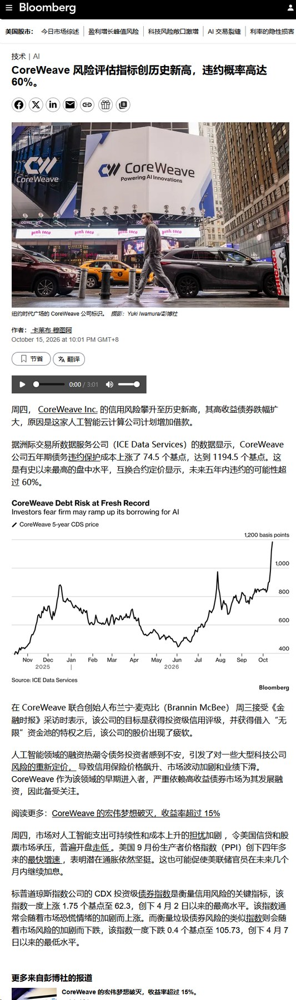
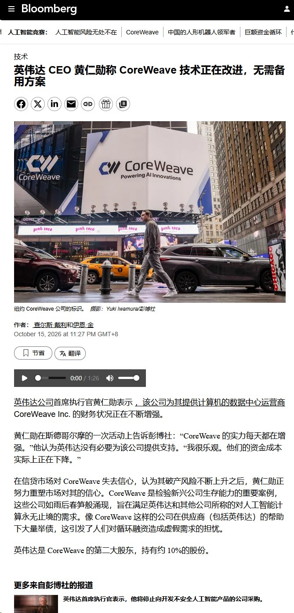

调研纪要 · 2026-10-16 新闻日报
星球 ID: 28855458518111 | 共 284 条帖子 | 精华 66 条
| 查看研究积累
书签
[太阳]相比5月网传版本有较大变化，创新药出海路径清晰，过往出海交易模式基本不受限制
[太阳]相比5月网传版本有较大变化，创新药出海路径清晰，过往出海交易模式基本不受限制
[太阳]只会禁止CGT, 小核酸平台技术整体所有权转让，传统授权模式、单一品种交易、服务外包不受影响
[太阳]限制出海的靶点发现技术需专利、文献等公开资料均未报道过的全新靶点，工业界基本不会涉及
【兴证医药】商务部、科技部就修订《 》公开征求意见
【兴证医药】商务部、科技部就修订《
中国禁止出口限制出口技术目录 ↗》公开征求意见
10月16日，商务部、科技部发布公告，就修订《
中国禁止出口限制出口技术目录 ↗》公开征求意见，并对相关技术实施临时出口前登记管理。本次拟新增人工智能、生物医药、光伏等领域共40项技术。
生物医药方面，拟将“细胞和基因治疗平台技术”“小核酸药平台技术”以及“病原微生物改造和定向增益”列入禁止出口部分。
但对于CGT、小核酸【仅禁止平台技术的所有权对外转让】。
#对外授权许可（license out）、利用相关技术提供外包研发、生产服务等不涉及所有权转让的情形不属于管理范围。
#单一产品管线的BD过程中研发、试验、生产、质控、上市及合规所必需的相关技术工艺，不属于管理范围。
#用于单一药物品种的开发技术工艺不在管理范围内。
将“细胞和基因治疗全新靶点发现和验证技术”“小核酸药全新靶点发现和验证技术”列入限制出口部分。
其中对于CGT、小核酸【仅限制全新靶点的发现和验证技术】。
#“全新靶点”指全球范围内未通过专利、学术文献、公共数据库、行业技术资料、学术会议等途径公开披露过的药物靶点。另外对于对外授权形式，适用自动许可等便利措施。
对于限制出口的技术，可通过提交限制出口技术申请，并经地方商务部门审查通过后，准予出口。
资料来源：商务部、科技部公告
注：仅为公开资料整理，不构成投资建议
联系人：孙宋暄15121161179/杨希成/黄翰漾/孙媛媛
中国采取措施，通过限制抛售和回购股票来支撑股市
中国采取措施，通过限制抛售和回购股票来支撑股市
高盛中国市场日报
高盛中国市场日报
上证综指（SHCOMP）：+0.24%
上证 50（SSE 50）：+0.11%
沪深 300（CSI 300）：+0.11%
科创 50（STAR 50）：-0.06%
创业板（ChiNext）：-0.39%
中证 500（CSI 500）：+0.05%
全市场成交额：1.57 万亿元，较前一日下降 4.66%
下午盘面震荡，A 股在午盘后从日内高点回落走低。收盘前 20 分钟，沪深 300ETF（510300）成交额再度放量，20 分钟成交 125 亿元，带动上证综指翻红收涨。全天指数整体缺乏明确方向，而收盘后出现相关政策消息：中国出台限制卖出、回购等举措托底股市。下周金融街论坛大概率会释放更多相关信号。
除此之外，交易柜台收到大量关于药明康德下午诡异大跌的问询。A 股与 H 股同步放量大幅下挫。市场广泛流传的传言是美国《生物安全法案》针对药明康德，但该消息源自 2024 年，亚洲下午时段基本不可能出现美国方面的新相关政策。
报告认为，大概率是国内社交媒体旧闻二次转发，触发程序化自动卖出，或是市场 “先卖出、后求证” 的交易行为。当日最终全市场成交额 1.56 万亿元，依旧处于偏低区间。
资金流向：
交易端多空力量比值 1.07，买方略占优势。
交易方向：买入半导体设备、CPO；卖出 AIDC 电源、CPO。
【风电策略会交流汇总】
【风电策略会交流汇总】
#专家观点：
1）国内：
需求方面：预计26年装机110-120GW，27年装机120GW，28-30年将有更大幅度提升，驱动力来自capex下降，低风速区域资源开发价值释放。
风机盈利方面：当前风机价格难涨难跌，预计26-27年整机厂盈利改善主要依靠高价订单交付，海外业务辅助贡献。
2）欧洲海风：
乐观情形下，27年有望确定供应链项目包括英国AR7轮次BB项目（年内确定优先供应商）/Dogger South项目、AR8轮次Mona项目/Outer Dowsing项目、德国1.5GW项目、日本R2/3轮次项目等，若以上需求如期启动，27年欧洲市场缺口有望达到200+跟以上。
#公司交流
#时代新材： 增量看点在电容隔膜（铝电解隔膜、超容隔膜），技术能力对标日本NKK，预计今年隔膜+芳纶2亿收入。
#三一重能： 全年出货目标维持16GW（含自用），其中海外出货1+GW，预计27年海外出货快速提升至2-3GW。预计下半年风机毛利率有一定提升，27年有更明显改善，有望达到或接近10%。
#明阳智能： 全年出货目标维持20GW，其中海风出货4GW。上半年海风出货1.1GW，预计下半年海风出货占比提升，带动整体风机毛利率进一步提升。
#振江股份： 切入风机整机装配业务，客户群体优质且稳定，西门子是核心客户，恩德已启动，Enercon计划2027Q1启动，维斯塔斯商务谈判基本完成。公司目标26/27年营收60/80亿元。
#威力传动： 全年减速器出货目标6万台，增速器出货目标600台。三季度起自加工比例持续提升，毛利率有望逐季改善。
欢迎交流~
美的集团：正式进入英伟达MGX生态链，AI液冷热管理打开新成长空间
美的集团：正式进入英伟达MGX生态链，AI液冷热管理打开新成长空间
⭕#美的正式进入英伟达MGX生态链、液冷业务取得重要产业突破。 2026 OCP全球峰会上，美的以AI数据中心热管理供应商身份进入英伟达MGX AI Factory生态体系。MGX是英伟达围绕Blackwell、Vera Rubin及后续平台打造的模块化基础设施架构，覆盖服务器、供电、液冷等核心环节。进入该体系后，美的有机会提前参与下一代平台热管理规格对接、CDU与冷源适配及系统级验证，液冷业务的客户层级和产业位置进一步提升。
⭕#美的液冷能力已经具备从冷源到机柜侧的完整产品体系、MGX合作具备较强的产业基础。 公司目前已具备冷水机、干冷器、风墙、CDU及末端液冷等全链条产品能力，近期推出的工业级CDU单机冷量可达2.6MW，同时持续布局微通道、两相冷板等下一代技术。此前公司液冷方案已经在中国电信大湾区全液冷算力中心、芜湖数据中心等项目实现商业化落地，并持续推进与互联网客户在AI数据中心领域的合作。
⭕#进入MGX生态的意义在于提前卡位Vera Rubin及后续AI Factory热管理体系。 随着Vera Rubin机架功率密度进一步提升，液冷系统需要同时解决高温供液、动态负载、整机可靠性及能效问题，供应商与芯片平台之间的协同开发越来越重要。英伟达此次将Vera Rubin关键机架和Compute Tray设计通过MGX向OCP开放，目的就是推动下一代AI基础设施规模化部署。美的在这一阶段进入生态，有利于产品参数和系统方案更早与英伟达下一代平台完成适配。
⭕#全球制造和暖通能力有望成为美的做AI液冷的重要差异化优势。 数据中心液冷最终需要冷源、液冷分配、控制和工程服务协同，美的长期积累的磁悬浮冷机、压缩机、换热、控制及全球工程服务能力与AI数据中心需求高度匹配。美的楼宇科技目前已拥有覆盖29个国家的193个本地服务网点及34个国家的备件体系，随着海外AI数据中心建设提速，全球交付能力有望成为其液冷业务继续拓展的重要支撑。
⭕#我们认为、此次进入MGX生态进一步验证美的从传统暖通向AI算力基础设施延伸的路径。 此前市场对美的AI数据中心业务更多关注冷水机、CDU等单品，目前公司已经进入英伟达下一代平台生态体系，产品边界也已经覆盖：冷源—CDU—末端—风液协同。后续关注MGX生态身份进一步转化为美的Vera Rubin相关项目、海外客户及订单收入。
【国金电新】振华股份点评：情绪面扰动带来回调，SOFC需求逻辑持续强化_1016
【国金电新】振华股份点评：情绪面扰动带来回调，SOFC需求逻辑持续强化_1016
[礼物]今日回调主要受情绪面扰动。前期市场对收储落地节奏预期较满，短期资金博弈。#实际国储进展积极，供给端抽紧方向明确，这两周市场上修报价亦侧面印证（本周金属铬报价上修2w/吨），价格上行趋势未改。
#SOFC需求旺盛：BE买地指向10GW远期产能，27年有望达4-5GW，对金属铬拉动持续性强。BE已购新厂址，远期潜在产能10GW，公司产品正在送样验证中，预计2026年底至2027年初专用金属铬订单较当前数倍增长。长期看SOFC需求持续放量，对金属铬拉动明确。
#供给端：六价铬审批极严，铬盐扩产周期长达两年，下游生产金属铬绕不开铬盐环节，公司卡位优势突出。
[玫瑰]情绪面回调不改供需偏紧与SOFC需求放量的核心逻辑，量价齐升弹性依然充足。
联系人：姚遥/唐雪琪
🤖【国金具身】特斯拉Roadster 2飞行首秀点评：九年磨一剑，高压气路+风扇空动是核心增量
🤖【国金具身】特斯拉Roadster 2飞行首秀点评：九年磨一剑，高压气路+风扇空动是核心增量
[庆祝]事件：北京时间10月16日凌晨，特斯拉在得州SpaceX麦格雷戈测试场正式发布新一代Roadster。演示车冲上大曲率坡道后翻转、保持倒挂姿态继续行驶，随后驶离坡道腾空，空中转正后安全落地，同时马斯克确认产品将于2028年量产。
[玫瑰]点评：
1️⃣#实现“倒挂-翻滚-悬停”的核心技术拆解：
（1）冷气推进系统：技术源自Space X的猎鹰9回收与星舰姿态控制的冷气推进模块，后排座椅位置换装COPV复合缠绕高压气瓶（航天储箱同级工艺），约10个喷口隐藏于牌照架与车身覆盖件之后，配车载电动压缩机回充、可循环使用，#航天级COPV首次民用上车。
（2）多模式风扇吸附系统（本次最大增量）：市场盯着喷管，但"倒挂行驶"的物理基础是风扇车构型。通过车底气流通道内布置电动风扇，配合可展开裙边密封车底形成压力约2G的低压区，把车"吸"在路面上。
2️⃣#跨产品线技术复用是一大亮点。除了高压气路复用Space X的推进技术外，机器人产品技术也运用在Roadster2的主动空力部件上。#飞行汽车的大尾翼、可动车身组件使用的是与Optimus机器人同源的执行器技术，实现了跨产品线技术复用。
3️⃣#受益标的梳理：
（1）高压气路系统：【保隆科技】储气罐—压力传感—分配阀一体布局；
（2）空悬总成/轻量化底盘：【中鼎股份】AMK空悬总成，【拓普集团】空悬+轻量化底盘双布局，【五洲新春】线控底盘丝杠；
（3）热管理：【三花智控】【银轮股份】适配高性能跑车及飞行器热控刚需；
（4）座椅：【天成自控】最受益的航空级座椅供应商，目前供应特斯拉moel y，Acro是全球三大航空座椅供应商之一。
【国信汽车-两轮车更新42】涛涛车业：短期动销及经营压力引发股价下跌，超跌之后建议重视！
【国信汽车-两轮车更新42】涛涛车业：短期动销及经营压力引发股价下跌，超跌之后建议重视！
近期公司股价有所回调，主要由于Q3球车销量环比增幅不大，以及受汇兑、海运费等压力，导致Q3经营业绩可能略低于市场预期，引发担心短期业绩压力以及长期增长的持续性。
球车行业长期仍持续发展，不应过度担心短期动销数据。场外球车应用场景从日常郊游等延伸至校园、景区、农用等多样化用途，对标房车、全地形车等行业，中长期市场空间有望提升至百万辆以上，成长空间大，单季度波动不改长期向好发展趋势。
业绩压力预计受汇兑、海运费等外部扰动，后续有望恢复。公司Q3利润略低于预期，主要由于汇兑及海运费等影响（Q3美元兑人民币进一步从6.8升至6.7，增长幅度不小），且海运费增幅较大也导致利润承压，展望后续，公司通过产品结构改善（明年Q1将推出更多新品，Q1动销表现值得期待），利润率有望恢复。
盈利及估值：公司流通盘小，一旦产生卖盘股价波动大，容易引发超跌，当前市值168亿，按照最保守估计26/27年净利润10/13e，按主业对应估值分别为17/13x，明年主业估值仅为13x，且燃气轮机成撬新业务进展顺利（新业务期权），当前位置存在一定超跌，建议重视！
三孚新科更新
三孚新科更新
电镀设备近期有望交付，子公司后续有望获得下游板厂入股
【国泰海通商社】受益资金再平衡，商社板块大涨
【国泰海通商社】受益资金再平衡，商社板块大涨
[太阳]今日商社板块大涨，其中：教育、跨境电商、酒店、零售板块个股领涨。
截止中午收盘，涨幅在3%附近及以上标的包括：
中国东方教育+6.8%，绿联科技+5%，新东方+4.4%，华住+4.1%，东方甄选+3.7%，希音+3.4%，三峡旅游+3%，百胜中国+3%，中国中免+2.9%。
[太阳]我们认为今日商社板块上涨更多为大盘整体流动性因素，以及资金板块间再平衡有关。
[太阳]业绩和景气度季度环比改善，以及龙头集中度提升的逻辑更优。
[太阳]大涨个股核心逻辑及变化：
#绿联科技： NAS第二曲线加速兑现AI NAS生态由自研向外部Agent扩张，10月中下旬HomeAgent全屋智能新品发布为关键催化。
#新东方： FY26营收56.6亿美元/+15.5%、经营利润率提升，且递延收入+14.8%支撑26Q4业绩确定性较强，对FY27收入指引积极。
#中国东方教育： 秋招人数及新生收款保持较高增速，1-2年学制高技能专业放量带动量价齐升，目前低估值，且股息率较高。
#华住： 国庆数据表现景气度好于此前悲观预期，四季度通过自身产品结构和运营发力或带动数据表现比悲观预期更好，保持开店节奏，竞争优势扩大份额持续提升。
#东方甄选： 品类扩张驱动收入业绩增长，自营品GMV占比持续提升。
#三峡旅游： 省际度假游轮双船投运，新运力推动客单价、收入及利润同比高增长，公司从短途观光向长短途度假综合运营平台切换，第二增长曲线开启。
#百胜中国： 保持开店节奏稳定，需求稳定性和增长确定性强，股息率较高。
#中国中免： 毛利率改善，上海/北京机场口岸销售改善及DFS并表贡献，利润端修复。
今天市场情绪显著修复，#我们持续推荐的【鸿路钢构】、【山东路桥】在板块内涨幅领先~
今天市场情绪显著修复，#我们持续推荐的【鸿路钢构】、【山东路桥】在板块内涨幅领先~
[烟花]我们认为当前时间点#一定要重视【鸿路钢构】、可以现价买入！公司经营拐点明确，未来弹性显著，按明年15-20xPE，还有50%以上显著空间。公司明确不会因为转债结束出现经营变脸，当前订单非常饱和，广泛承接先进制造与头部制造业企业资本开支，Q3创下了历史最高产量，吨盈利也能维持在高位，今年将是公司明确的业绩拐点！
[烟花]【山东路桥】近期表现强势，核心催化为#实控人大规模增持且不设价格区间。关注后续围绕股东增持、市值管理考核、可转债等相关事项下公司可能的积极举措！跟年初我去【山东路桥】调研相比，#近期公司对后续【一次性大比例的提高分红率】的态度积极了很多，如果后续现金流持续改善、经营情况稳健，大比例分红率提高值得期待！
本周我们调研了【鸿路钢构】实控人、【山东路桥】管理层，第一时间更新最新积极变化，欢迎交流~
🇨🇳睿创微纳：#飞行汽车机载雷达 布局加速
🇨🇳睿创微纳：#飞行汽车机载雷达 布局加速
公司公告，#已与飞行汽车领域某头部主机厂达成深度合作，全力推进飞行汽车机载探测雷达研制，项目整体进展顺利。
该雷达采用#先进相控阵体制，具备探测距离远、精度高、成本可控等优势。第三代RA320F、RA321F已完成研制验证，结合AI算法持续优化点云密度、虚警抑制、目标分类识别及盲区感知等核心性能。
【CC电新】震裕科技：低空eVTOL+特斯拉核心供应商
【CC电新】震裕科技：低空eVTOL+特斯拉核心供应商
#依托精密冲压与自研胶粘铁芯工艺切入飞行汽车赛道，子公司范斯特配套小鹏eVTOL驱动电机铁芯，已实现小批量供货，胶粘铁芯可降低电机损耗、实现轻量化，适配低空飞行器高转速需求。
#震裕为特斯拉核心精密零部件供应商，业务全面渗透特斯拉汽车、储能与人形机器人生态，凭借超精密加工工艺布局机器人关节部件，同时前瞻布局低空硬件，有望切入特斯拉飞行汽车供应链。
【震裕科技】本身为上海特斯拉电机铁芯的批量供应商，目前月供货1.5万-2万台，新的roadster 2汽车电机铁芯跟我们现在在供货的产品类似，目前公司已进入特斯...
【震裕科技】本身为上海特斯拉电机铁芯的批量供应商，目前月供货1.5万-2万台，新的roadster 2汽车电机铁芯跟我们现在在供货的产品类似，目前公司已进入特斯拉北美的供货名单里，请多多关注！
【信达消费】涛涛车业推荐更新
【信达消费】涛涛车业推荐更新
[太阳]下跌解读
公司近期股价回调较多，我们认为主要系公司Q3未投建新产线、且产能向更复杂的六座车倾斜了一部分，叠加海运等因素造成交付效率下降，导致销量环比或略有减少，引起市场对后续增速的担忧。我们认为一方面公司北美产线仍有持续拓展规划，另一方面产品结构与提价有望支撑单车ASP增长进而贡献增量；此外具备潜力的燃机业务落地在即，建议强化关注。
[太阳]26Q3前瞻
我们预计公司26Q3电动高尔夫球车销量略低于26Q2，月销6000台左右，叠加汇兑负面影响，预计收入增速同比依然保持30%增长；此外，汇兑损失与海运费因素或给利润造成一次性扰动，但剔除来看，我们预计公司经营利润仍有望实现较快增长。此外，公司大排量的全地形车快速发展、带动全地形车业务依然有望保持靓丽增长。
[太阳]发电机组业务
目前业务进展顺利，预计26Q4会有级别较大的订单达成，预计在2027年交付，订单预估规模在小几十亿，200-300MW，且利润率有望优于电动高尔夫球车。
[太阳]考虑目前股价及港股折价，公司预计暂缓港股发行，此外基于公司高尔夫球车、大排量全地形车等业务发展，预计27年主业仍有望实现健康增长，而发电机组业务有望功效显著增量，对应27年估值仅10X+，建议低位强化布局。
【财通电子&新科技】瑞芯微：Q3短期扰动，看好四季度修复和新品成长！
【财通电子&新科技】瑞芯微：Q3短期扰动，看好四季度修复和新品成长！
公司昨日盘后发布26Q3业绩预告，业绩环比小幅回落，叠加近期市场整体情绪偏弱，股价出现明显调整。但本轮业绩波动更多源于#短期供应链扰动与季度结构性景气差异，并非基本面走弱，回调后中长期投资性价比进一步凸显，坚定看好！
市场此前已充分预期消费端淡季情况，对Q3“旺季不旺”已有定价，但受上游PCB等原材料供应紧张、交期拉长影响，公司部分订单由Q3顺延至Q4，这是单季业绩暂时性承压的主要原因，而非终端需求恶化，此外，#递延订单将在四季度集中回补，叠加Q4为行业客户集中备货期、RK182X放量、RK3572大规模出货，#四季度业绩修复确定性高。
短期确定性修复之外，公司长期成长动能充足，#新一代协处理器将在年内发布、下一代重磅芯片RK3668马上投产、RK3688随后推出，公司端侧AI的主控+协处理器的双轨制芯片矩阵成型。新品持续迭代将持续优化产品结构、抬升整体ASP与毛利率，强化龙头卡位、拓宽成长空间。
——财通唐佳/王硕，助您收益长虹！
【广发机械】华测检测2026投资者日调研小结：管理能力向报表的转变
【广发机械】华测检测2026投资者日调研小结：管理能力向报表的转变
#2030战略目标：
1️⃣收入CAGR13–16%、净利润率18％。增长以内生为主，并购贡献约5–6%。
2️⃣经营性现金流同步提升，CAPEX占收入7–10%，资金分配转向少数股权回购、海外并购与分红投入。
3️⃣逐步提升ROE水平：公司表观ROE受房产+现金+商誉拖累（占净资产76.73亿约45%），真实经营ROE优于报表。
#向外走：国际化+并购。今年各个事业部基本都提出国际化战略，后续围绕东南亚、非洲中东、欧洲、南美逐步完成海外布局。并购方向围绕大消费品、船舶、国际认证。
#各事业部2030收入复合增速目标
1️⃣生命科学：食农11%（利润高于收入）；环境5–7%
2️⃣消费品：轻纺14.7%；半导体芯片17%，#明年扭亏为盈，利润远高于收入增速；汽车&航空：12.5%（利润14.4%）；电子电器：13%（利润20%）。
3️⃣工业品：双碳ESG17.21%；建工&工业自然增长12.8%（利润显著快于收入）；海事17%（30年4亿+）。
4️⃣医药医学：20%（30年破10亿）。#26年签单大幅增长，其中医药+148%，医疗器械+54%，医学+20%。
#投资思考: Q3业绩预告中枢增长18.35%，未来几年利润有望维持该增速，#管理红利进入全球化兑现阶段。叠加ROE和分红提升，估值处历史低位，重点推荐。
我们此次调研总结了12页学习笔记，欢迎交流[抱拳]
孙柏阳/汪家豪/蒲明琪
【中信电子】长鑫科技：4F²架构取得关键进展，#近期存储板块宽幅震荡公司当前位置赔率胜率俱佳，持续推荐！
【中信电子】长鑫科技：4F²架构取得关键进展，#近期存储板块宽幅震荡公司当前位置赔率胜率俱佳，持续推荐！
[玫瑰]事件：长鑫科技介绍公司4F² DRAM架构研发取得关键进展，计划于2026年底推出融合4F²架构与混合键合技术的新一代DDR5 RDIMM产品。#为市场首发4F²架构商业化厂商。相同特征尺寸下，4F²存储单元理论面积约为当前主流的6F²架构的2/3，采用公司自研VSG垂直包围沟道晶体管，通过垂直布局缩小晶体管平面占用、增强栅极对沟道的控制。
[太阳]【制程与架构协同升级，国产DRAM持续进阶】：此前公司G5平台已实现量产，有源区半间距缩小至11.95nm，#对标海外1b/1β制程；此次4F²研发进一步推进存储单元架构迭代，#与海外先进制程距离进一步拉平。我们看好新架构与先进工艺逐步导入产品后，公司产品存储密度、单bit成本和性能持续优化。
[玫瑰]公司同步加大研发和产业化投入，此前拟使用180亿元超募资金投向技术研发及产业化、存储器晶圆后道测试基地二期等项目，持续完善IDM布局。我们看好公司先进工艺迭代、高端产品拓展与产能配套建设，国产DRAM成长空间持续打开，坚定看好，持续推荐！
具体欢迎联系中信电子交流！
【中信前瞻】联想集团：当前估值具备较强吸引力，公司基本面强健，建议重点关注！
【中信前瞻】联想集团：当前估值具备较强吸引力，公司基本面强健，建议重点关注！
近期受服务器利润率担忧及新云客户信用风险传言影响，联想集团股价累计回调超30%，我们认为市场存在明显过度反应，当前估值已具备较强吸引力。
#基本面稳健，市场担忧有望证伪。根据近期多方验证，ISG业务收入及利润率均不存在市场传言的环比下滑问题，PC收入也将继续保持上行。
#新云客户风险被过度放大，AI服务器需求仍然向上。 针对CoreWeave等新云客户的信用风险担忧，相关厂商已公开澄清；联想云业务中约70%来自CSP客户，包含大型云厂和新云客户，当前订单可见性及利润率仍维持我们此前乐观预期。
#业绩增长确定性较强，中长期盈利空间可观。我们认为公司本财年收入至少1000亿美元、净利润率至少4%，预计下一财年继续增长；中期有望向收入1300亿美元、净利润率5%的目标迈进。
#估值处于低位，悲观预期已充分释放。 按近期约27港元股价测算，对应下一财年PE仅约6.6倍，考虑可转债潜在稀释后仍不足9倍。当前市场定价与基本面表现明显背离。我们认为，伴随后续业绩承诺兑现及市场对ISG利润率、新云客户风险的担忧逐步消退，联想集团有望迎来较强的估值修复，当前建议重点关注。
【国海海外】美团观点更新：行业积极降补迎来外卖UE超预期改善，AI unrelated投资主线中的EPS修复稀缺标的，建议关注底部机会[太阳]
【国海海外】美团观点更新：行业积极降补迎来外卖UE超预期改善，AI unrelated投资主线中的EPS修复稀缺标的，建议关注底部机会[太阳]
#外卖：UE改善超预期、市占稳步修复、基本走出低质量竞争泥潭
①#行业降补趋势确定： 结合近期阿里&京东preview，均指引26Q3外卖环比减亏（淘闪环比减亏近10%至~90亿经调EBITA VS 京东外卖环比减亏近10%至~54亿OP）且长期趋势确定（淘闪重申FY29财年盈利目标 VS 京东外卖指引26Q4环比会加速减亏）
②草根调研反馈：1）单量：26Q3yoy~-5%（#7-9月yoy逐月修复）； 2）客单价：26Q3实付AOV~35元（7-9月逐月上升、#26Q3茶饮订单占比小幅回落至~25%）； 3）市占：#26Q3纯外卖订单市占环比提升2pcts至~60%（不含JD口径）； 4）UE：26Q3外卖单均OP有望修复至0.2元（暑期主动加补背景下7-8月单均OP在0-0.1元、#9月降补后单均OP超预期改善至0.4元）
#闪购（非餐）：市占稳定同时单量维持高增速、UE差于外卖但也处于改善通道
①行业判断：近期核心本地CEO王莆中表示，#即时零售不是应急零售而是一种高确定性的生活方式，下一站是从“店仓配时代”大踏步跨入“商品时代”
②草根调研反馈：1）单量：26Q3yoy~20%；2）市占：#26Q3非餐订单市占环比基本持平至~67%（不含JD+MT含小象超市口径）； 3）UE：#26Q3闪购单均OP有望环比减亏至-0.2元 （逐月改善、投入注重ROI）
#到店酒旅：进入差异化竞争周期、对长期OPM回升到30%+有信心
①竞对动态：1）补贴：#抖音本地生活主站补贴率下降至2%-3%（其中9月川渝地区补贴率同比降幅达30%）、增量补贴资源优先向抖省省倾斜； 2）GTV表现：#抖音本地生活整体26Q1-Q3核销前GTV同比增速逐季度环比仍有提升（41%→46%→50%+），用户粘性及流量优势不容轻视
②草根调研反馈：1）GTV：26Q3yoy~11%（核销前口径）；2）UE：预计26Q3版块OPM25%-27%、对更长周期回升到30%+有信心
#新业务—Keeta：海外盈利能见度提升、经营效率持续改善
①竞争策略：中国香港27年起转为自负盈亏的闭环机制，#中东整体有望在27年晚些或28年实现单月UE转正上岸、巴西采取单城深度运营策略（打磨成熟再扩张下一个）
②草根调研反馈：1）中国香港：26年9月实现日均订单~40万单/单均OP约10港币；2）中东-沙特：#26年9月实现日均订单~57万单/单均OP约0.1美元（7-9月均转正）； 3）巴西-圣保罗：26年9月实现日均订单~27万单/单均OP约-4.5美元
🙋🏻♀#总结及空间展望
短期来看26Q3外卖行业超预期降补带动美团外卖OP改善，#但建议拉长周期关注长期竞争格局确定性向好趋势下的各板块利润兑现、而非阶段UE博弈。我们中性谨慎预计28年核心本地商业OP有望修复至500亿元，若仅基于CLC净利润给予15倍PE（未考虑海外业务期权价值），28年中性看6000亿人民币市值（～50%空间）
[玫瑰]报告/模型/数据库欢迎联系陈梦竹/张娟娟
🧧隆扬电子+和胜股份+汇创达更新
🧧隆扬电子+和胜股份+汇创达更新
⭐隆扬电子：OCP展出PTFE方案交换板，台股台虹今天涨停，公司在台虹配套进展快，端测铜箔也有进展
⭐和胜股份：液冷产品环比上量，布局金刚石散热，明年利润4亿
⭐汇创达：拟收购春草，目标3D打印毛坯25%份额，春草3D打印+全玻璃方案受益较大，私信索取纪要
❗️【天风电新】振华股份调整点评-1016
❗️【天风电新】振华股份调整点评-1016
为什么调整？博弈周五gc开标的资金开始展现自己的“大聪明”了（精确博弈到14点前），在A股这样的现象以后都要见怪不怪。
后面发现利好没结束，比如下周价格还能涨？sofc是景气度真的好，订单超预期，不是主题，再回来。
总之，就…很无聊。有这个聪明，还是多跟老马学习用在创新正道上吧。
【世运电路】27年PE仅15X的汽车pcb核心标的
【世运电路】27年PE仅15X的汽车pcb核心标的
汽车pcb核心供应商，行业上半年涨价50%，Q4有望继续涨价20%+。涨价部分Q3开始体现，Q3业绩有望高增，Q4继续改善。展望27年，公司有望实现20e利润，27年PE仅15X。
🚀【开源中小盘】频准激光：精准激光龙头蓄势起航，量子与半导体双轮驱动成长-20261016
🚀【开源中小盘】频准激光：精准激光龙头蓄势起航，量子与半导体双轮驱动成长-20261016
[太阳]公司是量子科技与半导体用精准激光器供应商
公司脱胎于中科院上海光机所，深耕单频、窄线宽、保偏、高功率精准激光器近十年，产品覆盖177-5000nm全波段，形成量子科技+半导体双轮驱动格局。2022-2025年营收由0.80亿元增至4.18亿元（CAGR 73.2%），归母净利润由0.34亿元增至1.59亿元（CAGR 67.4%），#毛利率长期维持65%以上。我们预计公司2026-2028年归母净利润分别为1.89/2.31/2.87亿元，当前股价对应PE分别为202.69/165.91/133.71倍。公司技术稀缺性、成长性突出，首次覆盖，给予"买入"评级。
[太阳]量子赛道：国内市占率达17%，深度绑定全球头部客户
精准激光是量子科技应用的核心零部件，成本占比约30%-50%。#2024年公司量子科技用激光器全球市占率9.21%、国内市占率16.85%。技术端，公司独有"增益光纤直刻光栅"技术，全程无熔接点、天然抗震动抗跳模；公司“种子源+光纤放大”路线可做到大功率激光输出，超过海外竞品，#且售价较海外低15%-30%。客户端，公司已供货哈佛大学、加州理工、中科院及国盾量子、国仪量子等头部机构与厂商。预计到2030年，全球量子信息用激光器市场将达7.49亿美元，公司产品需求预期充足。
[太阳]半导体赛道：收入持续高速增长，国产替代加速兑现
公司已完成多款晶圆制造、量检测、隐切光源研制，其中266/355/532nm等主流波段产品在线宽、功率、噪声等维度对标甚至超越海外竞品。#公司半导体相关产品已在多家客户实现进口替代，相关收入由2023年的2,515万元增至2025年的1.04亿元，CAGR高达103.8%。未来，随着半导体设备国产化率不断提高，将进一步推动精准激光器等核心零部件的国产替代，预计2030年中国半导体设备用激光器需求将达10.93亿美元，为频准激光带来良好发展契机。
[太阳]产能扩张+切入医疗赛道，募投项目奠定长期成长动能
#2025年，公司多款产品产销率已超100%，接近产能瓶颈。IPO募投产业化建设项目落地后，供需缺口有望快速弥合。此外，武汉研发中心项目布局1940/640/577/561nm医疗激光光源，瞄准全球百亿美元级的医用激光市场，有望打造全新增长极。
风险提示：技术研发与迭代不及预期、产业政策变化、下游量子产业落地不及预期、公司治理及信息披露相关风险。
📖深度报告链接：
【频准激光（688826.SH）：精准激光龙头蓄势起航，量子与半导体双轮驱动成长】 开源中小盘|首次... ↗
☎欢迎联系：开源中小盘 周佳 15121019711/郑维汉 17321390895
🍁🍁🍁#金冠电气 作为基本面剧扎实+近期重大变化的公司，当前时间点务必重视！
🍁🍁🍁#金冠电气 作为基本面剧扎实+近期重大变化的公司，当前时间点务必重视！
a股壳价值通常都在20亿，但公司基本面非常优异，账上现金多，无负债，产品毛利率高（特高压60%+），回款质量高现金流好（客户国南网），今年主业还变化重大，订单高增，特高压占比提升，明年利润预估1.2亿，#底部25亿很扎实！
充电桩已经收到了预付款，四季度就开始交付，明年预计贡献2亿利润，不考虑后续二期项目、东南亚和沙特新客户的拓展、以及氮化铝的布局。
今年几千万，明年3个来亿利润的20来亿市值公司 继续看好。
#海通发展三季度业绩点评：散货高景气得到兑现，盈利水平稳步提升
#海通发展三季度业绩点评：散货高景气得到兑现，盈利水平稳步提升
1、事件：公司前三季度实现营业收入55.97亿元，YoY +85.99%；实现归母净利润8.19亿元，YoY +224.09%；实现扣非归母净利润8.10亿元，YoY +224.27%。其中Q3单季度公司实现营业收入21.26亿元，YoY +75.88%，季度环比-0.06%；实现归母净利润2.95亿元，YoY +78.10%，季度环比-5.72%；实现扣非归母净利润2.88亿元，YoY +76.05%，季度环比-7.38%；
2、Q3运价中枢继续上行，带动公司盈利稳步向上。看同比变化，BDI均值上涨约54%，海通发展Q3利润同比增长78%，利润增速高于运价涨幅，体现了运力规模扩张和经营杠杆的共同作用。而环比变化，BDI均值上涨约11%，但Q3利润环比下降6%。考虑到天气导致部分船期延后结算，利润未能充分反映当季运价上涨，存在一定跨期影响。
3、行业上行周期渐进，公司业绩弹性较大。干散货航运正迎来新一轮上行周期。根据克拉克森数据，供给端，截至2026年10月，全球在手订单占现役船队比例仅为15.42%，处于历史低位。且船厂产能被集运、LNG等高附加值船型占据，剩余产能有限。需求端，以西非西芒杜铁矿为代表的长运距货源将结构性拉动吨海里需求。在此背景下，公司作为规模持续扩张的船东，业绩弹性较大。
盈利预测与投资建议。预计公司26-28年归母净利润分别为12、15和19亿元，维持“增持”评级。
风险提示。全球范围金融危机、订单超预期释放、IMO监管不及预期、公司成本控制不及预期。
【中信纺服】申洲国际：负面预期释放充分，大股东持续增持，关注股息率支撑下的估值修复机会
【中信纺服】申洲国际：负面预期释放充分，大股东持续增持，关注股息率支撑下的估值修复机会
[太阳]#股价与估值已基本充分定价悲观预期。上半年受大客户订单波动、人民币升值、关税分摊、原材料与人力成本压力影响，公司业绩承压。但下半年各承压因素迎来不同程度缓解：承压客户订单有望在下半年迎来改善，同时新品牌有望接力长期成长；且汇兑损失、原材料涨价、关税分摊压力边际缓解，预计盈利端压力有望改善。
[太阳]#台股成衣代工9月订单企稳。儒鸿、聚阳2026 年9月单月营收新台币口径同比分别+8.3%、+24.1%，美元口径约+4%、+19%，同时行业订单能见度普遍延伸至2027年一季度，印证行业修复趋势。
[太阳]#大股东持续增持&关注股息率支撑下的估值修复机会。9月23日至10月13日，大股东累计增持2.73亿港元，平均增持价格34.7港元。目前公司2026年预计股息率约5%~6%，对应2027年约9~10x。站在产业链视角看，申洲相较主要客户耐克、阿迪、迅销的估值水平均处近年来低位，建议积极关注股息率支撑下的估值修复机会。
[玫瑰]【华西轻工&美护】曲美家居：守得云开，曲美正迎积极变化
[玫瑰]【华西轻工&美护】曲美家居：守得云开，曲美正迎积极变化
#曲美家居：变革初见成效、业绩逐步改善。公司国内正积极创新和盘活资产，海外业务则已出现回升，收入端有望企稳回升。利润端，国外高海运费和高原材料成本等压制因素大幅减弱，国内正采取多项降本策略以优化费用，并通过积极的资本运作方式大幅减轻自身财务负担，盈利能力有望回升，带动公司净利润逐步扭亏和实现增长。
#国外：Ekornes稳健发展、成本压制因素逐步消退。Ekornes分部收入2019-2022年均维持增长，2023年因欧美消费需求疲软而短暂下滑，此外原材料和海运费高企，Ekornes盈利能力同步承压。伴随欧美市场消费回暖，海运费及原材料成本下降，叠加公司采取拓品类和扩市场等多项措施，2024年Ekornes盈利水平已显著恢复，收入在2025年出现回升，整体经营正稳步向好。
#国内：国内市场承压、创新+降本推进业务好转。国内房地产及家具市场继续承压，面对困境，公司积极推动业务创新，围绕创二代IP“泽龙 Z”布局线上内容资产，初步实现商业化闭环；公司同时进行资产盘活，重点推进北京土地与厂房资产的商业化，并压降公司运营成本和各项费用，推动国内业务逐步回暖。
#降债：有息负债规模下滑、财务成本有望继续降低。2018年公司以36.77亿元取得Ekornes的90.5%股权，有息负债明显增加。2019年以来公司通过定增、引入战略投资者、陆续还款等措施逐步降低有息负债规模，有息负债从2019年40.67亿元已缩减至2026H1的24.11亿元，叠加以低成本负债置换高成本负债，财务费用逐步下降，公司有望依托积极的资本运作方式继续减轻自身财务负担。
[玫瑰]公司国内外业务均在积极变化，我们看好曲美后续国内外的经营表现，整体业绩有望向好。我们预计公司2026-2028年营收分别为33.60/34.43/35.30亿元；EPS分别为-0.09/0.12/0.20元，PE分别为-46/35/21倍，维持“买入”评级。
【HY食饮】藻油新产能投产供不应求
【HY食饮】藻油新产能投产供不应求
🔺最新进度：年化万吨产能已投产，对应月产能900吨左右，#目前订单排产供不应求。预计27年年产10年吨藻油进程加速，预计1月份安装新设备，Q1-2落地年2.5万吨产能，#预计全年累计实现3万吨藻油产量。
公司对下游藻油价格约4-4.5万元/吨，毛利率30%+，预计在厄尔尼诺加强下藻油价格具有支撑。
🔺当前位置仍然强CALL金达威，27年净利润预计6.3e、14.6xP/E。明年各业务线均具备积极预期（VA价格不具备进一步恶化可能性，Q10预计以量补价，保健品业务良性增长，海外工厂扭亏增利），且藻油业务的边际放量预计将兑现公司成长性。
市场情绪回落至对等关税以来最低
市场情绪回落至对等关税以来最低
中国国家队强势回归，ETF资金大量流入
中国国家队强势回归，ETF资金大量流入
🍁🍁🍁关于roadster2陆空汽车 我刚发现可能会带动线控转向需求爆发，这个那么大的冲击力，用机械转向肯定不行了，容易断，要用线控转向，而且T确实要用，关注德...
🍁🍁🍁关于roadster2陆空汽车 我刚发现可能会带动线控转向需求爆发，这个那么大的冲击力，用机械转向肯定不行了，容易断，要用线控转向，而且T确实要用，关注德尔股份，浙江世宝，伯特利。
【华创策略姚佩】双巨头收入披露，AI投融资进入“价值验证”阶段——AI投融资跟踪半月报
【华创策略姚佩】双巨头收入披露，AI投融资进入“价值验证”阶段——AI投融资跟踪半月报
1⃣OpenAI9月底ARR约500亿美元，低于此前媒体报道的700亿美元，主要源于统计口径。Anthropic三季度营收168亿美元，环比+46%，较二季度147%显著下行。
#行业关注点从“融了多少钱”切换到“赚了多少钱”，#AI投融资进入“价值验证”阶段。前沿大模型业务正在形成可观的商业收入，却尚未消除行业对增长放缓、资本开支回报和融资成本的疑虑。AI企业的估值逻辑正从用户增长和技术能力，进一步转向收入质量、盈利可持续性及资本使用效率。
2⃣9月以来市场对AI安全风险的担忧持续升温。从影响来看：#一是安全合规或将变为准入门槛： 统一标准若落地，开发周期与合规成本将系统性上升。#二是行业格局或向头部集中： 监管框架将抬高小公司门槛，若按此演进，资源或进一步向合规能力强的头部实验室集中。
【中泰电新】#风电更新：困境反转，重视板块投资机会
【中泰电新】#风电更新：困境反转，重视板块投资机会
#风电招标回暖趋势明显，价格保持稳定
#招中标：据每日风电，26年前三季度国内风机中标100.5GW，同比-6.5%，下半年风机招标逐步恢复同比降幅收窄明显。同时，9月国内海风招标变化较大，当月风机招标超2GW（今年首次），主要来自江苏、广东、辽宁项目
#价格：9月陆风加权中标均价含塔筒1947元/kW，海风中标均价3284元/kW，均相对稳定
#国内外海风预期有密集催化
#国内，施工方面，广东徐闻东二开工，海南CZ2/CZ8、广东三山岛六陆续完成沉桩、风机吊装等施工，帆石2GW全容量并网；审批方面，广东徐闻东三、红海湾三获用海批复，启东H4#获环评批复；此外，江苏、广东、辽宁项目风机招标加快
#海外，9月Gennaker海风项目完成FID进入建设阶段，EEW获荷兰北海Zeevonk海风项目一期69根单桩订单，10月Boskalis获该项目149公里阵列缆敷设合同；此外，预计英国AR7 BB及DBS项目在11月左右会有授标PSA等积极进展，法国、日本等今年预期也有项目落地。#明年看，英国AR8、法国、丹麦、日本等项目订单需求持续推进、景气度高于今年
#投资建议：下半年看业绩改善、海风招标加速、海外重点项目订单落地等有望形成催化带动板块修复；往后看，国内外海风中长期景气度上行，叠加龙头公司延伸布局造船业务等，业绩弹性可期。#建议重点关注超跌的海风标的：大金/天顺/振江/海力/东缆等；以及风电零部件龙头：新强联/德力佳/金雷等
📩风险提示：需求不及预期、竞争加剧等
☎中泰电新 曾彪/吴鹏17701800142/郭琳15962175627
【ras-ADC 进展更新】
【ras-ADC 进展更新】
[玫瑰]2026年10月15日，阿诺医药（NASDAQ: ANL）宣布与礼来和德国默克（Merck KGaA, Darmstadt）分别达成临床试验合作及药物供应协议：礼来将免费为美国临床中心提供西妥昔单抗，德国默克免费为澳大利亚及中国中心供药，以支持 AN4035 全球 I 期临床试验中''AN4035 + 西妥昔单抗''联合治疗组（CEACAM5 高表达、RAS 依赖性实体瘤）的开展，阿诺医药继续担任试验申办方。（股价异动+11.12%）
[玫瑰]AN4035 基于阿诺医药专有的 RASiCA™ 平台开发，通过 CEACAM5 抗体将高活性泛 RAS(ON) 抑制剂选择性递送至肿瘤组织，从设计上规避了 EGFR 与 RAS 系统性联合用药的毒性叠加问题（皮疹）。临床前数据显示其稳定性和 PK 特征良好，对 CEACAM5 阳性、RAS 依赖性癌细胞具有纳摩尔至皮摩尔级杀伤活性和强旁观者效应，并在 CDX/PDX 模型中诱导肿瘤深度退缩。目前该药正在全球 I 期试验中评估单药及联合西妥昔单抗的安全性、耐受性、PK/PD 和初步疗效，单药组与联合组按序启动。
[玫瑰]礼来与德国默克愿意免费供药，说明''ADC 递送 RAS 抑制剂''的差异化策略获得了一定行业认可。
[礼物]国内k/pan-ras-ADC 布局的公司：和黄、劲方、加科思
联系人：甘坛焕/汪铁
【电子级PI膜供需失衡：宇部产能被锁 钟渊将再提价】
【电子级PI膜供需失衡：宇部产能被锁 钟渊将再提价】
事件：根据产业链反馈，1）宇部兴产（UBE）电子级PI膜80%产能被下游提价锁定；2）钟渊化学近期正酝酿新一轮的提价。
PI薄膜被称为“黄金薄膜”，美国杜邦、日本宇部兴产、日本钟渊化学、韩国SKC等厂商合计占据全球80%以上市场份额。1）存储/服务器/光通信领域需求大幅增加，导致全球电子级PI膜供需失衡。2）BPDA是高端PI的“心脏”，决定柔性电子与先进封装的核心性能。
海外龙头提价有望强化产业链对高端PI膜稀缺性的认知，也为具备量产能力的本土厂商提供价格窗口和导入机会。
【电子级PI膜厂商】#国风新材#瑞华泰
[红包]事件：特朗普的人工智能特别工作组将发布关于技术风险的报告
[红包]事件：特朗普的人工智能特别工作组将发布关于技术风险的报告
美国总统唐纳德·特朗普的人工智能特别工作组在周四举行的首次会议上，一致同意应对与网络安全、生物安全以及“模型管控与问责”相关的风险，与此同时，人们对这项技术可能带来的潜在危害的担忧日益加剧。
据白宫发布的会议纪要，被称为“超级智能部队”的专家组--沿用了总统对人工智能的惯用称谓--将委托总统科学技术顾问委员会撰写一份报告，以评估上述及其他相关关切。
📌重点关注：中新赛克、天融信、国安股份
【关注AI传媒应用｜华鑫传媒朱珠】
【关注AI传媒应用｜华鑫传媒朱珠】
事件：2026.10.13，字节旗下AI互动影游《
不问凡尘 ↗》首次版本更新前，EA版本上线发售已达3周，据VGI预估数据显示，《
不问凡尘 ↗》EA版本三周时间内预估售出约29.2万份。华策联合Utopai在戛纳发布全AI生成3D动画剧集《
西游记之消失的五百年 ↗》预告片。AI产品新供给有望驱动影视、游戏、国漫等板块。10.23 迎AI电影《
三星堆未来往事 ↗》、双十一电商节预售开启。
【中信出版300788】影游漫IP图书增长强劲大众图书出版持续领先，2025 年底，公司超百万册销量的图书累计近50种，细分品类中，经济与管理、传记、艺术类排名第一，自然科学类位居第二，优质内容源；AI赋能仍具潜力， 从夸父AI到图书智能体，推动AI技术成果转化，#推进资本运作来助推公司的转型升级。
【华策影视】10月13日全AI生成3D动画剧集取材自古典名著《
西游记 ↗》（预计2027年正式上线），由华策主导开发，联合Utopai在戛纳发布预告片，中国国民IP在AIGC内容这条赛道上以“电影级制作标准”的姿态走向世界，华策影视与Utopai合作致力于实现内容创作能力与前沿技术赋能、全球化视野与发行网络的强强联合，推动东方神话故事实现更具国际影响力的表达与传播。
【完美世界002624】完美世界依托国内首批自主研发3D游戏引擎的技术基因，以技术立身，并已形成覆盖端游、手游、主机游戏、云游戏及小程序游戏的全平台研发与发行能力。；影视端通过“长剧深耕、短剧精作、共生共长”策略，协同发力共生共荣，发力短剧赛道，出品的《
觉醒吧！恋爱脑 ↗》系列等短剧聚焦社会议题。同时#恺英网络也可积极关注。
【顺网科技300113】
我们在2026年9月17日举办顺网科技电话会议，10月14日顺网科技以自有资金5000万元与其他方投资设立广州众行励芯创业投资基金合伙企业。推出AI云电脑，打造一站式AI工作平台，内置Deepseek、Qwen等主流AI基础模。2026.2.27顺网科技推出2026年限制性股票激励计划凸显后续发展信心。
【吉宏股份002803】
跨境电商代表企业，AI新品端，2026年9月推出AI基础设施平台 #TokGate.io，平台接入70个大模型，接入数量不会成为壁垒，核心是FDE工程交付机制，公司致力于将长期跨境经营积累的场景、数据与经验，转化为可对外输出的全球经营生产力。
【AI电影电影】 儒意电影、博纳影业等。
《深度|AI浪潮看内容与聚合平台价值几何？》
深度|AI浪潮看内容与聚合平台价值几何？ ↗
华泰计算机郭雅丽：“不是东风压倒西风，就是西风压倒东风”
华泰计算机郭雅丽：“不是东风压倒西风，就是西风压倒东风”
自26年3月底以来，我每周末雷打不动进行美股科技股复盘，至今正好半年。今天将这半年以来对美股复盘的一些心得和看法分享出来，以期有所启发，欢迎一起交流。（出差途中手机上纯手敲，很久没打这么多字了）
·6月份以来，宏观（美债收益率/油价等）、基本面（业绩/涨价/缺货等）、产业叙事（超预期的新模型/模型 ARR 增速/新推理场景等）成为影响美股科技股走势的三大核心因子。在不同阶段，通常其中两个因子会占主导地位：财报季--业绩（EPS）+宏观；非财报季--产业叙事(影响估值)+宏观，而两个因子的强弱程度决定了当期的股价走势。
·7月-8月，AI 硬件整体呈现“强现实、弱预期”的特征，宏观变化成AI硬件（SOX）股价短期的扰动因素。弱预期的核心原因：在没有出现新推理场景的背景下，国产开源模型智能水平的高歌猛进以及高性价比→持续挑战OpenAI 和 Anthropic 两大前沿模型的市场份额→导致其ARR 增速放缓→市场预期影响CSP 未来资本开支的持续性→影响AI硬件远期需求→AI 硬件估值波动。
·9月份以来产业叙事持续走强，AI 硬件（SOX）逆宏观走强（但也分化严重）。核心驱动因素有：①以OpenAI GPT-6Astra 为代表的海外前沿模型迭代超预期（闭源模型重新拉开与开源模型的差距）；②以网络安全/AI4S/Meta Muse为代表的新场景催化不断；③以及此前爆出的 OpenAI9月底700亿美金/季度增 70%的ARR。
·10/8媒体传出OAI的ARR从 700 亿美金下调至500亿（10/9 即澄清为口径问题，净口径同比增速仍为 70%），SOX当日立即下跌3%+。10/14 Anthropic 投资者说明会披露Q3营收168 亿美金/环比46%，不算一个好消息。当前AI硬件股价对产业叙事的高敏感性，本质原因在于高利率环境下，AI产业链估值的脆弱性。除非产业叙事强度远>宏观利率强度，否则股价走势难以持续。
·接下来，美股进入新一季财报期，科技股/尤其是 CSP 业绩（更重要的是未来指引）成为 AI 硬件股价的核心锚点；坏消息是CPI又超预期→通胀预期陡增/10月份加息概率上升，科技股需要更强的业绩支撑及未来指引，才能抵御宏观逆风。
·对于美股的AI应用来说，“软硬跷跷板”效应仍在持续。非财报期，网安/AI4S/数据是主要的强β板块；财报季，业绩成色（是否全面 beat）是AI应用股价上涨的核心主导因素。对于AI应用来说，虽然市场现在不再一刀切的悲观，但对业绩要求非常严苛。
❗️❗️酒店板块配置价值提升，看好经营触底回升
❗️❗️酒店板块配置价值提升，看好经营触底回升
行业层面：今年以来供给端在头部公司开店放缓、新增物业减少及投资回报有所下降背景下增速出现放缓趋势（增速由之前中高个位数放缓至中低个位数），需求端底部特征明显，休闲需求有望在四季度秋假及26年因外部天气、高油价影响低基数下改善，商旅需求经过几年走弱已基本触底；预计26Q4将较Q2/Q3边际改善，27年看好行业回正。
个股层面：一方面加大分红，部分公司股息率超5%；另一方面提质增效，锦江直营店减亏明显，首旅锦江直销渠道也出现中高个位数提升，叠加携程处罚未来OTA流量分配及佣金率下行利好头部酒店集团；业绩层面，行业承压下，依托加盟业务增长及内部经营改善头部公司业绩上半年仍实现10%以上增长，经营韧性较强，且现金流好。
优先推荐产品力、经营效率领先华住，其次重点推荐股息率较高，经营稳健，PB仅1倍首旅酒店，以及三季报有望延续较高增长、改善明显的锦江酒店。
【创新药板块持续推荐-261016】
【创新药板块持续推荐-261016】
#观点更新
近期由于半年报业绩期已过，叠加WCLC大会催落地以及AI4S板块分流，创新药板块出现一定程度调整，鉴于重点公司临床推进节奏以及数据竞争力等基本面未发生重大变化，我们仍坚定看好27-28年创新药β性行情，板块核心叙事逻辑有望从此前的炒预期逐步演化为业绩驱动，理由如下：
1）海外BD仍是星辰大海：MNC的专利悬崖逻辑仍将持续，且现阶段看BD案例正逐渐增多，国产新药除双抗和ADC等优势领域外，未来自免等慢病和新领域同样有引领全球的潜力。
2）国内市场走向盈利阶段：目前新药的医保政策相对稳定，众多Biotech在核心产品上市后进入快速爬坡期，对于利润贡献持续超预期，重点企业净利率快速提升，后期规模效应下的盈利性将是核心预期差。
3）重点公司估值性价比已显现：经过一年来BD叙事的估值波动后，核心标的的国内外估值结构已趋于理性平衡，考虑到重点品种的出海已落地，27-28年随着海外数据成熟，板块有望迎来进一步de-risk的投资机会。
🎁选股思路上，仍建议以临床数据过硬、BD干扰因素相对少的公司为主，关注全球市场参与确定度高的相关标的。建议积极关注确定性高，BD进展顺利的标的：科伦博泰、翰森制药、百济神州、信达生物、三生制药、映恩生物、康诺亚、乐普生物。
[礼物]中药低波红利资产配置价值凸显
[礼物]中药低波红利资产配置价值凸显
近期大市场风格偏谨慎，中药板块凭借"低估值+高股息+成本端改善"三重属性，关注度持续上升。
[玫瑰]估值来看，中药板块估值处于历史底部。截至2026年二季度末，中药生产（中信）（CI005153.WI）在全市场机构重仓持股市值中持仓比例仅为0.21%，动态市盈率处于过去20年以来11%分位。
[玫瑰]原材料价格下降，成本端持续改善。根据康美中药网，中国中药材价格指数自2024年7月以来持续回落，指数2026年10月14日报1454.16点，同比−7.66%；动物性原材料降价显著，根据中药材天地网天然牛黄2026年10月12日报价为58万元/公斤，较2024底高点170万元/公斤下降66%。经过库存清理调整，中药公司业绩陆续迎来拐点。2026年上半年68家中药上市公司23家实现收入正增长，32家归母净利润正增长，利润端改善快于收入。
[玫瑰]中药板块已形成清晰的高股息梯队，股息率普遍达3%-7%。例如按照股息率TTM排序，济川药业6.28%、东阿阿胶5.81%、佐力药业5.26%、羚锐制药5.21%、云南白药4.98%。综合梳理两条投资主线：1）高股息率具备持续性的标的。建议关注云南白药、华润三九、华润江中、东阿阿胶、佐力药业。2）业绩向好、具备一定股息率的标的。建议关注马应龙、羚锐制药、方盛制药。
欢迎交流更多标的
联系人：陈竹/宋硕/蒋罗昕/王凯/陈逸飞
【国金军工】Q4催化密集，看好军工主线行情
【国金军工】Q4催化密集，看好军工主线行情
[太阳]航展规模创新高：近期航展新闻发布会在北京举行，集中介绍航展亮点，本届航展参展装备超3000件，“首展”“首秀”展品占比10%。主展区飞机超170架，规模创历史新高，航展是我国国防军工实力的公开体现。
[太阳]空军方面，多型主战装备和无人智能等新质战斗力将亮相，首次在空军展台设置“数智赋能”板块，运用人形机器人、虚拟数字人等，应用人工智能面试、数字化维修以及智能化检测等前沿设备，集中展示“数智空军”建设成果。海军方面，首次拓展海上维度，开辟高栏海上装备展示去，海军现役装备大规模亮相。
[太阳]持续看好军工板块，后续十五五规划出台，明年采购订单下发，航展最大规模、大飞机发动机国产化重要节点。军工现在位置低+筹码好+改善预期，确定性机会。重点关注：
[礼物]军工主赛道：洪都航空、国睿科技、中航成飞、中航西飞、中航沈飞、航天南湖、国科军工、锐科激光、北方导航等。
[礼物]大飞机发动机：航发科技、航发动力、中航重机、万泽股份、航材股份、航宇科技、图南股份等。
[礼物]高景气度：中国动力、北化股份、国科天成、睿创微纳等。
风险提示：进度低于预期，市场波动。
☎国金军工杨晨团队
【国盛军工】观点更新：Q4军工机会有望反复，择机配置板块辨识度个股
【国盛军工】观点更新：Q4军工机会有望反复，择机配置板块辨识度个股
军工后面有望迎来若干催化，随着“十五五”规划落地、军贸订单持续增长、珠海航展新装备的亮相，我们认为军工目前正处于由之前的“强预期、弱现实”向“强预期、强现实”逐步发展的阶段。从市场来看，尤其在三季报结束后长达5～6个月的业绩真空期，高频催化且位置低的军工板块有望得到市场反复关注。
重点关注
1、板块β:中航西飞、洪都航空、国睿科技、航发动力、中航沈飞、中航成飞
2、无人/反无人装备:锐科激光、六九一二、内蒙一机、中无人机、航天彩虹、纵横股份、晶品特装、天和防务
3、国产商发:航发科技、万泽股份
4、弹药：长城军工、国科军工
风险提示:订单落地不及预期。
国盛军工团队
沃什中午讲话要点：
沃什中午讲话要点：
1. 美国经济韧性很强
实体经济抗冲击能力强，消费支出保持健康，就业市场稳定；企业资本开支高增，AI基建是资本开支的核心驱动力，企业盈利、利润率维持在高位，信贷市场没有明显紧缩压力。
2. 长期AI生产力红利，具备抑制通胀潜力
AI带来的生产效率提升，中长期可以抬升潜在经济增速、压制通胀，这是最重要的中长期积极变量；高增长不一定持续推高通胀。
3. 长期通胀预期保持稳定
虽然短期通胀有反复，但市场长期通胀预期没有失控，没有形成通胀螺旋。
4. 政策灵活性本身是利好
不再被提前承诺束缚，一旦后续通胀快速回落，他不受之前口头承诺约束，可以灵活转向降息，不会被前期表态绑住手脚。
马斯克已经发了飞车Roadster，后面的重点项目也只剩下机器人Optimus了。#机器人可以提前关注起来了[偷笑]
马斯克已经发了飞车Roadster，后面的重点项目也只剩下机器人Optimus了。#机器人可以提前关注起来了[偷笑]
🚩【长城 邓宇亮】机器人T链跟踪
1⃣️供应商交付的量：核心单家供应商这周的周度交付平均在800台级别，别的也有600的、1200的周交付。如果到T这边汇总的话，应该在1200-1500台级别。
2⃣️T自己的量：这周T自己工厂的本体下线在400-500台级别，上个月月初还在100-200台级别的周度生产。跟踪来看，T自己生产的台数是落后于供应商交付台数大概1-2个月。
3️⃣其他一些信息：这周T亚洲sie全员出动，走访到了tier2，要求tier2的供货满足t1的需求。这周是亚洲sie出来，下周是美国的sie过来。T对于上量的急迫程度很高，亲自抓产能、亲自督促。
🌈Tesla Roadster何以飞行？20261016
🌈Tesla Roadster何以飞行？20261016
今日上午space X基地迎来Roadster首次亮相，我们第一时间拆解背后技术：
1、现场测试：Roadster演示0—60英里/小时加速仅0.81秒，并通过风扇吸地与冷气推进器完成倒悬、短时腾空及姿态调整。
2、量产时间：2028年投产目标，官网已接受预定。5万美金预约金（10日付清），全部预约金可退还。
3、软件控制：将轮胎驱动、主动下压力与气体反推协同控制：风扇增加轮胎附着能力，推进器提供额外推力，整车性能边界由电驱系统进一步延伸至高压储气、快速阀控和多执行器协调。
4、硬件配置：1）COPV压力容器约69兆帕，连接后车4个气体喷嘴；2）气体通过两根长管再分流，长管和推进器喷嘴采用钛材制造；分流管则采用Inconel镍基高温合金。3）两台后置电机的总功率为1兆瓦，提供推进力。
❤️现场报道原文请联系，A股映射方向【COPV压力容器】+【轻量化材料（钛材/高温合金】
向您汇报下，#受特斯拉Roadster发布催化-低空板块全面爆发
向您汇报下，#受特斯拉Roadster发布催化-低空板块全面爆发
三剑客万丰奥威、宗申动力、中信海直悉数涨停
代表性公司纵横股份、英搏尔涨10%+
莱斯信息、深城交等大涨
我们认为
1、特斯拉超跑“飞行汽车”功能雏形引爆市场关注，对海外低空经济注入新品，以其影响力有助于在海外推动场景需求释放
2、周末我们报告解读《
发展新质生产力意见 ↗》出台继续明确了低空经济发展的地位。
3、珠海航展官宣12月7-13日。
继续关注低空代表性公司的市场表现。
尤其海外链条投资机会，包括海外产品以及海外供应链。
核心标的 万丰奥威、宗申动力、中信海直、莱斯信息、英搏尔
此外，继续强调观点#华创交运|航空强国：看好“国产大飞机+两机配套出海+军贸”三期共振的产业向上机遇。
#核心标的
1、国产大飞机及两机相关：
环锻件基础件核心供应商：#强推航宇科技、推荐应流股份、万泽股份、 关注航亚科技；
高温合金材料：#推荐航材股份、关注隆达股份。
发动机核心配套商：#关注航航发科技，航发动力、推荐航发控制；
机载装备：#推荐江航装备、 关注中航机载；
机体结构：#推荐中航西飞；
航空服务：关注润贝航科；
2、军贸方向
重点推荐#国睿科技、 航天南湖、中航西飞、江航装备，
无人机方向推荐#宗申动力，建议关注中无人机、航天彩虹。
欢迎联系华创交运吴一凡梁婉怡
《 》
《
广发海外电子通信 ↗》
☄OCP2026主题及美国调研反馈
👉总结OCPGlobalSummit2026及美国供应链调研takeaways。
☀OCP—系统级架构拐点：Hyperscaler加速全栈协同设计；Nvidia在CPO外，与Cisco推出USFP可插拔标准，支持12.8Tb/s模块，并展示采用PTFE的NVLinkBoard；Microsoft计划2027年起部署multi-GWMaia300，整合CobaltCPU及AzureBoostDPU提升推理吞吐；Meta在Scale-out试点Near-packaged光学方案，Scale-up高密度互连保留铜连接。
☀OCP—光学Scale-up及电源整合：Broadcom与OpenAI推进OCI-MSA多机柜光学Scale-up，以高带宽铜连接支持TensorParallelism、光互连支持ExpertParallelism。GEN2/GEN3路线图(2027年400G、2030年初800G)显示持续渗透。Google重点转向电力，推动数据中心电网整合，其1GW需求响应能力及LVDC路线图(从±400VDCMtDiablo机柜迈向原生800VDC)显示电力成为部署关键约束。AMD推出HelionCPU机柜，最高达32,768个EPYC核心，VeniceCPU则提供192核及LPDDR版本。
☀美国调研—供应链与算力经济性：Neocloud中短期电力供应风险有限；模块化机房最快约3个月完工，液冷仍为瓶颈，机柜价格持续上涨(GB300US$5.5–6.5m、VR200US$8m)；推理经济性具挑战，GPU利用率仅20–30%，Token成本每年下降5–10x，但内存及散热成本上升；AgenticAI推动CPU/加速器比例至1:1，CPUTAM有望翻倍。
☀AMD、FIT及ALAB展台反馈：重点包括Helion机柜出货、Helio机柜挑战及规格、FIT于12.8T的XPO冷板，及ALAB面向NPO的Aries7系列。
📑高盛中国午间综述
📑高盛中国午间综述
📊上证综指 +0.95%，科创 50 +1.64%
📊上证 50 +0.47%，创业板指 +0.96%
📊沪深 300 +0.75%，中证 500 +1.71%
📊总成交额（万亿人民币）0.97，环比 - 2.02%
📈A 股今日迎来久违的反弹，多数个股收涨，但盘中走势仍较为震荡。
📌整体约 4800 只个股上涨，但全天成交额继续处于偏低水平，预计收盘低于 1.5 万亿人民币。
🔄早盘缺乏方向，盘中领涨板块从医疗保健切换至地产，随后又轮动至国防。
🏠高盛中国房地产指数 + 4.57%，似乎受下周金融街论坛前的政策预期驱动。
💻科技股今日走势较为震荡。
📈大盘股如长鑫存储反弹约 5%，与区域同业一道走高。
📊科创 50 和创业板指在午间收盘前出现 V 型反弹，但 ETF 成交量未见明显放大。
🔌光模块个股在隔夜回购计划公告后获得一定支撑，但反弹幅度仍相对温和。
✈️此外，航空航天与国防板块普遍走强，但并无明确的催化剂。
💸资金流向：1.12 倍偏向买入。买入半导体设备和 CPO，卖出 AIDC 电源和 CPO。
摩根士丹利：ASML产能扩张预期及财报点评
摩根士丹利：ASML产能扩张预期及财报点评
1/ 近期的业绩增量信息在哪？
- Q3营收117亿欧元（符合预期）+毛利率达57.5%（大超预期147个基点）。
- Q4指引强劲 = 营收指引超预期3%（AI需求拉动）+毛利率维持57%高位。
- 利润率大增的核心驱动力 → 销量增加 + 业务组合优化。特别是装机管理业务（IBM，即设备升级等）表现极佳，超出大行预期23%。
2/ 未来的核心矛盾是什么？
- 核心矛盾 = 客户需求远超ASML现有的产能规划。
- 订单能见度极高 → 客户的讨论已经延伸至2027年以后 + 2028年订单大量涌入 + 2029和2030年需求意向强烈。
- 现有的低数值孔径（low NA）EUV产能目标（27财年85台+，28财年110台）已经不够用了 → 公司明确释放信号，必须进一步打破原定30%的复合增长指引，继续扩产。
3/ 产能缺口怎么解决？这意味着什么？
- 远水解不了近渴，短期对策 = 交付更多的高规格设备升级服务 + 提供更高吞吐量的EUV/浸没式系统。
- 基本上就代表 → ASML正在通过“压榨并提高现有设备生产力”来填补客户的产能缺口。
- 财务上的直接结果 = 升级业务的利润率更好 → 直接推高了2026财年的整体毛利率指引（上调至56%）+全年营收指引收窄至区间上限（440-450亿欧元）。
4/ 大行的定价逻辑和潜在预期差？
- 维持“超配”评级，目标价1700欧元。
- 定价公式 = 27倍P/E（处于历史周期估值区间上限）×2028财年预期EPS（62.32欧元）。
- 潜在的超预期空间（Upside）→ 晶圆代工（特别是第二、第三梯队重回投资模式）资本支出大幅增加 + 存储芯片（HBM/DRAM）支出高于预期 + 服务利润率进一步扩张。
[红包]【氨纶行业】涨价：#氨纶部分批号涨价500元【浙商化工 杨占魁】
[红包]【氨纶行业】涨价：#氨纶部分批号涨价500元【浙商化工 杨占魁】
[太阳]事件：根据CCF化纤信息网，2026年10月16日，#氨纶个别紧俏批号、差别化氨纶批号小幅探涨500元。
[太阳] 供给端，氨纶投产高峰已过，截至2026年8月，国内产能约145.9万吨，同比仅+1.79%，#且行业第二大产能华海（约23万吨/年）已提交破产申请，#若最终退出将一次性收缩约15%产能。此外，2019年以来累计淘汰产能已超20万吨，供给持续出清。
[太阳]需求端，终端纺织服装消费复苏叠加氨纶渗透率提升，#2026年1-7月表观消费量同比+15%以上，需求韧性充足。开工率方面，行业自2022年70.17%的周期低点逐年修复，2026年以来均值提高至86.48%，#9月下旬达87.57%的开工率为2021年以来较高位置。据我们测算，2027年，若华海不退出，行业开工率或将达89.47%的近5年峰值；若华海退出，并假设行业开工率90%，#预计将出现约19万吨供给缺口。
[太阳]价格方面，#截至10月初氨纶均价为28100元/吨，较年初上涨约23%，价差较年初扩大约41%。价格分位方面，目前氨纶价格处于2021 年至今价格分位的约9%，价差位于约30%，均处于较低位置。
风险提示：需求不及预期，原材料价格波动，产能退出不及预期等。（具体参见报告）
报告链接：
【浙商化工‖杨占魁】化纤行业（深度）：供给重塑，三纤共振：化纤行业盈利上行周期开启 ↗
[红包]欢迎联系：浙商化工杨占魁、 汪智谦18196799965
‼看好军工板块11月投资机会｜润贝航科
‼看好军工板块11月投资机会｜润贝航科
————————————————————-
⭕珠海航展12月初，往年航展前板块表现优异。
⭕年初至今军工板块调整30%，跌幅排名第1。机构H1低配（2.3%），近6年最低水平，底部筹码充分。
⭕核心看点：大飞机国产航材配套小盘标的，分销+自研双轮驱动
2026半年报业绩兑现，高增落地
26H1营收5.73亿，同比+21.97%；归母净利润1.12亿，同比+44.82%，扣非同步增长45.14%，经营现金流1.19亿同比+26.52%，盈利质量扎实。
自研航材收入0.56亿，同比+35.78%，自研毛利率高达54.17%，显著高于分销业务，国产替代弹性持续释放；拟10派3.5元，现金流充裕，分红回报稳定。
深度绑定国产大飞机产业链，直接配套商飞
供应航空胶粘剂、密封胶、复合材料、航空化学品，进入C919供应链，拿到多项适航认证，国产航材替代核心受益标的，航展大飞机主题核心受益。
常备7000+航材料号，一站式航材供应链服务商，覆盖民机+航空配套，军贸机型配套航材需求同步受益。
自研基地持续扩产，长期打开成长空间
惠州、龙南生产基地建设推进，持续扩产自研航材产能，加速适航件号取证，持续提升高毛利自研产品占比，抬升整体毛利率。
军工板块底部+珠海航展催化，小盘大飞机航材标的，业绩中报高增兑现，国产替代逻辑硬，航展行情弹性标的！
【开源电子】坚定PCB板块全面反弹：一线PCB业绩上修，三线PCB利润如期释放261016
【开源电子】坚定PCB板块全面反弹：一线PCB业绩上修，三线PCB利润如期释放261016
今天前期涨势较强的三线PCB补跌，但我们的观点依然不变，#坚定pcb板块全面反弹，基于目前三季报相关发布情况，我们得出如下结论：
📈①一线pcb业绩超预期，#沪电股份26、27年业绩均上修，目前27年pe估值水平仅为15x，展望Q4，新技术将逐渐清晰，英伟达ocp大会已经展示ptfe相关产品，供应商包括#深南电路、#生益科技、#景旺电子、#胜宏科技等，年底前新产品、新技术等验证、初步定型的节奏将加快，对一线厂商进一步赋能。
📈②三线pcb业绩亮眼，同环比均实现超高速增长，前期超声电子、崇达技术、金禄电子、本川智能等公司业绩预告已经印证我们此前预期，即将发布业绩的#威尔高、#科翔股份、#奥士康等预计将延续亮眼业绩。Q3是三线厂商利润释放的拐点，#目前三线pcb厂商27年pe水平仅为10x，展望Q4，10月涨价依然持续，Q4利润率有望继续创新高。
接下来反弹&反转怎么选？
接下来反弹&反转怎么选？
1、反弹更看中筹码，市值小+次新+新技术首选。
2、反转还是继续找22年的逆变器。
我们认为产生于两个视角：
第一、AI硬件里大技术创新，但难点在于科技都伴随新技术哪个更像22年波澜壮阔的逆变器还需要更多证明&时间。
第二、AI有望真正跑通的应用，比如机器人大脑什么时候真有突破。
目前AI硬件有新技术加持的方向：
PCB这轮共识度或更高（筹码&业绩双角度）：首选载板（这是长期产业趋势，背后系PCB半导体化），重点标的：【深南、兴森、华正】。
再新方向：BCB树脂用量提升，重点【生益链-呈和、台光链-东材】。
交换机板的国产化，重点【沪电、方正】。
【国金电子】半导体设备事件更新： 拓荆、长川提议回购，北方华创收购诺合键维进一步推进“平台化”
【国金电子】半导体设备事件更新： 拓荆、长川提议回购，北方华创收购诺合键维进一步推进“平台化”
#事件一： 拓荆科技董事长提议回购公司股票2-3亿元，长川科技董事长提议回购公司股票0.5-1亿元。
#事件二： 北方微电子与装备二期基金签署《
股权转让协议 ↗》，拟以现金方式收购装备二期基金持有的北京诺合键维设备有限公司100%股权，交易金额为4.04亿元。 公司此次收购主要补充混合键合设备，进一步推进平台化布局。
#我们的观点： 近期半导体设备板块基本面与股价走势已呈现出明显剪刀差，进入Q4能感受到更旺盛的下游需求+交付节奏的改善，基本面持续向好，拓荆、长川的提议回购反映出公司对未来的发展的信心和对公司价值的认可，我们认为当前位置已处于低估状态，坚定看好板块。
🧧国金电子 樊志远/陈宣霖
[烟花]#中控技术 重磅会议：中控的工业AI年度大汇报！为什么敢说“定义下一代工业”[拳头]继续重点推荐20261016
[烟花]#中控技术 重磅会议：中控的工业AI年度大汇报！为什么敢说“定义下一代工业”[拳头]继续重点推荐20261016
[玫瑰]先说结论：中控主导的工业AI盛会今日召开，政企高管共同站台，携手推动“十五五”工业AI宏伟目标。
[玫瑰]一线资讯：中控TPT大模型已在产品、客户、目标方面迎来了全面迭代。
#出席领导：政企高管出席
工信部领导、镇海炼化（董事长）、万华化学(总经理)、中煤集团、中控技术实控人褚健等
#5年AI目标：1亿和1万亿
十五五期间，中控技术TPT大模型目标推动我国流程行业经济效益目标提高1万亿元、社会减碳贡献1亿吨。
#行业拓展：行业拓展与复制
TPT+AOP 技术已从 2025 年底标杆工程阶段的 13 个行业拓展至当前的 29 个行业；已完成乙烯、氯碱等行业AI模版复制，#将逐步进入大规模复制阶段。
#新签约合作：巨头&产业
1）华为昇腾算力×中控技术TPT大模型
2）阿里云数据×TPT大模型×千问办公B端Agent
3）国家人工智能应用中试基地（宁波数据集团）×中控技术TPT大模型
#工业AI数据联盟：新成员加盟
贵州磷化工、中石油吉林化工、兴发化工等，已累计300+数据联盟成员。
[拳头]持续看好中控技术以及工业AI的产业趋势向好发展。
☎欢迎沟通中控最新变化！
【天风电子】世运电路：T公司Roadster“会飞跑车”亮相，前沿创新驱动供应链价值重估
【天风电子】世运电路：T公司Roadster“会飞跑车”亮相，前沿创新驱动供应链价值重估
🥇#T公司前沿新品迭代-世运电路核心供应商地位持续强化
T公司长期坚持在终端产品落地前沿技术突破，持续拓宽硬件技术边界，本次第二代Roadster跑车发布是其创新迭代的集中体现。伴随AI硬件及终端产品持续升级，公司配套的PCB产品结构持续高端化，高精密、高复杂度板卡需求持续提升，深度匹配客户前沿产品研发与量产节奏。
世运电路是国内少数深度绑定T公司前沿新品研发的PCB大厂，充分受益客户全球产能扩张与新品放量，供货份额稳步抬升，长期供应链绑定壁垒持续加深。
🥈#硬件创新能力为核心壁垒-新品迭代打开长期成长空间
T公司在此款产品上仍能表现出极致的硬件端改造与工程迭代能力，底层硬件创新功底深厚，技术积累具备极强的延展性与跨场景复用潜力。再次验证了物理世界AI的落地工程化，T公司所具备的硬件改造实力，行业内几乎难以匹敌。
本次全新Roadster三层硬件逐级突破：搭载主动空气动力学、冷气体推进系统，顶配车型配备10组推进装置，可实现腾空、空中旋转，Thrust版本百公里加速不到1秒。颠覆性的是，这套极限硬件集成于合规民用乘用车，预计2028量产，展现极强的硬件工程落地实力，持续带动高端精密PCB增量需求，打开公司长期成长空间。
🥉#盈利拐点已现叠加AI5成长曲线-看好公司中长期业绩弹性
上半年业绩承压，主要系原材料成本高位叠加大客户调价滞后，利润阶段性承压。目前顺价通道已完全打通，产品价格修复明确，Q3迎来净利润拐点，三四季度业绩弹性有望持续释放。公司当前产能稼动率饱满，后续产能满产运行有望持续兑现收入增量。
同时公司深度绑定T公司AI5终端迭代趋势，积极配套新产能建设，高端产品份额持续提升，机器人、智能硬件等新场景落地可期，AI5有望成为公司中长期第二成长曲线，建议持续跟踪泰国产能扩张节奏，把握产业红利。
路演欢迎联系对口分析师冯浩凡
【中信机械】博众精工：果链+光模块+AI服务器三重增量，业绩弹性有望加速释放[礼物][礼物][礼物]
【中信机械】博众精工：果链+光模块+AI服务器三重增量，业绩弹性有望加速释放[礼物][礼物][礼物]
☆消费电子：短期承压筑底，果链增量开启，高利润率业务回归利润弹性可期。2026H1消费电子营收短期承压主要系AR/MR、智能指环等新品尚处打样培育期，增量尚未集中释放。苹果进入新一轮终端创新周期，新一代MR、折叠机型及多款新品量产在即，公司深度绑定果链大客户、份额稳固，有望带动柔性整线与高精度设备订单放量，消费电子业务有望重回增长通道。同时，果链业务利润率显著高于公司整体水平，其收入恢复增长叠加高毛利新品占比提升，有望大幅增厚利润、显著拉动整体盈利弹性。
☆新能源：多业务共振高增，稳居第一大主业。2026H1新能源营收同比+199.30%。换电站累计交付超1900台、推进年产2000台以上产能建设，锂电注液设备批量交付、高端机型获海外订单，PACK产线落地海内外多基地，新能源仓储物流订单同比+130%以上。换电、锂电、仓储多线放量，全年高增确定性强，构筑业绩稳健基本盘。
☆光模块/半导体设备：内生+外延双轮驱动，受益AI算力持续扩产增量确定。2026H1半导体业务营收同比+519.45%，实现跨越式突破。内生端，共晶/固晶机稳定配套400G/800G光模块并切入头部客户，向1.6T高端迭代，同步启动3.2T、CPO下一代设备研发；外延端，中南鸿思并表补齐光学耦合环节、切入CPO赛道，上海栎智介质系统稳健增长。全球光模块进入800G规模化、1.6T商用落地周期，头部厂商持续扩产、海外建厂，带动上游封装设备资本开支上行，公司光通信全工艺链路（共晶贴片+光学耦合+自动化测试+智能装配）能力成型，光模块设备增量确定性强、价值量随代际升级持续提升。
☆AI服务器：整线集成能力落地，切入算力制造打开全新增量。公司复用多年精密组装、智能仓储、在线检测全栈技术，与头部算力代工厂深度协同，AI服务器自动化产线已落地批量交付，产品间接配套英伟达算力产业链。随着全球AI服务器资本开支持续高增、代工产能扩张，公司AI服务器自动化装备有望从设备端持续兑现增量，成为继光模块之外又一直接受益AI算力扩张的成长曲线。
☆汽车自动化：高端客户持续突破，静待规模释放。板块维持存量稳健、增量突破态势，上半年切入舍弗勒、星驱等优质供应链，斩获电机、转子装配订单，上海沃典海内外项目顺利交付、海外占比提升，为后续规模化增长蓄力。
☆投资观点：公司依托强精密制造与整线集成平台能力，持续获得全球头部客户严苛认证。新能源+半导体高景气放量贡献规模高增，果链进入新一轮创新周期、业务重回增长通道，叠加光模块设备受益AI算力扩产、AI服务器自动化产线落地，三大增量有望共振。公司规模效应持续显现，多赛道景气共振，我们看好公司投资价值。
更多信息欢迎联系中信机械团队（刘海博 / 李越 / 周荣炎 18810346676）
【海辰储能】调研：储能电池前三，27 年公司目标出货增速超 50%
【海辰储能】调研：储能电池前三，27 年公司目标出货增速超 50%
#27年出货量增速预计超50%，海外占比提升。根据SNE Research，2025年海辰储能电池全球市占13%，全球排名第二。25年出货75GWh，26年预计出货超100GWh，27年目标出货增速超50%。25年海外占比约30%，26年预计能到40%，海外增速快，美国、欧洲、其他地区海外占比各占1/3。
#满产，海外产能稳步推进。26年预计产能130GWh，预计2027年产能200GWh，目前订单能覆盖产能。公司美国有pack工厂，西班牙工厂预计2027年出货，电芯预计2028年出货。
#大电芯产品技术领先。公司90%多出货是大储，公司大电芯走在行业领先水平，当前公司主营电芯以587Ah为主（市场以314为主），1175Ah爬坡，未来产品向1175和1300Ah切换。目前集装箱产品以6.25MWh，4h为主，2027年往6.9MWh，8h切换。
[玫瑰]相关资料可联系
复旦微电重点推荐：26Q3业绩继续超预期，FPGA内需+军贸需求释放有望带动业绩持续高增
复旦微电重点推荐：26Q3业绩继续超预期，FPGA内需+军贸需求释放有望带动业绩持续高增
#核心逻辑：管理改善叠加业绩超预期兑现，且股价处于底部，基本面处于向上拐点，底部重点推荐。1）管理改善叠加股权激励实施保障长期业绩释放稳定性；2）存储涨价传导叠加海外需求释放带动26Q3业绩超预期，未来高可靠领域内需及海外+商业航天，民品领域高端测试设备用FPGA+端测AI芯片需求释放有望带动业绩持续高增。
#业绩超预期分析：公司依托下游客户持续拓展FPGA海外市场，且海外市场产品毛利率大幅高于国内市场，叠加民品存储涨价继续传导，带动公司业绩持续超预期。
#未来成长展望：我们认为公司业绩高增长趋势有望延续，特种内需有望随十五五订单落地维持快速增长，未来存在以下多个超预期增长点。1）海外市场及产品应用领域持续拓展；2）27年商业航天订单加速释放；3）高端测试机用FPGA及FPAI等端侧算力新品需求释放超预期。
#盈利预测及估值。考虑高可靠等下游需求恢复，叠加AI等新场景应用逐步渗透，预估公司2026E-2028E年归母净利润为13.3/16.0/21.5亿元，扣非归母净利润为10.3/14.0/19.5亿元（归母净利润受盛合晶微股票投资收益影响），当前市值对应PE分别为23/19/14X，给予“买入”评级。
【天风医药杨松团队】百济神州持续推荐：二季度上修全年指引，自研管线密集兑现，REVMED合作加强RAS赛道布局
【天风医药杨松团队】百济神州持续推荐：二季度上修全年指引，自研管线密集兑现，REVMED合作加强RAS赛道布局
[玫瑰]二季度业绩超预期、全年指引大幅上修。
Q2全球总收入17.05亿美元（同比+30%），GAAP净利润2.37亿美元（同比+151%），百悦泽全球收入约12亿美元（同比+31%）。公司上调2026年收入指引至66–68亿美元、GAAP经营利润指引至10–11亿美元（A股营收指引449–462亿元）。
[玫瑰]自研管线密集兑现，实体瘤与血液瘤双线突破
全球首创GPC3×4-1BB双抗BGB-B2033启动全球III期，高剂量组ORR超30%、安全性优异；CDK4抑制剂一线乳腺癌III期已启动；BCL2抑制剂索托克拉5月获FDA加速批准，BTK降解剂BGB-16673拟递交R/R CLL上市申请。
[玫瑰]联手Revolution Medicines加强RAS 赛道布局
公司8月获四款RAS(ON)抑制剂在中国等亚洲市场独家权益，并且具有多项合作意向。合作有望加快公司RAS产品合作开发、增厚中国区业绩。
[咖啡]更多请联系：天风医药 杨松/曹文清
司普奇拜单抗2026年前三季度销售额达6.6亿元，同比增长227%
司普奇拜单抗2026年前三季度销售额达6.6亿元，同比增长227%
[玫瑰]康诺亚研发的司普奇拜单抗2026年前三季度销售额达6.6亿元（+227%），主要得益于市场需求增加，以及医院准入的加速。
[玫瑰]10月16日，司普奇拜单抗新增获批青少年中重度特应性皮炎适应症（西林瓶和注射笔两种包装），为国内获批的第4个适应症。
[玫瑰]2026年1月1日起，司普奇拜单抗的中重度特应性皮炎、慢性鼻窦炎伴鼻息肉及季节性过敏性鼻炎3项适应症（西林瓶和注射笔两种包装）均已纳入医保目录，医保价为1039元/支，同年7月被纳入基药目录，9月1日正式实施，进一步拓宽终端处方场景，提升药品的可及性。
[玫瑰]2026年3月，司普奇拜单抗在结节性痒疹的NDA申请已经获得受理，儿童中重度AD的临床3期正在入组，并启动青少年季节性过敏性鼻炎的临床3期研究。
【康诺亚】销售高增延续、出海报产在即，双引擎逻辑渐次兑现
【康诺亚】销售高增延续、出海报产在即，双引擎逻辑渐次兑现
[玫瑰]10月16日公司披露3Q26业绩，9M26营收～6.6亿元（+227%yoy）。公司国内销售放量迅速叠加全球重磅商业化在即，价值释放逻辑清晰：1）司普奇拜单抗3Q26收入~2.7亿元，独享医保+基药双重红利，竞争格局优化下看好继续快速增长；2）Sone-Ve 2L+ CLDN18.2+胃癌III期入选ESMO LBA，2L+ GC国内已报产，FDA等BLA有望陆续受理；3）CM512已启动CRSwNP国内III期，CM336有望27年开启全球注册临床，下一批全球资产蓄势待发。
🔥司普奇拜单抗：销售快速攀升，独享医保基药双重红利
3Q26司普奇拜单抗销售~2.7亿元，看好全年及远期收入持续攀升：1）三大适应症纳入医保后渗透率、DoT双升，AD价格竞争力强，CRSwNP、SAR为独家品种；2）基药目录9月生效，有望加快入院节奏扩大先发优势，同时公司计划扩充基药销售团队、拓展销售渠道；3）新适应症青少年AD已获批，PN已报产，儿童AD、青少年SAR等III期推进中；4）9月公告计划开拓东南亚、中东、南美等新兴市场，无需额外临床可开辟第二曲线。
🔥Sone-Ve：2L+胃癌登ESMO主席台、BLA已受理，GI肿瘤版图快速扩张
Sone-Ve治疗2L+ CLDN18.2+胃癌全球III期于7月底达到OS主要终点，结果将于ESMO最高级别主席论坛（LBA7）公布。全球商业化和适应症拓展双轮驱动：1）2L+ GC中国BLA CDE已受理、FDA等全球BLA陆续启动，III期将CLDN18.2阈值下探至25%，覆盖约50%的2L+胃癌患者，对应中美欧五国及日本超18万患者人群；2）1L胃癌CG02研究正在入组，联合化疗±rilvegostomig/O药，对照含CLDN18.2单抗的SoC；3）GI肿瘤支柱疗法地位初显，胰腺癌、胆道癌等的早期探索陆续推进，同时阿斯利康20亿美元入股Summit后进一步积极推动依沃西+Sone-Ve胃肠道联用。
🔥早期管线全球竞争力强劲
1）CM512 CRSwNP III期于9M26启动（Q6M给药），II期临床中4周快速起效、24周NPS显著优于对照，I期皮炎数据优于APG777同期结果，艾伯维收购Apogee验证超长效双抗赛道需求，看好再BD潜力；2）CM336 1L AL淀粉样变临床结果入选IMS 2026 口头报告，≥VGPR、MRD阴性率均为100%，且未观察到ICANS、≥3级CRS事件，吉利德收购Ouro有望加速开发，预计27年启动3项全球注册临床，自免适应症全球进度第一梯队；3）偏头痛双抗、过敏双抗等有望加速海外探索。
珀莱雅：盘中涨幅5%，双11预售开门红🔥🔥🔥
珀莱雅：盘中涨幅5%，双11预售开门红🔥🔥🔥
[玫瑰]珀莱雅盘中涨幅5%，10月15日晚8点李佳琦美妆节开启天猫双11预售，珀莱雅主品牌、彩棠、OR、惊时、花知晓五大品牌登陆直播间，预售表现亮眼，领跑国货美妆。
[玫瑰]珀莱雅主品牌大单品表现超预期：红宝石面霜4.0预售超40万件，上线即售罄，开启15天预售排单；双抗特证面膜预售20万件；新品蕴白系列爆发，当场售罄10万套+，开启15天预售；源力精华预售10万件，抗老+美白+修护三大主线齐发力，大单品战略持续兑现。
[玫瑰]旗下品牌：彩棠妆前乳预售5万件；Off&Relax两款蓬松洗发水合计预售15万件（9万+7万），个护第二曲线放量；花知晓雪花芭蕾预售5万+。
[玫瑰]出海方面，珀莱雅主品牌与美国最大专业美妆零售商Ulta Beauty达成全面合作，将于2026年11月入驻Ulta美国400家核心门店及线上平台，上线红宝石、源力两大核心护肤系列，正式切入美国主流专业美妆市场。Ulta拥有超1500家线下门店、千万级活跃会员，选品门槛高，本次入驻标志公司由“产品出海”迈向品牌出海，是国货美妆打入美国主流功效护肤渠道的里程碑事件。
[礼物]公司持续推进“双十”战略，搭建多品类、多品牌、全球化渠道矩阵，收购花知晓补齐彩妆短板，OR、原色波塔孵化顺利。珀莱雅主品牌基本盘稳固，并购及出海打开第二成长曲线，持续推荐！
【华通线缆】昨天被明显错杀！十月金股！重大推荐！不缺催化剂！[福][福][福]
【华通线缆】昨天被明显错杀！十月金股！重大推荐！不缺催化剂！[福][福][福]
三季报业绩超市场预期。未来有望“老登”变“小登”！
低估值标的，新兴业务有望突破，不仅仅是非洲电解铝，业绩和估值有望双提升！
【招商电子】拓荆科技：披露拟收购无锡尚积草案，补齐PVD及刻蚀等产品线
【招商电子】拓荆科技：披露拟收购无锡尚积草案，补齐PVD及刻蚀等产品线
[礼物]事件：①公司公告拟收购无锡尚积草案，拟通过发行股份及现金支付方式收购无锡尚积及相关持股平台，并配套募资不超过18.2亿元，若交易完成上市公司将持有无锡尚积100%股权。②公司董事长提议以2-3亿元回购股份，用于员工激励、员工持股计划或减少注册资本。③公司发布NF-300M可流动碳膜沉积技术与设备，推出顶部覆盖平坦化和自下而上全填充两种工艺，已与国内3D NAND、DRAM及逻辑芯片厂商开展合作。
[礼物]无锡尚积主营PVD及干法刻蚀设备，覆盖MEMS、功率、射频、先进封装等领域，6/8英寸设备已批量销售，12英寸设备陆续交付验证。实控人王世宽曾任职无锡上华、日本SEKI，拥有20余年半导体设备经验。
[礼物]26H1无锡尚积实现营收1.91亿，PVD/刻蚀/CVD收入分别为1.44/0.14/0.15亿元，其中PVD销量13台、对应ASP 1096.92万元/台。综合毛利率41.22%，归母净利润0.22亿元，盈利能力相较2025全年有所提升。
➡️PVD方面，已掌握氧化钒、SiC金属化及前道金属互联等工艺，持续研发先进逻辑、存储相关Silicide及CuBS金属化技术。已实现15:1以上深宽比TSV/TGV铜种子层沉积，前道金属互联及存储先进封装金属化设备已发货客户端。
➡️刻蚀方面，已掌握ICP、CCP及高密度ICP刻蚀技术，覆盖TSV、GaN及化合物半导体等工艺，具备高均匀性、高选择比及低损伤刻蚀能力，主要产品已通过多家晶圆厂验证并量产。
[礼物]拟募资5.01亿元建设生产基地，扩大PVD及刻蚀设备产能；6.09亿元用于新工艺研发；7.11亿元用于支付交易现金对价等。
[礼物]截至26H1末，无锡尚积在手订单6.51亿元（不含税），预计未来两年陆续实现收入。公司承诺2026-2028年营收分别不低于3.5/4.5/6.1亿元，对应增速15.49%/28.57%/35.56%。
[礼物]投资建议：本次收购有望补齐公司PVD及刻蚀产品线，拓展品类版图。下游扩产带动设备需求持续增长，公司现有薄膜沉积业务持续拓展，叠加无锡尚积在手订单、新增产能及客户资源协同，有望进一步提升订单承接与设备交付能力，加快新产品导入，打开中长期成长空间。
报告链接：
【招商电子】拓荆科技：薄膜沉积设备龙头，收购无锡尚积加速平台化升级 ↗
【国金电新】亿纬锂能三季报业绩预告：出货&利润同比高增，巩固竞争优势
【国金电新】亿纬锂能三季报业绩预告：出货&利润同比高增，巩固竞争优势
#业绩同比高增。1-3Q26公司预计归母净利润50.68-53.50亿元，同比+80%~90%，营收同比+60%，扣非净利润同比+100%~120%，盈利质量较强，主要依靠储能与动力电池出货放量、新产能释放；单Q3归母净利17.67-20.49亿元，同比+46%~69%，环比回落约4%-10%，收入回落主因锂电池价跟随碳酸锂价有所回落。
#维持高稼动率。预计公司Q3排产60GWh，Q4排产70GWh，预计Q3出货50-55GWh，26H2出货目标120GWh，全年目标200GWh，27年预计300GWh，对应26/27年有效产能220/300-350GWh，持续维持高稼动率。
#消费税持续传导、大圆柱&大铁锂差异化突围。公司坚定传导2%消费税，每个月持续谈判落地；大圆柱形成差异化竞争，27年需求预计30-40GWh，主力客户宝马；大铁锂兼容628/688/702Ah等型号，荆门+马来产能持续释放。
投资建议：公司储能+商用车电池全球领先，出货&业绩同比高增，大圆柱放量在即，大铁锂产能逐步释放。我们预计公司26-27年归母净利润分别为71、105亿元，建议关注。
联系人：姚遥/胡媛媛/陆文杰
🔥【武汉凡谷】全球首次室外6G通话测试完成，#6G射频前端低位映射值得重视
🔥【武汉凡谷】全球首次室外6G通话测试完成，#6G射频前端低位映射值得重视
爱立信联合Verizon在美国商用网络站点完成全球首次室外6G预标准技术通话测试，意味着6G开始从实验室走向真实网络环境。
武汉凡谷本身就是通信射频核心厂商，产品长期覆盖2G→5G，并明确表示持续跟踪5.5G、6G技术演进，已围绕6G提前进行预研和技术储备。6G真正进入建设周期后，基站频段更高、射频复杂度提升，滤波器、射频器件价值量有望同步抬升。
市场目前更多还是按传统5G产业链定价，随着海外6G测试加速，武汉凡谷这条“华为通信+射频前端+6G预研”预期差值得重新看。
ps传，通威：枯水期乐山全停。内蒙三期负荷减25%，已经开始停还原炉，本周末全部停到位！
ps传，通威：枯水期乐山全停。内蒙三期负荷减25%，已经开始停还原炉，本周末全部停到位！
GPU 租赁价格已连续 17 天上涨
GPU 租赁价格已连续 17 天上涨
地产政策呵护力度增加，关注地产链底部向上弹性
地产政策呵护力度增加，关注地产链底部向上弹性
[礼物]继828房地产新政落地以及929三部门出台房贷贴息政策后，10月15日，深圳、杭州出台商品住房销售制度改革相关细则，叠加此前已出台细则的北京、上海、广州、武汉、天津，目前全国已有7个重点城市落地该类改革方案。近期地产政策频发，国家对地产呵护力度增强，行业或加速触底企稳。
[太阳]当前新房与二手房供应及销售或发生明显变化，住建部表明我国房地产进入存量时代，1-8月份二手房成交占比达到52%，首次超过新房成交量，全国二手房交易网签面积达5.49亿平米，同比增长10.6%，前三季度重点20城二手房成交量同比增长6.5%，二手房的成交回暖逐步拉动存量房市场的需求，进入存量房时代，零售渠道的布局显得十分重要，关注零售渠道优势突出以及可以涨价传导成本压力的消费建材龙头。
[福]重视消费建材底部向上的弹性，当前消费建材板块处于周期底部，估值处于低位，龙头企业通过近几年战略调整，已逐步走出盈利拐点，一旦地产预期边际向好，消费建材龙头a特性将显现。
[玫瑰]【兔宝宝】预计三季度收入保持双位数增长，当前股息率超过5.5%，估值仅10倍左右，低估值、高分红，稳健增长的板材龙头
[玫瑰]【青鸟智控】海外及工业消防业务保持稳健增长，收购五八机器人加速消防机器人的布局，新国标下国内民商用业务毛利率逐步改善
[玫瑰]【三棵树】零售业务占比超过50%，收入保持10%以上增长，存量房时代受益重涂需求释放，当前估值处于历史低位。
[玫瑰]防水【东方雨虹】、【科顺股份】、【北新建材】，近期防水企业再次提价3-10%传导成本压力，26H1涨价效果明显，毛利率同比改善，龙头企业加速出海及零售业务渠道布局，经营质量逐步改善
[玫瑰]【伟星新材】零售业务为主，存量房时代优势突出，同心圆业务对冲行业下行压力，维持高分红回馈股东，当前估值约15-16倍
[太阳]【华泰地产】更大范围的房价企稳条件已逐步具备，地产股开始迈向“中期逻辑”
[太阳]【华泰地产】更大范围的房价企稳条件已逐步具备，地产股开始迈向“中期逻辑”
[玫瑰]8月底以来，中央连续2次出台全国性地产政策：828新政宣告行业销售制度正式转轨，9月29日启动近年来首次中央贴息居民按揭。我们认为两轮政策殊途同归，指向房地产行业更广义的企稳，全国房价更大范围的企稳条件正逐步具备。
[玫瑰]供给端：未来两年供给预计持续收缩。828政策后房企项目现金流回正周期显著拉长；据我们测算，新预售/新现售模式下房企可动用拿地金额可能将下滑33%/41%。据中指院数据，9月全国涉宅用地成交面积单月同比下降32.3%，降幅较8月（-16.6%）明显走阔，1-9月累计成交面积同比下降22.3%，土地市场整体延续缩量态势。
[玫瑰]需求端：购房卡点减轻，潜在购房群体加速落地。2024年924至今我国支持地产的政策已前所未有的全面和立体，行政端、金融端、财政端共同护航刚性及改善需求落地。929政策直接减轻购房负担；现房销售制下房屋“所见即所得”，交付风险敞口被制度性移除。政策落地后转化已经启动：10月1-13日，25城二手房门店成交套数同比+33%，较9月增速提升14pct，我们认为观望需求向成交的转化开始提速，预计积累的潜在购房群体将在未来一年入市。
[玫瑰]租金端：月供租金走向平衡，更大范围的房价企稳条件已逐步具备。我国房价离一阶导转正所需的置换链条激活、重点城市租金企稳、利率环境优化三条件中，部分条件已经具备：截至2026年9月，百城住宅租金同比降幅持续收窄至4.7%，为2025年以来最小降幅；贴息后符合条件首套贷款利率实质性降至约2.05%，为历史最低且低于公积金首套利率；全国百城住宅租金收益率约2.46%，150万以下低总价房屋的租售比或可达3.0%以上，“月供低于租金”在政策覆盖客群中已经确立。截至2026年8月，70城中新房价格实现企稳的城市已达9个，二手房企稳城市5个，且北京、上海、广州、深圳四个一线城市全部转正——价格发现最充分的市场或已完成出清。我们预计2027年将有更大范围的城市房价迎来企稳。
[玫瑰]投资建议：地产股开始迈向“中期逻辑”。我们认为供给收缩与结构性“供平过租”的形成正在为更大范围的房价企稳创造条件，市场对828政策反应已相对充分，未来细则影响将逐步弱化。我们看好2027年全国房地产市场成交量上新台阶、更多城市房价筑底，适应新模式的房企将迎来新周期。重点推荐：1）融资、产品力、工程能力或持有运营管理能力突出的房企：华润置地、中国海外发展、建发国际集团、招商蛇口、滨江集团、建发股份、绿城中国、中国金茂、越秀地产、城投控股等；2）在更具政策弹性的二三线城市布局占优的房企：龙湖集团、新城控股等；3）头部二手房经纪商；4）头部港资房企：太古地产、新鸿基地产；5）优质商管及物管公司：华润万象生活、绿城服务、招商积余。
陈慎 刘璐 林正衡
[礼物]【国泰海通建材】水泥行业更新20261016
[礼物]【国泰海通建材】水泥行业更新20261016
水泥今天表现继续较好，最核心的催化还是基本面广东停产涨价（50+30两轮）+资金面避险切换。我们昨天上午10点邀请了数字水泥网做公开交流，讲了广东和全国后续的提价计划，有纪要，网上看不到纪要的可以私戳纪要。
1️⃣ 前天周三我们提示了【塔牌集团】，广东边际和高股息的最好结合，股息6%；
2️⃣ 昨天周四早上开盘我们提示了【华新建材】，前一阵被人乱传三季报错杀黄金坑，27PE不到10X；这两个还是继续推荐。
今天海螺水泥也开始表现，也是广东受益和股息支撑，行业龙头。
水泥行业还在探索中期改善逻辑，但是脉冲行情先行。需要了解广东和塔牌华润最新情况请联系巫恺洋；需要了解华新建材最新情况请联系杨冬庭/申浩。
传统建材推荐靠前的的还是防水材料，【东方雨虹】，涨价逻辑，可联系花健祎。其他消费建材龙头兔宝宝三棵树北新等也在推荐，位置低。
【天风医药杨松团队】美股医药大涨点评：防御性医药领涨，医药产业趋势强劲，值得期待
【天风医药杨松团队】美股医药大涨点评：防御性医药领涨，医药产业趋势强劲，值得期待
事件：10 月 15 日美股医药逆市大涨，系 AI 科技股回调下的防御性轮动。
1️⃣大型制药普涨，礼来、施贵宝、阿斯利康涨超 4%，诺和诺德、诺华涨超 3%，辉瑞、默沙东、艾伯维涨超 2%，XLV 盘中创历史新高。
2️⃣百济神州美股涨 6.43%。
3️⃣生物科技走强（XBI/IBB 约 +2%），Pacira 被 Viatris 以 165 亿美元收购涨约 44%，Vaxcyte 因 VAX-31 三期达主要终点涨超 31%。
[玫瑰]代谢赛道驱动行业收入高增，礼来业绩指引双强
礼来 2026Q2 营收 229.74 亿美元（+48%）；替尔泊肽（Mounjaro+Zepbound）H1 合计 276.93 亿美元（+88%），占总营收近 65%；全年指引两度上调至 850—870 亿美元。口服 GLP-1 orforglipron 获批后快速爬坡，Q3 周处方量破 5 万张。
[玫瑰]百济神州：业绩兑现，核心品种市占第一
2026Q2 营收 17.08 亿美元（+30%），GAAP 净利润 2.37 亿美元（+151%），全年收入指引上调至 66—68 亿美元。泽布替尼 Q2 全球份额 34.7%，首超伊布替尼登顶全球 BTK 第一。
[玫瑰]小市值 Biotech：事件催化密集
Option Care 被 CD&R 联手麦克森以约 58 亿美元私有化（+37%）；授权端见 Sanofi×Regeneron、Novartis×艾博生物等大额交易。
[咖啡]更多联系：天风医药 杨松/曹文清
早上特斯拉的Roadster2问的领导特别多，我们团队统一回复如下：
早上特斯拉的Roadster2问的领导特别多，我们团队统一回复如下：
特斯拉与 SpaceX 联合开发，用压缩惰性气体定向喷射产生推力，技术源自猎鹰9和星舰的姿态控制模块。尾部扩散器位置约10个小型喷口，选装后零百从1.9秒压到1.1秒。真正的产业含义不是加速，而是"高压储气—压力监测—多路气流分配"这套完整气路系统第一次装进乘用车.
相关技术的映射推演：Roadster2中的储气罐、耐高压MEMS压力传感器、多路分配阀三条产品线指向保隆科技，技术上，它的空气悬架本来就含储气罐+供气系统+分配阀，与推进套件的阀组拓扑同源。
另外一个增量环节是Roadster2必须在空气悬架，轻量化底盘上下功夫，相应的标的映射：
【中鼎股份】（AMK空悬总成，特斯拉Cybertruck的供应商）。
【金盾股份】特斯拉Roadster这次放出的黑科技，可能要重新定义超级跑车的空气动力学！金盾股份，真正拥有电动涵道风扇核心技术的A股标的！ 联合清华大学研发，叶轮、涵道壳体、驱动电机、控制组件全链条布局，系列化产品已经完成样机开发和实机试飞验证
#OCP的光背板optic backplane与LPO
#OCP的光背板optic backplane与LPO
1）谷歌和meta都提到了optic backplane，同时在agentic infra推理阶段前后道网络分工开始形成差异化，scale up网络增加一层pod间互联，用在模型内部高速调度，scale out网络用来连接cpu rack，storage rack等多种外设。#pod间互联放在scale up第二层是新增量。
2）LPO成焦点，arista的NPO交换机适配的接口为LPO，谷歌、oracle、amd都对LPO技术期待较高。产业界关注度逐步提升。#1.6T LPO技术，产业界在关注联特科技。
市场传NV将在低压服务器场景采用CIPB方案，且有望对已上线运行服务器开展电源模块替换。我们判断核心驱动源于北美供电约束叠加AI服务器单机功耗持续上行，电源模块...
市场传NV将在低压服务器场景采用CIPB方案，且有望对已上线运行服务器开展电源模块替换。我们判断核心驱动源于北美供电约束叠加AI服务器单机功耗持续上行，电源模块散热与电力损耗逐步成为硬件迭代的核心瓶颈。存量机房无需更换整机，仅插拔式更换电源模块即可实现性能升级，不用大规模改造机柜基础设施，资本开支压力更小。CIPB芯片埋入功率基板是AI算力电源架构升级的核心方向，此前市场预期其主要落地于800V高压机柜，而低压新机导入+存量模块替换双重逻辑，将进一步放大行业需求弹性。
#重点推荐：
本川智能：国内CIPB先行者，已实现头部AI电源客户CIPB批量供货。
科翔股份：积极布局埋入式功率基板，算力电源客户验证持续推进。
领导好，半导体设备产业端不缺积极变化，订单、扩产、新品突破都有催化，市场情绪企稳后，❗️反弹优先看设备！
领导好，半导体设备产业端不缺积极变化，订单、扩产、新品突破都有催化，市场情绪企稳后，❗️反弹优先看设备！
————
昨日公告：
拓荆科技： 拟以25亿元收购无锡尚积等资产，并募集配套资金18.2亿元，补齐PVD及刻蚀设备产品线。标的2026—2028年承诺收入分别不低于3.5/4.5/6.1亿元，对应CAGR 32.0%。此外，董事长提议回购2—3亿元。
北方华创： 拟以4.05亿元收购诺合键维100%股权，完善混合键合设备布局。标的已实现纳米级精度对准并取得重复订单，收购主要强化HBM及三维集成设备布局。
————
cx更新：
#Q3：26Q3整体符合预期，营收环比+10%左右（涨价滞后一个季度反映）；毛利率会持续走高。
#产能：明年产能有上修预期，大致增加30%产能，对应到380-420k wpm；
#HBM：3e进展顺利。
————
首推【中科飞测】（明场在存储客户进展顺利）【芯源微】【精智达】【北方华创】，详情欢迎指导交流~
ly
半导体设备观点更新推荐20261016
半导体设备观点更新推荐20261016
1）优先推荐前道设备具备低国产化率属性的标的，订单和估值都有超预期或溢价空间：#芯源微
2）国产算力链，华峰测控，#金海通（明年不到20x），长川科技
3）零部件推荐：#正帆科技（等待业绩反转，明年不到20x）；关注：超纯应材、珂玛科技
4）超跌：盛美上海，屹唐股份
长鑫更新：
长鑫更新：
# Q3：26Q3整体符合预期，营收环比+10%左右（涨价滞后一个季度反映）；毛利率会持续走高。
# 产能：明年产能有上修预期，大致增加30%产能，对应到380-420k wpm；
# HBM：3e进展顺利。
【招商电新】爱旭股份更新20261016
【招商电新】爱旭股份更新20261016
#三季度经营有望显著改善。二季度经营情况已有较大改善：Q2单季度公司ABC组件出货5.3GW，单季度ABC组件毛利率环比提升，ABC组件5月已实现盈利，二季度整体业绩环比减亏；Q3以来，ABC组件持续满产满销，叠加高价订单出货，单季度归母净利润扭亏可能性较大；
#后续盈利仍有持续性。公司现有滁州和义乌perc与topcon仍在持续技改中，后续拖累会越来越小。此外，ABC订单很充足，高价订单出货持续提升。随着公司ABC规模持续提升、产线磨合，后续还有望进一步降本。整体来看，公司经营改善的态势有较强的持续性。
#ABC组件受青睐，有一定议价权。光伏强制性国标2027年开始正式执行，目前公司满屏ABC组件量产效率25%+（G4-Ultra达26%、组件功率690W），四代Z系列O3产品已经开始交付海外，ABC组件整体产销好，价格竞争力强。
爱旭可能是行业中率先反转的公司，继续建议关注。
【国金计算机&科技】#创世纪：3C机床龙头_AI订单高增驱动业绩环比加速
【国金计算机&科技】#创世纪：3C机床龙头_AI订单高增驱动业绩环比加速
【1】#经营改善：AI订单高增_Q2收入利润环比加速_诉讼影响已充分计提
——订单：26H1新签订单52.55亿元，同比+79%；AI硬件订单10.56亿元，同比+352.8%；新能源汽车、具身机器人订单分别8.19亿元、3.07亿元，同比+217%、+84%。公司Q2收入20.29亿元、归母净利润2.29亿元，环比分别+72.6%、+217.3%，归母净利润率约11.3%。
——交付：公司布局湖州、苏州、宜宾、东莞及越南五大生产基地，采用总装为主、非核心工序委外加工的模式，提升产能响应能力；越南基地已投产，为海外业务提供供应链支持。
——诉讼进展：#25年报已充分计提诉讼赔偿款约3.72亿元。最新公告披露新增子公司股权冻结、土地查封等执行进展，公司表示暂未对日常生产经营产生实质性影响，且再审申请已获受理。
【2】#AI需求：液冷+光模块+机器人多维驱动
——液冷：设备用于冷板、散热器、冷头、大型分水器等工件加工，客户覆盖液冷硬件厂商及其代工厂。相关机型均价较传统钻攻机、立加提升，液冷业务由25年打样、小批量交付向26年放量推进。
——光模块：公司已获得光模块领域批量设备订单，光模块加工对机床精度、稳定性要求较高，单批次设备采购量较大，客户黏性较强，业务生态与3C领域相似。
——机器人：客户覆盖具身机器人企业及零部件加工厂商，设备服务人形机器人、机器狗等场景，二者结构件、电机电控等加工需求可共用加工设备。
【3】#传统需求：3C优势延续_新能源订单快速增长
——3C：设备用于消费电子结构件精密加工，应用覆盖智能手机、智能手表、平板电脑及VR/AR等领域。2025年3C钻铣加工中心收入21.85亿元，同比+13.45%。
——新能源：面向新能源汽车产业链，设备用于电机壳、电控箱体、减震塔、控制臂、铝制转向节等零部件加工，覆盖三电、制动及转向系统。
联系人：郑元昊/孙恺祈/刘高畅
【国金计算机&金属】#光智科技：11+亿元红外项目预中标_6英寸磷化铟获头部客户订单
【国金计算机&金属】#光智科技：11+亿元红外项目预中标_6英寸磷化铟获头部客户订单
【1】#红外主业利润垫增厚_大额项目与探测器布局接续推进
——经营：公司围绕红外材料、器件及整机系统推进一体化布局，26H1红外业务收入10.61亿元，同比增长17.69%，持续向下游高附加值环节拓展。
——预中标：10月15日晚公告，安徽光智成为先导（青岛）光电子产业园产线及配套系统项目第一中标候选人，#投标报价11.14亿元，交付期为2026年12月30日前交付并开始投产。
——布局：公司拟出资6.37亿元、持股49%，与衢州国资旗下智造安合及光启芯联合资打造高性能红外探测器产业化项目，相关议案已于10月15日获股东会审议通过。#青岛产线项目推进与衢州探测器布局共同构成红外业务后续看点。
【2】#6英寸获全球头部客户订单_海外光通信龙头已批量出货
——订单：据公司9月16日披露，先锐科技磷化铟衬底已向国内外光通信芯片及器件厂商批量交付，国内覆盖头部光芯片企业，海外已向光通信龙头批量出货；其中，#6英寸磷化铟衬底已获得某全球头部客户订单，批量交付与客户认证同步推进。
——扩产：据公司9月24日披露，先锐已完成2→4→6英寸三代晶体迭代，具备6英寸衬底批量供货能力；清远年产40吨磷化铟晶片项目已获批，50亿元化合物半导体衬底扩建项目已备案，规划年产100万片6英寸化合物半导体衬底，具体以实际建设进展为准。
【3】#高纯铟与高纯红磷三年协议保供_配套大尺寸衬底升级
——原料：据公司披露，集团具备8N级高纯铟提纯及量产能力、6.5N级以上高纯电子级红磷制备能力。先锐已与集团下属公司约定#三年合计委托加工100吨高纯红磷，并签署#三年合计100吨高纯铟锁量锁价合作协议，为磷化铟业务提供原料及成本稳定性支持。
——配套：先锐具备核心晶体生长设备自研自产能力；公司表示，国内客户正由2、3英寸向4英寸过渡，海外客户正由4英寸向6英寸过渡，衬底扩产及客户认证周期较长。原料保供、设备自研与大尺寸供货能力，为公司承接需求升级提供支撑。
联系人：郑元昊/孙恺祈/吴晋恺/刘高畅
26年双十一跟踪❸：大促首日李佳琦美妆节销售跟踪
26年双十一跟踪❸：大促首日李佳琦美妆节销售跟踪
⭐️结论：整体美妆销售氛围并不太浓厚，美妆销售中一度穿插较多服饰产品，产品售罄的情况有所减少；品牌仅依靠经典单品难以实现增长，增长需要靠：①超预期补贴拉动，如焕新补贴/国补直接提供15%额外折扣；②李佳琦重点推荐的新品增量。目前来看首日增速表现较好的集团包括#珀莱雅、贝泰妮、上海家化。
🧡#珀莱雅（同比+33%）： 15%焕新补贴覆盖红宝石面霜、蕴白系列、双抗精华&面膜、源力面膜，对于销售促进作用显著。我们此前即有提到，#在国补&新品加持下珀莱雅预计销售额端表现较优，首日珀莱雅主品牌+45%；具体产品来看：红宝石面霜4.0升级+15%焕新补贴快速拉动需求，20:07开链接1分钟破10w，7分钟破20w，截止24点销量达40w，其中约10w为预售；蕴白系列继续延续618较好表现（618首日销售3w件），蕴白第一波货量5w7k，1分钟内下架，后加开15日预售2.6w件，截止24点销量达8w件。GMV亮眼。
❤️#贝泰妮（同比+25%）： 高客单屏障系列新品表现优异，贡献显著增量。#前天我们整理折扣时有特意提到关注薇诺娜表现，若在老品明显收窄折扣情况下销量能稳住，加上重磅新品屏障系列，有机会实现收入亮眼表现，首日薇诺娜+28%，同时利润确定性更强。①公司特护霜和防晒霜在折扣力度明显收缩的情况下销量略有下滑，老品的粘性依然可观，再次证明薇诺娜产品力和品牌力（其他家老品也有不同程度销量的下滑，不排除为李佳琦流量问题）。②本年新品屏障水霜/屏障精粹水截止24点分别实现销量10w/9w，叠加客单价均位于450-500元左右，两款单品贡献9kw销售额，驱动品牌实现较好增长。考虑到，薇诺娜老客复购会在双十一全期进行，并非完全集中在佳琦直播间，叠加非佳琦直播间也有主推产品神奇水，不排除后续增速有继续提升可能性。
❗️值得注意的是，我们今年推贝泰妮时有提到，26年更关注低基数情况下利润率的修复（即恢复），27年关注利润率修复到一定水平后收入能否回到双位数增长的可能性（即重回增长），本次双十一在基数恢复的情况下（25Q3及以前都表现很差，25Q4首次出现收入双位数增长、利润翻倍增长的情况，25Q4正式进入恢复期），在S级大促老品继续收折扣这个险棋之下，在提升净利率的情况下有明显亮眼的GMV表现，也代表或许我们可以继续往后看一年期待主品牌进入收入重回增长时间。
以上均为手动整理，以公司公告为准，整理不易，也包含了一些我们的思考，欢迎多多交流呀
转：产业链消息，NV正推动低压服务器场景导入CIPB方案，以改善散热及降低电力损耗问题，不再局限于800V高压机柜。
转：产业链消息，NV正推动低压服务器场景导入CIPB方案，以改善散热及降低电力损耗问题，不再局限于800V高压机柜。
【福立旺】 pogpin供货节奏提前，本月开始交付
【福立旺】 pogpin供货节奏提前，本月开始交付
【华创化工&新材料】华峰化学：公司发布业绩预告，26Q1-3归母净利同比+98%至+119%
【华创化工&新材料】华峰化学：公司发布业绩预告，26Q1-3归母净利同比+98%至+119%
事件：公司发布2026年前三季度业绩预告，实现归母净利润29-32亿元，同比增长98.42%-118.95%；实现扣非归母净利润28.2-31.2亿元，同比增长110.01%-132.35%。单季度看，26Q3实现归母净利润9.17-12.17亿元（26H1为19.83亿元），同比增长91.8%-154.5%；扣非归母净利润8.47-11.47亿元，同比增长93.3%-161.7%。
氨纶、己二酸等产品价格和毛利率提升，聚氨酯材料龙头业绩高增。公司是全球氨纶、己二酸和聚氨酯原液龙头，受市场供需及原材料价格变化影响，相关产品价格同比上升、毛利率提升，叠加产业链一体化优势，推动公司盈利能力持续增长。公司截至26H1拥有氨纶、己二酸和聚氨酯原液产能分别为47.5万吨、135.5万吨和52万吨，规模及一体化优势充分受益于产品盈利修复。
氨纶供给出清叠加需求修复，行业景气有望延续。国内氨纶在册产能约145.9万吨/年，华海22.5万吨产能进入清算，晓星嘉兴淘汰5.44万吨；2026年1-7月氨纶表观消费量同比增长15.48%，截至8月底氨纶均价约2.82万元/吨，较年初上涨约23%，价差约1.52万元/吨，较年初扩大约41%。供给收缩与需求回暖共振，公司作为全球氨纶龙头有望持续受益。
聚氨酯产业链纵向延伸，打开成长空间。公司拟以68.5亿元收购华峰合成树脂、华峰热塑100%股权，交易完成后将从氨纶纤维、聚氨酯原液、己二酸延伸至革用聚氨酯树脂与TPU，补齐聚氨酯制品材料环节；两家标的2026-2028年业绩承诺合计不低于18.34亿元。同时，25万吨差别化氨纶扩建项目已全部投产，公司氨纶产能进一步提升，产业链布局持续完善。
我们深度研究公司及行业，拥有完善的产业资源，欢迎联系我们交流。
联系人：孙维容/邹骏程
❗【天风电新】平安电工2026年三季报点评：特种纤维及电子布带动利润高增
❗【天风电新】平安电工2026年三季报点评：特种纤维及电子布带动利润高增
———————————
🌼财务摘要
26Q3：实现营收4.4亿元，同+40%，环+19%；归母净利润1.17亿元，同+77%，环+69%；扣非净利润1.17亿元，同比+84%，环比+76%；毛利率43.1%，同+3.6pct，环-6.2pct；净利率26.3%，同+5.5pcts，环+7.7pct。
Q3收入、利润大幅增长，主要来自特种纤维及电子布。【Q3特种纤维及电子布收入1.8亿元，同比增长近400%，环比+122%，收入占比达40%；毛利率48.3%，同比+17.3pct，环比+12.7pct。】
合同负债也大幅增加。Q3末合同负债0.9e，Q2末仅0.25e，原因为预收特种纤维及电子布客户货款增加。
🌼定增
公司拟定增不超过13亿元用于泰国基地产能：1）云母绝缘材料2.2亿；2）电子布4.3亿；3）高性能电子布3.9亿；4）补充流动资金3亿。
公司重点布局高性能的超薄电子级玻纤布、Low CTE电子布及Q布三大产品品类。
依托自身在特种玻纤领域拉丝、表面处理、织造和后处理 15 年的工艺积累，形成从石英原矿——石英棒 ——石英纱——石英布到石英制品的一体化战略布局。
进展方面，公司薄型电子级玻纤布已批量供应国内头部客户，超薄电子级玻纤布、低热膨胀系数电子布、石英纤维产品已与头部厂商建立合作。
🌼投资建议
特种纤维及电子布已开始显著释放利润，预计27年贡献15e收入，有望5e利润。
预计27年公司主业云母部分3e利润，特种纤维及玻纤布5e利润，合计8e，且有上修可能性，保持重点推荐。
———————————
欢迎交流：孙潇雅/薛舟
🌀【天风汽车】健策（3653.TW）经营梳理
🌀【天风汽车】健策（3653.TW）经营梳理
———————————
🌼财务数据
26H1营收26.3亿元，YOY+26.6%；归母净利润7.8亿元，YOY+49.1%；毛利率44.7%，营业利润率35.3%，归母净利率29.5%。
26Q2营收15.2亿元，YOY+40.4%、QOQ+37.1%；归母净利润4.8亿元，YOY+106.8%、QOQ+65.8%；毛利率46.8%，营业利润率37.8%，归母净利率31.8%。
🌼收入拆分
26H1散热产品（均热片、液冷）、导线架、电子零件、通讯连接器、其他产品收入分别为19.2、2.3、1.7、0.3、2.8亿元，占比73.2%、8.9%、6.3%、1.1%、10.5%；26Q2散热收入11.3亿元，YOY+39.1%、QOQ+43.3%，占当季营收74.6%。
Rubin均热片目前由健策独供，Rubin冷板内部健策份额10%。
🌼利润拆分
26H1半导体事业群（散热产品+导线架）收入21.6亿元，占总收入82.1%；分部利润8.9亿元，YOY+31.2%，分部利润率41.3%，占分部利润合计84.8%。
其他分部收入4.7亿元，分部利润1.6亿元，YOY+33.2%，分部利润率34.0%，利润占比15.2%。
🌼月度营收
26年7/8/9月营收6.7/6.7/6.4亿元，YOY+91.0%/+90.9%/+80.0%，9月MOM-5.3%。
26Q3按月度公告汇总营收19.8亿元，YOY+87.3%、QOQ+30.5%；前9月累计46.1亿元，YOY+47.1%，超过25年全年。
8月归母净利润2.3亿元，YOY+101%。
🌼均热片和MLCP asp提升趋势
公开资料显示，Blackwell Ultra均热片约30美元，Rubin单片式方案~50美元；Rubin Ultra若采用可拆卸上盖及螺丝固定结构，ASP有望达到约200美元。翘曲控制、电镀厚度、封装良率是高阶大尺寸散热片的核心壁垒。
专家预计，MLCP（均热片和冷板合二为一）整套方案单价约500美元，量产时点未明确。
🌼其他厂商mlcp开发进展
双鸿微通道相关产品目前已有在送样，但制程及量产仍有不少技术问题待解，依目前开发进度，有望28年进入量产阶段。台达官网已有微通道盖板产品。
奇宏AVC曾经研发过MLCP，但认为难以量产，研发方向继续放在单相液冷优化及两相液冷。
———————————
欢迎交流：孙潇雅/庄恬心
❗【天风电新】硅电容系列（3）-GPU硅电容龙头｜台湾爱普梳理-1015
❗【天风电新】硅电容系列（3）-GPU硅电容龙头｜台湾爱普梳理-1015
———————————
硅电容从25Q3开始快速增长。2026Q2硅电容营收6.38亿新台币，#yoy+273%，qoq+12%，占公司营收27%，#26H1硅电容营收12.1亿新台币，已超过该项业务2025年全年营收（约11.1亿新台币）。
🌟硅电容业务介绍：公司制造工艺为VIC，#容值密度目前为行业最高，达3.8μf/mm2。#收入增长主要是由于公司硅电容产品IPC（内嵌于硅中介层）量产，之前主要是台积电做。#公司硅电容新产品IPD（内嵌于封装基板）已于26Q2量产，订单能见度已至28年，27年收入端有明显贡献。
🌟从总营收看，26Q3总营收33.2亿新台币，yoy+123%，#qoq+41%，预计主要是硅电容业务推动。26H1硅电容收入占比在1/4左右，#公司预计27年硅电容有望成为超过loT（当前loT收入占比超70%）。
🌟GPU等AI服务器硅电容壁垒明显高于光模块硅电容。一是容值更高，技术壁垒高，工艺一般是eDTC（台积电IP）或VIC；二是产品基本为定制料，产能有限。晶圆制造工艺难度提升，玩家同光模块领域不同，光模块以村田为主，但在GPU领域则以三星电机、Empower、爱普为主。
❗️投资建议：AI服务器领域硅电容需求曲线陡峭，不仅GPU、封装基板，还有CPU、HBM等硅电容应用领域场景众多，实现近die去耦。爱普硅电容收入增速可验证行业景气度，27年有明显加速，将成为公司第一大业务。对应A股投资机会：【英集芯】、【颀中科技】。
———————————
欢迎交流：孙潇雅/杨志芳
需求和Capex相关：
需求和Capex相关：
1、AI的需求仍然非常强劲，没有看到任何放缓迹象，CAGR达到50%以上甚至更高。
2、26-28年的Capex会显著高于过去三年。
3、这次新增了台南一座3nm工厂，并在和SpaceX讨论Terafab的合作。
4、30年会开始采用Hign-NA EUV，届时Capex将远高于当前。
天风机械 | 半导体设备：近期调研&湾芯展交流更新，龙头订单上修，重视半导体设备底部机会1015
天风机械 | 半导体设备：近期调研&湾芯展交流更新，龙头订单上修，重视半导体设备底部机会1015
近期调研&湾芯展交流，半导体设备景气度依旧持续上行，龙头订单多有上修而股价并未反映，或至少为阶段底部区间：
👉北方华创26Q3订单超预期，前三季度新签订单约550-570亿订单，同比+60%，Q4有望环比增长，#预计全年订单达800亿（含芯源微约60亿元）。
👉中微公司暂未上修订单指引，薄膜类引入国际头部公司团队共同参与研发、CMP已进入存储客户验证。后续仍有较大概率上修订单。
👉拓荆科技交流积极，认为27年并非景气度/增速高点，#28年有望受益先进逻辑以及长鑫4F2等新技术带动的万片价值量的提升； 近期市场预期上修至150-200亿偏上限区间，明年预期接近翻倍订单量。昨日公告拟以增发18亿＋现金7亿收购尚积半导体，其中募集资金5亿用于扩产、6.5亿用于研发。#尚积半导体约6.5亿在手订单、承诺26-28年收入不低于3.5/4.6/6亿元。此外，公司提议回购股份2-3亿。
👉微导纳米暂未上修订单指引，但本次湾芯展#发布PVD磁控溅射产品系列iMagtron及Ru超薄膜工艺专用ALD设备。近期公告49亿定增用于合肥和武汉客户扩产建设以及配套研发项目。
👉先导基电交流反馈积极，#凯世通离子注入今年订单上修至70-80台，主要增量来自于存储客户；#元创精密（目前仍在集团）静电卡盘已拿到3/4kw存储客户订单； SOFC业务，隔膜片已验证完成、连接体近期完成验证，开口订单10亿美元预计27H1交付，BOP辅助系统若Q4完成验证有望获得第二笔大额框架。
👉零部件中，华创/拓荆等均反馈当前#管阀等此前大家重视度相对较低的通用零部件紧缺度边际变化较大；新莱9月订单超预期/上修全年订单。
拓荆、华海节后完成股权激励授予，微导纳米公告定增，近期还有部分公司有望完成激励/授予，相关压制因素减弱。
🌟持续看好半导体设备板块，整机拓荆&飞测、华创、中微、长川、华海、芯源微、微导、精测、迈为、京仪装备等；零部件高凯技术、新莱、恒运昌、英杰、星源材质、腾信精密、万讯自控等。
【申万宏源tmt】261016：
【申万宏源tmt】261016：
科技或转守为攻的思路转变-从赛道Beta到Alpha
无论近期fcc，模型ARR变动，之前CAPEX上下修，加减订单，#都说明一个问题：这种资产需要Beta：包括景气Beta_经营杠杆Beta_风险偏好Beta_催化剂Beta_股票映射Beta.
#但+Beta短期很难获得支撑，有目共睹。例如7月回调50%（我们或尽力帮大家贡献绵薄之力），9月下旬到10月上旬的美债/海外进展/国内科技/成交量。如果大家计算ERP或WACC，当前科技股WACC或高企。
#虽说不是彻底和景气无关_投资者可以在波特五力较强科技标的_寻找筑底，此后才好寻求其他。例如201506-08，2024H2，都是这样。
#以下是我们各科技分支本周部分推荐：
通信：移远通信，锐捷网络，亿联网络
电子：长鑫科技，中芯国际，嘉立创
半导体：长鑫科技，中微公司，瑞芯微
计算机&智能科技：浪潮信息，海光信息，优讯网络，
互联网传媒：心动公司，汇量科技，上海电影，
海外：谷歌，博通，台积电，英伟达
#其中，嘉立创，亿联网络，长鑫科技，中微公司 ，海光信息属于这种（可以比对间接法现金流量表和周转率）。心动公司、上海电影、浪潮信息也有局部特征。
【申万宏源tmt】261016
昨晚美股AI应用和软件股再次大涨，ROBLOX 7.55%，REDDIT 7.24%，FIGMA7%，多邻国 6.58%，APP 6.52%，SERVICENO...
昨晚美股AI应用和软件股再次大涨，ROBLOX 7.55%，REDDIT 7.24%，FIGMA7%，多邻国 6.58%，APP 6.52%，SERVICENOW 6.14%，unity 赛富时 ADOBE TEMPUS AI涨幅都有4个点以上，SHOPIFY也接近历史新高，为何美股持续调整时，AI应用和软件股持续上涨，最核心的就是美国在持续的AI基础建设后，已经不满足于只靠AI编程等带来的ARR收入，AI正在向各个垂直行业蔓延和赋能，特别是未来AGENT逐步推广后，每个行业的TOKEN消耗都会是海量级的，从而带来算力的巨大需求，AI形成正循环，而相对于海外，国内2C的AI视频AI影视正在迅速崛起，而且在全球遥遥领先，也是现在国内AI应用商业化做的最好的领域之一，不要小看AI影视和AI短剧，未来文化出海的价值会远超大家想象，就像我们小时候看的是猫和老鼠，迪士尼动画片，NBA，意甲英超等，文化输出的价值可能会影响很深远，再次坚定看好AI影视为代表的AI应用，调整都是机会，一定要坚定！
[礼物]AI/光通信随笔：捋一下分歧，找一下信心
[礼物]AI/光通信随笔：捋一下分歧，找一下信心
[太阳]老黄最新BG2 访谈点出一个关键分歧：Capex回报之问是问错了对象，市场试图把数万亿建设押在两家实验室营收上。英伟达算力约三分之一是与AI 实验室无关的基础计算（仿真、数据处理、经典 ML，年增30–40%）；约四分之一到三分之一是前沿实验室——且是 5–6 家不是 2家；约三分之一是数千家初创公司租用算力，其中 80% 用开源模型做垂直领域。
[太阳]AI进步和收益之辩：A股一些AI链核心标的YTD涨跌幅转负。对比25年，AI产业26年在coding和2C Agent上取得商业化突破，头部AI模型厂从大量烧钱转向盈利，AI硬件业绩端实现三位数增长。最大负面变化在宏观环境，涉及利率、油价、地缘、选举，也是市场争论的焦点。
[太阳]商业变现的展望：基于Token收费模式的ARR增长被一些观点认为有增长瓶颈，但Agent的商业模式有期待，基于广告收费，或者平台take rate？物理AI则带来更远期端侧的更大想象空间。
[太阳]GPU租赁/云计算价格 vs 利率：新云的商业模式有远期隐患，在美股一直有定价，但GPU租赁价格创新高，能否抗住利率和CDS的上行？需求成立条件下，新云的算力资源可以被再分配，不带来系统性风险（如CRWV只占26年Capex总额的5%以内），核心还是看头部CSP。云计算涨价同样在进行，TaaS带来更高利润率，云商回本周期缩短，自由现金流改善速度或超预期。
[太阳]27年期待什么新范式：RSI（里程碑进步）、垂类agent（硅谷start-up的主力）、AI4S、物理AI；AI作为生产力工具对产业的影响不可逆，Capex投入不但服务训练研发，也支持日常工作流的推理。
[玫瑰]后续催化看什么：利率和油价、10-11月Anthropic的ARR（看Opus和Sonnet表现），10月云商财报（看云计算收入/利润率、现金流、27年Capex指引）、11月中期选举、28年AI硬件forecast、蹲新范式。
（长江通信团队）
[礼物]【光通信】可以乐观起来@1016
[礼物]【光通信】可以乐观起来@1016
[拳头]1️⃣密集回购： #旭创 拟注销9月50亿回购、#新易盛回购8-10亿、#天孚 回购1-1.5亿、#博创 回购2-3亿；2️⃣预告高增：光迅Q3中值6.7亿（环比+95%）、光库Q3中值1.4亿（环比+36%）等
[拳头]#旭创为例，7月以来回撤接近历史峰值：#622以来调整约52%。历史：23.6月-23.11月最大调整近50%，24.10月~25.4月最大调整约60%（贸易战等多重叠加）。
[太阳]#展望Q4和27-28年，1️⃣AI需求旺盛，光互联 2.4T、3.2T、NPO/CPO保障业绩强劲增长；2️⃣Q3因为产能/芯片紧张业绩未能完全释放，#Q4加速上行。
[太阳]#估值：27年光模块/光纤缆普遍10X左右、光芯片/光无源28年普遍10X左右等
[礼物]推荐27年业绩大幅增长的光模块、光芯片、光无源、光纤缆、国产设备/芯片等方向。
[红包]【国金通信】重视光通信反弹机会 - 261016
[红包]【国金通信】重视光通信反弹机会 - 261016
[太阳]近期多家光通信公司公告回购彰显信心，伴随业绩预告的发布，也有积极的变化！建议布局光板块的反弹！思路上：
#1️⃣优选近期有alpha变化的标的： 1）光库科技： 安捷迅并购项目预计将于近期上会+3Q业绩预告已发布+无源FCC风险敞口最小&最受益于npocpo的放量；
2）光迅科技：物料缓解+产能提升后，3Q业绩大超预期，拐点确立，4Q伴随海外业务&1.6T产品的放量，业绩预计将加速向上；同时公司也布局ocs、dci、光芯片等相关业务，有上游光器件业务理应享有更高估值；叠加赴港上市。
#2️⃣其他光通信标的优选fcc错杀+近期跌幅大+业绩确定性强的公司：
1）大光：xc回购注销50亿，是实打实的利好，提供了极大的信心支撑；同时3Q业绩确定性较强+FCC超跌；tf、xys也发布了提议回购的公告；重点推荐。
2）无源：3q业绩确定性强，板块总体受FCC扰动被错杀，实际风险敞口小，叠加业绩确定性强，每次光反弹几乎都是先锋。建议关注：仕佳光子、太辰光、长芯博创。
风险提示：AI发展不及预期
市场回调之后，持续聚焦超强阿尔法！重点：松发股份、华通线缆、九州一轨[福][福][福]
市场回调之后，持续聚焦超强阿尔法！重点：松发股份、华通线缆、九州一轨[福][福][福]
1、【松发股份】船舶中阿尔法最强的之一。我们预计【松发股份】单三季度净利润超30亿元，业绩大幅增长。明后年业绩持续大幅增长！
2、【华通线缆】攻防兼备！三季报业绩超市场预期。未来有望“老登”变“小登”！低估值标的，新兴业务有望突破，不仅仅是非洲电解铝，业绩和估值有望双提升！不缺催化剂！
3、【九州一轨】金刚石散热打开空间，不仅仅是硅光芯片激光隐切加工服务。金刚石散热中单晶金刚石路线有望率先突破，“订单为王”。公司北京金刚石芯片基板项目投产临近，近期我们将现场学习。
【广发电子】推荐澜起科技、聚辰股份
【广发电子】推荐澜起科技、聚辰股份
———————————————
1、CPU赛道纯“量”增长逻辑公司。Agent提高CPU需求配比，内存接口芯片增长是2倍CPU。
2、下一代Intel Diamond Rapids、AMD Venice内存通道数从12提升到16。
3、内存接口需求量持续增长，逐个季度向好，新产品打开成长空间。
4、竞争格局好。估值进入具有性价比阶段。
———————————————
广发电子团队
【国泰海通美护】珀莱雅：预售首日表现亮眼，红宝石面霜、蕴白发力，积极布局！
【国泰海通美护】珀莱雅：预售首日表现亮眼，红宝石面霜、蕴白发力，积极布局！
[玫瑰]主品牌双十一超头首日预售表现亮眼，大单品红宝石面霜大卖、新品蕴白售罄。根据天猫战报，2026年双十一天猫预售首日，珀莱雅保持美妆类目第一，此次双十一品牌经典大单品如红宝石面霜（买赠机制较好、李佳琦直播销量50万+）、双抗精华、面膜受益政府补助15%企稳回暖，叠加新品蕴白系列放量（套组价格999元，李佳琦直播间售罄、销量10万+），首日表现显著回暖。随公司内部组织、人事调整逐渐到位，新品、新系列陆续推出，主品牌拐点有望显现。
[玫瑰]公司品牌矩阵搭建逐步完善，多个子品牌高增验证孵化能力，花知晓并表进一步拓宽矩阵。珀莱雅集团此前已搭建起覆盖护肤、彩妆、洗护品类的多品牌矩阵，2025年OR、原色波塔、惊时等品牌均保持翻倍左右高增，且高增势头延续至2026年，验证公司多品牌孵化与运营能力。Q2收购"少女心"彩妆花知晓，花知晓专注"少女心"彩妆，2025年品牌营收17.26亿元，净利润2.80亿元，净利率约16%，盈利能力显著高于国货大众彩妆，验证品牌差异化能力。花知晓在Z世代消费群体中建立了高度辨识度的品牌形象，同时是国货彩妆出海先锋，收购后公司的经营仍由创始团队主导，珀莱雅集团有望输出平台端资源进行赋能。未来随着外延并购公司品牌矩阵有望进一部分丰富，后续多品牌发力、国际化布局等有望持续贡献增量。
訾猛/闫清徽/杨柳
🇨🇳#睿创微纳 业绩高增、积极增配
🇨🇳#睿创微纳 业绩高增、积极增配
🔥睿创微纳公告前三季度22.5-23.5亿归母净利润，同比增长218%～232%，即单Q3中位10.41亿净利润。
🚀#强需求景气： 公司公告行业需求持续景气，#公司在手订单充裕、新接订单情况向好，重视8u技术迭代进而推动非制冷红外性价比显著抬升，系本轮营收快速增长的核心驱动力，并判断当前仍供不急求。
🚀#高业绩增长、低估值： 公司Q3 10.4亿，年化已有41.6亿净利润，对应估值18.75X，考虑公司投资#吴越物芯等产能有望11-12月逐步释放，27年净利润有望较41.6亿明显更高、动态估值明显更低。
🚀#强技术迭代系公司盈利高增核心驱动力： 公司公告红外8μm产品持续批量出货，以及规模效应和良率提升，推动公司毛利率显著抬升，需注意其作为#物理AI端侧多维感知芯片龙头，技术牵引份额提升、品类扩张才是公司盈利持续高增长的核心驱动力！
【天风机械】广钢气体调研更新：订单+投产进入加速期，Q3业绩受益氦气涨价
【天风机械】广钢气体调研更新：订单+投产进入加速期，Q3业绩受益氦气涨价
订单：电子大宗气，截至7月已签约项目投资额约17.6亿元，显著高于历年全年水平
投产：Q4有多个大型项目开始集中开工，27-28年进入业绩兑现加速期
氦气：Q2价格集中上涨，已完成长协顺价，预计Q3业绩端开始体现
纪要欢迎私戳~
#继续重视 PTFE的确定性机会
#继续重视 PTFE的确定性机会
继OCP大会正式官宣下一代NVL 576架构Switch tray 使用PTFE技术后，我们继续前瞻判断后续催化
催化1：台虹即将获得NV Vender code，成为第四家拿到code的CCL供应商（其他为台光、生益、斗山），可见NV对PTFE的重视程度；
催化2：下周TPCA大会开幕，会有论坛和展出PTFE的送样和工程化应用范例
催化3：美系CCL罗杰斯有望成为第三家PTFE CCL供应商，与台虹+生益构筑量产供应链
[玫瑰]供应链（非板厂）
1、第一顺位生益链：联瑞，合锻，东岳
2、第二顺位台虹链：隆扬
国联民生 吴爽
今晚了解到的一些积极信号 10.15：
今晚了解到的一些积极信号 10.15：
1. 证监会今天上午10点开始干预，要求公募基金不能净卖出，是2022年以来的首次。很多机构下午开始买入
2. 沪深300ETF买入量大增，是国家队主动买入
3. 香港对A股的买入量也是大增，可能也是来自国家队
英伟达首席执行官 JensenHuang 在 BG2Pod上对 altcap 表示，人们误解了英伟达的需求。大约三分之一是传统计算，每年增长 30% 到 40%...
英伟达首席执行官 JensenHuang 在 BG2Pod上对 altcap 表示，人们误解了英伟达的需求。大约三分之一是传统计算，每年增长 30% 到 40%，没有 AI 实验室。四分之一到三分之一是五六个前沿实验室，而不是两个。还有三分之一是像下一代 AWS 一样租用英伟达的初创公司。在我看来，把英伟达当作一个双实验室资本支出故事是一个真正的错误。
“人们误解了正在发生的事情。基本上有三个大型细分市场。
第一个是基础计算。数据处理、分子动力学、物理学、模拟、计算机图形学、传统机器学习、欺诈检测、推荐系统。传统计算，不是 AI，不是深度学习，不是代理系统。称之为我们业务的的三分之一。而且这个业务在增长，称之为每年 30%、40%。即使没有 AI 实验室，英伟达也不会是零。我们是一家相当大的公司。
第二部分是 AI 实验室。人们看到两个，但我们与每一个合作。Meta Muse 做得非常出色。它大量使用英伟达。Grok 三年前不存在。我们以前没有运行 Gemini，现在运行了。从今年开始，我们开始与 Anthropic 合作。人们看到几个实验室，但我看到的更多。我看到五六个实验室。如果你告诉我这代表不到我们业务的的三分之一，比方说四分之一的计算资源，那太棒了。
还有另一个三分之一，这就是真正伟大的部分。因为我们正处于一个新的计算平台转变的开端，大量新的初创公司正在涌现。成千上万家。他们做什么？他们租用 NVIDIA 计算。所以我们业务的的三分之一有点像下一代的云计算。有点像今天的 AWS。而且这总共代表我们业务的的三分之一。
我的感觉是我们正处于这个新计算架构构建的早期阶段。只认识到几家公司并认为它们在资助基础设施，这是一个真正的重大错误。”
关于内存的思考：
关于内存的思考：
任何认为计算资源会持续短缺，而内存却滑向过剩的人，肯定是吸了什么东西。计算资源和内存注定要一起收紧或一起萎缩。一个不能消亡而另一个幸存。
按照同样的逻辑，那些做空内存并做多硬盘驱动器（HDD）的投资者一定是疯了。你怎么想硬盘驱动器不与内存紧密相连？如果这个周期翻转，你真觉得硬盘驱动器还能安全？
归根结底，这一切都归结于没人对2027年之后会发生什么有确信。历史上，我们看到P（利润）在供应量增加前一到两个季度达到峰值，然后Q（产量）扩张，整个利润池崩盘。但每个人都忘记了，这个周期依赖于非标准产品，不像PC、智能手机和通用服务器，而且它是由不同于过去周期的因素触发的。
这是因为那些婴儿潮一代，他们仍然把内存视为一个行业：在上升周期大赚一笔，在下降周期血本无归。这些自封的老兵通过他们过去的经验来看待内存，既然他们主导市场并设定股价，内存就以如此低的估值交易。我一直强调的是，过去那种急剧崩盘不可能发生。渐进式下降是可能的。但即使三星和SK海力士的利润率从当前水平减半，它们仍将以十几倍的市盈率交易。那仍然大约是HDD估值的二分之一。
就我个人而言，我认为随着内存价格下跌，其他需求来源将在每一步下降中吸收供应。特别是，我预计以本地AI为主导的个人AI需求将出现。从另一个角度看，要让本地AI起飞，超大规模云驱动的内存价格飙升必须得到控制。以当前的内存价格，本地AI永远无法多样化。
正如大型机让位于PC，云计算让位于智能手机，每次都将周期从P带入Q扩张阶段，我认为这个AI周期也将从前沿实验室转向本地开源AI。基于这些历史先例，我相信本地AI将从前沿实验室手中接过内存周期，并承载内存需求。
我并不是说内存价格会持续十多年。内存P会在某个时候下跌。但与过去不同的是，新消费设备和新消费需求，比如开源驱动的本地AI，将支撑内存的底部。
所以市场现在持续因害怕没人能把握的内存峰值而压低这些股票。这种折价是由婴儿潮一代投资者推动的，他们否认AI支撑下行的观点，并不断推销盈利将崩盘且底部将回归过去水平的看法。我的观点是，这完全是错误的。
大摩——大中华区科技硬件 | 亚太ABF载板：资本开支加码，供应紧上加紧
大摩——大中华区科技硬件 | 亚太ABF载板：资本开支加码，供应紧上加紧
近期ABF载板供应商的新增产能公告并不改变其对板块的看涨立场。受AI算力需求激增及载板制造复杂度攀升驱动，市场预计自2027年起将持续呈现供给短缺，进而支撑定价能力与利润率进一步扩张。基于此，我们上调欣兴电子（Unimicron）与南亚电路板（NYPCB）的盈利预测及目标价，并维持对两者的“增持”（Overweight）评级。
供需格局：短缺加剧，近期限产难解
尽管多家厂商宣布扩产，但多数新项目集中于2028年末至2030年及以后才能放量。我们更新的供需模型显示，2027年与2028年ABF载板需求将分别超过供给9.3%和13.7%，缺口较此前预估扩大3.1和4.3个百分点。2026年市场整体处于平衡状态，而2027至2028年供应紧张度将显著加深。因此，过去数月公布的产能扩张计划并不会削弱未来两年的价格涨幅。
定价展望：2027年加速上涨，成本传导转向供给约束
我们预计2027年ABF载板价格将上涨25%以上（低于买方约50%的预期）。2026年的涨价主要受原材料成本传导驱动，而2027年供应紧张将成为更核心的定价推力，使得价格涨幅超越成本通胀，加速利润率扩张。由于客户谈判的差异，涨价幅度与时机仍存在不确定性，但我们整体对定价环境持建设性态度。
选股逻辑：偏好2027年产能率先释放者
在供应趋紧的背景下，交付增量产能的能力成为关键分化因素。我们更看好在2027年即有新产能落地的供应商，而非那些扩产贡献集中在后期的企业。
• 欣兴电子：其“光复二厂”将于2027年投产，预计带来10%至15%的产能提升；我们亦青睐其即将发布的财报表现，因南亚电路板的市场预期已较高，超预期空间相对有限。
• 南亚电路板：通过去瓶颈化，2027年产能增速预计为5%至10%；凭借其在网络芯片及AMD CPU领域的客户敞口，以及主动的定价策略，我们同样维持其“增持”评级。
盈利预测与目标价调整
受利润率改善及AI半导体用量上修驱动，我们全面上调两家公司的每股盈利（EPS）预测：
• 欣兴电子：2026/2027/2028年EPS预测分别上调62%、30%、28%。基于剩余收益（RI）估值模型，目标价由1,465新台币上调21%至1,775新台币（对应24倍2028年预期市盈率，隐含41%上行空间）。
• 南亚电路板：同期EPS预测分别上调20%、46%、43%。目标价上调29%至2,000新台币（对应22倍2028年预期市盈率，隐含39%上行空间）。
按上行潜力排序，首选欣兴电子，其次为南亚电路板。
供给端动态：扩产虽多，但远水难解近渴
年初至今，主要ABF载板厂商已宣布约143亿美元的产能投资，远高于近年年均水平，但这些资本开支横跨多年。根据我们的供应链调研，每1美元投资在满载状态下仅能支撑0.50至0.60美元的年收入。以此测算，已宣布的投资仅能带来72亿至86亿美元的增量年收入，而我们的行业预测隐含的增量收入需求高达114亿美元。即便考虑 Ibiden、SEMCO、AT&S 等企业的重大扩产计划，当前可量化的投资规模仍不足以满足需求预期，预示未来数年仍需进一步产能扩张。
需求端：ASIC（尤其是中国AI芯片）成为核心增量
需求上修的主要来源是“其他ASIC”类别，包括微软、其他美国企业及中国AI芯片厂商（如华为、寒武纪、海光等）。我们将该类芯片2027年与2028年出货量预测分别从460万/620万片上修至640万/870万片。尽管亚马逊Trainium与谷歌TPU的2027年预估略有下调，英伟达GPU/CPU预测基本不变，AMD GPU预期遭下修，但AI加速器整体需求的强劲增长足以抵消局部疲软。
终端市场结构性转变
过去十年，ABF载板的需求重心已从PC（2015年占市场价值约70%）彻底转向服务器、AI GPU、AI ASIC及网络应用（2025年合计占比约60%，2030年预计超过80%）。PC相关需求占比到2030年将萎缩至10%以下。这一结构性迁移是行业增长的核心引擎，随着AI基础设施部署加速，载板市场有望在2026至2030年间以22.2%的年复合增长率扩张。
潜在风险
1. PC、通用服务器及AI服务器终端需求弱于预期；
2. 主要供应商产能扩张计划超预期；
3. T-glass（载板关键材料）供应短缺；
4. CoWoP（Chip-on-Wafer-on-Substrate Plus）等新兴封装技术对ABF载板的替代风险。
结论
ABF载板行业正步入“AI扩散”新周期，2027至2028年的供给缺口扩大为定价与盈利扩张提供坚实支撑。欣兴电子与南亚电路板凭借技术优势、客户结构及产能节奏，将成为此轮上行周期的核心受益者。我们建议投资者积极布局，把握行业拐点带来的超额收益。
博杰股份收购鼎泰芯源公告点评：磷化铟资产收购正式落地，最大预期差磷化铟标的❗❗❗
博杰股份收购鼎泰芯源公告点评：磷化铟资产收购正式落地，最大预期差磷化铟标的❗❗❗
[太阳]公告：公司今日盘后发布关于收购股权事项进展暨完成工商变更登记公告，完成通过自由资金收购鼎泰芯源53.012%股权事项，持有鼎泰芯源股权比例从11.049%增加至64.061%，同时公司与王兆春、付林、刘鹏等人签署《
一致行动协议 ↗》，合计控制鼎泰芯源89.330%的表决权，鼎泰芯源将成为公司控股子公司，纳入公司合并报表范围。
[太阳]点评：市场之前一直担心在当前监管收紧的市场环境下公司对鼎泰芯源的收购落地存在不确定性，此公告正式打消相关疑虑，鼎泰芯源正式成为公司的控股子公司，业绩纳入公司合并报表范畴。
[太阳]市值增量：本月磷化铟再度涨价，产品价格平均上涨20-30%，以3英寸磷化铟衬底为例，均价从3300-3500元/pcs上涨至4000-4500元/pcs，公司短期新增产能已被客户全部订完，且商议客户资源涵盖海内外，如海外的AAOI、Coherent、国内头部光芯片厂商等，鼎泰芯源明年产能预计25-30万pcs，不考虑明年大幅涨价情况，对应利润贡献8-9亿，并表博杰5-6亿，给予30X，对应市值增量150-180亿。（PS：产业一致认为明年磷化铟衬底将是最为紧缺的一年，涨价幅度或远超今年，潜在弹性：倘若明年3英寸衬底价格上涨到1万元/pcs，30万pcs产能将可贡献全年25亿年化利润。）
[太阳]博杰空间：公司主业为AI服务器测试设备、MLCC设备、消费电子器件测试设备、AI眼镜器件测试设备等，客户均为相关领域全球龙头，如AI端的NV、google、AWS等，消费电子端的Apple、小米、oppo等，MLCC端的三环集团、日韩大厂、风华高科等，今年贡献利润4-5亿，明年贡献利润9-10亿，给予明年25倍，对应200-250亿市值；液冷端，公司快接头测试设备已取得海外核心科技巨头Code且获批量订单，快接头及冷板器件还在给NV等大厂送样阶段，考虑公司为其AI服务器测试设备第一大供应商，具备良好合作基础，公司有信心拿到相关T1 code，给予100-150亿液冷市值期权；新业务端：公司光通信测试设备、半导体设备等均有技术及客户端上突破，给予50-100亿市值期权；结合磷化铟资产收购落地，综合看500亿以上，1.5倍空间❗❗
具体交流欢迎联系Eudemon L
🔥【招商电子】深南电路：Q3业绩预增略超市场预期，AI PCB 与封装基板共振推动产品结构优化升级
🔥【招商电子】深南电路：Q3业绩预增略超市场预期，AI PCB 与封装基板共振推动产品结构优化升级
[庆祝]Q3 业绩预告#略超预期，单季利润再创历史新高，环比加速趋势明确。 公司预计 2026 年前三季度实现归母净利润 40.5-41.5 亿元，同比+74.13%~78.43%；扣非归母净利润 40.18-41.18 亿元，同比+84.15%~88.73%。拆出 26Q3 单季：归母净利润 17.99-18.99 亿元，同比+86.23%~96.58%、环比+28.41%~+35.55%；扣非归母净利润 17.79-18.79 亿元，同比+93.95%~+104.85%、环比+27%~+34%，单季利润创历史新高，且 Q3 环比增速较 Q2（归母环比+64.82% 的高基数）之后继续维持 30% 左右的强劲增长，业绩加速趋势明确，#整体略超市场预期。业绩预告未披露营收数据，净利率待正式三季报验证；以 Q3 归母净利中值 18.49 亿元对照 Q2 净利率 16.10% 简单推演，若收入端维持正常季节性和产能爬坡节奏，公司 Q3 净利率有望进一步上行，利润增速持续跑赢收入增速的核心逻辑——封装基板占比提升+PCB 高端化+稼动率高位——仍在强化。
[庆祝]AI PCB 与封装基板共振，广州基地爬坡贡献核心弹性。 据公告，业绩高增主要受益于 AI 算力基础设施投资、产品迭代升级带来的市场机遇：1）需求侧，AI 服务器、高速交换机、光模块、处理器及存储类封装基板市场需求持续增长，其中存储类封装基板受益 AI 应用对内存需求的大幅提升，叠加存储行业涨价周期，订单能见度高；2）产能端，公司产能利用率高位运行，南通、泰国新工厂爬坡叠加既有工厂技改扩产持续落地，广州封装基板工厂（FC-BGA）产能稳步爬坡、环比持续减亏增利，是利润弹性的重要来源；3）经营端，产品结构持续优化、运营效率提升，高阶产品占比上行驱动均价与毛利率双升。
[拳头]行业景气贯穿四季度，产能建设与资本运作保障中长期成长。 展望 Q4，上游覆铜板、玻纤布供给趋紧与价格上行背景下，部分下游客户提前铺单，公司订单饱满、排产能见度高，行业性利润兑现趋势有望延续；PCB 高端化、载板化产业趋势下，公司"PCB+封装基板+电子装联"3-In-One 布局协同优势凸显。产能储备方面，总投资约 45 亿元的无锡深南 AI 算力电子电路产品项目正处建设期，公司近期已披露向特定对象发行股票相关保荐文件，资本运作有序推进，为 AI 算力订单的中长期交付提供产能与资金双重保障。我们看好公司在全球算力 PCB 与内资封装基板双赛道的领先卡位，业绩高增的持续性具备较强支撑。
欢迎交流，鄢凡/程鑫13761361461/涂锟山
【万源通】北交所被显著低估的三线PCB成长黑马-261015
【万源通】北交所被显著低估的三线PCB成长黑马-261015
快速了解：万源通主营单双面板、高多层板、厚铜板、金属基板、HDI板、高频高速板、超薄板等产品的北交所PCB厂商。目前下游应用领域：汽车电子40%+、消费类35%（含台达）、工控、智能家居及其他20%。
Q3经营情况：公司整体稼动率处于相对满产的状态，在产品价格逐月调涨的背景下，7、8、9月净利率逐月提升，结合最新的9🈷️单月情况，收入1.6亿，净利率已抬升至17%左右，预计Q3业绩区间在6.5kw左右。#Q3业绩超市场乐观预期（5kw）、拐点已至。
Q4展望：目前公司的订单排产已到27年1月（3个月以上的能见度），10🈷️下游所有领域均实现了15-20%的价格上涨，净利率目前看仍将保持逐月向上抬升的势头。据推算，公司10🈷️净利润预计提升至接近20%（推算单月利润将达到3.5-4.0kw）。随着前面接的调价后的订单在Q4陆续交付确收，且行业的定价模式已发生根本的扭转，未来将紧跟上游CCL价格实现快速传导，预计Q4业绩将显著优于Q3。#业绩增速保持提速态势！
#最具预期差的亮点：
1）CCL库存充足大幅提升公司对下游的保供能力：公司管理层在25Q4前瞻性做了积极的供应链管理，扩大了CCL供应商，并#囤了约4-5个月的CCL库存，在当下行业CCL供给处于配额制的背景下，公司#广积粮的策略为其赢得了海量的订单和客户。此外，公司目前的产能已远满足不了下游客户的订单交付，开始找外协厂协助交付。
2）积极扩充高端产能，推动产品升级：a）泰国工厂27年投产，有望承接台系客户新增高价值量订单（含台达），服务器一二次电源板；b）东台二厂积极推动HDI+mSAP产能的扩建，目标产品三次电源板、光模块板、智驾、机器人等，相关的技术团队引自华南头部PCB厂商，预计27Q4投产，总产值预计10-15e；c）目前的工厂将积极做技改扩产，往高多层、HDI、SLP产品升级。
根据公司的经营趋势来看，26-28年业绩预计2.0e/5.0e/7-8e，结合北交所背景，可给予27年25-30xPE，乐观向上看150e市值！
By 多金成🌟
📈中信主题策略刘易团队-''浸没式液冷A股稀缺品种 ''之【长缆科技002879】液冷进入上海市''十五五''节能降碳规划，依托绝缘材料平台延伸至浸没式，第二曲...
📈中信主题策略刘易团队-''浸没式液冷A股稀缺品种 ''之【长缆科技002879】液冷进入上海市''十五五''节能降碳规划，依托绝缘材料平台延伸至浸没式，第二曲线蓄势待发[玫瑰]
#液冷需求：从能效约束走向路线指定
1、10月13日，上海市人民政府办公厅印发《
上海市节能降碳和循环经济发展''十五五''规划 ↗》，明确提出支持液冷技术、高效服务器、绿色能源、基于人工智能的节能智控模型等集成应用，并结合海上风电探索建设海底数据中心。液冷由机柜占比的量化考核，进入了地方五年规划的产业方向清单，散热技术路线的政策指向性进一步明确。
2、#浸没式预计是液冷渗透率提升斜率最陡方向： 单柜功率超过30kW后，风冷已接近能力上限。当前冷板仍占主流（NV GPU主流方案，适合大型集群改造），而浸没式优势在边缘侧、低PUE、静音与高海拔高湿场景，两者预计将长期共存 。
#长缆科技：绝缘材料平台延伸至浸没式液冷，云酷智能卡位国内浸没式第一梯队
1、底层是绝缘材料能力的复用。电缆附件与变压器绝缘油解决的是降温、绝缘及灭弧，浸没式冷却液要解决的是绝缘、降温、流动性、兼容性与腐蚀，专业上高度关联 。公司在变压器油及电缆附件用硅油上有多年经验。从材料研发入手，通过产业投资云酷智能、设立液冷产品事业部来发展液冷产业。公司硅基（低黏度单相浸没硅油）与双江能源碳氢类均处已处于试验验证阶段。
2、云酷智能专注浸没式液冷路线，产品已在数据中心、通信基站、储能等场景实现规模化商用，客户覆盖国家电网、中国电信、中国移动、南方电网、政企/地方及算力租赁，在通信侧市占率较高；标杆项目包括上海青浦云湖、金华海星云、长兴吉利试点，以及甘肃隆德大型浸没式/预制化数据中心项目（交付后有望成为国内较大的商用浸没式液冷IDC之一）；此外，云酷也已完成英伟达H系列训练及推理集群的兼容性验证，并参与10余项行业标准及白皮书制定。
☎欢迎来电探讨！中信主题策略 刘易/田鹏/王涛/白弘伟
[红包]【菲利华】2026Q3点评：防务稳步增长，半导体高速增长，电子布积极对接需求——【长江军工】
[红包]【菲利华】2026Q3点评：防务稳步增长，半导体高速增长，电子布积极对接需求——【长江军工】
[烟花]事件：公司发布2026前三季度业绩预告，2026Q1-3实现营业收入19.5-22.5亿元，同比增长41%-63%，实现归母净利润4.5-5.2亿元，同比增长35%-56%；分季度来看，2026Q3实现营业收入6.4-9.4亿元，同比增长35-98%，实现归母净利润1.55-2.25亿元，同比增长38%-101%。#超市场预期。
[礼物]点评：
🅰️传统航空航天，26Q1-Q3累计实现同比稳步增长，我们判断也是Q3业绩超预期的核心来源，但#Q4具体任务量还有不确定性；
🅰️半导体领域景气上行，国产替代需求旺盛，我们判断材料维持30%以上增长，制品进行战略调整，#积极认证导入fab厂商后续空间极大；
🅰️石英电子布领域，公司积极对接下游需求，26Q1-Q3累计同比25Q1-Q3，石英电子布收入翻4-5倍，我们判断Q4大概率终端下游会有Q布批产需求，#当前位置坚定看好菲利华！
☎️详情敬请联系【长江军工】王清13572885861/杨继虎/张飞/李麟君
[太阳]【天风通信】光库科技三季报业绩预告：Q3业绩快速增长，并购安捷讯项目拟于近期上会
[太阳]【天风通信】光库科技三季报业绩预告：Q3业绩快速增长，并购安捷讯项目拟于近期上会
[庆祝]事件：公司发布2026年前三季度业绩预告，归母净利润为2.79-3.02亿元，同比增长142%–162%，扣非归母净利润为2.56-2.73亿元，同比增长202%–222%，基本符合我们之前的预期。按照中值计算，Q3归母净利润为1.43亿元，环比增长38%。除传统光纤激光器件业务贡献利润之外，子公司加华微捷的FAU业务也快速增长且盈利能力提升。
[烟花]子公司加华微捷FAU业务快速增长且盈利能力提升，公司拟并购安捷讯有望形成协同效应。公司今日发布公告，深交所并购重组审核委员会拟于近期审核公司并购安捷讯项目。安捷讯是国内龙头光模块公司的主要FAU供应商，自动化水平行业领先，收购安捷讯可与加华微捷形成较好的客户互补以及产品整合，26年H1营收为7.5亿元，净利润为2亿元，同比快速增长，预计其FAU业务后续仍有望保持快速增长，且DFAU产品有望批量出货。
[玫瑰]公司光纤激光器件业务保持较快增长，且数通业务逐步扩大,若公司后续成功并购安捷讯，双方协同效应有望增强，双方可以共享相关资源，实现规模效应，降低成本，提升盈利能力，建议持续关注。
☎天风通信🥇王奕红/康志毅*/张建宇*/唐海清
【天风军工】睿创微纳：业绩环比继续高增，行业景气度再升温
【天风军工】睿创微纳：业绩环比继续高增，行业景气度再升温
事件：2026年10月15日，睿创微纳发布2026前三季度业绩预增自愿性披露报告，预计2026年前三季度实现归母净利润22.5~23.5亿元，同比+218~232%，中值23亿元；26H1公司实现归母净利润12.59亿元，26Q3单季度归母净利润9.91~10.91亿元，同比+178.37~206.46%，环比+26.89~39.69%，中值10.41亿元。主要系行业需求持续景气，公司在手订单充裕、新接订单情况向好，同时持续推进产能建设，伴随产能释放实现前三季度同比环比双增长。
回看近几个季度，#公司自24Q4起已实现归母净利润连续7个季度的增长、并于25Q4起加速增长、行业景气度持续获得公司业绩端的验证。我们认为，红外行业下游需求无人机、工业领域景气度持续高涨，行业需求持续受到下游强拉动。#同时国内红外在具身智能、消费电子、海外工业、车载红外等多个方面处在0-1阶段、未来1-N阶段或将持续推动行业需求端上行。
#海外国防工业数据极为亮眼：俄罗斯再提27%军费预算，未来三年国防预算合计约50万亿卢布；欧洲武器军火IPI数据边际加速增长，目前已来到5年以来的历史及边际高点，欧洲军工制造能力加速搭建，为制造业中增长突出与持续的方向，国防物料采购需求溢出加速。我们认为，#海外国防开支持续增长、红外等国防物料需求缺口长期存在并有望再拉大、睿创微纳作为国内非制冷红外龙头、深度受益于下游确定性资本开支的上行周期。
此外公告中提到，红外8μm产品持续批量出货，以及规模效应和良率提升，前三季度毛利率显著提高，我们认为，公司低像元间距产品于2026年开始出货，可使得成本下降30-40%以上，#产品出货占比的提升带来逐季度盈利能力的上行、未来伴随8μm出货的再度提高、有望为毛利率持续贡献上行因素。
[礼物]超高景气度下，睿创微纳26/27/28年有望达到归母净利润32/60/75亿元，当前市值780亿，对应PE约24/13/10.4倍，给予27年倍1800亿目标市值，仍存130.77%上涨空间。
26/10/15 晚8点李佳琦直播间开启26年双十一大促预售，国货美妆品牌表现突出的包括新品放量的珀莱雅（红宝石新品4.0+6款产品参与补贴15%带动）、贝泰妮...
26/10/15 晚8点李佳琦直播间开启26年双十一大促预售，国货美妆品牌表现突出的包括新品放量的珀莱雅（红宝石新品4.0+6款产品参与补贴15%带动）、贝泰妮（311屏障套装），国际品牌中SKII、丝塔芙、理肤泉、修丽可表现较好。
天猫美妆节李佳琦直播间预售跟踪
天猫美妆节李佳琦直播间预售跟踪
数据口径：统计截至10.16日2：00am左右，（数据仅为李佳琦淘宝直播间、并不能代表品牌天猫整体情况），数据仅供参考~
①珀莱雅：珀莱雅+彩棠+OR+惊时合计预售GMV预估同比+29%，超预期。其中珀莱雅主品牌预售GMV达5亿左右（截至16日2am），其中红宝石面霜4.0/双抗面膜预售量40w+/20w+，表现亮眼；
②毛戈平：毛戈平预售GMV预估超8600万元，预计同比个位数增长；其中羽翼气垫预售量9w+、小金扇粉饼/凝脂妆前霜均预售量3w+，鱼子面膜2w+；
③贝泰妮：薇诺娜+瑷科缦预售GMV超2.5亿元，预计个位数增长；
④巨子生物：可复美预售GMV超1亿元，其中胶原棒次抛预售量10w+，焦点面霜4万+、超透棒1万+；可丽金预售GMV超1700万元；
[玫瑰]其他品牌欢迎联系获取底稿~
【华福商社】2026双十一李佳琦首日品牌表现
【华福商社】2026双十一李佳琦首日品牌表现
付定GMV同比：
【珀莱雅】合计+17%（去年同期-21%），主品牌+24%，彩棠-67%，Off&Relax +52%；
【巨子生物】合计-49%（去年同期-31%），可复美-51%，可丽金-34%；
【贝泰妮】薇诺娜+14%（去年同期+55%）；
【毛戈平】+18%（去年同期+33%）；
【华熙生物】合计-53%（去年同期-73%），夸迪-53%，润百颜-50%；
【上海家化】合计+11%（去年同期+12%），佰草集+49%，双妹-1%。
PS：珀莱雅和彩棠均有部分15%国补坑位，蕴白上架即售罄（已开启预售），红宝石面霜4.0套组在21:00付定人数中排名第一（销量同比大概+33%）。
🔎联系人：华福商社姚婧/李文佳 17717842668
双11大促李佳琦开场，珀莱雅红宝石+蕴白销售超预期，领跑双11🔥🔥🔥
双11大促李佳琦开场，珀莱雅红宝石+蕴白销售超预期，领跑双11🔥🔥🔥
[烟花]#今晚(10月15日)8点李佳琦美妆节，拉开天猫双11大促帷幕，直播间共吸引超1000万消费者观看，合计600个商品链接登陆直播间。国货美妆品牌珀莱雅、毛戈平、薇诺娜、韩束、可复美等品牌合作，促销力度持平至略增。
[烟花]#珀莱雅：珀莱雅品牌、彩棠、OR、惊时4大品牌登陆直播。
[强]珀莱雅以红宝石、双抗、蕴白系列为主。1️⃣红宝石面霜3.0预计预售超40万件，供不应求当场售罄，已开启预售15天模式。2️⃣双抗特证面膜预计预售20万件，3️⃣新品蕴白系列爆发性增长，当场售罄10万套+，已开启15天预售模式。4️⃣源力精华预计预售10万件。
[烟花]彩棠品牌经典大单品修容盘、遮瑕膏等继续合作，妆前乳预计预售3-4万件。
[烟花]OR蓬松控油洗发水畅销8万件，蓬松洗发水预计预售7万件。
[强]得益于主品牌珀莱雅的大单品畅销，珀莱雅公司目前成为双11大促销售领跑者。
[烟花]#毛戈平：黑曜气垫预售超10万+，皮肤衣预计预售超3万件，鱼子酱面膜与芍药面膜等产品登陆直播间。品牌彩妆心智遥遥领先，护肤心智蓄势。
[烟花]#可复美：经典胶原棒与保湿修护水畅销预计超10万件，重组胶原蛋白械字号/妆字号两款敷料/面膜畅销各2万件。
[烟花]#薇诺娜：经典大单品特护霜等合作链接，特护霜预售预计超20万件，清透防晒乳预计预售10万件，屏障精粹水预计预售9万件。
[烟花]#韩束：经典红白蛮腰套盒、高客单X肽面霜登陆直播间。性价比+高单价双轮驱动，抖音强者预计发力淘系。
[烟花]#颐莲：玻尿酸补水保湿喷雾3瓶仅需99元，已预售超10万+件，凸显品牌高性价比。
[烟花]#同频：次抛与面膜登场，其中胶原修护次抛预计预售20万件。
[爱心]更多双11品牌销售数据与解析，欢迎详细交流
【东吴商社】天猫李佳琦双十一预售首日美护表现更新
【东吴商社】天猫李佳琦双十一预售首日美护表现更新
💎26/10/15 晚8点李佳琦直播间开启26年双十一大促预售,国货美妆品牌表现突出的包括新品放量的珀莱雅（红宝石新品4.0+6款产品参与补贴15%带动）、贝泰妮（311屏障套装），国际品牌中SKII、丝塔芙、理肤泉、修丽可表现较好。
具体上市公司增速看，
#【珀莱雅】GMV实现同比增长超20%，珀莱雅5款产品+彩棠1款产品参与15%国家补贴显著带动增长，新品红宝石面霜4.0销量超40W，蕴白销量超8W。
#【贝泰妮】GMV高单位数增长，薇诺娜新品311屏障速修水霜套新品销量10W+，表现亮眼，瑷科缦销售额超5000W。
#【毛戈平】微增、【上美股份】下滑，但二者在大促首日单一李佳琦直播间相对投放较少。
#其他国内品牌如【水羊股份】、【丸美生物】、【上海家化】等GMV均实现增长，但在李佳琦直播间体量较小。【巨子生物】、【福瑞达】、【华熙生物】首日李佳琦直播间GMV有所下滑，巨子生物主动降低李佳琦单一超头依赖，整体双十一低基数下有望实现高增。
#宠物食品鲜朗首日李佳琦直播间GMV高增超50%，领先、麦富迪及弗列加特有所波动。
连续3年李佳琦双十一首日预售底稿欢迎联系~
东吴商社 吴劲草/郗越
【华泰互联网传媒】天猫双11发布会：AI 全栈进入经营，双11从“价格竞争”走向“价值竞争”
【华泰互联网传媒】天猫双11发布会：AI 全栈进入经营，双11从“价格竞争”走向“价值竞争”
[太阳]总结：发布会明确了淘天在AI 电商时代的打法闭环——AI 理解需求（搜索）→ AI 发现人群（万相点睛）→ AI 提效经营（千问办公/超级旗舰），且 Token 等虚拟商品开卖意味着平台开始承接AI原生消费品类。对品牌方，资源分配明显向“品质好、趋势准、服务到位”的商家倾斜，符合平台从 GMV 导向转向用户资产/LTV 导向的中期战略。
一、平台定调：AI 重构“人货匹配”，增量来自认知外需求与人群变迁。 活跃用户年均仅购买约15个品类、88VIP约30个，而平台有100+品类，大量消费需求处于“沉睡”状态；当前 TOP10 商家对行业消费者的覆盖率平均仅8%-10%，渗透空间巨大（以卡诗为例：淘天全体洗发水用户约1.3天即可买完其全年销量）。AI 的核心价值在于捕捉“认知外/沉睡需求”——基于行为推理的人群推送转化率较日常可高3倍以上，并通过识别社会身份变迁（入职、养宠、生子）提前锁定品类跃迁人群。
二、AI 战略三大引擎成型，分别对应组织、需求、人群三类增量。 ①千问办公电商版（组织增量）：强调打通企业内部系统与私域数据，从“人找AI”转向“事情先到AI”的主动式 Agent，已落地小熊（价格监控自动化）、松鲜鲜（QwenNote 沉淀一线拜访信息）、一颗大（客户声音自动路由闭环）等案例；②淘宝 AI 搜索（需求增量）：基于千问3.8实现文本/语音/图片/视频统一理解，从关键词匹配走向长尾意图理解，近期泛知识 Query 增长50.4%、知识 Summary 点击率达11.3%，拍立淘、语音交互、AI试穿强化“逛”的体验；③阿里妈妈万相点睛（人群增量）：AI 推理生成新人群标签、支持商家与AI持续共创，已在关键词与人群推广全量上线并将覆盖所有广告产品，标杆案例：林氏家居布艺床新客成交占比83%、新客 ROI+79%；彩棠奶皮气垫新客成交占比91%、新客 ROI+12%。
三、行业打法：3C 押注 AI 硬件，家装押注服务履约，服饰押注“品质+趋势”。 3C：2026年预计1万款重磅新品发布，新品销售同比+40%，超100款新品破千万、AI相关新品超100款破百万；女性/学生成为增量人群（小米手环11女性占比近60%、雷鸟AI眼镜女性超70%、学生购机同比+3倍）；AI硬件市场规模预期万亿级，手淘AI品类浏览量超40亿、超1000万用户购买AI趋势品类。正式发布 QAI PC 计划（联合英特尔/AMD/千问办公），且 AI Token 类目首次全面参与双11（阿里云百炼、智谱、MiniMax、Kimi、阶跃入驻），虚拟商品入局是重要信号。家享生活：拆送装一体全自营网络覆盖50城、1000组师傅，三年已投入4亿元；恒洁618验证效果显著——客单价+13%、88VIP成交金额+140%、送装单量为接入前4.4倍、好评率71%→90%而服务成本基本持平，验证“服务从成本项转为增长引擎”。服饰：品质+趋势兼备的商品卖货效率为普通商品15倍（较去年再+30%）；AI品质认证商品下单转化率实时提升近20pct、客单价为普通商品2倍以上；1亿款趋势商品成交增速超大盘2倍；发布“超级旗舰”（旗舰店AI化升级），趋势调研周期从3个月压缩至1周。
四、双11资源投入为近年最大力度，节奏前置。 全球100万商家参与（6万家首次）、7200万活动商品、5万款超级单品、2000款独家礼盒，近一月首发新品品牌数同比+64%；平台投入：500亿元88VIP消费券+30亿平台加补券+20亿淘金币，3C新品获3倍于去年的政府联动资金支持及超10亿元平台加码；直播上线免定卡（0元付定）、学生专享价折上88折。节奏：10月15日晚8点预售开启，10月20日晚8点现货开卖。媒介端新增 AI Idol 24小时直播、AI漫剧等 AI 原生玩法。
[玫瑰]#详细会议纪要欢迎联系获取~
20261015 双11抖音专家交流要点
20261015 双11抖音专家交流要点
[玫瑰]【大促目标】
#平台大盘: 大促周期（10.15-11.11）GMV目标3000亿元，占全年比重约10%。
#分品类: 从高到低分别为宠物＞保健品(30%)＞美妆(18%)＞个护家清＞服饰内衣＞食品饮料
[玫瑰]【平台规则变化】
1️⃣#延续发放大额消费券 （满800/1000/1500减13.3%、满3000/4000减10%），或利好高客单国际美妆品牌前期爆发。
2️⃣#阶段性放松今年以来的头腰部达人流量限制，头部达人流量有望恢复，对本次达人合作较多的品牌有所帮助，例如赫莲娜、珀莱雅等。
3️⃣#补贴力度加大，包括：1）消费券执行满300-40（折合13.3%折扣），较去年同期增加1.3pct；2）平台混资券额度从去年5亿增至20亿，预计中后段下发。
[玫瑰]【保健品政策】
Q3以来流量政策端有所放松，双11目标（30%）预计达成度较好，但目前仍限制在与达人的短视频+直播自然流量合作，商业化流量暂未放开。
#斐萃、Swisse等强达播合作品牌、或将受益达人流量回暖。
[玫瑰]如需详细信息，欢迎联系团队～
⏩【浙商宏观||李超|林成炜】出口快于进口，贸易顺差改善——9月进出口数据解读
⏩【浙商宏观||李超|林成炜】出口快于进口，贸易顺差改善——9月进出口数据解读
1️⃣ 9月出口增速快于进口，贸易顺差同比扩大。人民币计价出口、进口分别同比增长29.6%、24.6%（前值18.6%、21.7%），美元计价贸易顺差1335.3亿美元，同比扩大50.5%。我们认为，AI链与“新三样”支撑出口基本面，价格抬升及台风扰动后的发运修复或共同放大当月增幅；进口增长则主要由AI相关产品与黄金拉动。
2️⃣ AI与“新三样”是出口的核心支撑。前9个月集成电路、自动处理设备出口分别同比增长98.9%、48.0%；1—8月“新三样”累计出口同比增长43.2%。AI产业革命与半导体涨价带动相关产品出口，能源冲击则进一步释放海外对我国优势新能源产品的需求。
3️⃣ 价格上涨与天气扰动消退共同提振出口。9月出口价格总指数同比上涨15%，除半导体涨价外，能源成本上升也带动化工、塑料等产品出口价格抬升。同时，8月台风对港口发运的扰动消退，9月港口集装箱吞吐量回升，部分前期延后发运的货物或对当月出口形成支撑。
4️⃣ AI与黄金拉动进口，后续需关注半导体高基数影响。全球产业链分工与国内算力中心建设共同支撑AI相关产品进口，央行及社会购金需求带动黄金进口。去年10月以来半导体涨价形成的高基数将逐步显现，考虑到AI链在进口中占比更高，预计进口增速可能较出口更快回落，贸易顺差对经济增长的支撑有望改善。
5️⃣ 经贸磋商积极推进，进出口贸易有望“向上平衡”。中欧、中美经贸磋商在关税安排、市场准入等方面取得积极进展。短期看，有助于稳定企业订单与出口预期；中长期看，扩大进口与改善市场准入有望缓解贸易失衡压力，为我国优势产业出口争取更稳定的外部环境。
🌟 风险提示：中东地缘局势超预期恶化；中美贸易摩擦超预期恶化；海外经济超预期下滑，外需大幅回落冲击我国出口。
瑞银：现在是买入A股的好时机吗？
瑞银：现在是买入A股的好时机吗？
瑞银在10月14日发布《中国股票策略：现在是买入A股的好时机吗？》。报告指出，近期A股回调主要因科技板块拥挤仓位平仓，但下行风险有限，盈利仍在上行周期。以下内容整理自该报告。
1、近期回调与7月不同
9月底以来，A股尤其是科技板块快速回调。融资余额收缩、成交低迷，显示投资者情绪疲弱。瑞银认为，本轮走弱与7月不同。
7月回调由全球科技叙事降温和快速去杠杆触发，而近期回调更多是科技板块拥挤仓位集中平仓所致，同时公募基金面临回本赎回压力。
地缘政治、美债收益率和油价波动也通过通胀预期收紧美元流动性，压制风险偏好。
2、ETF在关键点位持续流入
瑞银指出，主要宽基ETF自上周五以来成交额快速放大。自2024年以来，每当上证综指快速跌破关键点位，2024年3000点、2025年3200点、2026年3800点，ETF都录得流入。
与2024至25年ETF流入主要集中在沪深300不同，近期流入更广泛分布在沪深300、中证500、中证1000、创业板和科创50 ETF。因此瑞银认为A股下行风险有限。
事实上，A股盈利仍处在上行周期，二季度全A盈利增速加速至29.4%，一季度为9.3%，上半年盈利增长19.5%。瑞银预计2026年全年全A盈利增长15%。尽管近期回调，市场一致盈利预测仍维持高位。
3、科技拥挤度已大幅缓解
从交易数据看，广义科技板块周成交额占全A比重已回落至今年4月初水平，当前37.2%，远低于7月初的历史峰值49.7%。换手率最高的前1%、前5%和前10%股票成交占比也降至4月初水平。
这表明尾部风险和仓位拥挤已基本释放。不过，场外资金快速回流近期不太可能，因投资者风险偏好恢复需要时间。
公募基金二季报显示，广义科技板块超配比例升至18.5%的历史新高，超过2015年四季度16.2%的前高。
但随着监管对“广义基金集中行业暴露”的控制，公募基金可能已在三季度调仓。
4、投资建议
瑞银认为，A股下行风险有限，盈利仍在上行，科技拥挤度已缓解。但风险偏好恢复需要时间，场外资金快速回流可能性不大。
建议关注ETF持续流入情况，若流入持续，A股可能更早见底。中期看，流动性改善和部分行业盈利预期恢复可能创造结构性配置机会。
风险提示：本文整理自瑞银报告，不构成投资建议。市场有风险，投资需谨慎。
【中信前瞻】美股半导体波动加大，后续关注分母端的修复
【中信前瞻】美股半导体波动加大，后续关注分母端的修复
1、本周美股半导体波动持续承压，主要原因还是对于ARR增速放缓、高利率环境影响AI产业发展的担忧。后续关注分母端的修复，长端美债收益率、AI 相关主体CDS与信用利差、云厂商Capex与融资指引。
2、10月14日，Anthropic召开IPO前投资者日。据路透社报道，公司26Q3收入168亿美元，环比+46%，调整后口径实现盈利，现金流为正。市场预期公司11月启动路演，感恩节前登陆纳斯达克。考虑到此前公司披露7月ARR为650亿美元、市场预期8月ARR约为700亿美元左右，而Q3收入168亿美元对应季度年化收入仅约670亿美元（尽管季度年化收入口径更加严格），#隐含9月增速进一步放缓。
3、高利率背景下，AI产业发展是否会被耽误，仍是市场的担忧点。
（a）博通和英特尔CEO在新加坡星展亚洲前瞻峰会上表示：全球AI算力的短缺程度将持续到2029年，除了芯片、内存、电力这几个板块是制约因素之外，#资金成本目前也成为最大的干扰因素。未来推动AI产业成长的，是Anthropic、OpenAI这些应用端的公司，它们创造实际价值，才能确保这波热潮延续。
（b）CoreWeave 2032年到期的无担保债券昨天跌至不足面值的80%。按这一价格计算，该债券收益率超过15%。进一步引发大家的担忧，即：#高利率环境背景下，AI产业发展是否会被耽误。
4、从AI产业链的传导链条来看，市场的担忧点在于“融资利率上行 → 新云厂商利差走阔、再融资成本抬升 → capex 放缓、折旧与利息双重挤压利润率 → 上游算力硬件订单能见度下降”。#后续关注分母端的修复，即：长端美债收益率、AI 相关主体 CDS 与信用利差、云厂商 capex 与融资指引。
【东吴计算机王紫敬】物理AI：板块随市场调整，但产业投入并未减速
【东吴计算机王紫敬】物理AI：板块随市场调整，但产业投入并未减速
AI正从语言智能迈向物理智能，物理AI依托我国完备的工业体系与场景数据优势，正从试点验证迈向规模化落地，是最具成长潜力的AI细分方向。
板块近期随市场调整，但产业投入并未减速。
上半年国内具身智能融资约438亿元，其中具身大脑占比50.8%。最核心的是智力、是软件、是世界模型，本体只是躯壳。
海外投入进入平台竞争阶段。AMD拟以约82亿美元全股票收购李飞飞创立的World Labs；特斯拉Fremont已建成第一代Optimus产线，周产量升至数百台，年底目标周产逾千台。
催化较为密集：宇树10月22日在杭州举办世界物理AI大会，三季报进入密集披露期。
中控技术：工业AI最核心卡位。TPT时序大模型已在兴发集团湖北兴瑞工厂落地，定员由260人降至80人，日干预次数由2.5万次降至1471次。
重点推荐：中控技术、敏芯股份；
建议关注：索辰科技、能科科技、东土科技、海康威视、品茗科技等。
❗️【天风电新&汽车】短期杀出阶段性底部，寻找22年的逆变器是重点-1016
❗️【天风电新&汽车】短期杀出阶段性底部，寻找22年的逆变器是重点-1016
————————————
随着A股提前反应产业（arr低于预期）&宏观（pmi超预期），整体判断：A股提前跌也提前见底。
产业层面：需要新的需求叙事才是板块性机会。
股票层面：跌多自有反弹。22年的新能源怎么交易的是一个好案例。
1、22年的天齐锂业 vs. SQM
A股反映强预期，美股则反映强现实。美股的锂22年是大牛市，A股的锂则经历——疫情跌一波，4月暴力反弹，7月创新高后见顶。
2、22年最优选系户储逆变器（典型标的德业）、其次为部分碳酸锂。
两个典型标的【德业 & 天齐】，背后代表的分别是德业-低渗透率+锂电经济性刺激储能需求；天齐- bottleneck环节+涨价业绩二阶导创新高，其中逆变器产业趋势更长坡厚雪，是我们这轮要寻找的重点。
接下来反弹&反转怎么选？
1、反弹更看中筹码，市值小+次新+新技术首选。
2、反转还是继续找22年的逆变器。我们认为产生于两个视角：
第一、AI硬件里大技术创新，但难点在于科技都伴随新技术哪个更像22年波澜壮阔的逆变器还需要更多证明&时间。
第二、AI有望真正跑通的应用，比如机器人大脑什么时候真有突破。
目前AI硬件有新技术加持的方向：
1、PCB这轮共识度或更高（筹码&业绩双角度）：首选载板（这是长期产业趋势，背后系PCB半导体化），重点标的：【深南、兴森、华正】。
再新方向：BCB树脂用量提升，重点【生益链-呈和、台光链-东材】。
好学生交换机板的国产化，重点【沪电、方正】。
2、SOFC大时代——瓶颈从开工走向竣工
短期爆发力，BE供应链【先导基电、振华股份】，搞事情&价格弹性的为首选，再【春晖、星源等】。
长期，跟BE打擂台赛的系统集成商【三环、潍柴】，其中国内越来越多人做系统，三环的电堆价值更加凸显。
3、散热新方向——陶瓷基板
明年重点服务器散热。
hbm、cpo-选tec phononic供应链【国瓷、科创新源】
PCB-选【科翔、泰金】。
4、电源电容电感：
新技术硅电容（产业趋势也是电容的半导体化）【英集芯、颀中】。
业绩线选股思路，26Q3也是第一个季度出板块性业绩，选各环节龙头即可【麦米、顺络、江海、铂科、蔚蓝】。
————————————
欢迎交流：孙潇雅
❗【天风汽车】Anthropic的ARR miss，核心是增量转移到OpenAI-1015
❗【天风汽车】Anthropic的ARR miss，核心是增量转移到OpenAI-1015
———————————
Anthropic在昨天的投资者会上宣布26Q3的营收为168e美元，对应26Q1/Q2为48e/ 115e。对应3/6/9月的ARR分别为290e/ 570e/ 740e。从环比看很明显是降速了，市场今天也是这么交易的。
但我们看OAI，3/6/9月ARR是240e/ 330e/ 500e（这里涉及收入确认的区别，OAI不确认分给CSP的部分，A\全部确认）。即#OAI把A\的ARR增长装到了自己的口袋里。
Trigger是模型发布节奏：Q3 A\的主力新模型只有Opus 5和Fable 5.1，与OAI的GPT 5.6Sol、6Astra 性能并没有拉开大差距，而使用成本是后者两倍以上，同时OAI还给Luna和Sonnet降价，继续刺激ARR提升。
9月底十月初A\重新发布5.5新模型，对比GPT6重新占据明显性能优势，还推出Haiku 5.5抢入门市场，可以预见Q4 A\的ARR大概率增速又会超越OAI。
除了OA两家，Meta Muse和谷歌Gemini新模型重新赶上，在多模态和三维空间理解方面，几家共同推进了帕累托前沿。GPT Astra和Gemini Argon都有尝试作为机器人大脑，并在泛用性和开放式任务方面实现最优。大家还可以找一找Opus5.5做的视频，一定会惊艳你。
继续看好下游新应用的继续放量，以及AI硬件的投资方向，我们仍处在AI时代的黎明。
———————————
欢迎交流：孙潇雅/董振
国考报名首日人数新高，关注行业格局与龙头边际变化机会
国考报名首日人数新高，关注行业格局与龙头边际变化机会
#整体延续缩招趋势、年龄放宽政策延续
10月14日国考公告发布，共招录3.57万人，同比下降6.4%。延续2026年38周岁上限、应届硕博 43 周岁上限的放宽政策。
#边际变化：应届岗位比例继续小幅提升
应届生岗位数量2.46万人，占比提升约2pp至69%（2019年仅3成左右），稳就业导向明确。
#首日报名人数再创历史新高、需求呈现结构性变化
截至10月15日16时，共21.8万人提交报名申请，同比约+25.6%，整体报名人数有望再创历史新高，就业导向刚需属性体现，应届生占比持续提升带动需求结构性变化——长周期+多轮考试培训备考需求高增长。
#关注行业格局与龙头边际变化
我们认为对于岗位数量下降无需过度担忧，竞争加剧+应届生持续高增可支撑人数与培训周期的双重增长，中期需更多关注行业竞争格局变化，长周期+多轮备考对机构教研与运营能力要求显著提升，同时AI转型增效存在一定门槛，叠加上半年北京已率先出台行业规范化政策，或共同利好中长期集中度提升。关注华图、中公、粉笔。
嵇文欣/孟鑫
可灵4.0全量上线，横店建设“AI影视城”【中泰传媒互联网】
可灵4.0全量上线，横店建设“AI影视城”【中泰传媒互联网】
10月15日，可灵AI 4.0全量上线，升级复杂动作、运镜及主体一致性，单次生成最长30秒，支持最多10张关键帧与多模态参考输入，提升长镜头、连续叙事及高规格画面输出能力。
10月14日，横店影视计划建设AI服务平台，东阳深空引擎（字节孙公司）与火山引擎联合体以2.35亿元中标。项目将把实景、服化道、群演、IP及制作经验转化为可确权、流通和重复调用的数字资产，并提供影视大模型、专业智能体、AI创作平台及横店影视App，推动横店由“拍摄基地”向“AI影视智能中枢”升级。
我们认为，AI影视正由单点工具提效，迈向覆盖资产、创作、制作、发行及交易的完整产业体系，行业催化有望持续加速，坚定看好AI影视及AI中长叙事的发展。
重点推荐：芒果超媒、荣信文化、中文在线。
⭐建议关注：华策影视、博纳影业、掌阅科技、华智数媒、昆仑万维、慈文传媒等。
风险提示：技术迭代不及预期、项目建设进度不及预期、内容商业化不及预期等风险。
中泰传媒互联网康雅雯团队&欢迎交流
康雅雯18521305887
田明昊19521475131
【快手】可灵4.0全量上线 261015
【快手】可灵4.0全量上线 261015
9月28日，可灵4.0 Flash开放小范围体验。
10月15日，可灵4.0 正式全量上线 klingai.com。
我们9月末发布点评报告更新要点：
#进一步补强专业工作流能力
4.0版本核心升级集中在三方面：
1）单次原生生成时长提升至30秒、支持长镜头与连续叙事，可续拍至2分钟；
2）支持4K、1080p 10-bit HDR输出及21:9超宽画幅；
3）多模态参考扩展至15项、关键帧10张、提示词上限8000 tokens。
#进一步巩固可灵商业化势能
可灵ARR此前于2026年3月已达5亿美元量级，我们认为此次版本迭代在叙事连续性与专业规格上的突破，延续了其面向专业场景的商业化路径，有望进一步推动其ARR水平登上新台阶。
⭐建议后续重点跟踪正式版生成质量及中长剧、影视后期等高门槛场景的客户转化数据。
🔥阿斯利康与insitro达成最高约14.6亿美元战略合作，聚焦MASH及心肌病创新疗法研发，进一步验证代谢性肝病与心肌病已成为全球大药企重点布局方向。
🔥阿斯利康与insitro达成最高约14.6亿美元战略合作，聚焦MASH及心肌病创新疗法研发，进一步验证代谢性肝病与心肌病已成为全球大药企重点布局方向。
#重点推荐：天士力、尖峰集团（参股及配套）
[玫瑰]天士力具备较高的管线契合度：MASH方向，公司B1344为FGF21通路候选药物，国内Ib期已完成全部受试者出组；心肌病方向，B2278明确布局缺血性心肌病导致的心衰，目前处于I期临床阶段。
[玫瑰]我们认为，本次海外大额BD有望进一步提升市场对MASH及心肌病创新药资产的估值关注度。天士力两条在研管线分别覆盖上述核心方向，且均已进入临床阶段，具备较强的事件映射和资产重估基础，后续临床数据及BD进展值得持续跟踪。
[爱心]【小鹏MONA L05预售发布会要点 20261015】
[爱心]【小鹏MONA L05预售发布会要点 20261015】
#预售价格及预订权益
定位"年轻人的智能时尚大五座SUV"，纯电+超级增程两种动力，共5款配置。预售价：
纯电：535 Max 16.98万元、635 Max 17.98万元、635 Ultra SE 19.18万元。
超级增程：1310 Max 16.98万元、1310 Ultra SE 18.18万元。
限时预订权益：1000元意向金抵扣3000元购车款；价值6000元的20英寸五辐运动轮毂限时价4000元；价值9999元的ROAM主题套装限时价6999元。
#造型与尺寸
车长4870mm、宽1930mm、高1636mm，轴距2940mm；轴长比0.6、宽高比1.18、长高比2.98，车身低趴宽体。无边框车门、纯平侧窗+隐藏式水切、家族式星舰大灯、超红光贯穿式星环尾灯；轮毂可选18英寸低风阻款，或20英寸五辐运动款+荧黄色卡钳罩；外观6色、内饰2色。ROAM主题套装：罗兰紫/微月灰/仙踪绿3色外观，专属内饰为鸢尾紫/星脉紫/钛荧绿，配Nappa真皮座椅、仿麂皮顶棚、专属20英寸轮毂+车身同色卡钳、高亮黑鸭尾。
#空间与座舱
得房率87%，可装"5人9箱"；前排头部空间1030mm、前排坐垫长555mm，后排头部空间1010mm、后排乘坐空间1063mm。后备厢702L（可拓展至1913L），另有102L纯平前备厢；全车41处储物、22处拓展接口，预留车顶行李架接口。
屏幕方面有17.3英寸3K中控屏、17.3英寸护眼天空娱乐屏（吸顶）和26.8英寸W-HUD，配20扬声器AI音响、256色瀑布式氛围灯。顶棚为天鹅绒材质并带后排电动遮阳帘，软包面积超74%。前排座椅标配通风/加热/14点按摩；主驾为AI主动贴合座椅、20向电动调节；副驾为零重力座椅，14点按摩、四向电动腿托、一键躺平；后排可电动调节11°。车机搭载XOS Master Agent超级智能体，支持四音区语音控制。
#智能驾驶
搭载小鹏图灵AI智驾第二代VLA，至高2颗图灵AI芯片（Ultra SE）、最高1500TOPS算力。支持焕新版车位到车位、无导航漫游、人机共驾、原地起步、导航终点靠边停车、车头泊入/车尾泊出。
#三电与续航
纯电：CLTC续航最高635km，百公里电耗最低12.2kWh，10%-80%充电19.1min，0-100km/h加速最快6.8s。
超级增程：CLTC纯电续航310km、综合续航1310km，综合油耗2.3L/100km、亏电油耗5.26L/100km，10%-80%充电14.7min，增程器启停无感。
#底盘与安全
前麦弗逊、后五连杆独立悬架，DCC智能可变阻尼减振器，博世新一代IPB智能集成制动；AI底盘智能预瞄+云端路况记忆，智能防晕车模式2.0。最小转弯半径5.4m，100-0km/h制动距离34.22m。按中国、欧洲、澳洲五星安全标准开发，配驾驶员失能辅助、全场景爆胎稳行（最高180km/h爆胎后平稳减速）、AES紧急转向避让，AI电池医生24小时守护电池。
【国泰海通医药】三鑫医疗26Q3：Q3收入增长15%，拟回购股份用于注销
【国泰海通医药】三鑫医疗26Q3：Q3收入增长15%，拟回购股份用于注销
[玫瑰]26年前三季度公司实现营业收入13.05亿元（+11.78%），归母净利润2.10亿元（+13.68%），扣非归母净利润1.93亿元（+15.59%）；26Q3实现营业收入4.68亿元（+15.16%），归母净利润0.78亿元（+11.89%），扣非归母净利润0.71亿元（+12.02%），单季收入增速较26H1提升5.18pct。
[玫瑰]26年前三季度公司毛利率35.85%（+0.35pct），归母净利率16.11%（+0.27pct），销售费用率4.57%（-0.24pct），管理费用率6.76%（-0.74pct），财务费用率0.47%（+0.44pct），研发费用率4.67%（+0.31pct）；26Q3毛利率34.96%（-1.52pct），归母净利率16.69%（-0.49pct）。
[玫瑰]公司拟使用自有资金及/或自筹资金3000万—6000万元，以集中竞价方式回购股份，回购价格不超过13.86元/股，回购股份全部用于注销并减少注册资本。
[庆祝]联系人：余文心/赵峻峰/李啸岩
迈富时：前三季度AI应用收入同比翻倍，AI原生产品矩阵持续扩容【中泰传媒互联网】
迈富时：前三季度AI应用收入同比翻倍，AI原生产品矩阵持续扩容【中泰传媒互联网】
📌10月15日，公司发布业务更新：2026年前三季度，AI应用业务收入同比增长约114%，精准营销服务收入同比增长约32%。AI应用延续翻倍增长，持续验证企业级Agent的商业化需求与公司业务拓展能力。
📌前三季度，公司推出多款新产品：DevForce企业级AI研发管理平台；EduAgent服务销售与客服培训平台；Visdero原衍GEO全维监测与算法洞察平台；MontoForce AI原生CRM。“一核三域”产业经济AIOS为产业经济场景提供智能体操作系统支撑。同时升级ClawForce企业级龙虾、外贸AI原生CRM Max及臻视AI助手。
📌平台与底层能力同步迭代：升级AI-Agentforce智能体中台、KnowForce AI知识中台，增强多智能体协作治理、企业知识建模与模型调度能力；持续迭代GenAI OS及TForce营销领域大模型，并推进智算基础设施建设与国产GPU适配合作，完善“算力+场景”业务闭环。
⚡️风险提示：企业Agent技术迭代不及预期、商业化落地不及预期、市场竞争加剧的风险。
☎️中泰传媒互联网康雅雯团队&欢迎交流
康雅雯18521305887
田明昊19521475131
沪电股份：1.6T交换机放量+新投产能爬坡+中低层PCB涨价，Q3盈利超预期
沪电股份：1.6T交换机放量+新投产能爬坡+中低层PCB涨价，Q3盈利超预期
业绩超预期：
1）1.6T交换机放量推动产品结构升级；
2）前期规划产能集中投放&泰国厂规模化运营；
3）中低层数PCB涨价；
1.6T交换机：由产品导入向商业化放量过渡。据福邦产业调研，配套PCB报价达1.6万美元/平方米以上，主要供应商包括沪电、金像电、TTM等；我们预计沪电相关供货份额有望超过50%。
考虑下游备货周期，高多层PCB出货有望先于交换机放量，贡献盈利弹性。
前期规划产能集中投放：昆山青淞43亿元AI芯片配套高端PCB项目一期规划18万平方米/年，于26H2爬坡；
黄石36亿元高层高密度互连积层板项目一期规划于Q3试产；
泰国基地一厂相关产线满产、二厂持续爬坡，年内收入贡献或有望超过20亿元。随着国内外高端产能释放，公司有望持续承接AI算力及高速网络增量需求。
中低层数PCB：涨价带动存量业务盈利修复。据公司港股招股书，2025年20层以下PCB收入约77.5亿元、出货约264万平方米。
考虑调价执行时滞，按销量稳定、季度平均涨价30%、涨价后整体净利率15%测算，对应季度收入约25.2亿元、净利润约3.8亿元；在原有季度利润约1.8-2.3亿元的假设下，涨价增厚利润约1.5-2亿元。
跟投资相关的：
高多层技术持续领先，1.6T交换机放量与国内外产能爬坡支撑成长。公司中期扩产储备积极，26Q2资本开支约21.3亿元，环比+6.7亿元；截至26H1，在建工程/固定资产比例达52.2%，高于胜宏44.1%、鹏鼎39.1%；2026年年内另外规划四大项目，合计投资近177亿元。
预计26/27年公司有望实现营业收入320、450亿元，归母净利润80、120亿元。给予2027年25X PE，对应目标市值3000亿元，空间超30%。
❗️目前出26Q3业绩预告的PCB案头已更新，有需要欢迎私信～
东鹏控股交流要点20261015
东鹏控股交流要点20261015
[太阳]近期经营情况：Q3收入跌幅环比有所收窄，下滑原因一方面由于2025年同期家居国补政策形成高基数，对2026年销售有一定透支，同时地产需求疲软，加剧同比压力；10月份销售前半月同比增长7%左右。价格端由于行业存量竞争加剧，产品单价个位数下滑，零售渠道价格基本持平略降，但工程和整装渠道价格下行幅度相对更大。
[太阳]成本端及现金流情况：受伊朗中东战事影响，天然气价格上涨，3月份到现在天然气上涨了7%左右，导致制造成本提升接近一个百分点，三季度毛利率相对稳定；2026年推出第四期股份回购计划，已经回购5000万左右，还剩5000万在回购，未来大概率是会注销，控股股东承诺一年内不减持。
[太阳]积极开拓海外市场及布局第二增长曲线：公司聚焦“一带一路”重点市场，2026年上半年国贸业务同比增长41%；财务投资：通过海南东鹏投资公司参与设立两个基金，投资新一代信息技术和智能制造等标的；产业投资：通过股份公司直投，在国内外物色先进陶瓷、智能制造方向并购标的。2019年控股的广东东鹏新材料科技公司，从事超薄高韧性氧化铝特种陶瓷研制，处于培育阶段。
阳光电源：SST通过欧标美标双认证，入选英伟达生态伙伴
阳光电源：SST通过欧标美标双认证，入选英伟达生态伙伴
时间：近日，全球算力基础设施大会OCP开幕，英伟达展区展出首批SST合作伙伴展品，阳光电源入选；公司SST产品还在OCP现场获得认证，成为全球首款同时通过欧标与美标系统级双认证的SST产品。
1、英伟达首批SST生态伙伴名单包括7家企业，包括台达、阳光、麦格米特、立讯、SolarEdge等。阳光是其中唯一一家能源电力电子企业，#具备全栈供电方案的设计交付能力。公司AIDC业务与英伟达持续接触，本次率先取得公开实质进展，印证公司AIDC强大综合实力。通过欧美双认证，则表明公司产品#具备全球规模化部署条件，后续海外订单可期。我们预计公司#27H2-2028年AIDC储能及SST有望实现大规模放量。
2、我们认为#Q4开始公司各业务将进入预期修复阶段。一是AIDC业务有望持续取得实质公开进展；二是碳酸锂等原料跌价有望在报表中开始体现，带动盈利修复；三是美国特朗普电力设备禁令细则将发布，利空落地有望带动情绪修复；四是欧洲等海外大储订单、发货有望超预期，三季报或公布明年出货指引。
3、我们预计公司2026-2027年实现利润120、180亿，对应PE为13、9倍。公司估值早已反映各项担忧的悲观预期，安全边际愈发清晰。继续推荐。
❗️【天风汽车】三环集团：为什么公司这么看好自己
❗️【天风汽车】三环集团：为什么公司这么看好自己
———————————
✅7月以来，公司启动第三轮回购，核心在于看好自身发展
10月14日晚，公司公布第三期回购计划，总金额2.5-5亿，上限单价120元/股，15日已完成1250w。公司此前两轮回购集中在7月底、8月初、8月末，合计回购18.9亿元，对应约2200亿市值）。我们认为#在此市场环境下，公司只要跌就买，表明【信心比黄金重要】。
✅SOFC：市场担忧竞争，我们认为大可眼光放长远
1、我们短期内过度不必过度担心竞争，三环+先导26年产能约1.4亿片（三环1亿片+先导4000万片，满产约4GW），而BE明年给供应链订单预计5-6GW甚至更多，供应商仍处于扩产上量阶段。
2、假设BE 27-28年出货4.5、8GW，考虑到良率等因素，给供应链多30%订单则对应6.3、11.2GW，假设三环份额为65%、55%，对应出货4.2、6.3GW（1.4、2.1亿片），考虑降价，asp由当前8.5亿/GW逐步下降至8、7.5亿/GW，净利率35%、30%，对应27-28年收入33、46亿元，净利润11.5、13.8亿元。
3、更重要的是❗️三环绝非零部件供应商，未来期权里电堆和系统是重点。
✅AI侧MLCC紧缺持续，客户导入加速
1、公司当前核心客户包括华为、浪潮，10月在字节侧完成导入，主要料号为0805 107/476，台达、阿里、NV等客户在持续对接。由于AI侧供给紧缺，相关客户导入时间从1.5-2年大幅缩减至0.5-1年。
2、9月公司AI MLCC相关收入已提升至约5000w（年化6e），且处于快速增长中，仅看在手情况明年相关收入15e+，且我们认为后续客户进展、收入有望持续超预期。
✅投资建议：我们长期看好公司作为优质陶瓷平台化公司的投资价值，预计公司Q3利润17e+，26-27年分别59e、114e利润，其中，明年MLCC、SOFC、其他业务分别84、11、20e利润，给30X、30X、20XPE，合计3300亿市值，70%空间。
———————————
欢迎交流：孙潇雅/李俊漾
【国盛电子】深南电路：26Q3业绩高增，AI PCB+载板双轮驱动
【国盛电子】深南电路：26Q3业绩高增，AI PCB+载板双轮驱动
🔥公司发布2026年前三季度业绩预告。26年前三季度预计实现归母净利润40.5~41.5亿元，同比+74.1%~78.4%，实现扣非净利润40.2~41.2亿元，同比+84.2%~88.7%；单季度来看，26Q3预计实现归母净利润18.0~19.0亿元，同比+86.2%~+96.6%，环比+28.4%~+35.5%，扣非净利润17.8~18.8亿元，同比+94%~105%，环比+28%~35%，公司单季盈利创历史新高。
🔥AI PCB+载板双轮驱动。公司受益于AI算力基础设施投资、产品迭代升级带来的市场机遇，1）PCB方面，AI 服务器高多层板、高速交换机及 800G/1.6T 光模块 PCB 需求快速增长，产品结构高端化推动高价值量产品占比提升，驱动收入与盈利能力双升。2）载板方面：存储、CPU和GPU等应用领域高景气带动载板强需求，公司产能利用率高位运行，广州生产基地产能稳步爬坡。我们认为公司在PCB和载板的核心技术积累有助于公司在未来产业发展趋势中占据先发优势，进一步推动业绩增长。
风险提示：研发进展不及预期，需求不及预期
恒逸石化：26Q3业绩预告点评——业绩符合预期，海外炼油价差环比上行，在建项目持续推进
恒逸石化：26Q3业绩预告点评——业绩符合预期，海外炼油价差环比上行，在建项目持续推进
[玫瑰]公司发布26Q3业绩预告，预计前三季度公司实现归母净利润79亿元（yoy +3318.59%）至81亿元（yoy +3405.13%），扣非归母净利润78.3亿元至80.3亿元，其中，单三季度实现归母净利润20.0亿元（yoy +45235%，qoq -48.9%）至22.0亿元（yoy +49772%，qoq -43.7%），实现扣非归母净利润19.4亿元（同比扭亏，qoq -50.7%）至21.4亿元（同比扭亏，qoq -45.7%），业绩符合预期。
[玫瑰]PTA+瓶片预计微利，己内酰胺盈亏基本平衡，长丝预计实现5，文莱归母15（少了10个亿采购升水，少了5个亿库存收益）
[玫瑰]海外炼厂被动去产能，文莱炼厂区域稀缺性持续兑现。中东、俄罗斯炼能受袭停产或降负，日韩欧老旧产能加速出清。我们测算26Q3新加坡炼油价差均值41.6美元/桶，环比+1.8美元/桶，同比扩大2.2倍，10月以来进一步走扩至54美元/桶上方；PX-石脑油价差313美元/吨，同比+27.5%，环比+14.9%。公司文莱炼厂作为稀缺的A股海外炼化标的充分受益，具备映射上涨潜力。
[玫瑰]长丝从扩产竞争转入协同挺价，头部地位+一体化成本优势显著。长丝行业CR6产能占比已超70%，头部协同限产保价下利润持续向长丝环节倾斜。我们测算26Q3 PTA价差均值为459元/吨，环比+26元/吨，长丝POY价差均值1363元/吨，环比-121元/吨。
[玫瑰]"油头、煤头、布头"三路协同，成长属性尚未充分定价。广西120万吨己内酰胺-聚酰胺一体化项目（一期）产销两旺，贡献重要增量；新疆吐鲁番240万吨煤制乙二醇预计28年投产；湖北、浙江各30万吨废纺化学法回收项目预计27-28年投产，打开绿色第二成长曲线
桐昆股份：26Q3业绩预告点评——业绩符合预期，长丝协同挺价盈利同比高增，浙石化炼化价差维持高位
桐昆股份：26Q3业绩预告点评——业绩符合预期，长丝协同挺价盈利同比高增，浙石化炼化价差维持高位
[玫瑰]公司发布2026年三季报预增公告：2026年前三季度公司实现归母净利润67亿元（yoy +333%）至71亿元（yoy +358%），扣非归母净利润64.5亿元（yoy +395%）至68.5亿元（yoy +426%）；其中，单三季度实现归母净利润24.8亿元（yoy +448%，qoq +6.6%）至28.8亿元（yoy +537%，qoq +23.8%），实现扣非归母净利润24.4亿元（yoy +880%，qoq +8.8%）至28.4亿元（yoy +1041%，qoq +26.6%），业绩符合预期。
[玫瑰]业绩长丝+PTA合计15亿左右，浙石化投资收益11-12亿元。
[玫瑰]长丝协同减产挺价，价差同比显著修复。26Q2以来长丝主流企业维持协商减产机制，行业自律成效显现。我们测算26Q3 PTA价差均值为459元/吨，环比+26元/吨，长丝POY价差均值1363元/吨，环比-121元/吨。当前江浙长丝开工率维持74%附近、库存良性。
[玫瑰]浙石化炼化价差同比提升，投资收益大幅增厚。公司持有浙石化20%股权，26Q1/Q2对联营合营企业投资收益分别约8.86/7.90亿元，Q3预计进一步增加至11.24亿元（qoq+42.4%）。根据我们测算，26Q3浙石化炼化价差均值为1796元/吨，同比+22.4%，环比-4.9%，维持高位。全球炼化供给格局持续改善，炼化景气存在进一步修复空间。
#桐昆股份：配套提效投资增厚，Q3业绩环比增强
#桐昆股份：配套提效投资增厚，Q3业绩环比增强
#事件： 公司披露2026年前三季度业绩预告，归母净利/扣非归母净利/扣除投资收益后的归母净利区间67.0~71.0/64.5~68.5/39~43亿元，同比+333~358%/+395~426%/+388~438%；26Q3归母净利/扣非归母净利/扣除投资收益后的归母净利区间24.8~28.8/24.4~28.4/13.5~15.5亿元，同比+448~537%/+395~426%/+648~759%，环比+7~24%/+5~22%/-12~+1%。
#涤纶长丝主业稳固领先。Q3涤纶长丝价格随原油上涨，价差走弱。Q3长丝POY/DTY/FDY均价分别为9304/10236/9466元/吨，环比+12/+9/+10%；价差均值分别为1241/1123/1153元/吨，环比-219/-314/-306元/吨。
#PTA与MEG一体化配套优化成本。Q3PTA和MEG价格走强，加工差修复，库存均处于历史偏低位。Q3PTA/MEG均价分别为6740/6568元/吨，环比+11/39%；PTA/天然气制MEG价差均值分别为713/3018元/吨，环比+47/+1841元/吨。当前PTA行业库存和MEG港口库存极低，分别为156万吨（2023年以来历史同期最低值）、10万吨（2016年以来最低值）。
#参股浙石化贡献增厚业绩。公司参股浙石化20%股权，海外成品油供需紧张，出口利润良好，成为利润增长的重要支撑。
风险提示：需求不及预期，原油价格大幅波动。
【国泰海通轻工 刘佳昆】裕同科技：回调不悲观，液冷兑现在即，持续重点推荐❗️
【国泰海通轻工 刘佳昆】裕同科技：回调不悲观，液冷兑现在即，持续重点推荐❗️
[玫瑰]包装主业壁垒牢筑，消费电子底部确立：
#iPhone新品销量强劲，18系列首周销售289万台，远超同业，iPhone Duo发售在即，持续驱动包装需求；#10月苹果COO到访裕同许昌工厂，公司核心认可度持续验证；#消费电子底部确立， 27年系苹果20周年，产品革新预期高，行业景气有望回升。
#新品包装持续拓展， 重型包装与国内动力电池、海外服务器头部客户开展合作，利润率更优；AI硬件包装切入北美客户供应链，27年有望放量。
[玫瑰]液冷突破在即，AI眼镜深度卡位：
#液冷“0-1”突破在即， 26Q4台系订单开启贡献；#NV下一代ZQD确认，华研MIM优势突出，结构件直供验证顺利推进；#当前市场低估MIM替代空间及裕同客户资源协同， 叠加冷板前沿技术获北美CSP关注，27年液冷业务或超预期。
#AI眼镜多维度享受红利， Meta新品侧重轻量化+C端Agent体验，行业迈入规模化爆发周期，公司充电盒、软材料等多维度切入，有望持续受益。
[玫瑰]中长期看，液冷迎业绩兑现拐点，N业务成长空间广阔；我们认为#公司估值已处黄金布局窗口，持续重点推荐❗️
【tfjx】大族数控业绩快报点评：客户拉货导致单季度波动，超快放量不改业绩预期！
【tfjx】大族数控业绩快报点评：客户拉货导致单季度波动，超快放量不改业绩预期！
公司公布三季度业绩快报，实现营收78.41亿元，同比增长100.90%；归母净利润15.44亿元，同比增长214.03%；扣非归母净利润15.35亿元，同比增长222.52%。前三季度归母净利率约19.7%，同比+7.1pct。公司盈利能力持续提升。
#单季度看，Q3实现收入28.56亿元，同比+87.8%，环比-5.7%；实现归母净利润5.87亿元，同比+157%，环比-7.4%。三季度归母净利率20.6%，同比+5.6pct，环比-0.4pct。
[庆祝]前三季度业绩大幅增长主要得益于新一代机架服务器算力及交换单元高多层HDI板、N+N结构高多层板、800G及1.6T高速光模块mSAP类载板等高端AI PCB需求增长显著。在需求增长和技术提升的双重推动下，下游PCB企业投资持续高涨，公司抓住下游客户扩产升级的市场机遇，全线产品订单大幅成长。
[红包]Q3收入及业绩环比下降，我们认为主要受客户拉货节点导致的发货节奏波动，系大客户扩产节奏所引发的正常现象。公司在手订单充足，今年新签订单较去年大幅度提升，业绩兑现只是时间问题，看好公司整体业绩在Q4恢复持续向上的态势。
[庆祝]超快激光有望提供公司订单增长动能。超快激光钻机可用于MSAP部分极小径钻孔，目前已在部分厂商实现批量订单。明年预期同样饱满，MSAP或贡献绝大部分订单，而M9/10材料用超快激光钻机有望随着下游机柜交货而逐步放量，带动公司业绩持续向上。
[红包]我们认为，Q3业绩环比下降不代表行业景气度下降及公司订单兑现问题，公司有望在大客户资本开支大幅提升的前提下后期重返业绩逐步提升的曲线。此外，公司的超快激光钻机已开始逐步放量，此部分可给予公司更高的估值水平。公司作为PCB机械钻机龙头，并考虑超快钻机以及新技术相应设备带来的增量，我们维持对公司今年明年业绩的判断，当前位置建议重点关注！
#粤芯半导体业绩预告点评：硅光 + 车规模拟共振，营收高增亏损持续收窄，持续推荐
#粤芯半导体业绩预告点评：硅光 + 车规模拟共振，营收高增亏损持续收窄，持续推荐
业绩表现：9 月 15 日粤芯半导体发布 2026 年前三季度业绩预告，预计实现营业收入 28.7~29.7 亿元，同比 + 61.27%~66.89%，归母净亏损 14.9~15.9 亿元，同比亏损收窄 5.70%~11.63%；其中 26Q3 预计实现营收 10.8~11.4 亿元，同比 + 58%~65%，环比 + 12%~18%，单季营收创上市以来新高，产能利用率维持高位，规模效应持续显现。
我们认为公司营收高增、亏损持续收窄主要系：需求侧 AI 高速光模块硅光芯片、车规电源管理、工业模拟芯片需求旺盛；产能端三期产线稳步爬坡，现有一二期产线稼动维持高位，四期新增 4 万片 / 月 12 英寸特色产线启动建设；经营端 BCD、高压 MOS、硅光工艺良率持续优化，高端工艺占比提升，单位晶圆制造成本持续下行。
公司充分受益国内成熟特色制程国产替代、AI 硅光 + 汽车电子的产业趋势：
1、硅光晶圆代工：国内稀缺 12 英寸硅光量产平台，覆盖 800G/1.6T 高速光模块、NPO 近封装光学芯片，头部云厂商供应链持续导入，硅光订单持续放量
2、车规 BCD / 功率工艺：车规级 BCD、高压 MOS 工艺客户验证顺利，多家国内车企配套芯片设计公司持续投片，车规业务贡献增量，产品附加值显著提升
3、eNVM 嵌入式存储与 CIS 平台：面向物联网、工控传感器的数模混合工艺持续拓展，国内头部模拟芯片客户覆盖率持续提升，构筑稳定基本盘
投资观点：公司作为大湾区稀缺 12 英寸特色工艺晶圆代工龙头，硅光 + 车规双主线驱动，产能爬坡 + 工艺良率改善共振，长期国产替代空间广阔，成长动能持续兑现，我们持续看好后续增长潜力，维持重点推荐！
【天风电新】皖仪科技：英伟达全液冷铲子股，低估精密仪器核心标的
【天风电新】皖仪科技：英伟达全液冷铲子股，低估精密仪器核心标的
核心催化：英伟达官宣全液冷平台落地
英伟达发布Rubin新一代算力平台，采用100%整机全液冷架构，行业进入范式级升级：
1. 行业标准重塑：全液冷纳入英伟达全球统一设计规范，全液冷由可选转为硬性标配。
2. 检漏设备成核心瓶颈：全密闭液冷系统微泄漏风险突出，高精度气密检测为量产前置必备环节，上游检测设备优先兑现业绩，皖仪科技为产业链最纯正液冷上游铲子标的。
一、氦检龙头，精密仪器国产标杆
公司产品覆盖氦质谱检漏仪、真空检测设备、高端质谱仪器，国内氦检市占率达40.9%。产品广泛应用于半导体、算力、新能源、科学实验等高精尖场景，是稀缺的精密仪器国产替代资产。
二、英伟达全液冷核心受益标的：全流程检漏独家国产方案
液冷产业链中，气密检漏为零部件量产、整机集成的刚性前置工序，具备典型上游“卖水人”属性，行业扩容阶段最先受益、业绩兑现最确定。
1. 唯一国产全流程液冷检漏方案，适配英伟达新架构：公司AI服务器液冷全流程气密检测方案，覆盖冷板、管路、分配装置等全核心部件，匹配整机全液冷密闭散热要求，有效解决行业微渗漏痛点。公司亦是央视财经液冷专题报道中唯一国产检漏设备代表。
2. 全覆盖头部液冷客户群体：产品批量配套英维克、高澜股份、曙光数创、领益智造等英伟达核心ODM厂商。
3. 2026年液冷业务迎来爆发拐点：伴随英伟达全液冷标准推行，预计2026年液冷业务成为公司第二成长曲线。公司处于产业链最上游，业绩稳定性强。
三、半导体设备配套，绑定头部晶圆与封测厂
公司为半导体真空、洁净、杂质检测环节核心国产配套商，贯穿芯片制造全流程：
1. 晶圆制造端：服务中芯国际、长鑫存储、长江存储，覆盖真空检漏、洁净监测、化学品杂质检测等关键工序；
2. 封测环节：批量供货长电科技、通富微电，实现先进封装检测设备进口替代；
3. 设备厂商端：进入北方华创、中微公司供应链体系，配套刻蚀、薄膜沉积等核心设备。
四、绑定核聚变项目
2025年6月，公司与国家科学中心能源研究院共建核聚变真空测量设备实验室，专项研发核聚变场景检漏、抗辐射真空设备，为核心配套单位。产品应用于东方超环、中国环流器二号M等国家级“人造太阳”工程。
五、投资建议：
市场未充分定价公司液冷上游铲子核心逻辑，叠加半导体、核聚变长期价值，公司合理市值超120亿元，对应目标价88元。
———————————
欢迎交流：孙潇雅/薛舟
【国联民生电子】瑞芯微：终端供应链扰动Q3订单节奏，长期增长趋势不改
【国联民生电子】瑞芯微：终端供应链扰动Q3订单节奏，长期增长趋势不改
10月15日，瑞芯微发布26年前三季度业绩自愿性披露公告，具体来看：
业绩表现：
收入：预计Q3收入15.7亿元，YOY+43%，QOQ-6%。
归母净利润：以预告中值计，Q2预计4.7亿元，YOY+90%，QOQ-11%。
净利率：预计Q3净利率为30%，YOY+7.3pct，QOQ-1.7pct，且综合毛利率保持稳定。
公司26Q3营收环比略有下滑，分析来看：
1受制于存储等原材料上涨，26年消费电子行业需求一般，#Q3也体现出旺季不旺的现象；
2受PCB等原材料供给紧张、交期拉长影响，26Q3终端市场处于消化供应链压力阶段；而公司下游AIoT品类碎片化，#受PCB紧缺冲击高于成熟赛道、终端生产节奏延后，进而造成芯片订单顺延，预计Q4恢复。
展望26Q4以后，公司协处理器RK182X有望实现放量，RK3572亦将迎来大规模出货，贡献业绩增量；
同时，随着端侧AI芯片生态持续完善，相较RK3588，#下一代核心新品RK3668等投产后有望更快步入放量阶段。
从终端产品看，瑞芯微在机器人市场端占有率极高，且类似Microduck的新质生产力爆品持续涌现，下游创新与新品迭代共建公司业绩增长；
我们认为瑞芯微作为端侧AI赛道的SoC龙头，#26Q4-2027年来看、端侧AI主控+协处理器的双轨芯片矩阵将逐步成型，打开新的成长空间，#短期供应链波动不改长期增长趋势，长期坚定看好！
风险提示:终端销量不及预期、新品迭代不及预期等。
国联民生电子 薛宏伟/蔡濠宇
骄成超声调研更新：
骄成超声调研更新：
1）合肥客户年内第二批复购订单落地，后续有望继续分批落地；武汉客户25年首台订单，26年8月复购订单同样落地；此外其他先进封装/逻辑等客户积极验证，客户反馈良好。年内后续订单催化不断。
2）预计中期国内超扫需求50亿+/年，公司是国产晶圆超声检测设备唯一供应商，设备性能直接对标海外龙头PVA，未来扩产定会拿到大部分份额，利润有望贡献20亿级别，半导体成长曲线加速兑现。
沐曦股份业绩快报：前三季度归母及扣非归母净利润预计同比扭亏为盈
沐曦股份业绩快报：前三季度归母及扣非归母净利润预计同比扭亏为盈
🔥#2026年前三季度： 预计营收25.41—31.06亿元，同比+105.60%—151.29%；归母净利润5.87—7.17亿元，上年同期亏损3.46亿元；扣非归母净利润2.23—3.02亿元，上年同期亏损3.93亿元，均实现同比扭亏。按预告中值测算，归母净利率23.09%，同比+51.04pct；扣非归母净利率9.30%，同比+41.08pct。
🔥#三季度单季： 预计营收12.18—17.83亿元，同比+279.20%—455.05%；归母净利润-0.26至1.05亿元，上年同期亏损1.60亿元；扣非归母净利润2.72—3.51亿元，上年同期亏损1.91亿元。按预告中值测算，归母净利率2.64%，同比+52.33pct；扣非归母净利率20.76%，同比+80.15pct。
🔥#产品性能与软件生态建设推动客户持续采购。公司围绕“1+6+X”战略拓展市场，依托产品性能及完善的软件生态获得下游客户认可与持续采购，带动收入规模增长；收入大幅增长及对产业链公司投资增加，共同推动前三季度业绩扭亏为盈。
风险提示：产品销售及客户拓展不及预期；投资相关损益波动;业绩预告未经审计。
🌀【天风电新】台积电26Q3法说会要点-1015
🌀【天风电新】台积电26Q3法说会要点-1015
————————————
1、业绩概览
26Q3 Revenue467.2亿美元，超出此前446~458亿美金指引，YoY +41.2%，QoQ +16.2%。Gross Margin 66.4%，YoY +6.9pct，QoQ -1.3pct，主要受2nm制程爬坡影响。Operating Expenses占比7.8%，Operating Margin 58.7%。EPS 29.43元新台币，ROE 45.5%。26Q3 Capex 138亿美元。
收入按制程：7nm以下先进制程占比79%；2nm、3nm、5nm、7nm制程收入占比分别8%、33%、28%、10%。
收入按应用：HPC占比68%（QoQ +22%），智能手机占比21%（QoQ +10%），IoT占比4%（QoQ +5%），汽车电子占比4%（QoQ+23%），DCE占比1%（QoQ -12%）。
2、业绩指引
26Q4营收指引523~543亿美元，中位值YoY +58%，QoQ +14%。Gross Margin 65%~67%，QoQ -40bp，主要受2nm制程以及海外晶圆厂爬坡影响。26年毛利率预计影响2pct。随着美国更多晶圆厂开始爬坡，未来对毛利率影响将扩大至3~4pct。Operating margin指引56.5%~58.5%。
26年营收指引YoY +44%。重申26年Capex 600~640亿美元，并重申26~28年Capex显著高于过去三年。
3、扩产计划
AI需求仍然非常强劲，TSMC正以前所未有的速度扩张，全球接近25座Fab厂同步扩产。其中台湾13座，海外5~6座。
此前已规划再全球新增3座3nm工厂，此次计划再台南新增一座3nm工厂，预计28H1量产。台南原有3nm工厂预计27H1量产。
美国Arizona第二座晶圆厂已完成建设，目前设备move in及安装阶段，预计27Q3量产。日本第二座晶圆厂计划采用3nm制程，预计28年量产。
近期开始考虑在Arizona以外寻找产能扩张的机会，Texas是其中之一，并与Terafab探讨合作。
4、先进制程
N2节点25Q4进入大规模量产，得益于智能手机、HPC及AI强劲需求，27年N2产能将翻倍以上增长。
A14制程量产预计27年开始投产，28年量产。客户对A14节点的需求比N2更大，并预计A14将成为比N2规模更大的节点。
计划2030年采用high-NA技术，届时Capex将远高于现在。正在与ASML紧密合作，力争在2031年推出12英寸光掩模。
5、先进封装
光罩尺寸：正在进行5.5X reticle size生产，相信除TSMC外没有人能做到这一点，并且良率非常高。正在研发9X reticle size并规划14X reticle size。
CoWoS仍然是客户首选，并研发CoPoS技术，以确保未来能降低成本。
6、需求
AI的需求仍然非常强劲，没有看到任何放缓迹象，CAGR达到50%以上甚至更高。
❗❗内部资料，请勿外传
————————————
欢迎交流：孙潇雅/敖颖晨
【台积电】Q3营收超指引上限，看好AI长期结构性需求！
【台积电】Q3营收超指引上限，看好AI长期结构性需求！
[玫瑰]Q3多维度超预期！
#营收超预期： 467亿美元，YoY+41.2%，QoQ+16.2%，超出此前指引446-458亿美元的上限，高于市场预期的457亿美元；
#净利润超预期： 239亿美元，YoY+51.1%，QoQ+6.7%；高于市场预期的230亿美元；
#毛利率符合预期： 66.4%，YoY+6.9pct，QoQ-1.3pct；此前指引65%-67%，符合市场预期的66.5%；
👉Q3营收超指引，主要由先进制程强劲需求驱动；毛利率小幅下行，主要系2nm产能爬坡初期带来毛利率稀释；此前公司曾预计毛利率将受到3-4pct影响，但先进制程需求极度旺盛及成本优化也将部分对冲。
[玫瑰]Q4营收指引超预期！
#营收指引超预期：523-543亿美元，中值YoY+57.9%，QoQ+14%，高于市场预期的503.5亿美元；
#毛利率指引符合预期：65%-67%，中值YoY+3.7pct，QoQ-0.4pct，市场预期66.1%，接近指引中值；
#2026全年指引： 全年美元口径营收同比增长约44%；
👉Q4毛利率指引中值环比仍有小幅下行，主要系2nm快速爬坡，以及海外晶圆厂带来的成本稀释。从全年口径来看，26全年海外工厂带来的毛利率稀释幅度预计收窄至2pct，未来几年美国将有多个工厂投产，海外工厂带来的毛利率稀释将扩大至3-4pct。
[玫瑰]AI 需求多点共振，公司看好AI长期结构性需求
AI演进叠加开源AI模型普及，持续拉动AI加速器、通用AI CPU、网络芯片等需求同步走强。#公司已做好准备承接未来多年 AI 结构性需求。
[玫瑰]维持长期高CAPEX指引，N2产能预计27年翻倍以上增长
1）维持全年CAPEX指引600-640亿美元，明确表态#未来三年CAPEX将远高于过去三年；
2）受益于AI HPC与智能手机需求，N2制程年产能将在27年实现翻倍以上增长；同时N3订单饱满，公司正计划落地N3扩产；
3）数年内拟在中国台湾新建13座先进制程+先进封装厂区，并在海外新建5-6座工厂；公司坚定看好AI大趋势，全速扩产、加大资本开支匹配客户未来增长。
风险提示：根据公开会议整理，仅供参考
光迅科技：2026年三季度业绩预告表现亮眼，Q3单季度净利润预期高增
光迅科技：2026年三季度业绩预告表现亮眼，Q3单季度净利润预期高增
[太阳]10月15日，公司发布2026年前三季度业绩预告，2026Q1-Q3公司预计实现归母净利润11.89-13.10亿元，同比增长65.37%-82.26%；实现扣非归母净利润11.76-12.96亿元，同比增长73.38%-91.09%。
[玫瑰]2026Q3公司净利润呈现高增态势，主要受益于数据中心建设带动数通光模块增长
2026Q3公司预计实现归母净利润6.07-7.28亿元，同比增长74.92%-109.92%，环比增长77.48%-112.99%；预计实现扣非归母净利润6.08-7.28亿元，同比增长91.29%-129.07%，环比增长78.91%-114.25%。主要受益于全球AI算力资本开支浪潮带动数通光模块需求快速增长，同时国内云服务商持续加大数据中心建设投入，公司依托覆盖数据中心、通信网络全场景的完备产品体系，有力支撑经营业绩稳步提升。
[玫瑰]公司持续推进数通光模块产品研发，并全方位拓展海外市场
在数通光模块领域，公司相继完成多款高速率、低功耗光模块的研发与量产，有效满足数据中心高密度、大带宽、低时延的互联需求，产品竞争力获得国内外客户广泛认可。同时，公司加速海外产能落地，推进东南亚生产基地建设，保障海外订单高效交付，贴近海外主流客户。
风险提示：市场拓展进展不及预期的风险、技术迭代与竞争加剧风险、宏观政策影响公司业务发展的风险。
📢资料来源：公司公告
【重要提示】以上信息为公开资料整理，不涉及投资建议及研究观点，仅供参考，本公司不保证其准确性、完整性与时效性；市场有风险，投资需谨慎！
拓荆科技：收购尚积半导体，打造薄膜沉积系统方案商
拓荆科技：收购尚积半导体，打造薄膜沉积系统方案商
✔️事件：今日拓荆科技公告拟以发行股份＋现金方式、合计作价25亿元收购尚积半导体，募集资金中5亿将用于尚积扩产，6.5亿将用于研发。
#尚积半导体当前在手订单约6.51亿元、预计能够在未来两年陆续实现收入，且承诺26-28年收入不低于3.5/4.6/6.1亿元。
此外，今晚公司公告董事长提议回购股份2-3亿，底部夯实资本市场信心。
✔️我们认为，在补齐PVD产线后，拓荆将形成PECVD＋ALD＋Gap-Fill CVD＋PVD的薄膜沉积全品类矩阵，具备向客户交付成套设备＋工艺方案的能力。
具体而言：尚积产品以PVD为主（占比约9成），兼具干法刻蚀与CVD。完成整合后，#公司在薄膜沉积产品覆盖度将达到超70%。
此外，#拓荆有望推进包括Silicide、CuBS等先进逻辑及存储相关金属化工艺、TSV/TGV种子层沉积等先进封装工艺技术研发，不断提升设备在高深宽比结构等复杂应用场景下的工艺适配能力，进一步提高先进制程市场市占率。
参考海外厂商发展路径，AMAT通过Endura CuBS IMS集成ALD、CVD、PVD等7种工艺，几乎垄断了双大马士革工艺，集成的工艺方案是未来的趋势。拓荆科技亦有望借此提高公司在薄膜沉积市场的长期竞争力。因此，我们继续重点推荐拓荆科技，第一目标市值4000亿以上！
【拓荆科技】拟收购无锡尚积，拓至PVD打造薄膜沉积全品类布局！
【拓荆科技】拟收购无锡尚积，拓至PVD打造薄膜沉积全品类布局！
#事件：拟发行股份及现金方式收购无锡尚积并募集配套资金
公司拟通过发行股份及支付现金方式收购无锡尚积82.97%股份及其持股平台上海泰纳微、无锡宽行100%股权，并募集配套资金，标的交易价格为25亿元；本次交易后，上市公司将直接及间接持有无锡尚积100%股份。
本次为收购标的发行价格为383元/股。并拟发行股份募集配套资金18.2亿元，发行价格不低于发行期首日前20个交易日公司股票交易均价的80%。
#无锡尚积业绩/订单良好、承诺为成长护航
无锡尚积是国内少数具备PVD自主研发及规模化量产能力/经验的企业。拓荆深耕薄膜沉积，拥有PECVD/ALD/CVD等多个成熟品类，无锡尚积聚焦PVD，进一步补全公司薄膜沉积领域布局，同时PVD也可用于三维集成领域，与拓荆的混合键合等布局互补。
【营收】公司2025/26H1营收分别为3.0/1.9亿元，分别占上市公司同期营收4.6%/6.6%；
【营收结构】25年营收79%来自PVD设备，16%来自干法刻蚀设备，其余1.2%来自CVD及其他；
【订单】截至2026年6月末，无锡尚积的在手订单金额（不含税）6.51亿元
【利润】公司2025/26H1归母净利润分别为0.1/0.2亿元，分别占上市公司同期归母1.4%/1.6%
【业绩承诺】26-28年将分别实现并表范围内营收3.5/4.5/6.1亿元。
【估值】通常设备公司下半年营收好于上半年，假设26年全年营收达5亿元，当前收购价格对应5倍PS；
#特色工艺领域批量销售、12英寸/先进领域积极拓展
无锡尚积 6 英寸及 8 英寸设备技术成熟度较高，已在功率半导体、MEMS、射频器件等特色工艺领域实现批量销售，12 英寸设备已完成研发并陆续向客户交付及验证。同时，无锡尚积重点推进包括 Silicide、CuBS等先进逻辑及存储相关金属化工艺、TSV/TGV种子层沉积等先进封装工艺技术研发，为无锡尚积PVD产品横向延伸至先进存储/逻辑/封装领域拓展提供技术储备。
#两存/先进制程扩产预期强化、带动订单上修预期
伴随长鑫IPO进程，长存上市预期，2026年两存扩产预期逐步强化，每万片NAND/DRAM扩产有望带动近百亿的开支增量；先进制程端，随着国产AI、相关消费电子应用需求旺盛，供不应求，有望积极扩产带动上游先进设备需求。公司作为本土薄膜沉积/混合键合龙头，有望深度收益！
风险提示：下游大型晶圆厂扩产不及预期；行业竞争加剧。
睿创微纳26Q3业绩预增点评：订单充裕叠加8μm产品出货加速，26Q3业绩超预期
睿创微纳26Q3业绩预增点评：订单充裕叠加8μm产品出货加速，26Q3业绩超预期
＃发布2026年Q3业绩预增公告。公司预计2026年Q1-Q3实现归母净利润22.5-23.5亿元（yoy+218%-232%），实现扣非归母净利润22.0-23.0亿元（yoy+230%-245%），公司26Q3业绩超预期。
＃26Q3业绩超预期，单季利润再创新高，环比增长持续加速。 根据公司公告，2026Q3单季实现归母净利润9.91-10.91亿元（yoy+178%-206%，qoq+27%-40%），实现扣非归母净利润9.67-10.67亿元（yoy+186%-215%，qoq+27%-40%）。主要系：1）行业需求持续景气，在手订单充裕、新接订单向好；2）产能建设持续推进，产能释放带动交付提升，前三季度营收同比环比双增长；3）红外8μm产品持续批量出货，以及规模效应和良率提升，前三季度毛利率显著提高。我们认为，随着后续产能爬坡，公司有望进一步释放供给弹性，预计无人机、工业、车载、低空、机器人等多领域需求持续释放。此外叠加8μm产品占比提升，公司盈利能力有望进一步提升，带动全年利润高增。
＃公司已形成红外业务为主，微波、激光等多维感知+AI领域多维布局，同时拥有芯片设计、生产、封装到最后成品的全环节能力。1）红外：公司实现从红外芯片、红外探测器、热成像机芯模组到红外热像仪整机的全产业链布局；2）微波：公司持续推进从核心芯片到组件、子系统、分系统、整机的全链条技术和产品研制。3）激光：产品广泛用于民用无人机、光电吊舱转台、边海防、户外手持观测等多个领域。公司依托技术创新持续推动产品升级，持续拓展在车载、低空、个人消费等领域业务布局，看好公司长期发展潜力。
＃盈利预测及估值。维持“买入”评级。随着公司产能逐步释放，规模效应叠加产品良率提升带动盈利能力提升，预计公司26-28年归母净利润为34/43/53亿元，对应PE分别为23/18/15X。考虑到公司作为多维感知领域领军企业，下游多领域需求持续释放，我们维持“买入”评级。
海光信息：业绩持续高成长，布局端侧完善体系
海光信息：业绩持续高成长，布局端侧完善体系
事件：公司发布2026年三季度预告，2026年前三季度，公司实现营收142.8-155.8亿元，同比增长50.47%-64.17%；归母净利润27.1-29.8亿元，同比增长38.16-51.93%。实现扣非归母净利润24.5-27.1亿元，同比增长34.86-49.17%。
[玫瑰]业绩持续高成长，净利率持续改善。2026年单Q3，公司实现营收51.81-64.81亿元，同比增长28.70%-60.99%；归母净利润9.12-11.82亿元，同比增长19.94%-55.47%；扣非归母净利润8.19-10.79亿元，同比增长12.65-48.42%；加回股权激励后归母净利润11.80-14.50亿元，同比增长55.26%-90.79%。按照预告中值，2026年单Q3，公司归母净利率22.55%，环比增长0.52pcts。
[玫瑰]CPU产业趋势持续，Agent大幅拉动CPU需求。2026年10月，英特尔计划再次上调个人电脑（PC）处理器价格，涨幅约为10%，Agent使用量的提升持续拉动对于CPU的需求。在Agent爆发式增长的趋势下，高端CPU有望强化涨价趋势，国产CPU叠加替代需求，上行势能更强。
[玫瑰]持续深化“CPU+DCU”布局，布局端侧芯片。公司牢牢把握发展机遇期，持续优化“CPU+DCU”业务布局，围绕通用计算和人工智能计算市场，加大研发投入力度、迭代优化产品性能。9月22日，海光信息发布首款嵌入式工控芯片1000系列CPU，进一步完善海光面向云、边、端的产品布局，为工业智能化提供新的底层计算选择。
资料来源： 公司公告、Wind。
仅公开资料整理，不涉及研究观点和投资建议。
海光信息业绩快报：前三季度营收预计同比增长50%—64%
海光信息业绩快报：前三季度营收预计同比增长50%—64%
🔥#2026年前三季度： 预计营收142.80—155.80亿元，同比+50.47%—64.17%；归母净利润27.10—29.80亿元，同比+38.16%—51.93%；扣非归母净利润24.50—27.10亿元，同比+34.86%—49.17%。按预告中值测算，归母净利率19.06%，同比-1.61pct。剔除股份支付后，归母净利润预计34.50—37.20亿元，同比+70.19%—83.51%；对应中值净利率24.01%，同比+2.65pct。
🔥#2026年三季度单季： 预计营收51.81—64.81亿元，同比+28.70%—60.99%；归母净利润9.12—11.82亿元，同比+19.94%—55.47%；扣非归母净利润8.19—10.79亿元，同比+12.65%—48.42%。按预告中值测算，归母净利率17.95%，同比-0.93pct。剔除股份支付后，单季归母净利润预计11.80—14.50亿元，同比+50.92%—85.45%；对应中值净利率22.55%，同比+3.13pct。
🔥#高端芯片需求扩张与产品迭代共同支撑业绩增长。人工智能产业发展及国产化需求由政策驱动向市场驱动转变，带动国内高端芯片需求持续攀升。公司围绕通用计算和人工智能计算优化“CPU+DCU”布局，通过加大研发投入、迭代产品性能拓展市场，推动收入与利润增长。
风险提示：产品迭代及市场拓展不及预期；行业竞争加剧；业绩预告未经审计。
[太阳]海光信息业绩预告点评：下游需求旺盛，扣除股份支付后净利润高增【KYJSJ】
[太阳]海光信息业绩预告点评：下游需求旺盛，扣除股份支付后净利润高增【KYJSJ】
1、预计 2026 年前三季度实现营业收入142.8亿元-155.8亿元，同比增长 50.47%-64.17%；预计Q3单季度实现营业收入51.81亿元-64.81亿元，同比增长28.69%-60.98%，基本符合预期。主要得益于国内高端芯片需求持续攀升，持续优化“CPU+DCU”业务布局，加大研发投入力度、迭代优化产品性能。
2、预计 2026 年前三季度实现归母净利润27.1亿元-29.8亿元，同比增长38.16%- 51.93%。预计Q3单季度实现归母净利润9.12亿元-11.82亿元，同比增长20.00%-55.53%。扣除股份支付的影响后，预计 2026 年前三季度实现归母净利润 34.5亿元到 37.2亿元，同比增长 70.19%-83.51%；预计Q3单季度实现归母净利润11.8亿元-14.5亿元，同比增长50.91%-85.45%。
3、公司拟与其他方共同投资发起设立参股子公司，标的公司注册资本拟为人民币 15 亿元，其中公司拟认缴出资人民币 0.70 亿元，持有其4.67%股权。标的公司拟设立于安徽省合肥市，主要从事设计、制造及运营天基信息基础设施，开展天基信息计算和智能应用服务。
[太阳]中科曙光业绩快报点评：业绩大超预期，核心产品在重点客户侧落地【KYJSJ】
[太阳]中科曙光业绩快报点评：业绩大超预期，核心产品在重点客户侧落地【KYJSJ】
1、2026年前三季度预计实现营业总收入 122.38 亿元，同比增长38.75%；Q3单季度预计实现营业收入47.72亿元，同比大幅增长60.67%，较上半年显著提速，主要得益于国内算力领域市场需求旺盛，#公司核心产品在重点客户侧落地。
2、2026年前三季度预计实现归母净利润 17.24 亿元，同比增长 78.48%；Q3单季度预计实现归母净利润7.53亿元，同比大幅增长217.72%。净利润高速增长，#我们判断Q3公司毛利率较2025Q3有显著提升，同时费用率有所下降。
3、2026年前三季度预计实现扣非归母净利润 15.55 亿元，同比增长105.27%；Q3单季度预计实现扣非归母净利润7.11亿元，同比大幅增长276.19%，主要由于包括政府补助在内的非经常损益有所下降。
4、此外，公司拟与其他方共同投资发起设立参股子公司，标的公司注册资本拟为人民币 15 亿元，其中公司拟认缴出资人民币 0.70 亿元，持有其4.67%股权。标的公司拟设立于安徽省合肥市，主要从事设计、制造及运营天基信息基础设施，#开展天基信息计算和智能应用服务。
＃中科曙光：前三季度扣非归母净利润同比翻倍增长、综合毛利率同比提升
＃中科曙光：前三季度扣非归母净利润同比翻倍增长、综合毛利率同比提升
🔥＃中科曙光前三季度业绩超预期、盈利能力修复
✔中科曙光发布2026年前三季度业绩快报：营收122.38亿元，同比+38.75%；归母净利润17.24亿元，同比+78.48%；扣非归母净利润15.55亿元，同比+105.27%。据测算，2026Q3营收约47.7亿元，同比+60%；归母净利润约7.5亿元，同比+216%；扣非后归母净利润约7.1亿元，同比+276%。
✔公司前三季度业绩变动，主要系当期国内算力领域市场需求向好，公司高端计算机等IT设备产品销量同比增加。公司紧抓市场机遇，持续推进技术迭代，完善产品布局，核心产品在重点客户实现落地。同时，配套软件等高毛利产品销售同步增加，推动公司综合毛利率同比有所提升。
🔥＃参股公司经营业绩向好、十万卡级集群落地后商业模式具备持续进阶空间
✔参股子公司海光信息（持股27.96%）经营业绩向好，2026年前三季度预计实现归母净利润27.1亿元~29.8亿元，同比增长38.16%~51.93%；扣除股份支付的影响后归母净利润34.5亿元~37.2亿元，同比增长70.19%~83.51%
✔2026年7月，曙光8000落成并同步接入国家超算互联网，同月，公司与北京科学智能研究院启动第二套全国产十万卡超智融合算力系统研制建设，十万卡级集群或将进入规模化复制新阶段。随着国家超算互联网全国一体化算力调度的推进，公司有望从“硬件商”进一步演变为“算力运营商”，商业模式具备持续进阶空间。
🔥＃全栈自主能力构筑核心壁垒、可转债加码先进算力集群系统产品升级
✔公司持续完善"算-存-网-管"全栈技术布局，通过ScaleX640超节点、scaleFabric高速互联、ParaStor高性能存储与浸没相变液冷技术（PUE低至1.04）等核心产品协同，构建了从核心部件到整机系统再到集群级一体化交付的全栈能力。
✔公司7月发行80亿元可转债募投，拟投入先进算力集群、下一代高性能AI训推一体机和国产化先进存储，其中先进算力集群项目规划推动Scale-Up域由640卡向1024卡及以上扩展，网络端口由400G向800G/1600G升级，同时打造深度开放、智能协同的生态与成本优化体系，目标将单卡TCO较现有方案降低30%以上。
🔥盈利预测：我们预计2026/2027营收分为220/300亿元，对应净利润40/60亿元，目前股价对应PE约25/16倍，维持“买入”评级。
中科曙光：Q3业绩显著加速，充分受益产业高景气
中科曙光：Q3业绩显著加速，充分受益产业高景气
事件：公司发布三季报快报：前三季度实现营收122.38亿元，同比增长38.75%；归母净利润17.24亿元，同比增长78.48%；扣非净利润15.55亿元，同比增长105.27%。
[玫瑰]Q3单季收入显著加速。 公司Q3单季收入增速60.67%，显著高于前两个季度（Q1/Q2营收同比增速23.71%/30.72%）。主要受益于国内算力领域市场需求向好，高端计算机等IT设备产品销量同比增加，核心产品在重点客户实现落地。
[玫瑰]Q3单季净利率抬升明显。公司Q3单季归母净利润7.53亿元，同比增长217.72%，扣非净利润7.11亿元，同比增长276.19%，单季归母净利率15.78%，较上年同期7.98%提升7.80pcts。公司配套软件等高毛利产品销售同步增加，推动公司综合毛利率较上年同期有所提升。
[玫瑰]充分受益算力产业高景气。公司深度布局国产算力产业链，充分卡位国产算力服务器领先位置，发布scaleX40等超节点产品，打造曙光8000等标杆性超大规模算力集群，充分受益算力产业高景气。
资料来源： 公司公告、Wind。
仅公开资料整理，不涉及研究观点和投资建议。
海外红果"PineDrama”黏性追踪
海外红果"PineDrama”黏性追踪
20261015复盘
20261015复盘
宏观：
1. 美核心PPI环比上涨0.7%，同比上涨5%。数据发布后，加息概率小幅上升，不多。
2. 沃什即将于周五发表的讲话（北京时间11:30）。
人工智能：
1. Anthropic Q3收入略低预期，反蒸馏或影响表观收入。
2. O/A收入不是AI的全部，前言实验室只占1/3，但是由于这个指标比较好跟踪，而且又是最头部的公司，所以影响是比较大的，但是也不能简单推断整个AI产业需求同步放缓，CSP 代表的那部分需求没有被精确地跟踪。
3. 多家科技股释放回购等利好：中际旭创50亿回购全部注销。新易盛控股股东提议回购8亿—10亿元股份。
4. 台积电：预计Q4需求持续强劲AI智能体的CPU需求远超目前供应能力。Q3毛利率66.4%环比下滑1.3个百分点（四季度指引中值66%继续走低）；2027年资本开支未给具体量化指引（坦言需赴美评估数据中心电力短缺）。
5. 高盛最新预测，谷歌资本开支将从2026年的2031亿美元激增至2027年的近3500亿美元（同比增超70%）。同时将Meta目标价大幅上调至860美元，预计其2027年资本开支将突破2200亿美元，同比增长54.1%，较市场共识高13.1%。
6. 阿斯利康加入“AI+制药”热潮：18.6亿美元牵手Insitro研发脂肪肝与心肌疾病药物。
7. AMD通知对旗下自适应嵌入式产品线（FPGA、嵌入式SoC、x86嵌入式芯片、系统模块、加速卡）涨价。
8. 韩媒：2029年可能出现内存过剩。
9. 抖音大V李某带队止损。
苹果：
库克表态坚定扩大在华投资，苹果智能测试版拟于10月底在华发布，拟12月随iOS 27.3正式推送，折叠新品预约破200万。
航运：
美国考虑放宽对影子船队的制裁以降低海运费率。
市场相关：
1. 股票型ETF基金出现大幅放量：1500多只ETF全天成交近2166亿元，较昨日放量近57%。沪深300ETF易方达成交额超过194亿元，环比上一交易日暴涨近23倍。另外，科创50ETF华夏放量近133%，创业板ETF易方达放量近91%。
2. 韩国金融委员会（FSC）紧急开会定性市场过度反应；卖方跟踪显示，散户杠杆强平比重激增至7.2%（创年内0.96分位极值），应收款达1.4万亿韩元。
策略观察：
1. 今日成交16460亿，增量2194亿。指数下了个台阶，也来到了大哥护盘的区间了，但大哥是要赚钱的，不会无脑买，因为白天还看不出美股企稳迹象，所以就在跌破3700后拉回去，不出大力。上证点位差不多了，不过大哥和我们一样都是看美股的，只有短线美股企稳，我们才能稳点，预期暂时看不到反转的话，那就绕着这里磨几圈，之前要不是美股崩，我们3741也就差不多了，创业板节奏上同步，跌起来幅度更惨是因为下限更远。
2. 板块方面，食品饮料、非银金融和银行领涨。防守品种都分化了，科技再跌不反弹，也没资金能切防守了。美股作为龙头都顶不住连着三个利空，但这些利空也没到引发无限暴跌的地步，今晚费半跌回第一个前低位置，预期一个企稳吧，但走势仍然难看，难言反转，估计要等csp的业绩和指引。可以把费半理解为龙头，A股科技是跟风，跟风先跌了，并且跌的很惨，龙头也顶不住跌了，产业叙事确实有一定阻力。
3. 题材方面，短剧龙头慈文开板，小弟回调，作为轮动题材还没走出唯一性，也正常，但仍然和pcb共同成为短期抱团最强的题材，明天面临新华复牌考验，pcb有业绩加持，自然更猛，剩下只有担心补跌这一件事，持有到补跌那一刻再跟着跑好了。固态龙莫名下午轮动了个板，医药近岸真的一直最强，美股药趋势也很稳，半导体设备尾盘异动挺多，也许是长存还是半导体展有啥情况，也可能是大哥重点关照科创。
摩根大通——亚太科技：亚洲路演反馈——聚焦存储/韩国科技/控股公司
摩根大通——亚太科技：亚洲路演反馈——聚焦存储/韩国科技/控股公司
过去两周，我们在亚洲（新加坡、吉隆坡、中国香港）与逾100位投资者进行了密集路演。整体而言，投资者对存储板块的情绪呈现显著分化——自上而下对AI持续性的乐观与自下而上对存储行业供需基本面的担忧之间存在巨大脱节。我们此前已提示三季度可能是预期重置的窗口，鉴于短期缺乏明确催化剂（近1/3个月存储股分别-6%/-15%，而SOX指数+10%/-4%），不排除近期股价持续震荡。但我们认为，这种情绪分化恰恰为“更久更高”上行周期的时长交易（duration trade）提供了良好的入场点，中期风险收益比正转向有利。我们维持对存储上行周期的乐观判断，建议投资者逢低吸纳。未来6个月核心超配（OW）标的：三星电子（SEC）、SK海力士（SKH）、铠侠（Kioxia）、三星电机（SEMCO）、ISU Petasys（AI PCB）、ISC（测试插座）。
投资者关注焦点：以存储为中心，但不止于存储
9-10月的分析师路演调查捕捉到了投资者情绪（股价与估值）与基本面（供需与定价）之间的最大偏离。尽管讨论完未来12-18个月的风险与机遇后，多数投资者认同我们对上行周期更持久的判断，但这并未转化为在近期回调中加仓的信心。在估值陷阱的困扰下，大型存储股即便在短期EPS上修动能强劲的环境中亦无反应，几乎每位投资者都强调，韩国大型存储厂商亟需采取积极股东回报行动（如大规模回购与注销），以避免估值倍数进一步压缩。
基本面层面，我们认为“智能体CPU（agentic CPU）驱动的存储需求”是市场最被低估的供需缺口因素。投资者阵营中，多头与通才型投资者对存储股更乐观（更偏好SKH而非SEC），而对冲基金与科技行业 specialist 则相对谨慎（更偏好SEC而非SKH）。此外，过去四周投资者在中小市值（SMID cap）标的（如SPE、基板、PCB等）上采取了“资本开支发展策略”，MLCC多头交易问询量亦极高（尤其在对冲基金中），但多头投资者中亦有显著抵触情绪。
拆解投资者对存储股的担忧迷雾
投资者对负面叙事（定价动能放缓、HBM降级讨论）心知肚明，但交易应对极度分化（亚洲投资者普遍较美国投资者保守）。由于存储股对动量资金缺乏吸引力，即便供应链传出HBM定价上修的消息，市场反应亦平淡。上市公司自身的回购计划（SEC的15万亿韩元PSU、SKH的40万亿韩元回购注销）以及价值/收益型资金的“时长押注”成为市场边际买家。但投资者认为现有股东回报方案仍不充分（SEC的失望情绪大于SKH，后者更早执行且派息更高）。我们认为以下三大催化剂有望扭转负面叙事：1）HBM晶圆转晶粒的惩罚机制持续（尽管密度削减）；2）基于智能体CPU需求强度的存储需求全面上修；3）股东回报方案更新。
2027年HBM ASP预期与供需格局
多数投资者认为我们的HBM ASP预期过于保守（摩根大通预测2027年混合HBM ASP上涨60%），买方预期已从三个月前的50-100%区间上移至近期的80-100%。基于当前假设（SEC/SKH ASP同比+64%/45%，绝对ASP 2.9-3.1美元/Gb），我们预测韩国存储厂商2027年合计HBM营收达1280亿美元，营业利润率67%。HBM ASP每上行10%（约0.3美元/Gb），将带来约128亿美元额外营收，在70%营业利润率下转化为EPS 1.6-2.3%的上修。需求端，投资者对博通（AVGO）潜在HBM订单上修兴趣浓厚。尽管存在密度降级噪音，HBM采购订单预测未变（密度调整实为提升芯片产量的应对机制），且前沿AI模型实验室自研芯片项目可能成为2028/2029年HBM需求的意外增量。我们持续预计HBM板块在未来两年将维持20%的供需缺口。
长期协议（LTA）关注度降温，投资者暂不予溢价
与3-6个月前相比，投资者对LTA的兴趣明显降低。由于多数LTA合同细节缺乏透明度（仅零星公开，大部分受NDA约束），投资者倾向于等待年底更清晰的信息。2026年二季度曾有一波关于LTA业务占比提升是否应赋予更高倍数的讨论，但本次路演中多数投资者认为LTA对存储业务运营影响中性（暂不给予溢价或折价），并希望观察供应商与客户如何协作避免重复下单、遵守供应协议。不少投资者亦表示，若存储供应商将LTA业务部分与更高自由现金流派息挂钩，将增强对LTA逻辑的置信度。
每新增1GW电力供应对应的存储TAM机遇
投资者将电力供应瓶颈视为2028年前AI芯片需求上修的最大制约（供应端解瓶颈主要在2029年后）。基于我们的自上而下测算（2027年AI存储TAM超7000亿美元，数据中心净增容量约30GW），每1GW对应存储营收机遇约230亿美元，远高于传统经验法则（每60亿美元AI数据中心capex对应160-170亿美元存储价值，假设服务器机架价值占比60-70%且存储占其中40-50%）。差异源于：1）替换需求计算（存储位供应既用于新增电力容量，亦用于现有数据中心容量的替换）；2）自上而下层面CSP级与企业级产品的价值份额假设差异。按供应商划分，每1GW AI对应SEC/SKH营收约65-65亿/45-45亿美元（基于存储市场份额）。
2026年四季度及2027年存储定价展望
定价环比趋势仍是讨论点，但投资者关注度边际下降，表明股价核心驱动正从“盈利动量”转向“周期持久性”。我们估算，营业利润率触及80%后，10%的同质ASP上涨带来的边际利润率增量不足75个基点。由于DRAM/NAND供需明年可能恶化（vs 2026），我们预期非LTA量价合约每季度将维持5-10%的ASP涨幅（B2B/服务器高于B2C/移动端）。部分消费电子客户愿支付30%以上的环比溢价（2027年一季度）以积极建库，HBM重新定价（针对日历年合约量）亦可能支撑2027年一季度定价趋势优于四季度。LTA供应部分因多年期条款价格涨幅受限，LTA覆盖率高的供应商 blended ASP趋势将较覆盖率低的更为平缓。但服务器占比提升（服务器计算内存ASP较PC/移动端溢价约30%）将支撑明年整体blended ASP改善轨迹。
NAND情绪改善：eSSD TAM上修，2027年过度担忧
过去三个月投资者对NAND供需的担忧远超DRAM（最悲观预期甚至认为NAND价格将在2026年四季度下跌）。我们一直主张在eSSD需求强劲下NAND供需更健康，投资者对中短期NAND基本面信心增强。供应链eSSD需求上修数据（CSP订单增加以补偿缓存需求上升）及QLC NAND位需求走强成为关注焦点。尽管QLC与HDD的单位密度价差高达10-14倍（TLC为14-18倍），CSP客户正将HDD作为补充技术，以弥补其在密集AI推理/智能体环境中的读写速度劣势，并获取经济效益（部署更多GPU计算以节省电力）。总体而言，eSSD需求强度足以抵消明年消费电子NAND的需求疲软。
估值方法论之争：从P/E回归P/B
我们在“更久更高”上行周期论下曾将存储板块估值框架切换至市盈率（P/E），2026年二季度约三分之一投资者认同该框架。鉴于存储股较盈利及P/B-ROE较历史周期存在巨大估值折让（亚洲折让高于美国同业），P/E是否公允并非FAQ。尽管投资者认同将LTA与P/E估值挂钩的逻辑，但多数人因存储行业周期性仍偏好市净率-净资产收益率（P/B-ROE）法。估值方法论的辩论反映投资者对时长交易及多年上行周期论愈发悲观（韩国存储股交易于近1倍2028年预期P/B，隐含下行周期估值）。从DCF角度，当前股价亦隐含2028年后价格回落至AI前周期水平的极端悲观情景。
AI硬件交易热情不减，MLCC成新宠
尽管存储情绪低迷，投资者对2027年AI硬件交易的整体信心依然高涨，对MLCC表现出极高兴趣。我们传达了对亚太MLCC板块的看多观点，认为短期其表现有望跑赢存储：1）涨价驱动的EPS上修动能更强（MLCC行业所处阶段类似2025年四季度的存储）；2）单机柜更高功耗需求下的明确价值份额提升逻辑；3）高ASP/利润率的新增值产品订单加速（类似2024年HBM概念）。投资者认同该逻辑，但缺乏公开UTR、出货与定价数据成为部分多头投资者犹豫的原因（叠加估值已偏高）。我们维持对MLCC周期性发展的乐观看法，摩根大通2027-28年EPS预测较一致预期高出20-30%。
中国竞争风险：CXMT 4F2进展——噪音大于实质威胁
据媒体报道，CXMT宣布在服务器DRAM 4F2结构研发上取得进展，目标年底采用。4F2通过垂直堆叠晶体管与埋入式字线，可绕过EUV将单元密度提升30%以上（vs当前6F2）。尽管进展难验证，但我们对中国竞争对手能否获取商业化4F2所需的关键沉积与刻蚀设备（稳定良率的关键）持怀疑态度。我们维持判断：中国厂商新增产能可控（2028年DRAM产能/位份额占比约16%/11%）。未来12-18个月最重要的风险因子仍是需求端（AI capex、资金问题、存储规格），而非供给端（尤其来自中国同业）。
投资启示与策略总结
存储板块短期受情绪压制与估值陷阱困扰，但中期上行周期逻辑未破。投资者应聚焦三大潜在预期扭转催化剂：HBM惩罚机制持续、智能体CPU需求释放、股东回报升级。建议利用近期弱势，沿“更久更高”时长交易主线，超配具备HBM与LTA双重敞口的优势标的（SKH、SEC），同时关注MLCC、PCB、测试插座等AI硬件扩散受益链。风险点在于定价动能放缓、中国产能进展超预期及LTA执行不及预期，但当前估值已较充分反映悲观预期，下行空间有限，上行期权价值凸显。
我们可能再也拿不到Anthropic的另一个ARR数字了，这很健康。这应该会迫使市场从过度关注Anthropic/OpenAI的ARR数字转向超大规模增长率，后...
我们可能再也拿不到Anthropic的另一个ARR数字了，这很健康。这应该会迫使市场从过度关注Anthropic/OpenAI的ARR数字转向超大规模增长率，后者目前是AI的一个更好指标，因为它们捕捉到了Muse、Grok、Gemini和开源。
Anthropic在第三季度实现FCF正向，并在十月因Opus 5.5而重新加速，根据第三方数据。几周后的路演将在这一点得到广泛确认后进行。鉴于75%的计算资源用于训练，且FCF为正，其单位经济性远好于预期。一切基于公开报告。
根据Sarah Friar的采访，OpenAI继续以相同速度增长，在第三季度从Anthropic手中抢占份额。这意味着Anthropic/OpenAI增长总和正从第三季度速度加速。OpenAI可能在未来几个月实现FCF正向。
开源增长速度远超Anthropic或OpenAI。Modal自五月以来增长三倍，根据昨天的公告，年同比15倍。开源令牌为超大规模云/新云提供比前沿令牌更多的收入和利润。我所知的*每个*开源推理云都在季度环比和年同比上增长速度都快于Anthropic或OpenAI。而且它们的计算支出总和正变得越来越重要。
第三方数据显示，超大规模云在第三季度继续加速。所有报告将在未来两周内发布。加速应在第四季度和第一季度持续，因为已安装计算基数将缓慢重新定价至接近现货价格，新容量以更高价格上线。超大规模云的持续加速应有助于缓解外部融资担忧。
过去24小时，10年期收益率呈直线下降。
伊朗未来几天升级风险存在，但财报和中期选举可能压倒采取超长期视角并展望30天的因素。
在我看来，最大风险仍是网络攻击以及OpenAI/Anthropic主导模型层。模型层的碎片化、竞争和较低利润对生态系统中的其他各方以及美国都有利。
长期缓慢增长远好于过度建设和真正的泡沫。
一家参加了昨天投资者日的基金与我分享了他们的模型，他们更新的模型显示 Anthropic 的退出 ARR 为 992.8 亿美元。
一家参加了昨天投资者日的基金与我分享了他们的模型，他们更新的模型显示 Anthropic 的退出 ARR 为 992.8 亿美元。
供参考，Anthropic 的退出 ARR 目标为 1000-1200 亿美元，因此基本上这家基金认为他们将勉强达到年底的下限。
他们的模型：
🔹9 月：706.1 亿美元
🔹10 月：799.4 亿美元
🔹11 月：892.6 亿美元
🔹12 月：992.8 亿美元
📑📌中国化妆品行业专家电话会
📑📌中国化妆品行业专家电话会
🛒双十一从拉长活动时长转向追求运营效率。
✨今年双十一发生转变，行业不再追求拉长活动周期，转而更加看重运营效率，天猫与抖音均把核心大促窗口调整至国庆黄金周之后。
📱抖音平台流量越来越向头部 KOL 以及短视频电商集中，反映出在广告预算管控的背景之下，品牌更偏好转化率可预期、投资回报率清晰的渠道。
💰平台补贴力度依旧处于高位，天猫补贴预算 140‑150 亿元，同比增长 10‑20%；抖音补贴规模约 110 亿元。
📌不过补贴更多和效果挂钩，采用佣金返还的形式，商家依旧承担高额直接降价成本。
⚠️今年促销力度高于去年双十一以及今年 618 大促，但专家认为 2026 年将是本轮促销周期的顶峰，后续折扣力度大概率会有所收敛。
📊品牌格局分化加剧，跨国美妆公司展现韧性。
📈2026 年前 9 个月国内线上化妆品交易总额接近 4000 亿元，品牌表现分化越来越明显。
🌍国际公司整体韧性较强，多个高端美妆品牌实现双位数增长；部分大众高端国际品牌依旧维持低个位数下滑。
🇨🇳国内方面，头部本土高端品牌依旧实现亮眼的双位数增长，但其余品牌表现冷暖不一。
📉部分已经具备规模的老牌本土品牌出现下滑，大量中小本土品牌、白牌品牌面临激烈竞争，经营环境越来越严峻。
🎯展望双十一，天猫美妆 GMV 目标约 800 亿元，同比增长 14%；抖音美妆 GMV 目标约 400 亿元，同比增长 12%，品牌层面业绩分化格局预计仍将延续。
💵广告投放更加理性，预算向确定性更高的渠道倾斜。
📉上半年抖音投放投资回报率不及预期，出现投放过度的情况，因此国际、本土品牌在下半年以及双十一期间营销策略变得更加审慎。
🔄部分品牌缩减抖音投放预算，转而增加天猫投入，看重天猫平台可观测的营销投资回报率以及销售转化效果。
✅更加理性的增长环境利好拥有成熟品牌与大单品的跨国美妆公司；尤其这类公司已经补齐直播、达人营销、本土化的执行短板。
⚙️本土公司优势在于供应链反应灵活，可以快速应用 PDRN 多肽、重组胶原蛋白这类新兴原料。
⚠️但如果没有差异化研发能力，本土公司很难维持增长，新兴本土公司更容易承受价格波动、消费者偏好变迁带来的冲击。
🤖人工智能将会重塑流量分配与平台商业模式。
💡专家提到各大电商平台均在全力布局 AI。
🔍天猫预计 AI 驱动搜索将占到总流量的 20‑30%。
🎁字节跳动通过在全产品生态推送智能优惠券，实现上游转化提升。
✨除了优化流量分配、提升广告效率之外，AI 未来还有望帮助品牌搭建更加独立的销售渠道，包括独立官网、小程序。
📌该变化有机会降低品牌对电商平台的依赖，提升盈利水平。
📑📌OCP 全球峰会：NPO 技术核心要点
📑📌OCP 全球峰会：NPO 技术核心要点
🔗互联互通已经成为性能瓶颈，NPO（近封装光学）是具备潜力的解决方案，我们在本次大会观察到市场对于 NPO 的讨论热度与关注度持续提升。
📅2026 年 OCP 全球峰会第二天，IPEC 光互联专题研讨会围绕 NPO 展开集中探讨。
👥源杰科技、Lightcounting、阿里巴巴、Meta、甲骨文、微软、Ciena、Ligent、Genuine Optics、Lumentum、Lumilens、英伟达、华为等行业参与方，均在会上发表了对于 NPO 的相关观点。
💡行业已经形成共识，瓶颈来自互联环节，而并非单纯来自算力本身。
🔧近封装光学（NPO）将光电转换环节向算力芯片侧迁移，旨在实现更优的信号完整性、带宽以及能效表现。
📋OpenCPX 标准明确面向跨供应商统一机械、电气、光学、散热以及管理接口，为产业生态提供可落地的通用实现框架，而不只是宽泛的架构构想。
⚖️但会上也存在相关讨论，对比 CPO（共封装光学），可插拔式 NPO 是否可以带来实质性更优的灵活性以及可维护性。
⚠️市场针对 CPO 的一大核心顾虑：光器件一旦出现故障，有可能造成整套 ASIC 芯片组件整体报废。
✨综合来看，我们观察到 NPO 相关讨论与市场兴趣持续升温，我们判断未来 12‑18 个月该技术商业化加速推进的概率有所提升。
📑🔥ASML 正在开发一种混合键合设备！
📑🔥ASML 正在开发一种混合键合设备！
📌ASML 尚未发布任何消息，但其专利申请、新闻报道以及其自身的发展路线图都表明了这一点。我们认为，它将首先推出一种芯片到晶圆（D2W）混合键合（HB）设备。这种设备的制造难度高于晶圆到晶圆，但 ASML 可以通过这种方式获得优势。我们认为，这一举措是 ASML 垂直整合的自然延伸，并且应该加强其与客户的联系。
📖在本文中，我们将从头到尾详细介绍该工具的设计，首先从专利申请开始。它的独特之处在于，它在一个轨道上运行。这改变了工具和模具的移动方式：每个模具都在其自身的支架上移动，经过各个工序站，并且在每个工序站，工具都会更靠近模具，以便进行加工。轨道上的独立穿梭装置还可以提高工序站的利用率，减少重复工具的需求，并实现异构集成。
🔍我们认为，ASML 在混合键合工艺中，在对准精度和颗粒控制方面可能会获得优势。这两个因素决定了键合的良率。而且，ASML 在解决光刻技术中同样的问题方面拥有专业知识。
⚠️尽管存在诸多优势，ASML 仍然需要解决以下问题：包括前馈式计量技术的难题、晶片与晶圆的接触问题、以及对非键合工具进行改造，使其能够处理晶圆上的晶片，并保持整个流程的清洁。
📊我们预计，在 D2W 技术已经大规模应用的情况下，先进的逻辑芯片制造商将率先采用 ASML 的 D2W HB 工具。这对 Besi 来说是个坏消息。目前，Besi 的 HB 业务主要集中在台积电和英特尔，逻辑芯片占了 Besi HB 业务的大部分。ASML 与这两家公司已经合作了二十多年，并在九月份宣布了一项联合光掩模计划。我们不会对他们在后端工艺中采取类似举措感到惊讶。Besi 的 HBM 前景也在减弱。除了 HBM 的采用可能会推迟到 2029 年或更晚。
📑🔥ASML 正在打造一种混合型粘合设备。
💡我们在 2024 年对混合键合进行了深入研究，并且我们仍然认为它是自 EUV 以来半导体制造领域最具变革性的创新。晶圆到晶圆（W2W）混合键合（HB）已经在图像传感器和 3D NAND 中得到广泛应用，接下来将是 DRAM 制造商。芯片到晶圆（D2W）HB 的进展较慢，因为该行业仍然缺乏成熟的工具，这些工具能够同时实现令人满意的对准精度和产量（我们的调查显示，当前应用的上限仅为每小时一个晶圆），这导致每个芯片的成本仍然很高。目前，D2W 仅在逻辑芯片中得到广泛应用：AMD 自 2022 年以来一直在批量生产混合键合的 V-Cache，而台积电的 SoIC 键合的间距目前约为 6 微米，目标是在 2029 年左右达到 4.5 微米。市场预计 HBM 将从 2028 年开始成为 D2W 批量应用的主要驱动力。然而，我们的观点不同：我们认为 HBM 不会在 2029 年之前采用 D2W HB，甚至可能根本不会采用。
🏭Besi 公司一直领导着 D2W 项目，并且是唯一一家拥有批量生产工具的供应商。其他公司仍在努力完成第一套工具的测试和验证。但我们相信这种情况很快就会改变，因为ASML 正在制造一套 D2W 混合键合工具。管理层尚未发布任何消息。但该公司在 2022 年 12 月至 2024 年 11 月期间提交了 27 组键合专利，其中大部分是 D2W 相关的，实际数量可能更高，因为 2024 年 11 月之后提交的专利尚未公开。The Elec 还报道称，ASML 已与 Prodrive Technologies 和 VDL ETG 合作，开始设计一种混合键合器的架构。
📜在基础专利申请（WO2025201788A1）中，ASML 描述了其键合工艺的工作原理。有趣的是，该系统的外观与传统的 D2W 键合器完全不同（请参阅《
先进封装第五部分 ↗》，了解这些键合器的工作方式）。ASML 不是使用键合头从切割后的晶圆上拾取每个芯片并将其放置，而是将单个芯片放置在独立的支架上，并在一个轨道上移动。每个芯片在到达键合站之前，都会经过检查、清洁、等离子体活化和计量（形貌、平整度和对准）站，然后在该站，夹具会将底部的晶圆向上抬起，与芯片接触。我们将在下面的部分中详细介绍该设计。
🔬ASML 也在研发一种晶圆到晶圆（W2W）混合键合设备。根据仁荷大学的专利分析，ASML 很有可能在其 TWINSCAN 平台上研发 W2W HB 设备，并利用其晶圆叠层精度。在本报告中，我们主要关注 D2W 设备，因为这种设备的研发难度更大，也是 ASML 可以真正获得优势的设备。
📑🔥…… 作为其垂直整合计划的一部分
📈我们认为，这是 ASML 公司持续努力，旨在实现垂直整合并加强与客户关系的举措。ASML 公司于 2013 年收购了 Cymer 公司，以获得其光源技术；2016 年收购了 HMI 公司，以获得其电子束检测技术；2020 年收购了 Berliner Glas 公司，以获得其光学模块技术。该公司于 2025 年第二季度发布了其首款后端产品，即 XT:260 i-line 封装扫描仪。最近，ASML 公司还宣布与台积电、英特尔代工厂。
⚙️制造一台键合设备将是下一步的自然发展。事实上，ASML 自身的路线图已经将键合技术纳入前端工艺流程。其 2024 年投资者会议上列出了用于 NAND、DRAM 和逻辑器件的 W2W 和 D2W 混合键合技术。此外，一份 2024 年 7 月的申请文件显示了键合设备和扫描仪如何通过共享晶圆位置数据协同工作。如今，扫描仪在键合晶圆上进行光刻时，必须先对每个晶圆进行预对准和粗略对准，然后才能进行曝光。在 ASML 的设计中，键合区已经知道它将每个晶圆放置在何处，并将该信息（申请文件中称为坐标系统）传递给扫描仪，扫描仪会检查几个标记并进行曝光。客户可以在键合晶圆上获得更快的光刻速度，而 ASML 可以将键合设备和扫描仪作为一套设备进行销售。
📊我们预计，先进逻辑芯片将率先采用。D2W HB 技术已经在逻辑芯片领域得到广泛应用，并且对齐要求也在不断提高。台积电称，对于 SoIC（系统级集成电路），对齐始终是最大的挑战。随着 HB（混合键合）的间距从 2029 年的 6 微米缩小到 4.5 微米，对放置精度的要求将进一步提高。ASML 在对齐方面具有优势，正如我们将在下文阐述的那样，因此，在这一领域取得优势将有助于它首先赢得逻辑芯片客户。先进逻辑芯片将是最昂贵的芯片之一，因此逻辑芯片客户有能力购买高端设备。我们预计 ASML 将以高于同行的价格销售其设备。
📑📌GS 中国开盘
📑📌GS 中国开盘
🧠情绪
💡尽管市场情绪和流动性状况改善迹象有限，且全球人工智能（AI）板块的抛售潮给 A 股带来了额外压力，但值得注意的是，上证综指昨日的日内低点恰好是 2024 年 9 月 24 日反弹行情的高点。
📊昨日 ETF 成交量出现明显激增，尤其是 510310 和 588000 两只标的。
📈近期基准 ETF 持续录得净流入，但昨日盘中成交量激增的趋势更为清晰。
💰根据今早的最新数据，沪深 300 ETF 的净流入量创下 2025 年 4 月以来最大单日流入纪录。
📌因此，本地市场对新一轮国家队支持以及下周金融街论坛释放信号的预期已进一步增强。
📰市场新闻
📈ETF 成交量
📌基准 ETF 昨日最后 30 分钟成交量激增。易方达沪深 300 (510310) 昨日成交额达 190 亿元人民币；华夏上证科创板 50 (588000) 昨日成交额达 140 亿元人民币。
📌中国股票 ETF 连续 3 日录得净流入，累计净流入额达到 700 亿元人民币（截至 10 月 15 日前）。
🌍中欧关系
📌欧盟正准备制定新的贸易权限，作为削减对华贸易逆差努力的一部分，这些权限可能会完全切断进入其单一市场的渠道。
📌欧盟开始评估针对中国贸易配额的其他行业。
💻TMT 板块
📌回购：多家 A 股上市公司宣布拟进行回购，包括新易盛（8 亿至 10 亿元人民币）、天孚通信（1 亿至 1.5 亿元人民币）和佰维存储（2 亿至 2.5 亿元人民币），其中后者回购股份拟用于注销。
📌中际旭创考虑注销 9 月份以 50 亿元人民币回购的全部 565 万股 A 股股份，而非将其用于员工激励。
📌存储模块：江波龙 (301308.SZ) 预计第三季度净利润环比下降 35-49%，原因是 DRAM/NAND 价格涨幅放缓。
📌GPU：海光信息预计前 9 个月归母净利润同比增长 38-52% 至 27.1-29.8 亿元人民币，第三季度净利润环比变动 - 17% 至 + 6%。
📌CPO：光迅科技 (002281.SZ) 预计前 9 个月净利润同比增长 38-52% 至 28.1-29.8 亿元人民币，第三季度净利润环比增长 77-112%。
🧱材料
📌紫金矿业因燃料短缺停止铜锌矿加工作业。
📌赣锋锂业 (002460.SZ) 第三季度净利润同比增长 36.6% 至 7.55 亿元人民币，但环比下降 68%。
🚗汽车 / 电动汽车
📌中国工信部及另外两家监管机构针对尊界 (Maextro) V800 刹车踏板支架断裂的报告启动了联合调查。
📈美股盘面：资金转向避险资产
📈美股盘面：资金转向避险资产
📊主要指数收盘表现
🔹标普 500 上涨 33 个基点，收于 7744 点，收盘市价订单有 50 亿美元卖盘。
🔹纳斯达克指数下跌 5 个基点，收于 29935 点。
🔹罗素 2000 上涨 134 个基点，收于 2766 点。
🔹道琼斯指数上涨 108 个基点，收于 52177 点。
🔹全市场美股交易所合计成交 208.26 亿股，今年以来日均成交 185.71 亿股。
🔹VIX 恐慌指数下跌 237 个基点，报 16.47。
🔹WTI 原油上涨 274 个基点，报 97.71 美元。
🔹美国 10 年期国债收益率下跌 0.096 个基点，报 5.0892%。
🔹黄金上涨 165 个基点，报 4173。
🔹美元指数下跌 51 个基点，报 102.03。
🔹比特币上涨 72 个基点，报 82299 美元。
🌪️盘面交易概况
📌当日行情波动剧烈，尽管标普 500 收红、纳指基本持平。受韩国市场隔夜大跌 7% 拖累，早盘科技与 AI 板块率先遭到抛售。我们高盛美股大宗交易柜台观察到，纯多头基金交易活动明显增多，开盘阶段半导体板块出现一波卖盘（随交易时段推进，抛压逐步放缓），MAG7 巨头、必需消费品、医疗科技、工业工具、金融板块部分标的出现明显的避险买盘。
📌午盘指数震荡上行，主要源于科技股供给抛压有所缓解，市场行情扩散，罗素 2000 表现强于标普 500，标普 500 强于纳指。AI 板块以及相关周边赛道没有出现有力度的护盘资金。
📌Privo 今早的观点在今日盘面中得到印证：事后复盘来看，此前最难受的交易是做多 AI、做空债券，当前这两类头寸都正在集中平仓。信用端的担忧已经渗透进 AI 资本开支的均衡预期中，市场越来越倾向将这件事解读为增长冲击。
📋机构交易热度
🔥早盘市场交易活跃度 8/10，纯多头基金的卖出意愿一开始高出 40%。午后市场交易热度回落至 6/10，纯多头基金卖出意愿最终高出 25%，主要驱动来自科技板块的卖盘，以及金融、医疗板块的买盘需求。对冲基金当日行为相对温和，卖出意愿高出 3%，主要来自科技、医疗保健、可选消费的少量卖盘。
💬Callahan 点评：当前风险偏好并不乐观，风险下行的价格走势与资金流特征愈发明显。临近年末，时间窗口被压缩，投资者需要同时权衡多项变量。
💡和 7 月动量行情回落不同，4-6 月大涨之后的 7 月调整，更多属于技术性回调；而当前这一轮波动，引发了更多讨论：年末投资者需要应对的多重风险中，哪一项压力最为突出，包括财报、大选、利率与信用环境、投入资本回报率、通胀等。
✅积极一面：纳指的远期市盈率回落至约 21 倍，是 2023 年 AI 行情启动以来的低位，这或许可以为接下来的财报季提供支撑，等待盈利基本面兑现。
📉市场持仓与情绪指标
📌这一轮行情变化本质反映当前全市场的持仓状态。我们高盛情绪指标已经连续 6 周为负，上周五最新读数为 - 1.3，为阶段最低值。也就是说，整体多头仓位并没有处于极致重仓状态。
📌AI 板块依旧保持多头，但当前多头仓位强度为 6/10，对比 6、7 月时已经干净很多。昨日我们跟踪的全球 AI 一篮子标的（GSXGGLAL），录得过去一年第二大的净卖出。关于 AI 板块持仓，两点核心信息：
🔹第一，全球 AI 股票净配置占全球个股净市值的 26.1%，峰值在 6 月初的 31.7%。在过去一年处于 49 分位，过去三年处于 83 分位。
🔹第二，全球 AI 股票合计多空市值比为 3.27，峰值在 6 月初的 4.34，在过去一年处于 7 分位，过去三年处于 64 分位。
📊衍生品市场
📌主要指数从日内低点反弹，出现逼空行情。波动率维度，期权偏度开盘后一路下行，现货企稳后加速走弱。反弹过程中，固定行权价波动率逐步回落，远期伽马期限合约跌幅最为明显。现货相对走强背景下，罗素 2000 波动率在曲线中段与后端获得买盘。
📌资金流层面，继昨日大量买入偏度保护后，今日出现偏度卖方。个股与主题板块中，客户选择兑现对冲保护、维护持仓，同时下调行权价以适配现货价格变动，集中在 MAG7。英伟达方面，高盛客户买入 7 万张 11 月 230-260 看涨价差组合，同时卖出 7 万张 11 月 245-295 看涨价差组合，构建中性策略。
📌值得注意，逼空特征十分显著，高贝塔年内下跌标的、高空头持仓标的两个一篮子指数领涨全市场。沃什将于今晚 23:30 发表讲话，标普 500 到明日的隐含波动幅度为 0.54%。
亚洲股市有望上涨，科技股抛售潮缓解：市场综述
亚洲股市有望上涨，科技股抛售潮缓解：市场综述
消息人士称，投资者因营收增长放缓而降低了对 Anthropic IPO 估值的预期。
消息人士称，投资者因营收增长放缓而降低了对 Anthropic IPO 估值的预期。
周三在旧金山参加 Anthropic 投资者日的投资者们讨论了该公司约 1.5 万亿美元的估值，这比投资者此前预期的 11 月份股票发行时约 2 万亿美元的估值大幅下降。
当美国其他公司 IPO 市场几乎陷入停滞时，Anthropic 却逆势而上。
当美国其他公司 IPO 市场几乎陷入停滞时，Anthropic 却逆势而上。
Meta 发布开源 AI 模型，但仍将其最核心的技术封闭起来。
Meta 发布开源 AI 模型，但仍将其最核心的技术封闭起来。
欧盟将加强其在贸易战中阻止中国进口商品的权力
欧盟将加强其在贸易战中阻止中国进口商品的权力
中国将人民币打造为全球货币的计划进入加速阶段
中国将人民币打造为全球货币的计划进入加速阶段
【中信证券互联网】2026天猫双11全球狂欢季新闻发布会纪要
CoreWeave 风险评估指标创历史新高，违约概率高达60%
CoreWeave 风险评估指标创历史新高，违约概率高达60%
英伟达CEO黄仁勋称 CoreWeave 技术正在改进，无需备用方案


2 图
欧盟开始评估更多行业对华贸易配额
欧盟开始评估更多行业对华贸易配额
🍬# 期待mlcc国内原厂和海外原厂的q3业绩
🍬# 期待mlcc国内原厂和海外原厂的q3业绩
🍬mlcc国内原厂来自扩产以及价增（原厂长协价一直没掉过，持续攀升，经销的那部分q3不是主要利润来源）
海外原厂：日本和韩国mlcc7-8月出口数据来到峰值，村田和太诱对q3指引非常好
🍬mlcc属于成于现货市场，败于现货市场，现在市场仍然盯着现货价格交易，其实忽略原厂大部分长协少部分直销，现货价格短期是锚点，长期看市场会回归原厂出货价来交易，从第一性原理出发，产业反馈缺货景气每次都是缺完pcb开始缺元器件，或者说硬件本质是一个beta；不存在pcb景气好，mlcc就不行。如果拿掉现货市场，大家可能就会把mlcc视为pcb一个交易思路；
🍬我们继续看行业龙头回购的决心就知道产业是怎么看待自己的景气，如果我们放长远一点，回过头或许会感慨这里是绝对的底部
# 三环之前回购的承诺兑现：10e已完成
10月14日，三环发布公告，公司已完成股份回购869万股，占总股本的0.44%，回购资金总额为10亿元，回购价格区间为101.75元/股至124.99元/股。
# 昨天刚发的回购公告今天就开始买了
10月15日，三环集团发布公告，公司首次回购公司A股股份13万股，占总股本的0.0065%，回购金额为1250万元，回购价格区间为94.95元/股至96.24元/股。
🍬此处看底部区间，仍然看三环合理3000-4000e
by ty
[红包]大炼化：#泽连斯基称将恢复打击俄罗斯炼油厂 【浙商化工&算力 杨占魁】
[红包]大炼化：#泽连斯基称将恢复打击俄罗斯炼油厂 【浙商化工&算力 杨占魁】
[太阳]事件：上周，特朗普向乌克兰施压，要求其停止袭击俄炼油厂，以期达成“能源停火”、在中期选举前降低能源成本（柴油价格），国内民营大炼化市值因此下跌。
泽连斯基本周三指出，美国方面威胁乌克兰称，如果不停止对俄罗斯能源系统的袭击，美国将切断对乌克兰的情报支持。#泽连斯基警告：对俄罗斯炼油厂的袭击将会恢复。
美股利安德巴塞尔工业（拥有炼油厂+烯烃装置，和国内民营大炼化企业炼能、产品结构相似的美股企业）#近期已开始股价反弹。
[烟花]点评1：#所谓的“俄乌能源停火”缺乏监督机制，也暂无具体的协议细节，难以落实。
[烟花]点评2：攻击双方的能源设施，#是俄乌双方的重要战略手段，在不达到双方战略目的前，难以被缺乏监督机制的“空头协议”约束。
[烟花]点评3：特朗普政府大幅降低对乌援助力度后，#特朗普政府影响乌克兰的“抓手”并不多，此次美国希望以切断情报为抓手“逼迫乌克兰就范”，或遭到拒绝。
[礼物]结论：俄乌“能源停火”较为脆弱，#我们坚定看好民营大炼化！ 欢迎联系【浙商大化工 杨占魁】
【广发机械】造船板块调整点评：油轮制裁放松带来短期情绪冲击，继续坚定看好
【广发机械】造船板块调整点评：油轮制裁放松带来短期情绪冲击，继续坚定看好
#调整原因：美国拟放松对影子船队部分制裁、市场担忧运力短期释放冲击造船订单。今日造船板块大跌，主要系美国政府正在讨论解除对影子船队部分船只的制裁，以期降低全球运费并增加中东的石油流动，市场担心这部分运力释放会对运价及新船订单市场造成影响。短期情绪冲击带来股价调整，基本面本身无变化。
#事实上解除这部分运力限制带来的有效运力增加十分有限。一方面这部分被制裁的船队船龄较高，且过去就处在持续运营状态中；另一方面即使美国放宽船舶制裁，但船舶能否获得商业保险、进入港口及参与主流贸易仍然受到欧盟和英国相关法规约束。因此，该政策调整对于油运运价和新船市场的影响是有限的。
#真正决定新船需求的是船东对于远期的运力决策。当前造船平均周期在3.5年，船东的新船订单决策并不取决于即期的运价和运力状况，真正决定新船订单的是贸易量和运距（新增需求）、船队年龄结构（老龄更新需求）、环保政策等长期因素。当前油轮船队中仍有50%的船只年龄在15岁以上，未来几年老龄更新仍是核心支撑，新船订单景气继续向好。
继续推荐松发股份（27年PE8x）、中国船舶（27年PE9x）、中国动力（27年PE11x）、中船防务H等。
孙柏阳/汪家豪/黄晓萍
【20261015-市场波动点评】
【20261015-市场波动点评】
🌏 海外利空再起，情绪传染至国内引发市场下跌。近期A股市场持续下行，市场情绪较为脆弱。隔夜受国际油价上涨及美国CPI高于预期影响，市场对美联储加息的预期再度升温，美股及韩日等外围市场大幅调整，情绪传染至国内引发A股同步下跌。此外，北美AI供应链是当前少有的兼具高景气与机构重仓特征的领域，而Anthropic三季度营收数据不及预期，市场对AI投资叙事的担忧加剧，AI板块进一步承压。
⚖ 本轮下跌引发资金负反馈，高融资&高机构持仓的AI硬件链调整显著。当前具备主动定价能力的机构资金，较大部分仍重配科技。核心持仓因预期变化急跌甚至跌停，会在一定程度上“锁住”这批资金。因此，科技下跌并不意味着资金会立即流向其他板块，同时其他板块也面临一定的承接约束。而随着市场持续下跌引发资金负反馈，机构多头开始抛售，高融资、高机构持仓的AI硬件链调整更明显。
💥 中期资金面的担忧，正在压过短期三季报的业绩支撑。海外高利率、油价带来的通胀与潜在加息压力，以及未来半年多的限售股解禁压力，共同强化了投资者对后续资金供求的顾虑。市场关注的已不只是三季度盈利能否兑现，更是这些盈利应给予什么估值、后续有多少资金愿意承接。解禁并不等于实际减持，但对潜在供给的担忧已经影响当下的风险偏好。在这一阶段，部分行业的高增长仍不足以立即抵消资金面预期转弱带来的估值压力。
🎯 一轮市场出清后，我们认为四季度仍存在进攻窗口，配置上以“能化+AI”为主，同时关注创新药、银行和煤炭。短期的剧烈调整实际上反而减轻了三季报兑现前后的博弈，不必将流动性冲击直接外推为四季度机会的结束。能化侧重供需格局与盈利兑现，AI侧重新技术、新催化等机构持仓较轻的方向，创新药关注海外扰动消化后、核心管线与商业化逻辑未变的优质公司，银行和煤炭则关注基于现金回报的配置价值。
🎆 欢迎联系中信证券A股策略团队：裘翔/吴安东/高玉森/张铭楷/陈泽平/陈峰/朱立伟/陆天一/许元睿/李世豪
【事情开始起变化】
【事情开始起变化】
刚才全面大超预期的PPI公布后，美债利率反而进一步下跌、黄金微涨，纳指变化不大仍维持下跌势头。之前抽干一切的大血包在AI信用出现裂痕下开始向外输血。在没有增量资金的环境里，没有长期的赢家。
股票投资人定价的是叙事和基于叙事的ROIC，信用债券投资人定价的是现金流能否还本付息。当独立专用云厂商融资压力加剧、现金流持续恶化时，市场开始重新定价未来的投资进而经济增速。此外，这些云们还是担保融资、循环融资、表外融资的前哨站和风向标。
美国的AI军备竞赛正逐渐走向地产模式、城投模式，说到底，资金供给和融资条件将越发重要。过去几个月卖铲人不断给云们加大增信授信力度帮助其以更低成本融资，而信用市场对云们的容忍度越来越低时（其CDS不断创新高），不难理解理论上最不缺钱的卖铲人这周开始警告接下来最缺的是资金。
[玫瑰]#长存五期完成土建招标！大扩产加速！【华西机械】
[玫瑰]#长存五期完成土建招标！大扩产加速！【华西机械】
#1、根据武汉公共资源交易中心官网披露：10月13日存算一体制造基地项目二期工程总承包（EPC）开标，长存五期正在加速建设！参考其他晶圆大项目节奏，从土建施工到看到设备招标一年左右时间，五期订单在27年有望看到（框架协议要更加提前）！
#2、A股现在已经进入完全非理性阶段，现在的科技如同三个月之前的红利等资产，极端的情绪一遍遍重演，各种恐慌在极端的放大！#北方华创为例，#Q3订单超预期已经到了无人问津底部，线性订单拍800亿，27年拍1200亿，3-4PS，给予20-25%净利率，中枢PE对应15X！
[玫瑰][玫瑰]投资建议：科技都没未来，不知道什么还有未来，坚定看多#中国硬科技核心资产。
海南调研反馈10.15：
海南调研反馈10.15：
1. 劳力士预计今年底将在三亚太古里三期开有税店（专家口径非公司指引）。
2. 客单价：普遍反馈客单承压，主要受消费更理性、比价渠道增多。岛民口径较特殊：岛民从一次性集中采购转为多次购买影响（客单下降并不必然意味着消费者全年购买额同步走弱）。
3. 政策端仍有期待。“十五五”离岛免税有约450亿元目标导向（偏硬性目标，非喊口号），后续仍需要依靠品类扩容、购买便利化等政策来完成。
4. 即购即提仍有较大优化空间，也是潜在销售增量。当前不少商品的提货规则不够贴合真实消费场景，例如购买一套西装只能即提一件衣服、酒水无法在三亚度假期间直接购买饮用，均会影响消费体验。若扩大品类、有望提高转化率和客单。
5. 海南高端医疗：博鳌乐城发展较快，医疗消费增速在翻倍以上，医疗回流趋势较好；除特许药械外，也有消费者因干细胞、康复疗养和高端体检等需求赴海南。
6. 文旅：今年海南大型演唱会数量较去年偏少，但四季度活动相对向三亚集中。
【华泰必选消费】看多白酒[呲牙]
【华泰必选消费】看多白酒[呲牙]
今年中秋旺季miss，当下反而不应继续线性外推悲观预期，#我们认为中秋或已是本轮调整期的基本面底部
#外部条件有利：板块筹码和预期双低、政策和资金轮动预期强
26Q2主动基金白酒持仓已处历史底部水平，平淡的中秋进一步压低市场预期。#板块目前“两低两强”，即低拥挤度、低预期，强政策倒逼预期、强资金轮动预期下，稍有边际利好即可推动估值修复，板块短期修复不需等基本面强复苏。
#基本面触底：为何中秋miss反而判断底部更清晰？
1）#中秋虽然平淡但有亮点。库存边际去化，批价低位稳定，特别是茅五库存/价盘都没miss，经销商情绪也很稳定。
2）#行业连续5个旺季下滑。25春节下滑大个位数到10%；25中秋下滑25%+。26春节下滑接近10%；26中秋中位数下滑15%（我们粗估26年中秋比23年下滑近一半）。26年“双低基数”为27年旺季边际修复创造条件。
3）25年下滑主因政策突然冲击消费场景，今年下滑更多反映to B需求萎靡后的真实基本面。#但to C需求有韧性，百元价位产品的韧性连续两年得到验证，#27年消费场景继续大幅萎缩的概率较低。
[礼物]节奏上，关注两阶段机会：
1）#27年春节前，淡季业绩真空期，看预期修复。政策、库存、动销利好都有望形成催化。
2）#27年春节及中秋旺季，看基本面在低基数上的优化。
→看好绝对收益机会，短期催化看迎驾/今世缘/老窖弹性，中长期看明年推荐茅台/古井/汾酒等。
[红包]颜慧菁/宋英男18621076819
【华源农业】继续推荐养猪板块202610
【华源农业】继续推荐养猪板块202610
1、#近期养猪板块回调，主要系9月三方母猪存栏未加速下降+生猪期货价格近一个月跌超10%，市场对产业去化、明年猪价有担忧。
2#、远月期货与现货价格、产业情绪高度联动，估值快速收敛。单纯用远月期货定价股票空间不具合理性。
3、#本周猪价跌至10元/kg以下，结合4-7月新生仔猪环比持续增长、Q3肥猪料同比仍正增长，预计26Q4供给仍过剩、猪价低位震荡。
行业已持续亏损11个月，26年9月乐观预期落空、10月猪价破10，资金压力加大，悲观情绪蔓延。体现为：①仔猪价格跌至100元左右，行业补栏积极性低、供给抛售。②90公斤出栏生猪占比已连续2个月上升。
4、#周一农业部召集头部企业开会，传达27H1猪价悲观预期，要求头部企业控制26Q4的出栏量，27年出栏、能繁量再缩减。
5、#投资建议：市场化出清+头部企业扩张受限，母猪存栏去化大概率持续，估计27Q1底累计缩减10%以上，支撑本轮猪周期高点15+元/kg。推荐德康农牧（头均市值1500元）、牧原股份（头均市值2800元）、温氏股份（头均市值2000元）、立华股份（头均市值1600元）、天康生物（头均市值1700元）。
☎️欢迎联系：华源农业李冉15818590866/冯佳文18862106472
未来1-2年景区板块重点新项目梳理
未来1-2年景区板块重点新项目梳理
对于旅游景区板块而言，存量项目总体客流基数已不低，景区服务能力、承载能力等所形成的供给约束是限制景区进一步增长的因素之一（尤其对旺季而言），且市场较为关注边际变化，因而新项目往往是重要催化。根据公司公告，按计划及建设进展，我们梳理从目前到至2028年景区板块重点新项目如下。
✔长白山：长白山火山温泉部落二期预计将于2026年12月达到预定可使用状态
✔九华旅游：狮子峰景区客运索道施工建设预计将于2027H1完成；百岁宫缆车升级改预计将于2028年5月完成
✔三特索道：千岛湖牧心谷项目预计将于2027年开业
✔峨眉山A：金顶索道改造提升项目预计将于2027年完成
✔西藏旅游：雅鲁藏布大峡谷景区提升改造项目预计将于2027年12月达到预定可使用状态
✔天目湖：南山小寨二期项目预计将于2027年12月达到预定可使用状态
✔宋城演艺：泰国项目（集团项目，不在上市公司）预计将于2027年开业；杭州宋城景区扩容升级项目预计将于2027年年底陆续建成；台州轻资产项目预计将于2028年5月开业
✔三峡旅游：第二批2艘省际度假游轮预计将于2028年6月投运
✔陕西旅游：泰山秀城（二期）项目预计将于2028年建成投运
✔丽江股份：玉龙雪山牦牛坪索道改扩建项目预计将于2028年完成
✔黄山旅游：滨江东路12号高端酒店项目预计将于2028年竣工（根据项目建设周期推算）；东海索道满足条件后拟注入上市公司
✔香港中旅：云南大理港项目预计将于2027年开业；青海黑独山新体验项目、深圳大鹏龙岐湾度假区、重庆游乐园预计将于2028年开业
注：实际开业投运节奏或与计划有差异
推荐中期成长逻辑清晰的三峡旅游、九华旅游，建议关注陕西旅游、黄山旅游、香港中旅、宋城演艺、峨眉山A等。欢迎交流~
⭕OCP大会跟踪2：麦格米特全液冷电源矩阵亮相，PSU、二次电源与SST全面布局
⭕OCP大会跟踪2：麦格米特全液冷电源矩阵亮相，PSU、二次电源与SST全面布局
🚀 新品：全液冷电源矩阵亮相
1）110kW、54V全液冷Power Shelf
厚度下降至2RU，支持热插拔
2）800kW液冷Power Rack
由8套100kW Power Shelf组成，可扩容，可选BBU和CBU；
3）95kW液冷DC/DC Shelf
厚度1RU，800V降54V，支持热插拔；
4）30kW液冷PDB与10kW液冷DC/DC模块，支持Tray内800V降50V。
🚀 电源液冷化：带来增量需求，优化机房散热布局
#公司进一步强调供电系统液冷化：电源与IT设备同步采用液冷，可进一步降低对空气散热设施依赖，新建全液冷设施中CAPEX有望节省约10%。
🚀 架构布局：覆盖当前54V、下一代800VDC及SST
#公司表示SST计划于2027年发布，形成当前54V机架供电、下一代800V机架供电、以及远期SST供电布局。
⭕OCP大会跟踪系列一：英伟达开放MGX 1.2架构，阳光电源等中企入围
⭕OCP大会跟踪系列一：英伟达开放MGX 1.2架构，阳光电源等中企入围
🚀 新架构MGX 1.2：
#英伟达在OCP大会推出MGX 1.2新架构，强化模块化、无线揽、全液冷设计，VR组装时间由GB系列超1.5小时缩短至约5分钟。
#液冷全面渗透： 供电侧升级至5000A，54V液冷Busbar；液冷侧引入柜内盲插歧管与托盘内QD/QDB快接，液冷向机架级，供电系统级（麦格米特新液冷Power Shelf等设计）外溢。
🚀 AI工厂：
800VDC 2MW Power Center方案出炉（即英伟达白皮书Option B），800VDC加速向现实数据中心落地。
#AI工厂必须成为Grid Asset而不是Grid Burden，未来AIDC需具备主动降载、负荷转移、快速功率响应能力。
🚀 Vera Rubin Ultra：新设计降低市场机柜延迟担忧
#VR Ultra单柜NVL72（GB、VR系列成熟单柜设计），避免此前NVL144机柜设计引入的正交背板等量产问题。采用NVLink CPO互联托盘，组成NVL576超节点（8柜）。
🚀 MGX生态持续扩容，大批中企入围：
本届OCP现场MGX名单（柜级）中新出现#阳光电源，后续阳光电源有望进一步纳入DSX Ready储能名单。其他中国厂商还包括#麦格米特、英维克、英诺赛科、立讯技术、景旺电子、瑞可达、沪电股份、美的等。
【招商传媒】AI影视这个方向至关重要，海外是AI编程和AI AGENT，AI商业化走通了，AI产业链的所有担心都会消散，AI影视是AI应用里好不容易找出的中国在...
【招商传媒】AI影视这个方向至关重要，海外是AI编程和AI AGENT，AI商业化走通了，AI产业链的所有担心都会消散，AI影视是AI应用里好不容易找出的中国在全球领先的AI应用，字节和影视产业链等在全力发力，老百姓也喜欢，我们坚定看好，调整就是机会！
#煤炭板块异动点评：阶段性承压不改配置性价比
#煤炭板块异动点评：阶段性承压不改配置性价比
💡今日CJ煤炭指数跌幅较大。
#为什么跌？风格承压+原油回落+保供升温共振拖累。 1/红利整体回调，或系资金情绪影响；2/原油走弱，能源情绪下挫；3/电煤保供消息再起，或为超跌主因。
#后续煤价怎么看？ 短期来看，以实际供需研判，现有保供复产或较难弥补缺口；此外，鉴于下游电厂对煤价仍有承受空间，超常规保供政策兑现程度仍需跟踪，至少出台难类似21年急促和过剩，煤价短期仍有望高位维持，中期中枢相比26年有望稳升。
#投资思路
以合理估值倒算，当前板块位置反映煤价约830元/吨，明显低于当前现货过千煤价，调整当为板块配置契机。
a）弹性+量增攻守兼备：#兖矿能源、昊华能源、新集能源、广汇能源、力量发展。
b）龙头稳健成长：#陕西煤业、中国神华(H+A)、电投能源、中煤能源(H+A)。
c）弹性动力煤：#晋控煤业、山煤国际、华阳股份。
d）弹性炼焦煤：#平煤股份、淮北矿业、潞安环能、山西焦煤。
今天煤炭板块大跌[破涕为笑]，咋回事？
今天煤炭板块大跌[破涕为笑]，咋回事？
可能原因：一是近期煤炭、石油等能源板块超额收益比较多，二是近期关于煤炭保供、产能核增等小作文信息较多
[咖啡]今年上游能源品涨价明显，供应短缺的风险确实很大，保供等政策有落地、有预期，老生常谈的煤矿产能核增，牵涉的部门多，能落地多少有待进一步观察，更多看点可能是新疆区域产能核增，考虑煤炭需求持续有增长，行业补库需求大，政策不影响煤价中枢抬升的事实。
[咖啡]目前动力煤基本面很好，最新价格约为1010元/吨，产量和发运量很难快速回复，全社会库存低，11月开始启动冬季旺季行情，煤价仍是易涨难跌。同时，海外印度等国家库存极低，在演绎缺电危机，煤炭补库需求很大，能源品是海内外共振行情。
[咖啡]展望今年Q4，动力煤价格预期好，Q3、Q4季度板块业绩好，政策干预风险释放多，年底机构对业绩稳健、高股息资产配置需求大，当前板块仅对应850动力煤价约10倍PE估值，重视调整带来的机会。
[玫瑰]重点标的：
动力煤弹性标的：广汇能源、力量发展、兖矿能源、昊华能源，稳健价值：新集能源、电投能源、中煤能源、陕西煤业、中国神华等。焦煤重点推荐淮北矿业、平煤股份等。
【中泰煤炭】股价错杀，机会难得，逢低必买再提示Call+11
【中泰煤炭】股价错杀，机会难得，逢低必买再提示Call+11
[玫瑰]事件：双焦期货扰动盘面，叠加资金轮动影响，今日午市煤炭(申万)下跌＞3.0%，其中昊华能源领跌。
[玫瑰]藐视“小作文”：①生产安全问题“一票否决”，责任重大，增量空间【有限】。②保供聚焦电煤，炼焦煤供应紧张【不改】，双焦期货下杀，不要被带节奏。③Q3业绩同环比向好趋势不变，今日盘中下杀，估值跌到【击球】区间。
🔥结论：持续看好，逢低必买！①炼焦煤盈利释放在即，重点推荐低估【淮北矿业】【平煤股份】【上海能源】【山西焦煤】【潞安环能】，【盘江股份】【神火股份】有望受益；②动力煤关注高弹性【兖矿能源A+H】【兖煤澳大利亚】【昊华能源】【晋控煤业】【山煤国际】【广汇能源】【陕西煤业】，【兰花科创】【中煤能源A+H】【华阳股份】【力量发展】有望受益；③关注红利穿越周期+电价上涨，积极配置【中国神华A+H】【淮河能源】【新集能源】【电投能源】等标的。
[炸弹]风险提示：需求不及预期，政策不确定性等。
[庆祝]【医药零售】行业出清持续，龙头业绩向好+重启扩张，持续推荐！
[庆祝]【医药零售】行业出清持续，龙头业绩向好+重启扩张，持续推荐！
[红包]行业门店出清持续，结构分化，龙头同店有保证。2025年行业净关店4%，支撑存量药房客流修复。龙头药店优势明显，医保资质更多，服务能力更强，客流虹吸效果显著，同店增速可达5%以上。2026医保结合大数据飞检，行业出清加速，未来同店增速仍有保证。
[红包]龙头业绩向好，重启扩张，增长确定性强。2026H1龙头连锁上市公司经营指标修复强劲，环比持续加速，盈利能力明显提升。龙头连锁上市公司重启扩张，其中大参林、益丰、老百姓分别净增门店968家、408家、202家，外延提供业弹性。中西成药占比稳定提升，创新药增速迅猛，医院药品外流大逻辑逐步验证。
[红包]远期看，板块上行趋势明确：1）随着龙头重启扩张、降本增效、AI赋能，龙头药店将整合市场，收入利润继续提速。2）九部委新政推动药品零售行业专业化、集约化、数字化、规范化，线下药店成为基层医疗的重要组成部分，行业政策底已过。3）行业调改门店、拥抱商保、长护险等新增量，药店还有新增长曲线。
[玫瑰]投资建议：当下龙头仍处于估值低位（益丰17x、大参林15x、老百姓16x、一心堂15x，均为2026E），股息率3-5%，业绩稳健，空间显著，继续推荐！
消费级3D打印9月数据追踪&最新观点【国金新消费】
消费级3D打印9月数据追踪&最新观点【国金新消费】
【打印机】
☀️内销-天猫/京东/抖音：26年9月拓竹设备销售额同比+38%，销量同比+49%。公司通过官方调价、平台优惠及补贴降低终端购买门槛，京东A1 mini叠加优惠后到手价已降至千元以内。创想三维设备销售额同比-18%，销量同比+2.56%，当前渠道数据尚不包含I8和K3。I8已于国庆前启动众筹，K3本周在国内外开启预售，预计10月底、即国内双十一及海外黑五前逐步出货，关注后续渠道上架及交付后的销售贡献。
☀️外销-亚马逊：26年9月拓竹亚马逊设备销售额同比+541%，销量同比+789%，25年9月对亚马逊渠道投入较低，前期低基数影响。同时，9月亚马逊P1S Combo促销价降至499.99美元，降低多色打印设备购买门槛，有望带动新增用户需求释放。创想三维亚马逊设备销售额同比-7%，关注新品放量节奏。
🔮国金轻纺家电新消费赵中平19867713319
毕先磊/储天舒/谢俪丹15750768025/叶秋含/单欣彤
✈️【中信证券交运物流】航空Q3经营数据点评：春秋航空运力投放与客座率均领先，关注淡季收益管理改善
✈️【中信证券交运物流】航空Q3经营数据点评：春秋航空运力投放与客座率均领先，关注淡季收益管理改善
[太阳]#Q3主要航司运力增速放缓#客座率均同比提升
3Q26，中国国航、中国东航、南方航空、春秋航空、吉祥航空ASK分别同比增长5.85%/5.91%/3.88%/8.85%/6.28%，合计客座率分别为86.07%/88.06%/86.37%/93.73%/88.30%，同比提升3.77/1.21/0.50/1.18/1.66ppts。#春秋运力增速及客座率继续领先，三大航中国航客座率改善最为明显。
[太阳]#供给端：机队净增有限，主要航司ASK维持中个位数增长。
据Planespotters，Q3国内全行业民航机队净增26架，较季度初净增0.6%，三大航合计净增24架。Q3国航、东航、南航、春秋、吉祥合计ASK同比增长5.4%，油价压力下主要航司运力投放增速放缓。上游产能约束叠加大航机队退役压力渐增，供给偏紧格局未发生反转。
[太阳]#需求端：客座率普遍提升，需求端仍具韧性。
3Q26国航/东航/南航/春秋/吉祥RPK分别同比增长10.7%/7.4%/4.5%/10.3%/8.3%，5家航司合计RPK同比增长7.6%，高于合计ASK增速2.2ppts，合计客座率达87.2%，同比提升1.8ppts，需求整体较为稳健。春秋在较高运力增速下仍维持93%以上客座率，体现其客源组织及运力消化能力。
[礼物]#投资建议：需求向收益转化仍待改善，关注新常态下航空定价锚的重建。
Q3需求保持韧性，#原有定价锚失效增加航司定价与收益管理难度，但供给低增、需求稳健的总体格局未发生反转。#料春秋航空Q3盈利表现继续优于其他航司，我们预计归母净利润约7亿元。#期待淡季航司在新常态下探索航空价格锚的重建；同时，政策端通过航线评审政策助力供给结构优化。#关注航空左侧布局时机，建议关注差异化竞争、盈利确定性较强的民营航司龙头：春秋航空、华夏航空、吉祥航空，同时建议关注周期弹性显著的中国东航、南方航空。
战术性看多商用车板块：可能产生类似2024H1的红利类行情
战术性看多商用车板块：可能产生类似2024H1的红利类行情
[玫瑰]当前的市场氛围与2024H1类似，市场情绪低迷，资金聚集在偏红利类的板块防守。在2023年底，最先上涨的是银行、电力等纯正的红利类资产，之后到了24年初，具有高股息属性的商用车板块随后跟涨，1-4月涨幅在30~80%之间。
[玫瑰]商用车由于其格局稳定，技术迭代不快，现金流很好，本身具有高股息属性。以今年利润预测，中国重汽H/宇通客车/潍柴动力所对应的股息率分别为7.4%/7.0%/4.5%，已经具有比较好的股息率，同时基本面以出口为导向，目前趋势稳中向上。
[玫瑰]若美债、油价、通胀、AI融资等叙事延续，红利类资产很可能是资金选择的方向。而高股息的商用车类资产，前期已经过了关税变化预期、退税预期等导致的股价下跌，相对来说利空已经price in了很多，当前具有一定安全边际。
[玫瑰]核心推荐：中国重汽H/宇通客车/潍柴动力。
【申万宏源通信】26Q3前瞻：AI景气延续，超节点光互联加速
【申万宏源通信】26Q3前瞻：AI景气延续，超节点光互联加速
#AI主线：三季度板块回调后，整体投资逻辑向业绩兑现方向收敛，持续聚焦光通信景气度与业绩兑现。
#景气向好：端侧AI、交换机、光无源及部分液冷。
1）端侧AI，随着大模型优化与硬件成本降低，需重视从产业趋势到利润释放，其中移远、乐鑫业绩兑现显著（乐鑫Q3业绩预告中枢2.2亿，+90%）；
2）交换机，Scale-out持续放量、叠加国产超节点增量，需求预计持续释放。持续推荐锐捷、紫光等；
3）高景气延续：光模块、光芯片与光纤。
#光模块，预计旭创/新易盛/天孚Q3归母净利润同比+187%/+152%/+112%；#光芯片，源杰Q3预告同比+579%-660%；#光纤，涨价与产品结构升级逻辑延续；
4）改善与兑现：#亿联，预计Q3归母+18%，盈利改善延续；#IDC，需求景气尚未充分体现于报表，重点关注交付、上架及主业增长。#液冷，关注英维克等需求改善及项目交付节奏。
#重点公司2026Q3净利润预期：本次覆盖29家，22家归母预计正增长，中枢同比增速50%以上的16家，占比55%；增速在20%-50%的2家，占比7%；增速在0%-20%的4家，占比14%。
[咖啡]#小程序://申万宏源研究/uqrNkq2zOh2AHkD
[玫瑰]#Q3前瞻表格 欢迎联系申万宏源通信团队！
（刘菁菁/郝知雨/陈力扬/包轩豪/林起贤等）
【申万食品饮料】板块防御属性显现，高股息标的受益。我们维持并强调此前观点，食品饮料板块的底部特征已经验证，1、板块调整的时间和幅度较为充分；2、股价基本反应了市...
【申万食品饮料】板块防御属性显现，高股息标的受益。我们维持并强调此前观点，食品饮料板块的底部特征已经验证，1、板块调整的时间和幅度较为充分；2、股价基本反应了市场的悲观预期；3、优质个股估值吸引力明显提升，股息率达到较高水平，头部企业有能力维持收入利润的稳定增长。
[玫瑰]白酒：26Q1茅台价格确认拐点，26Q3五粮液批价回稳，行业底部信号明确，未来趋势缩量集中，长期留下的头部企业仍有成长空间。
[玫瑰]大众品：子行业表现分化，供给侧出清，竞争趋于良性，头部集中度提升，且需求端有新产业趋势的行业值得优先布局，看好乳业、餐供及调味品。
[庆祝]重点推荐
白酒：贵州茅台、泸州老窖、山西汾酒、迎驾贡酒、今世缘、金徽酒
大众品：伊利股份、安井食品、海天味业、新乳业等，关注妙可、东鹏
【长江社服】酒店行业周度数据更新
【长江社服】酒店行业周度数据更新
🌷2026年第41周（10.04-10.10），STR口径
[烟花]中国大陆整体：RevPAR同比+8%，OCC和ADR分别同比+5.7%/+2.2%
[烟花]三大酒店集团：RevPAR同比+10%，OCC和ADR分别同比+3.5%/+6.3%
[烟花]分层次，奢华、中高端、经济型的RevPAR分别同比+3.8% /+9.9%/+11%
🌷酒店数据点评
国庆高景气，行业量价齐升。长期看，政策指引叠加产业趋势，看好服务消费发展潜力。2026年酒店行业有望迎来供给增长降速，需求改善，行业贝塔边际向上；推荐#锦江、#首旅、#亚朵、#华住、#君亭等。
[红包]【快递涨价区域不断蔓延，核心区域开始第二轮涨价，重视电商快递投资机会】
[红包]【快递涨价区域不断蔓延，核心区域开始第二轮涨价，重视电商快递投资机会】
核心区域二轮涨价：义乌网点将进行二轮涨价，涨0.2元/票；广州亦在酝酿涨价。
涨价更新：10月16日起辽宁0-3kg/3-6kg/6kg+分别涨价0.1/0.3/0.5元/票；湖南3-5kg涨0.4元/票；涨价接力中。
此前，山东发关于建设#全国统一大市场，推动高质量发展的政策导向，坚决遏制“内卷式”竞争的蔓延，自10月12日对快递价格上调。节前江西发“#行业自律”告用户书，2026年10月1日价格涨不低于0.2元/票。
目前多地响应“全国一盘棋”反内卷涨价，而非单一的旺季涨价，#涨价范围广时间长，Q4业绩将有明显提振并延续至明年，再次提示重视布局窗口。
物理AI：板块随市场调整，但产业投入并未减速
物理AI：板块随市场调整，但产业投入并未减速
AI正从语言智能迈向物理智能，物理AI依托我国完备的工业体系与场景数据优势，正从试点验证迈向规模化落地，是最具成长潜力的AI细分方向。
板块近期随市场调整，但产业投入并未减速。
上半年国内具身智能融资约438亿元，其中具身大脑占比50.8%。最核心的是智力、是软件、是世界模型，本体只是躯壳。
海外投入进入平台竞争阶段。AMD拟以约82亿美元全股票收购李飞飞创立的WorldLabs；特斯拉Fremont已建成第一代Optimus产线，周产量升至数百台，年底目标周产逾千台。
催化较为密集：宇树10月22日在杭州举办世界物理AI大会，三季报进入密集披露期。
中控技术：工业AI最核心卡位。TPT时序大模型已在兴发集团湖北兴瑞工厂落地，定员由260人降至80人，日干预次数由2.5万次降至1471次。
重点推荐：中控技术、敏芯股份；
建议关注：索辰科技、能科科技、东土科技、海康威视、品茗科技等。
半导体设备事件更新：拓荆、长川提议回购，北方华创收购诺合键维进一步推进“平台化”
半导体设备事件更新：拓荆、长川提议回购，北方华创收购诺合键维进一步推进“平台化”
事件一：拓荆科技董事长提议回购公司股票2-3亿元，长川科技董事长提议回购公司股票0.5-1亿元。
事件二：北方微电子与装备二期基金签署《
股权转让协议 ↗》，拟以现金方式收购装备二期基金持有的北京诺合键维设备有限公司100%股权，交易金额为4.04亿元。公司此次收购主要补充混合键合设备，进一步推进平台化布局。
我们的观点：近期半导体设备板块基本面与股价走势已呈现出明显剪刀差，进入Q4能感受到更旺盛的下游需求+交付节奏的改善，基本面持续向好，拓荆、长川的提议回购反映出公司对未来的发展的信心和对公司价值的认可，我们认为当前位置已处于低估状态，坚定看好板块。
国金电子樊志远/陈宣霖
伯恩斯坦——CoreWeave, Inc.（CRWV.US）：债务杠杆最大化……不惜一切代价的增长？
伯恩斯坦——CoreWeave, Inc.（CRWV.US）：债务杠杆最大化……不惜一切代价的增长？
伯恩斯坦给予CoreWeave跑输大盘（Underperform）评级，12个月目标价74.00美元。当前股价65.78美元，上行空间约12%，但分析师明确警示下行风险，维持看空立场。
事件驱动与市场反应
周三CoreWeave股价重挫约15%，并非因市场质疑其算力需求，而是对融资成本的重新定价。公司无抵押债券收益率逼近15%——这一水平通常与困境企业挂钩。尽管存量固定利率债务的利息支出不会即刻重置，但市场核心疑虑已转向：下一美元增长的实际成本究竟几何？
商业模式的核心矛盾
CoreWeave是极度资本密集型业务，且缺乏独立的现金生成引擎来分担开支。GPU采购成本高昂，现金支出远早于客户回款，快速扩张进一步放大了资金缺口。Q2经营性现金流仅6.79亿美元，而调整后资本支出高达94亿美元；净利息费用6.4亿美元，约占营收的四分之一。公司高度依赖外部融资支撑基建扩张。
三大风险因子汇聚
1. 信用利差急剧走阔：2032年到期无抵押债券收益率已攀升至约14.8%（票息仅9.625%），反映市场对违约风险的定价。
2. 合同结构恶化：若增长转向短周期合同及非投资级客户，贷款人合同保护减弱，必然要求更高风险补偿。
3. 债务与租赁负担沉重：截至6月末，公司总债务约350亿美元，叠加165亿美元租赁负债。新增融资虽能推动增长，但优先债权膨胀将持续稀释股东权益。
融资端的最新动向
据当日报道，CoreWeave正寻求保险公司资本入场，凸显其对“更廉价、更长期”资金的渴求。同时，Gartner发布报告重申了对“新云（neocloud）”商业模式的长期质疑；Elon Musk在社交平台发文“yikes”，进一步打击市场情绪。
估值方法与财务预测
目标价基于前瞻EV/调整后EBIT倍数，25.5倍NTM+1调整后经营利润（52亿美元）得出企业价值。财务预测显示：
• 营收：2025A 51.31亿美元 → 2026E 126.22亿美元 → 2027E 235.52亿美元（CAGR 114.2%）。
• EBITDA：2025A 24.42亿美元 → 2026E 68.26亿美元 → 2027E 149.74亿美元（CAGR 147.6%）。
• 调整后EPS持续为负：2025A -1.20美元 → 2026E -4.56美元 → 2027E -4.77美元。
高增长并未转化为股东可分配盈利，利息负担与折旧持续压制净利润。
投资逻辑与长期担忧
伯恩斯坦的核心看空逻辑在于：随着2028年后数据中心供给趋于充裕，CoreWeave能否持续签下超大规模（hyperscale）大单存疑；且超大规模云厂商极可能凭借规模与资金优势，在企业级市场与新云展开正面竞争。公司所宣称的“软件护城河”在巨头攻势下难言稳固，结构性问题不会因AI需求爆发而自动消解。
关键风险（上行）
若发生以下情形，看空逻辑可能推迟兑现：1）超大规模厂商自建产能上线延迟，维持CoreWeave的溢价空间；2）专用软件平台成功黏住需求；3）数据中心供电持续短缺，支撑定价权。
高盛——美国科技——半导体行业：2026年SEMICON West大会纪要——行业能见度持续延伸，维持板块看多观点
高盛——美国科技——半导体行业：2026年SEMICON West大会纪要——行业能见度持续延伸，维持板块看多观点
一、整体研判：WFE上行周期明确延伸至2027-28年，维持板块超配
高盛团队参加在旧金山举办的SEMICON West 2026大会，与会期间与应用材料（AMAT）、泛林集团（LRCX）、泰瑞达（TER）、Camtek（CAMT）、Onto Innovation（ONTO）、MKS Instruments（MKSI）等多家产业链龙头进行了深度交流。核心结论：行业对2027年晶圆厂设备（WFE）支出前景高度乐观，与高盛此前WFE展望完全一致——2027年预计全球将有8-10座新晶圆厂投产，覆盖多种产品类型，驱动WFE规模同比攀升约45%至约2,180亿美元，由DRAM、先进逻辑代工及NAND三大主线共同拉动。
二、细分赛道核心趋势
• 先进逻辑：AI数据中心建设持续放量，先进逻辑需求明年仍将保持强劲增长。台积电2026年资本开支预计达850亿美元，构成核心支撑；英特尔及Terafab等客户亦有望贡献增量。
• DRAM：HBM竞争加剧叠加晶圆产能扩张的资本密集度提升，DRAM支出动能预计延续。应用材料与泛林集团因存储器敞口较高，将直接受益于行业供给持续偏紧。调研显示，存储厂商继续优先扩充DRAM产能而非NAND。
• NAND：供应商产能利用率维持峰值水平，2027年NAND WFE有望加速，但支出几乎全部来自设备升级而非新建产能（绿地扩产最早需至2027年末才会启动）。
• 测试设备（ATE）：芯片复杂度攀升要求创新测试方案缩短客户产品上市周期，但新一代GPU及加速器的测试时间持续拉长，叠加光网络等新兴市场，构成未来数年ATE增长的核心驱动力。
• 后道检测与量测：受CoWoS、HBM及长线需求早期爬坡等多因素驱动，行业参与者对2027年需求前景极为乐观。
三、重点公司会议核心纪要
1. 应用材料（AMAT，买入，位于确信名单）
投资者提问主要围绕其近期投资者日的财务目标。管理层强调，半导体定价虽非公司可控变量，但对“每节点WFE强度提升”的框架极具信心，且相关增量已被客户以项目制锁定。200个基点的市场份额提升目标涉及复杂的产品组合效应，但中国出口管制豁免的排除将产生实质性影响。2030年54%毛利率目标存在上行空间，但公司绝大多数成本为可变成本。光学检测工具组合方面，应用材料计划依托电子束技术专长切入相邻90亿美元市场。AGS（服务）业务长期收入增速目标为mid-teens（约13%-17%），且新一代工具的服务附加率显著高于存量机群。
2. 泛林集团（LRCX，买入）
重申2027年8-10座新厂投产预期，产品增长排序为DRAM > 先进代工/逻辑 > NAND。新长期毛利率目标~55%无具体时间表，但预计需数年达成，驱动力主要来自产品结构优化（如Akara新品）及海外制造运营效率提升，而非同规格产品提价。管理层对逻辑、DRAM及先进封装领域的竞争地位保持乐观，尤其看好刻蚀与沉积强度随硬掩模、表面处理、TSV等新材料工程步骤增加而持续提升。
3. 泰瑞达（TER，买入）
SEMICON West期间宣布与FormFactor建立战略合作伙伴关系及投资。泰瑞达坚持探针卡供应商开放生态，但认为FormFactor在硅光子领域的强势地位值得深化协作，以投入额外工程平台资源。XPU业务方面，长期仍预期在独立GPU市场获取份额，且因晶体管数量近乎翻倍，Rubin架构测试时间约为Blackwell的2倍。公司正切入英特尔测试机会（先从代工业务入手，中期可见度较高）。内存业务中，客户对HBM“降规”（de-spec）影响有限，因其需求主要与单元产量挂钩而非堆叠层数。共封装光学（CPO）领域产品爬坡机会强劲，但制造流程中不同测试节点的强度可能发生显著转移。
4. Camtek（CAMT，中性）
投资者会议上预宣布2026年三季度营收1.60-1.61亿美元（超预期），指引四季度约1.80亿美元，基于现有订单给出2027年营收初步展望8.00亿美元。三年期长期营收目标12亿美元，毛利率目标55%-56%，营业利润率目标34%-36%。先进封装仍是核心增长引擎（占近期订单约80%），预计2026-2031年先进封装晶圆增速为行业整体的两倍（13% vs 7% CAGR），其中高端市场（占其业务绝大部分）CAGR约24%，由AI、硅光子、高密度互连及日益复杂的检测/量测需求驱动。产品路线围绕高毛利Hawk及Eagle检测设备（占2026年产品组合约85%）及量测平台展开，并计划于2027年推出基于AI的检测分类软件（源自Visual Layer收购）。并购策略聚焦能力补强与战略扩张，但12亿美元营收目标未假设重大并购贡献。
5. Onto Innovation（ONTO，买入）
对2026年下半年至2027年需求前景极为乐观，增量市场机遇将推动明年增长加速。HBM业务中，XPU厂商的任何“降规”活动对其工具需求影响极小，因需求由单元产量而非堆叠高度主导。CoWoS需求驱动力正日益从台积电转向OSAT伙伴；EMIB-T将成为2028年重要机遇。竞争层面，对台积电等处的份额地位高度自信，不认为竞争对手潜在新品发布会产生即时冲击。毛利率扩张350个基点的目标完全可通过产品组合及制造效率达成，营收增长空间充足且无产能瓶颈。
6. MKS Instruments（MKSI，卖出）
认为行业正处于由AI与数据中心驱动的实质性周期性上升的早至中段。公司正为2028年WFE支出上限达3,000亿美元（甚至更高）做准备。短期因供应链库存效应，半导体收入同比增速有望跑赢客户（2026年二季度首次实现超越）。现有槟城工厂可支撑约2,500亿美元WFE（另有20% surge产能），若预测兑现则需进一步扩产，但目前并不制约客户增长计划。定价方面未采取重大行动，但可能选择性提价以捕获交付价值。产品组合定位良好，但不排除在具吸引力估值下剥离特种工业产品线。
四、估值与评级框架（高盛口径）
• 应用材料（AMAT）：12个月目标价670美元，基于32倍归一化EPS 21.00美元。主要下行风险为出口限制加码及中国本土供应商份额提升。
• 泛林集团（LRCX）：目标价380美元，基于35倍归一化EPS 10.75美元。主要下行风险为DRAM/HBM需求走弱、洁净室及晶圆厂扩产延迟、先进封装及3D架构含量增益不及预期。
• 泰瑞达（TER）：目标价465美元，基于37倍归一化EPS 12.50美元。主要下行风险为独立GPU客户营收爬坡延迟、大型AI基建项目导致的季度波动、移动业务复苏慢于预期。
• Onto Innovation（ONTO）：目标价400美元，基于32倍归一化EPS 12.50美元。主要风险为新增量采购协议及Dragonfly G5客户采用加速、OSAT或中国本土厂商份额转移、竞争对手推出对标工具。
• Camtek（CAMT）：目标价160美元，基于38倍归一化EPS 4.20美元。主要风险为小芯片架构明显推迟、提价传导失败、HPC驱动营收中期增长超预期。
• MKS Instruments（MKSI）：目标价270美元，基于20倍归一化EPS 13.50美元。主要上行风险为NAND设备订单反弹、Atotech收购协同效应兑现、WFE趋势带动半导体业务动量提升。
伯恩斯坦——美国多行业与电气设备：测算美国数据中心冷却设备总可寻址市场（TAM）
伯恩斯坦——美国多行业与电气设备：测算美国数据中心冷却设备总可寻址市场（TAM）
伯恩斯坦预计，2026年美国数据中心冷却设备总可寻址市场（TAM）约为250亿美元，至2030年将增长至约630亿美元，未来四年复合年增长率（4Y CAGR）约25%。其中，冷水机组（Chillers）仍是最大细分品类，2026年规模约100亿美元，2030年达230亿美元（CAGR超25%）；液冷设备（CDU、冷板、歧管）增速更快，CDU市场从50亿美元增至140亿美元（CAGR超30%），冷板从30亿美元增至100亿美元（CAGR超30%），歧管从10亿美元增至30亿美元（CAGR超30%）。相比之下，风冷设备（CRAH、RDHx）增速较慢，分别从20亿美元增至30亿美元（CAGR约15%），因增量部署中风冷份额持续下降。
测算方法论
研究以伯恩斯坦美国数据中心预测为起点，采用增量设施GW装机作为TAM测算基础。通过预测液冷与风冷部署比例，并应用更新的冷却设备单位价值量假设（美元/MW），得出各组件TAM。最后，通过各品类头部企业的公开披露与自下而上测算进行交叉验证。模型显示，受液冷渗透率提升及供应链紧张带来的涨价推动，液冷设备与冷水机组的增速将超越GW装机增速。
液冷转型的核心受益标的
从纯液冷弹性角度，伯恩斯坦覆盖范围内，Vertiv（VRT）、nVent（NVT）和台达电子（Delta） 是最直接受益于“风冷向液冷转型”的标的。此外，奇鋐科技（Asia Vital Components，3017.TW，未覆盖）在液冷领域亦占据有利地位。随着模块化/预制化部署趋势加速，其他设备商亦将间接受益。
关键假设与潜在偏差
• 架构演变风险：近期行业动向（如进水温度达45°C以上）暗示未来架构可能减少对冷水机组的依赖，此为持续监测变量。
• 估值高于第三方：本TAM预测高于此前第三方预测，既反映对自上而下数据中心容量增量的更精细判断，也因测算与主要组件供应商的自下而上数据进行了三角验证。
• Delta的隐性贡献：研究上调了CDU市场规模预测，以反映台达电子通过向云服务提供商（CSPs）间接出货液对空（L2A）CDU，已成为美国数据中心市场的关键供应商，这一因素已纳入测算。
投资评级与目标价（覆盖范围内重点公司）
伯恩斯坦给予以下公司跑赢大盘（Outperform）评级：
• Vertiv（VRT）：目标价368美元
• nVent（NVT）：目标价229美元
• Trane Technologies（TT）：目标价575美元
• Johnson Controls（JCI）：目标价190美元
• 台达电子（2308.TT）：目标价2,620新台币
• Schneider Electric（SU.FP）：目标价350欧元
• Eaton（ETN）：目标价534美元
• Digital Realty（DLR）、Equinix（EQIX）、Blackstone Digital Infra（BXDC）、Csquare（CSOR）均为跑赢大盘。
Carrier（CARR）为市场同步（Market-Perform），目标价64美元。
结论
尽管数据中心冷却生态仍不透明且精确估算存在挑战，但结合自上而下与自下而上方法，伯恩斯坦对其TAM预测的整体方向具备信心。液冷设备与冷水机组将主导增长，直接受益标的估值已部分反映预期，但长期重估仍取决于液冷渗透率兑现及供应链产能释放节奏。
瑞银——存储半导体跟踪——担忧之墙是否合理？
瑞银——存储半导体跟踪——担忧之墙是否合理？
瑞银认为，当前存储板块自9月高点回调约19%，几乎回吐至7月低点，这主要反映市场对短期供需的过度担忧。然而，从基本面看，CXMT（长鑫存储）潜在的4F2垂直沟道晶体管（VCAT）DRAM技术推进不构成行业供给威胁；HBM（高带宽内存）因服务器DDR5及SSD需求超预期而被动"降规"（de-specing），实为需求结构优化的体现；三星正加速DRAM产能扩张，但新增供给在2028年晚些时候前难以实质冲击供需平衡。当前覆盖标的（除CXMT外）2027-2030年预期平均自由现金流收益率高达29%，估值具备显著吸引力。瑞银维持对存储板块的全面看多立场，首选标的为"关键买入"评级的三星电子，并对所有覆盖股票维持"买入"评级。
CXMT的4F2 VCAT：技术路径差异而非供给冲击
CXMT总裁近期表示将在年底前"推出"4F2 VCAT DRAM，但"推出"含义模糊，瑞银判断更可能是研发或送样阶段，而其6F2 G5（1a纳米级）制程的量产要等到2027年。4F2 VCAT可在不改变光刻半间距的前提下较6F2提升约50%的位密度，但后续节点仍需更小的半间距和更先进的光刻。该技术还面临沉积（ALD）和选择性外延等独特挑战。作为参照，三星预计2027年完成1d纳米6F2量产，随后在2028年末才目标导入0a纳米级4F2 VCAT。DRAM工艺技术走差异化路径通常需要至少三代工艺迭代才能最大化效率与性能，这可能意味着向3D DRAM的转型晚于预期，而3D DRAM最终将消除DRAM制造对EUV光刻的需求——这才是更值得关注的产业分岔点。
HBM"降规"持续：服务器DDR与SSD需求强劲驱动
瑞银调研显示，受智能体AI推理部署推动，DRAM厂商持续收到2027年服务器DDR5的追加订单。同时，英伟达（Vera CPU）的SOCAMM订单在过去两个月显著增强，2027年需求现已超过500亿Gb，这一规模已超过PC与GDDR DRAM的总位消耗。此消彼长之下，HBM出货量承压，瑞银预计2027年HBM位出货量同比增速仅约49%，HBM降规因而具有"不可避免性"。具体规格方面：英伟达VR300预计采用HBM4 8层堆叠（后续升级至HBM4E）；Feynman架构可能采用HBM4E 8层或12层；TPU v9亦将跟进；部分以推理为中心的ASIC则可能仅采用4层堆叠。HBM降规的一个连锁反应是对NAND需求的提振——因KV Cache及英伟达CMX等应用需要更多NAND，近期NAND订单已明显回升。
三星产能扩张加速：2028年前供给冲击有限
瑞银近期再次上调三星资本开支预测。预计三星DRAM产能将从2026年四季度的每月70万片晶圆增至2027年四季度的82万片（净增12万片），主要驱动力为P4工厂完成爬坡及P5-1于2027年7月开始搬入设备。2028年，三星可能在P5-1一个洁净室启动爬坡的同时，前一间仍在搬入设备，并/或对P2/P3进行瓶颈突破，这意味着即使在P5分配部分NAND产能的情形下，三星2028年DRAM产能仍可能增加逾15万片/月。但瑞银强调，这一增量在2028年晚些时候之前不会对行业供需产生实质性影响。
估值与投资策略：回调即布局良机
存储类股票自9月峰值已回落19%，瑞银认为这应倒逼存储企业加大股东回报力度。当前覆盖标的（除CXMT外）2027-2030年预期平均自由现金流收益率达29%，板块风险收益比极具吸引力。瑞银重申首选买入三星电子，并对所有覆盖股票维持"买入"评级。
HBM需求与供给量化追踪
• 需求端：2026年HBM总需求预计为40.21亿Gb（同比增长84%），2027年跃升至76.90亿Gb（同比增长91%）。英伟达平台（含B200/B300/GB200/GB300/R200/R300/VR200/VR300等）占据需求主导，AMD MI系列及谷歌TPU亦贡献可观增量。HBM3E向HBM4的代际切换将在2027年加速，推动ASP从2026年的1.75美元/Gb升至2027年的3.14美元/Gb。
• 供给端：2026年全球HBM位供给预计36.64亿Gb（同比增长70%），2027年54.58亿Gb（同比增长49%）。SK海力士维持领先，2026/2027年位份额约29.6%/30.4%；三星追赶势头强劲，2026/2027年供给位同比暴增164%/96%，份额从2026年的31.1%升至2027年的41.0%；美光份额稳定在约23%；CXMT虽增速迅猛（2026/2027年供给位同比+130%/+232%），但基数极小，2027年份额仅约0.7%，对全局影响微乎其微。
DRAM整体供需与价格展望
• 供需平衡：2026年DRAM行业供给位约3998.21亿Gb（同比+27.6%），需求（含库存调整）约4325.98亿Gb（同比+34.8%），充足率（Sufficiency Ratio）为-7.6%，显示供给显著偏紧。2027年充足率预计为-5.0%，紧平衡延续。
• 价格：2026年综合ASP（含HBM）预计为1.66美元/Gb（同比+246.8%），2027年2.42美元/Gb（同比+45.1%）。DDR ASP将从2026年的1.66美元/Gb升至2027年的2.33美元/Gb。HBM ASP因规格升级，2027年跳升至3.14美元/Gb（同比+79.8%）。
• 资本开支与产能：2026年行业晶圆出货量约192.2万片/月（12英寸等效，同比+7.7%），2027年升至212.7万片/月（同比+10.7%）。三星、SK海力士、美光三强主导，CXMT产能占比从2025年的约5.4%缓升至2027年的约9.0%。
主要风险
包括：AI服务器GPU/加速器出货不及预期；HBM降规幅度超预期或进度延迟；中国存储厂商技术突破与产能释放快于预期；下游客户库存调整幅度大于预期；宏观经济走弱压制消费电子与服务器需求；地缘政治与出口管制升级；NAND市场复苏不及预期。
摩根大通——全球市场策略 | 散户雷达——重回谨慎，选择性买入半导体
摩根大通——全球市场策略 | 散户雷达——重回谨慎，选择性买入半导体
最新公布的美国9月CPI数据显著超预期（整体CPI环比+0.65%，为2024年3月以来最大涨幅；核心CPI环比+0.33%），引发市场风险偏好急剧恶化。当日纳指100下挫约2%，VIX攀升至16.9，标普500终结了连续无单日<-1%跌幅的纪录。J.P.摩根分析师据此将核心PCE预测上调至环比+0.31%（同比3.1%，3个月年化2.8%），认为数据足够坚挺，使得10月FOMC会议存在加息可能，但仍维持12月为下一次美联储加息的基准预测。
零售资金流向：全面转弱
本周零售投资者净买入股票与ETF的总资金流仅为34亿美元，远低于12周平均值67亿美元/周，处于历史极低分位（5%）。资金流向呈现全面疲软：
• ETF净申购32亿美元，但处于历史2%分位；单只股票净买入仅2亿美元（21%分位）。
• 科技ETF遭遇大幅逆转：上周零售对科技ETF的买盘曾处于73%分位，本周迅速转为净卖出，分位跌至4%，卖出主力为半导体ETF SOXL和SOXX。
• 风格ETF需求同样低迷，动量ETF持续净流出，因该因子的“高beta成长/半导体”多头端跑输“软件”空头端。
• 固定收益ETF则获得跨板块温和净流入，尤以高收益、投资级公司债和多行业信用债为主。
单只股票：科技与通讯服务独撑大局
尽管整体零售买盘乏力，但资金高度集中于科技与通讯服务板块，其他所有板块均遭净卖出。
• “科技七巨头”（Mag 7）及SPCX本周获零售资金整体买入，需求大致符合其一年的历史均值。
• 零售投资者延续“卖软件、买半导体/硬件”的逆向操作模式，领头羊为英伟达（NVDA），并延伸至部分中小半导体股（如SNDK、AVGO、TSM），但对MU和AMD则选择获利了结。这种偏向与更广泛投资者的仓位形成鲜明反差。
• 公用事业板块自8月下旬以来持续被零售抛售；工业板块因进入财报季亦遭遇净卖出。
• 年初至今，零售投资者凭借5月建立的半导体/存储超配仓位，以及在2Q26财报后转向超配超大规模云服务商的策略，仍在科技篮子中维持跑赢态势。
财报季启动：金融与工业领衔，半导体聚焦供需
标普500约14%市值（62家公司）已公布或即将公布3Q26财报，日程高度集中在金融与工业板块。
• 银行股业绩喜忧参半，股票交易与财富管理业务表现强劲，但部分FICC及投行业务线参差不齐。零售投资者整体净卖出金融股。
• 强生（JNJ）在公布财报后股价跌约6%，但零售投资者借机“买跌”，单日净买入达2.2个标准差。J.P.摩根分析师认为其免疫学业务存在额外上行空间，非免疫学药品组合符合预期，但MedTech短期增长仍承压。
• 半导体财报成为核心焦点。J.P.摩根分析师对3Q26半导体业绩持“建设性但选择性”态度，预计多数公司将延续过去数个季度的“超预期并上调指引”势头。关键辩论已从需求强度转向供应约束：何处瓶颈最紧、持续多久、新增产能何时能实质缓解紧张（如先进制程代工、存储等）。偏好具备AI敞口、供应受限增长、定价权及/或周期复苏杠杆的标的。
• ASML三季度业绩及指引均超预期，毛利率达57.5%，四季度销售与利润指引亦高于共识。其2026年约36%的增速 midpoint 超过J.P.摩根预估的晶圆设备（WFE）31%增速，印证了ASML结构性跑赢WFE、破除“光刻强度下降”空头论点的逻辑。订单需求已超出其2027-28年现有产能，管理层正研究进一步扩大2028年产能。
期权与特殊机会
• 零售期权交易占比从高位回落。最活跃期权标的延续前序趋势，集中在MU、NVDA、TSLA、META、AMD、SNDK、AMZN、AAPL、GOOG/L及SPCX。
• 高卖空兴趣的Meme股中，HTZ、INV、MMED因高short interest与零售净买入并存，需警惕轧空风险。宏观与主题方面，AEP与谷歌达成20年电力购买协议以推进燃料电池发电项目；SpaceX收购频谱资产引发市场对铁塔基建股（如CCI）的重新定价；微软公布Maia加速器多千兆瓦部署路线图；Meta发布Muse Wonder系列AI模型，企业端变现前景被看好。
总结
零售情绪在弱于预期的经济数据与通胀升温下重回谨慎，资金从科技ETF中撤退，但在单只股票层面仍选择性抄底半导体龙头。财报季初期，供应约束取代需求成为半导体投资主线，同时宏观敏感型板块与高short interest个股的博弈风险值得密切关注。
摩根大通预 2027年的资本支出将达到约 1.4 万亿美元，然后在 2028-2030 年间达到平稳期。
摩根大通预 2027年的资本支出将达到约 1.4 万亿美元，然后在 2028-2030 年间达到平稳期。
领导好～以下为谷歌与Meta大模型&财报前瞻update：两家大模型同步竞速，广告主线稳健，谷歌关注云业务兑现、Meta关注广告α及Muse起量
领导好～以下为谷歌与Meta大模型&财报前瞻update：两家大模型同步竞速，广告主线稳健，谷歌关注云业务兑现、Meta关注广告α及Muse起量
#谷歌：Gemini4Argon回归第一梯队、财报重点关注云增速及利润率
🔷模型：Gemini 4 Argon10/13全球正式开放，补齐非Flash旗舰缺位8个月空档，整体能力回归第一梯队，但逻辑能力和Agent水平略弱于Anthropic及OpenAI最新旗舰。目前实测差异化优势在企业知识工作（Vals Index综合第一，衡量智能体模型在金融、编程、法律等专业领域任务表现），短板UI交互以及token效率低于Astra，价格在促销期结束后不具备明显优势。预计Gemini 4.1/4.2 于26年12月–27年1月发布。
📌财报（10/28）：BBG预期Q3收入1275亿美元（yoy+25%）/EPS约3.0美元（yoy+3%，未考虑投资收益影响），其中广告yoy+13%、云收入yoy+89%；买方预期广告yoy+14%、云收入yoy+105%~115%。看点：①云收入增速、在手订单backlog及利润率（公司此前指引下半年受算力租赁摊薄影响云业务OP环比可能下滑，3Q预期33.4%）、TPU订单及确收情况（2Q开始确认）；②搜索广告增速；③资本开支指引（FY26 指引1950–2050亿美元、FY27"显著提升"）；④Gemini相关表述、企业及C端渗透率表现。
#Meta：MuseWonder新前沿系列模型发布、财报关注广告兑现度、资本开支与利润率平衡及Muse相关表述
🔷模型：Muse Wonder前沿系列模型10/12发布，优势在于长程编码与主动记忆专注能力（能够跨会话保留对用户重要的信息，并在任务需要时主动调取相关细节，适合个人Agent场景），弱势在3D任务与执行速度；Spark 1.4-1.7系列模型预计26年10–12月迭代。
📌财报（10/21）：指引Q3 收入 610–640亿美元、BBG预期633亿（yoy+23%）/EPS约6.36美元（yoy-32%）；买方预期收入640亿（yoy+26%）。看点：①广告韧性、AI+广告应用α持续兑现度；②AI资本开支与利润率的平衡（FY26 指引1300-1450亿美元）；③Muse用户留存与算力成本、后续LLM发布节奏。
#【观点】 两家模型能力相比上一代均有明显提升，但整体未达到SOTA级别，叙事重心有差异：谷歌仍是CSP中增速最快的大厂，我们预计未来四个季度GCP有望保持100%以上同比增速，TPU明后年出货放量确收仍存在预期差，核心关注Q3云增速、利润率、云订单/backlog与Capex指引；Meta广告兑现度较高，以个人助理Agent抢新入口，核心关注广告指引、Muse DAU与留存、模型与Agent产品协同。估值上26-27年 谷歌（17x/21x，27年未考虑投资收益）vs Meta（23x/22x），明年估值较为接近，短期Muse增长预期已在Meta股价有所计价，推荐排序谷歌>Meta。
风险提示：AI资本开支上修压制利润率、4Q广告面临高基数与宏观/汇率扰动、美联储加息超预期等。
🎁详细观点及模型请联系：国海海外 陈梦竹/尹芮
⚡️Anthropic：9月增长或为低点，10月有望重新加速
⚡️Anthropic：9月增长或为低点，10月有望重新加速
0）Anthropic在旧金山办公室召集投资者，进行了为期一整天的展示。
1）据FT，26Q3收入168亿美金，相比26Q2增长+50%。若7月底650亿美元代表即时ARR，并假设三季度平稳增长，季度收入对应9月底约740亿美元的ARR。
2）投资者交流数据披露前，TMT Breakout预期中枢790亿美元，TickerTrends预期768亿美元。此外，经个人交流，部分投资者预计7/8/9月ARR分别为650/700/730亿美元，9月增长进一步放缓。
3）7–9月有几个具体扰动。7月仍受Fable降级、此前禁用及使用限制影响；8–9月反蒸馏措施收紧，A高频重置，Meta、微软降低内部用量。再加上token降价，拖累ARR增长。据a16z，token更便宜，算力价格仍强，行业需求仍在升温。
4）26Q3经调整口径盈利，Anthropic连续两个季度实现经调整经营盈利。26Q3现金流为正。
5）基本符合预期。10月Opus 5.5贡献完整月收入，叠加Fable 5.5等新版本预期，预计新模型将带动Coding及Agent消费增长，逐步覆盖前期用量流失和降价影响。预计10月ARR环比增速有望重新回升。
xpp
Anthropic：Q3业绩强劲，但ARR增速放缓值得关注
Anthropic：Q3业绩强劲，但ARR增速放缓值得关注
Anthropic Q3营收168亿美元，环比增长50%，调整后盈利及现金流转正，11月IPO在即。但盘后AI板块仍然承压，市场关注的重点已经从季度业绩转向ARR增长斜率，以及当前增速能否支撑约2万亿美元的估值。
首先，9月底ARR究竟是多少？ Q3营收168亿美元反映的是季度平均收入水平，不能简单乘以4。以7月底650亿美元ARR为起点，对应7月收入约54亿美元，剩余114亿美元由8、9月贡献。按月均3.4%增长测算，9月底ARR约700亿美元；若7月实际收入更低，期末ARR可能达到740亿美元。部分机构估算为760亿至780亿美元，仍略低于此前780亿至800亿美元的市场预期。
更值得关注的是增速放缓。 5–7月ARR月均增长约12%，Q3隐含月增速则降至3%–7%。如果延续此前增速，Q3营收本应达到174亿至183亿美元，9月底ARR有望超过800亿美元。目前来看，年底1000亿美元ARR目标实现难度较大，市场预期可能下修至850亿至900亿美元。
对于放缓的原因，市场仍有分歧。乐观派认为，Q3受到OpenAI竞争、Meta和微软削减支出及蒸馏限制等一次性因素影响，后续有望重新加速；谨慎派则担心模型竞争加剧，明年收入增速可能进一步放缓，使当前估值面临压力。
此外，收入与成本结构的错配也值得关注。 目前75%–85%的收入来自用量型API，前两大客户贡献去年近1/4营收，且缺乏长期合同保障。虽然推理毛利率已提升至70%–85%，但公司约5180亿美元的跨期算力承诺中，约80%不可撤销。收入端随客户调用量波动，成本端却相对刚性，未来利润率仍取决于需求增长能否持续。
往后看，重点关注下一代模型发布时间、Q4 ARR指引，以及本轮增速放缓中一次性因素与结构性因素各占多少。
Anthropic投资者日速评：Q3收入增速不及预期，加剧市场短期叙事压力
Anthropic投资者日速评：Q3收入增速不及预期，加剧市场短期叙事压力
----------------------------------------
【事件概览：公司继续实现盈利，但收入增长不及市场预期】
10月14日，Anthropic召开IPO前投资者日。据路透社报道，公司26Q3收入168亿美元，环比+46%，调整后口径实现盈利，现金流为正。
市场预期公司11月启动路演，感恩节前登陆纳斯达克。考虑到此前公司披露7月ARR为650亿美元、市场预期8月ARR约为700亿美元左右，而Q3收入168亿美元对应季度年化收入仅约670亿美元（尽管季度年化收入口径更加严格），隐含9月增速进一步放缓。
我们估计降速主要有两方面原因：一是OpenAI、谷歌等厂商在编程与Agent领域加速追赶，以及开源模型加剧价格竞争；二是公司加强反蒸馏管控，主动限制部分客户调用。
【投资观点：IPO前的相关披露可能带来边际好转】
1）短期关注公司运营策略的调整：包括对蒸馏和账户封禁的调整、算力规划的调整，考虑到10月的新发模型情况，可能10月环比9月有一定提速
2）后续建议关注垂直行业应用、AI FDE、AI4S等新场景的商业化进展，将决定公司能否重回高增长轨道。从企业FDE的情况看，1Q27是首批FDE完成的节点
3）产业链角度，正向现金流对当期的供应链交付有一定保证，但中期维度，仍需要商业化、模型领先性等配合。年内S-1文件、IPO路演、ARR回暖可能带来新增量信息和反弹可能，2027年需要更明晰的商业化路线和现金规划。
台积电：德州扩产进入实地评估，AI需求“未见减速迹象”
台积电：德州扩产进入实地评估，AI需求“未见减速迹象”
3Q26业绩基本符合预期，4Q指引超预期
台积电3Q26收入US$46.72bn，环比+16.2%、同比+41.2%，高于公司指引上限及彭博一致预期US$45.83bn（约+1.9%）；毛利率66.4%，环比-1.3pct，基本符合一致预期66.5%，主要受2nm快速爬坡稀释。4Q26收入指引US$52.3–54.3bn，中值较彭博此前一致预期US$50.35bn高约5.9%；毛利率指引65%–67%，中值基本符合预期。公司将2026年美元收入增速指引由略高于40%上调至约44%，维持全年CapEx US$60–64bn。
德州成为美国扩产新选项，台积电正与马斯克Terafab项目洽谈合作
管理层首次确认，已派团队前往德州，评估在亚利桑那州之外进一步扩张美国晶圆产能；同时正与计划建设Terafab的客户讨论，是否能够利用其拟建工厂产能。魏哲家强调，无论采用何种合作或所有权模式，工厂都必须由台积电运营，目前尚未达成最终方案。我们认为，这意味着台积电正探索更加灵活的美国扩产及客户合作模式，在保留制造运营主导权的同时，承接美国大客户持续增长的先进制程需求。若合作落地，将进一步拓展台积电在美国的产能布局。
AI需求未见减速，Agentic AI带来GPU以外的增量需求
魏哲家表示，目前未观察到AI需求放缓迹象，此前预计2024–2029年AI加速器收入CAGR达50%中高段，实际增速“可能更高”。公司不仅向芯片客户及下游CSP核实需求，还专门派团队调查美国数据中心建设进度及电力供应，管理层表示目前调查结果良好、CSP准备充分，电力约束尚未改变公司对AI强劲需求的判断。公司预计2027年N2家族年度产能将翻倍以上，2026–2028年资本开支也将显著高于过去三年，以满足持续扩大的供需缺口。先进封装方面，公司确认已与GlobalFoundries（GFS）签署硅中介层供应合作协议，以缓解后段产能瓶颈、支持客户产品交付。
【20261015海外 | 台积电3Q26业绩点评】Q4收入指引大超预期，AI需求延续高景气
【20261015海外 | 台积电3Q26业绩点评】Q4收入指引大超预期，AI需求延续高景气
🔥 Q3业绩强劲，收入、利润再创新高。Q3营收467.2亿美元，同比+41.2%、环比+16.2%；归母净利润7,630.6亿新台币，同比+68.7%、环比+8.0%。毛利率66.4%，环比下降1.3pct，主要受2nm初期量产爬坡影响；营业利润率58.7%，高于此前指引上限58%。
🔥 Q4收入指引显著超市场预期。公司预计Q4营收523–543亿美元，中值533亿美元，环比增长约14.1%，较Bloomberg一致预期503.5亿美元高出5.9%。毛利率指引65%–67%，中值66%，符合一致预期；营业利润率指引56.5%–58.5%，中值57.5%，低于一致预期58%。本次超预期主要体现为需求强劲。
🔥 AI及先进制程持续成为增长引擎。Q3 HPC业务收入环比增长22%，收入占比提升至68%；2nm晶圆收入占比由Q2的3%提升至8%，3nm占比33%。7nm及以下先进制程合计贡献79%的晶圆收入。AI加速器、CPU及先进制程需求共同支撑公司高增长。
🔥 管理层维持AI需求乐观判断。根据法说会最新公开报道，魏哲家表示AI需求仍极为强劲，尚未看到AI长期趋势放缓迹象。收入的增速会高于CAPEX的增速是公司追求的目标。公司也已经向亚利桑那以外（德州）进军（Terafab），公司维持2026年资本开支600–640亿美元指引。不过，考虑零部件涨价及宏观不确定性，管理层对2027年消费及价格敏感型终端市场仍保持审慎。
💡 我们认为，本次台积电业绩验证了AI算力产业链基本面的韧性。在近期市场担忧AI资本开支持续性的背景下Q4收入指引显著超预期，有望改善市场对AI硬件需求的预期。我们继续看好AI GPU、ASIC、服务器CPU、先进制程及先进封装产业链，同时关注CoWoS产能扩张及2nm量产进展。但仍需观察先进制程良率、海外扩产成本及2027年客户订单能见度。
🚩【长城机械 邓宇亮】联合能源集团 电话会要点1015
🚩【长城机械 邓宇亮】联合能源集团 电话会要点1015
1⃣️单桶利润：油价80美金/桶背景下，伊拉克B9区块是12美金的桶油利润，FAO是25美金的桶油利润，巴基斯坦和埃及区块是10-12美金的桶油利润。估计今年全年的平均油价在90美金朝上，对于桶油利润还会更高。
2⃣️总体利润：今年高油价背景下有望实现35亿利润以上，明年如果高油价维持、产量提升，利润有望达到50-60亿水平。
3️⃣分红：盈利在覆盖维持性资本开支后全部用于分红，其实每年折旧摊销节约的现金流也可以满足这个资本开支。公司分红需要董事会和股东会批准，不过往常年份在低油价的情况下，仍然维持10亿左右的分红，今年高油价会带来高利润和高现金流，今年可用于分红的资金可能达到20-30亿，对应可期待的#股息率在20%以上。
🔥公司今晚的分享很精彩，欢迎联系我们拿完整版纪要。
【中泰电子|复旦微电】Q3扣非利润高增，重视多产品进展❗
【中泰电子|复旦微电】Q3扣非利润高增，重视多产品进展❗
📖事件：公司发布2026年前三季度业绩预告，前三季度收入34.5-36.5亿，yoy+14.1%-20.7%，归母净利润9.5-11.5亿，yoy+187.6%-248.2%，扣非归母净利润7.0-8.5亿，yoy+131.0%-180.5%。
#Q3实际经营利润超预期高增
【收入】12.2-14.2亿，中枢13.2亿，yoy+12%，qoq+11%
【归母净利润】1-3亿，中枢2亿，yoy+47%，qoq-71%
【扣非净利润】2.9-4.4亿，中枢3.6亿，yoy+200%，qoq+36%
➠受益于行业景气度回升及下游需求增长，公司各产品线收入与综合毛利率均实现增长，叠加存货跌价损失减少，利润同比高增；
➠Q3归母净利润环比下滑主要系战略配售盛合晶微公允价值变动影响（Q2影响利润4.7e），实际扣非利润实现同环比高增，超预期！
#关注多产品下游导入
公司产品线广客户多，2026多产品导入值得重视。
1）卫星通信：单星价值量大、盈利水平高、份额高，一代+增强稳定贡献业绩，二代星方案推进顺利、逐步导入，单星通道量提升、价值量预计依然可观，弹性可期；
2）FPAI：公司FPAI异构融合架构芯片，布局算力从4TOPS至128TOPS的谱系化产品研发，最新128T算力产品推广进展顺利，客户导入数量稳步提升，收入快速增长；
3）9系新品加速：FPGA民品增速快，当前防火墙、高端路由、DPI等网络安全场景已导入多个项目，且与国内头部厂商持续推进，并重点布局推理卸载、网络卸载等算力场景，有望打开第二增长曲线；
4）存储：EEPROM成功进入多家车企供应链；NOR Flash 64M以上中大容量产品量价齐升；NAND flash受市场供需缺口持续扩大影响，销售额显著增长。
[太阳]风险提示：技术发展不及预期等。
【中泰电子|瑞芯微】订单delay短期影响Q3业绩，新品持续放量贡献稳定增长
【中泰电子|瑞芯微】订单delay短期影响Q3业绩，新品持续放量贡献稳定增长
📖事件：瑞芯微发布2026年前三季度业绩预告，前三季度实现收入44.5亿，yoy+42%，归母净利润13.1-13.5亿，yoy+68%-73%，扣非归母12.8-13.2亿，yoy+69%-75%。
#PCB紧缺短期影响Q3交付、预计Q4恢复
按预告中枢算，公司Q3实现收入15.7亿，yoy+43%，qoq-6%，归母利润4.7亿，yoy+90%，qoq-11%，扣非归母4.6亿，yoy+92%，qoq-12%。
➠一方面，26H1存储、阻容等价格上涨抑制了Q3终端市场需求，但公司产品结构中内置存储（KGD）比例很小，因此影响相对有限。
➠另一方面，Q3 PCB原材料供应短缺、交期拉长，导致终端产品生产和芯片订单delay，预计Q4会恢复。
#仍看好自身α带来长期增长
➠公司前三季度RK3576、3588等新品持续放量，机器人、机器视觉、汽车电子、割草机等AIoT需求场景高速增长，协处理器RK182X多产品线进入产品发布、项目量产；RK3572等新品Q3量产，公司AIoT龙头地位进一步加强。
➠展望Q4，RK182X放量、RK3572大规模出货，将形成全新增量，进一步增厚公司收入利润；同时新一代协处理器将在年内发布，下一代旗舰新品RK3668马上投产、3688随后出品，产品矩阵持续丰富，高端新品打造高毛利平台，持续看好AIoT端侧龙头！
风险提示：行业景气不及预期；新品渗透迭代不及预期。
☎派点请支持中泰电子：王芳/杨旭/李雪峰/禹露
【国联民生军工】睿创微纳：单季度业绩超10亿，需求或仍将继续超预期
【国联民生军工】睿创微纳：单季度业绩超10亿，需求或仍将继续超预期
事件：公司预计2026年前三季度实现归母净利润22.5亿元至23.5亿元，同比增长218%至232%；扣非归母净利润22.0亿元至23.0亿元，同比增长230%至245%。单季度看，26Q3归母净利润约为9.9亿元至10.9亿元，中枢约10.4亿元，同比增长约192%，环比增长约33%。单季度业绩超10亿超预期。
海外需求今明两年高景气有保障。据美联社10月14日消息，乌克兰年度红外产品需求约400万套（官方实锤需求超市场预期），欧洲本土年产量仅60万套；国内红外产品价格约为海外的30%，在产能与性价比方面优势显著。欧盟于4月批准2026-2027年度总额900亿欧元对乌援助贷款，装备采购需求在今明两年有保障。10月9日，美俄柴油协议有望改善俄能源收入，或拉动其军事端红外装备需求。
民用无人机与红外需求预期差显著：低空经济驱动+下游巡检、测绘、救援等场景商业化自闭环+巨头纷纷布局无人机物流，过去四年（22-26E）中国工业无人机出货量预计翻5x，复合增速超50%。无人机行业高增可看至2030年，场景渗透差：电力输电线无人机巡检渗透率30%左右，但变电站内部、新能源（光伏/风电）巡检渗透仍低，物流（供不应求、增速最猛）、救援（双红外标配+政策应急刚需）、测绘（平稳增长+1280高分辨率升级诉求强），且无人机更新换代周期为4-5年，至30年左右行业无人机总出货量有望再翻2-3X，红外渗透率提升+规格升级，增速更快。
订单爆满+产能扩充+产品升级+规模效应，带动公司盈利持续提升，上调26/27年归母净利至35/45亿，对应PE仅22/17X。
欢迎联系【国联民生军工团队】吴爽/殷超17852353971
亿纬锂能2026年三季报预告分析
亿纬锂能2026年三季报预告分析
1、亿纬锂能发布2026年三季报预告，前三季度归母净利润50.68-53.50亿元，同比增长80%-90%，扣非净利润38.75-42.62亿元，同比增长100%-120%。按预告中枢计算，2026Q3归母净利润中枢为52.09亿元，扣非净利润中枢为40.69亿元。
2、预计2026Q3公司出货保持20%左右的环比增长，动储整体接近55GWh，其中储能预计接近30GWh，同比增速超60%。单位盈利方面，尽管三季度行业面临碳酸锂降价，消费税等不利因素，但预计公司消费税完成传导比例相对较好，叠加出货结构改善，单位盈利稳定或略增。2026Q2公司非经常性损益较多，2026Q3预计仍有一定的减值、激励等影响，经营趋势向好。
3、落地到投资上看，我们认为电池企业的盈利趋势首要看出货结构，亿纬锂能是未来两年结构改善最为明显的电池标的，本次Fluence大单印证了公司直接出口储能占比目标从2026年的20%提升至2027年50%的确定性，同时公司大圆柱也有望从10GWh增长到订单40GWh，大铁锂储能电芯出货也将显著提升。考虑结构改善对单位盈利的提振，我们预计公司2026、2027年归母净利润分别为70、110亿元，对应PE分别为15、9X，继续推荐。
【国泰海通电新徐强团队】亿纬锂能三季度符合预期
【国泰海通电新徐强团队】亿纬锂能三季度符合预期
#速览：26前3Q归母净利预计50.68-53.5亿元，yoy+80%-90%，扣非归母净利38.75-42.62亿，yoy+100%-120%。三季度归母净利中值为19.1亿，yoy+57.5%，环比+3%，扣非归母净利中值为16.17亿，yoy+107%，环比+21%。
#出货量&单位盈利：公司前三季度营业收入同比增长约60%，三季度亿纬动储电池出货量50-55gwh，环比+17%，同比+92%。我们计算，三季度动储电池单位扣非0.19-021元/wh，环比稳定。
#在三季度有一定的碳酸锂减值压力和消费税传导压力情况下，亿纬扣非净利仍有不错的表现，体现其盈利的坚韧。
#对个股及板块情绪有所提振。电池是产业链确定性最强环节，虽然市场担忧症结仍在，#旺季去库-需求下修-盈利下修-27年需求验证需要时间。
[玫瑰]相关资料可联系国泰海通电新徐强/牟俊宇/余玫翰
【东吴电新】亿纬锂能：动力储能出货高增长，差异化产品开启放量
【东吴电新】亿纬锂能：动力储能出货高增长，差异化产品开启放量
#Q3业绩符合市场预期。 公司预计26年Q1-3归母净利润50.7-53.5亿元，同增80%-90%，扣非净利润38.7-42.6亿元，同增100%-120%，对应Q3归母净利润17.7-20.5亿元，中值19.1亿元，同环比+58%/+3%，扣非净利润14.2-18.1亿元，中值16.1亿元，同环比+107%/+21%，业绩符合市场预期。
#动力储能出货高增长、差异化产品开启放量。公司Q1-3出货135GWh，同比+63%，其中Q3出货约55GWh，同环比+65%/+20%，其中动力25GWh，储能30GWh，26年预计出货200GWh，同增65%，其中动力90GWh，同增80%，大圆柱10-20GWh，商用车50GWh，实现翻倍增长，储能110-120GWh，同增60%。公司与Fluence签订206GWh大单，与宝马新世代车型深度绑定，大方形+大圆柱后续迎来放量，竞争力进一步提升，27年目标出货增长50%至300GWh+。
#经营韧性表现强劲、单wh利润保持稳健。公司Q3整体经营韧性较强，单wh盈利预计维持0.02元+，消费税+出口退税逐步传导，随着差异化新品开启放量，叠加原材料价格回落，全年单wh盈利预计维持0.02-0.03元。根据我们测算，Q3动储业务贡献利润12-13亿元，消费业务贡献利润4亿元，思摩尔贡献利润1亿元，其他投资贡献利润2亿元。全年看，动储业务贡献利润50-60亿元，消费业务贡献利润15-20亿元，投资收益贡献利润5-10亿元，合计贡献利润70-75亿元。
[爱心]投资建议：预计26-28年归母净利72.3/95.2/124.2亿元，同比+75%/+32%/+30%，对应26-28年PE为14x/11x/8x，给予27年20x估值，对应目标价89元/股，维持“买入”评级。
[爆竹]风险提示：下游需求不及预期。
＃海光信息：Q3业绩符合预期、看好CPU5+DCU4新品驱动 【国海计算机·刘熹团队】
＃海光信息：Q3业绩符合预期、看好CPU5+DCU4新品驱动 【国海计算机·刘熹团队】
＃Q3业绩同比高增、基本符合预期
预计2026年前三季度实现营收142.8亿元~155.8亿元，同比增长50.47%~64.17%；归母净利润27.1亿元~29.8亿元，同比增长38.16%~51.93%；扣除股份支付的影响后归母净利润34.5亿元~37.2亿元，同比增长70.19%到83.51%。
国海计算机测算：预计2026Q3营收51.81亿元~64.81亿元，同比增长28.69%~60.98%，环比增长2.28%~27.95%；归母净利润9.12亿元~11.82亿元，同比增长19.94%~55.46%；扣除股份支付的影响后归母净利润11.8亿元~14.5亿元，同比增长50.92%到85.45%。
＃还原股份支付后净利率同比持续改善
2026Q3，扣除股份支付影响后，中位数归母净利润13.15亿元，对应净利率22.55%，同比提升3.13pct，2026年连续三个季度净利率同比改善。
公司持续优化“CPU+DCU”业务布局，围绕通用计算和人工智能计算市场，加大研发投入力度、迭代优化产品性能，市场竞争力不断增强。
＃深算四进展顺利、CPU在CSP客户侧潜力可观
DCU4进展顺利，Hyswitch2.0互联技术+192卡超节点，持续实现引领性创新，有望助力公司在CSP客户侧取的重大突破。
CPU4目前96核、128核等产品对标国际先进水平；预计2027发布256核AGI CPU，并开放HSL互联。Muse、Workbuddy等Agent创新驱动CPU景气向上，公司作为全球唯三的X86架构高性能CPU，业务价值将迎重估。
盈利预测：我们预计2026/2027营收分为240/500亿元，对应净利润45/150亿元，维持“买入”评级。
风险提示：中美博弈加剧、新品研发不及预期等。
🔥海光信息：DCU推动26年Q3业绩预告略超预期，CPU有望迎来拐点【天风计算机团队】
🔥海光信息：DCU推动26年Q3业绩预告略超预期，CPU有望迎来拐点【天风计算机团队】
[太阳]#前三季度营收全面上涨，行业高景气度持续兑现，主要由DCU带动。10月16日，公司发布2026年前三季度业绩预告：预计实现营业收入142.8亿-155.8亿元，同比增长50.47%-64.17%；实现归母净利润27.1亿-29.8亿元，同比增长38.16%-51.93%；扣非归母净利润24.5亿-27.1亿元，同比增长34.86%-49.17%。收入同比持续向上，收入端实现50%+高增 公司成长动能强劲，业务市场反馈强烈。
[太阳]#剔除股份支付后公司营收增长持续提高，公司真实财务情况远超预期。公司同日披露剔除股份支付影响后的业绩：前三季度归母净利润34.5亿-37.2亿元，同比增长70.19%-83.51%；扣非归母净利润32.0亿-34.5亿元，同比增长70.00%-83.28%。报告期内股份支付费用影响约7.4亿元（去年同期影响仅约0.7亿元），是表面利润增速的压制项，扣除股份支付影响后真实经营利润增速显著高于未扣除股份支付影响收入增速，表面数据远未反映公司真实经营成色，公司实际营收情况远超预期。
[太阳]#Q3收入再创新高，收入端逐季加速上涨。按业绩预告及25年、26年业绩报告测算，单Q3预计实现收入51.81-64.81亿元，同比增加28.69%-60.98%，环比增加2.29%-27.96%；单Q3预计实现归母净利润9.12-11.82亿元，同比增加20.00%-55.53%。Q3单季收入同环比整体双升、逐季加速。
[太阳]#公司牢牢把握发展机遇期，持续优化“CPU+DCU”业务布局，围绕通用计算和人工智能计算市场，加大研发投入力度、迭代优化产品性能，市场竞争力不断增强，公司业绩有望持续增长！#后续建议关注 公司DCU新产品流片以及CPU产品在CSP大厂放量
欢迎交流！
天风计算机团队 缪欣君/丁子惠
[太阳]【国金计算机&科技】海光信息：业绩符合预期，CPU+DCU双轮驱动，国产算力生态加速拓展
[太阳]【国金计算机&科技】海光信息：业绩符合预期，CPU+DCU双轮驱动，国产算力生态加速拓展
#26Q3剔除股份支付后利润高增、业绩符合预期
公司发布26年前三季度业绩预告，预计实现营业收入142.8-155.8亿元，同增50%-64%；归母净利润27.1-29.8亿元，同增38%-52%；剔除股份支付影响后归母净利润34.5-37.2亿元，同增70%-84%。单三季度来看，预计实现收入51.8-64.8亿元，同增29%-61%；归母净利润9.1-11.8亿元，同增20%-55%；剔除股份支付影响后归母净利润11.8-14.5亿元，同增51%-85%，整体业绩符合预期。
#国产高端芯片需求旺盛、CPU+DCU双轮驱动持续兑现
公司业绩增长主要系人工智能产业快速发展、国产化进程由政策驱动向市场驱动转变，国内高端芯片需求持续攀升。公司持续优化CPU+DCU业务布局，围绕通用计算和人工智能计算市场加大研发投入，加快产品迭代、提升产品性能及市场竞争力，推动经营业绩保持较快增长。
#联合产业链龙头布局太空计算、国产算力应用边界持续拓展
中科曙光公告拟联合海光信息、中科星图等共16家主体发起设立合资公司，注册资本15亿元，其中海光信息拟出资0.7亿元、持股4.67%，中科曙光及曙光数创合计持股6%。本次合作将整合高端计算、算力基础设施及空天信息等领域的产业资源，推动太空计算相关技术验证与生态建设。我们认为，海光有望依托CPU+DCU产品能力及产业链协同优势，进一步拓展国产算力在空天计算等新兴领域的应用空间。
风险提示：AI产业发展不及预期、算力业务推进不及预期、行业竞争加剧等。
☎️联系人：陈芷婧/鲍淑娴/刘高畅
[太阳]【国金计算机&科技】中科曙光：大超预期，需求旺盛，集群能力有望加速显现
[太阳]【国金计算机&科技】中科曙光：大超预期，需求旺盛，集群能力有望加速显现
#26Q3收入同增61%、利润同增216%。公司发布26年前三季度业绩快报，实现营业总收入122.4亿元，同增39%；归母净利润17.2亿元，同增78%；扣非归母15.5亿元，同增105%。单三季度来看，实现收入47.7亿元，同增61%；归母净利润7.49亿元，同增216%，大超市场预期。
#国内算力需求旺盛、配套高毛利产品销售增加。主要系当期国内算力领域市场需求向好，公司高端计算机等IT设备产品销量同比增加。公司紧抓市场机遇，持续推进技术迭代，完善产品布局，核心产品在重点客户实现落地。同时，配套软件等高毛利产品销售同步增加，推动公司综合毛利率较上年同期有所提升。
#集群能力会加速显现。超节点及大型智算集群，从2026下半年开始加快建设，我们认为曙光多年积淀的能力将加速释放。
风险提示：AI产业发展不及预期、算力业务推进不及预期、行业竞争加剧等。
☎️联系人：陈芷婧/鲍淑娴/刘高畅
【中科曙光】 2026三季报快报简评：超预期
【中科曙光】 2026三季报快报简评：超预期
#前三季度：
· 前三季度营收 122.38亿，同比 +38.75%；
· 归母净利 17.24亿，同比 +78.48%；
· 扣非净利 15.55亿，同比 +105.27%。
#Q3单季：国产算力需求旺盛，环比正增长
· 营收 47.72亿，同比 +60.9%，环比 +11.8%；
· 归母净利 7.53亿，同比 +220%（去年同期2.35亿，低基数），但国产算力需求旺盛，环比 +1.3%
（Q3 淡季，通常环比负增长）；
#收入端逐季加速
营收增速从Q1的+23.7%、上半年的+27.6%，提升到 Q3单季的+60.9%。海光信息预告前三季营收142.8–155.8亿（+50.5%~+64.2%）
#扣非增速105%远超营收增速39%，扣非净利率从8.6%升到12.7%：
① 配套软件等高毛利产品随硬件放量同步出货，推高综合毛利率；
② 持股27.96%的海光信息按权益法贡献投资收益约7.9亿（按中位数计算），占归母净利约46%。剔除后主业利润约9.3亿，同比仍增约124%，主业同样扎实。
中科曙光业绩快报：Q3扣非净利润同比增长276%，软硬件销售共同推动业绩增长
中科曙光业绩快报：Q3扣非净利润同比增长276%，软硬件销售共同推动业绩增长
🔥#2026年前三季度： 营收122.38亿元，同比+38.75%；归母净利润17.24亿元，同比+78.48%；扣非归母净利润15.55亿元，同比+105.27%，利润增速快于收入，扣非利润增速高于归母利润。
🔥#2026年三季度单季： 营收47.73亿元，同比+60.68%、环比+11.87%；归母净利润7.53亿元，同比+217.09%、环比+1.26%；扣非归母净利润7.10亿元，同比+276.43%、环比+4.49%。收入、归母及扣非利润同比增速分别较Q2的30.72%、37.14%、47.32%明显提升。
🔥#设备销量增长与软件销售增加共同改善盈利。国内算力需求向好带动公司高端计算机等IT设备销量同比增加，技术迭代与产品布局推动核心产品在重点客户落地；配套软件等高毛利产品销售同步增长，带动前三季度综合毛利率同比提升。公司受益于算力设备需求扩张，也通过配套软件销售改善产品结构，软硬件协同成为本次业绩增长的重要支撑。
风险提示：算力需求不及预期，行业竞争加剧，快报数据未经审计。
中科曙光：大超预期，需求旺盛，集群能力有望加速显现
中科曙光：大超预期，需求旺盛，集群能力有望加速显现
#26Q3收入同增61%、利润同增216%。公司发布26年前三季度业绩快报，实现营业总收入122.4亿元，同增39%；归母净利润17.2亿元，同增78%；扣非归母15.5亿元，同增105%。单三季度来看，实现收入47.7亿元，同增61%；归母净利润7.49亿元，同增216%，大超市场预期。
#国内算力需求旺盛、配套高毛利产品销售增加。主要系当期国内算力领域市场需求向好，公司高端计算机等IT设备产品销量同比增加。公司紧抓市场机遇，持续推进技术迭代，完善产品布局，核心产品在重点客户实现落地。同时，配套软件等高毛利产品销售同步增加，推动公司综合毛利率较上年同期有所提升。
#中科系合资公司设立、布局算力的“星辰大海”。海光信息、中科曙光、曙光数创、中科星图等中科系科技公司，与安徽、芜湖、合肥、诚通等科创基金，共同出资15亿元注册资本，合资设立“标的公司”。本次合作将整合高端计算、算力基础设施及空天信息等领域的产业资源，推动太空计算相关技术验证与生态建设。
#【我们认为、曙光的集群能力会加速显现】。超节点及大型智算集群，从2026下半年开始加快建设，我们认为曙光多年积淀的能力将加速释放。
#有投资者问存储影响、很小、主业需求因素占绝对主导。
【勿转】，以往在二级市场投资上，曙光往往是作为海光的主要合作伙伴的身份被投资的，自身的技术实力和业务能力其实被低估。而伴随着超节点和高端计算更多以集群、甚至“高密度”集群的方式落地，曙光的能力将越来越被市场认知。
当前公司市值980亿元，看2000亿市值。
GJJSJ CZJ
📬【申万计算机】中科曙光三季报速评∶超预期，算力产品继续放量
📬【申万计算机】中科曙光三季报速评∶超预期，算力产品继续放量
✨#前三季度收入利润双升、毛利率上行
前三季度实现营收122亿，同比+39%，高端计算产品同比增长。
归母净利润17亿元，同比+78%；扣非归母16亿元，同比+105%。
毛利率同比提升，主因高端计算机等IT设备放量、叠加配套软件等高毛利产品占比提升，存货贡献有限！
✨#单Q3收入加速、利润弹性超预期
Q3实现营收48亿元，同比+60.7%，环比+11.9%，收入端显著加速，国产算力需求向好、核心产品加速出货；
实现归母净利润7.5亿元，同比+218%，环比+1.2%，净利率15.8%（去年同期8.0%）。
✨#业绩拐点确定性增强
通算：互联网相关出货加速，信创稳健增长；
高端算力：1）全国多个智算项目启动建设，全国算力互联互通节点加速；2）ScaleX40下半年开始出货。
海光β：1）海光出货加速，曙光业绩将跟进；2）持股28%直接贡献投资收益。
✨#看2000亿
26全年营收、净利润预计30%增速；自身净利润18亿*30xPE + 海光贡献13亿*100xPE对应接近2000亿估值。
后续算力运营仍将释放利润弹性！
📬更多信息欢迎联系申万计算机王开元/黄忠煌等
【国海通信】光迅科技：2026年三季度业绩预告表现亮眼，Q3单季度净利润预期高增
【国海通信】光迅科技：2026年三季度业绩预告表现亮眼，Q3单季度净利润预期高增
10月15日，公司发布2026年前三季度业绩预告，2026Q1-Q3公司预计实现归母净利润11.89-13.10亿元，同比增长65.37%-82.26%；实现扣非归母净利润11.76-12.96亿元，同比增长73.38%-91.09%。
2026Q3公司净利润呈现高增态势，主要受益于数据中心建设带动数通光模块增长
2026Q3公司预计实现归母净利润6.07-7.28亿元，同比增长74.92%-109.92%，环比增长77.48%-112.99%；预计实现扣非归母净利润6.08-7.28亿元，同比增长91.29%-129.07%，环比增长78.91%-114.25%。主要受益于全球AI算力资本开支浪潮带动数通光模块需求快速增长，同时国内云服务商持续加大数据中心建设投入，公司依托覆盖数据中心、通信网络全场景的完备产品体系，有力支撑经营业绩稳步提升。
公司持续推进数通光模块产品研发，并全方位拓展海外市场
在数通光模块领域，公司相继完成多款高速率、低功耗光模块的研发与量产，有效满足数据中心高密度、大带宽、低时延的互联需求，产品竞争力获得国内外客户广泛认可。同时，公司加速海外产能落地，推进东南亚生产基地建设，保障海外订单高效交付，贴近海外主流客户。
风险提示：市场拓展进展不及预期的风险、技术迭代与竞争加剧风险、宏观政策影响公司业务发展的风险。
资料来源：公司公告
【重要提示】以上信息为公开资料整理，不涉及投资建议及研究观点，仅供参考，本公司不保证其准确性、完整性与时效性；市场有风险，投资需谨慎！
光迅科技发布三季报预告，Q3中值利润6.7亿，环比翻倍，同比翻倍，实际业绩应该落在区间上限。Q3业绩环比增速最高的有源，Q4伴随1.6t放量业绩有望继续高增，持...
光迅科技发布三季报预告，Q3中值利润6.7亿，环比翻倍，同比翻倍，实际业绩应该落在区间上限。Q3业绩环比增速最高的有源，Q4伴随1.6t放量业绩有望继续高增，持续重点推荐～
【广发机械】新增推荐鸿仕达：服务器自动化+先进封装设备共振，进入爆发元年
【广发机械】新增推荐鸿仕达：服务器自动化+先进封装设备共振，进入爆发元年
1.#传统主业：绑定苹果与台达两大优质客户，覆盖手机、Pad、手表软硬板组装设备（MLB段为主），台达端为电机自动化线，份额稳固。历史上收入增速中枢15-30%，毛利率稳定在30-35%，后续受益鹏鼎/富士康FPC扩产，需求稳固，支撑估值基本盘。
2.#新业务一：L6整线设备。公司深度绑定台湾纬创（合作20年），是纬创L6段核心组装整线设备供应商，26年起量、27-28年爆发。AI服务器L6段组装线由纬创、富士康瓜分份额，鸿仕达作为纬创L6段核心组装整线设备供应商，市场份额有望快速提升至50%。公司卡位SOCAMM2 CPU侧装配，单线价值量合计约5000万，毛利率约50%，当下已经进入放量阶段。
3.#新业务二：先进封装散热/贴片设备。卡位CoWoS基板段TIM1散热材料点胶、散热片/贴装设备，对标台湾竑腾（其对标设备26年收入8亿、27年16亿），大陆几无竞争对手，已切入国内几乎全部头部客户。受益先进封装扩产大潮：26年10-20条线、27年60-100条线，单线价值量约500万，毛利率50%。同时，公司已获Coherent 1.6T光模块散热设备定制需求作为增量彩蛋。
4.短期看，Q3新业务集中验收的首个季度，业绩置信度将系统性提升；中期看，27年起新业务收入、利润占比将全面反超传统业务，公司从果链设备商切换为AI设备，L6自动化设备+先进封装散热进入爆发期，即将进入陡峭的成长阶段。
具体情况欢迎交流[抱拳]
【东方材料】耳根宇宙AI精品漫剧，错过慈文不能错过东材❗️
【东方材料】耳根宇宙AI精品漫剧，错过慈文不能错过东材❗️
🗡️控股子公司东方极梦与上海弦智立方签署合作协议，就#耳根宇宙IP 的AI漫剧开发达成一致。耳根宇宙包含仙侠类头部IP矩阵，耳根本人长年位居网文作者收入排行前十。耳根宇宙核心作品——《
仙逆 ↗》《
求魔 ↗》《
我欲封天 ↗》《
一念永恒 ↗》《
三寸人间 ↗》《
光阴之外 ↗》而缔造，总字数近3000万字，各平台话题阅读量超千亿级别。
🎬计划打造“耳根宇宙百部人物传记”与“千部精品漫剧”两大计划开展合作。#AIGC漫剧以内容为王，耳根宇宙内容支撑漫剧开发，耳根宇宙六部作品共享同一套世界观，可以持续派生而不依赖单点爆款，庞大粉丝群提供扎实的受众基本盘。
公司战略投入ai精品漫剧，携手头部网文作者，重点关注
绿联科技：拟回购0.5-1.0亿元用于股权激励，彰显发展信心
绿联科技：拟回购0.5-1.0亿元用于股权激励，彰显发展信心
事件：10月15日，公司发布回购公告，拟使用自有资金通过集中竞价交易方式回购部分公司股份，用于实施股权激励或员工持股计划。
#拟回购5000万元至1亿元股份，彰显公司长期发展信心。公司拟使用自有资金回购股份，回购金额为0.5~1.0亿元，回购价格不超过70元/股，实施期限为董事会审议通过之日起12个月内。按照70元/股的价格上限测算，预计回购股份数量约71.43~142.86万股，占公司总股本的0.1722%~0.3443%。
#拟用于股权激励，完善长效激励机制。1）本次回购股份将全部用于股权激励或员工持股计划，有望进一步完善公司中长期激励体系，公司当前正积极推进AI NAS、Home Agent等新产品布局，并持续深化海外市场本地化运营，未来股权激励机制的完善有望进一步增强核心团队稳定性，为公司多品类拓展及长期成长提供支撑。2）回购对经营及财务状况影响有限，截至2026年6月30日，公司货币资金约12.0亿元，归母净资产约35.7亿元。本次回购金额上限占公司货币资金的8.3%、归母净资产的2.8%，整体资金占比较小，预计不会对公司正常经营、研发投入及业务扩张产生重大影响。
【北方华创】拟收购诺合键维，完善混合键合布局！
【北方华创】拟收购诺合键维，完善混合键合布局！
[太阳]事件：公司拟以现金4.05亿元收购关联方装备二期基金持有的诺合键维100%股权；收购标的诺合键维主营业务为混合键合设备，进一步增加产品线覆盖度。
标的公司25年营收1918万元，净利润-2988万元，26H1净利润-942万元。
#混合键合为下一代先进封装核心技术
混合键合有望降芯片间键合精度缩至nm级别，有助于进一步减少芯片间互联间距，大幅度提升互联密度。当前混合键合已应用在3D NAND、CIS、“韬定律”等领域，未来有望拓至AI芯片、HBM、3D DRAM等领域。
#两存+先进逻辑大扩产趋势加速向上
国内两存、逻辑晶圆厂做大做强。两存将有望复制面板成长逻辑成为全球领先企业，晶圆厂体量持续壮大；先进制程必将大扩产，解决国产AI最卡脖子环节及众多高端应用芯片制造瓶颈。
据SEMI，2025年大陆晶圆制造设备市场空间约463亿美元，未来随着大扩产向上， 市场规模有望进一步增长，同时，国产化份额较低，仍有充分提升空间。
展望未来，公司订单/营收有望快速成长，且随着人才储备到位，有望迎来利润增速拐点。
风险提示：下游大型晶圆厂扩产不及预期；行业竞争加剧。
【西安奕材26Q3业绩预告点评-超预期】
【西安奕材26Q3业绩预告点评-超预期】
✨公司发布26Q3业绩预告，单Q3营收为10.6亿元，同比+68.5%，环比+22.7%；归母净利润约4.4亿元，较上年同期及上季度均扭亏；扣非后归母净利润为-1.5亿元，较上年同期减亏31.2%，较上季度亏损微增3.0%；扣非归母净利率为-14.4%，较26Q2亏损缩窄2.7pct。非经常损益预计系公司参加长鑫战略配售增值所致。
✨量价方面，公司26Q3销量为331万片，月均销售110万片，处于满稼动状态；26Q3月均销量较H1增长32.9%，均价较H1略增0.6%；近期日本企业给出相对高的涨价指引，关注10月末开启的涨价谈判。
复旦微电26Q3业绩快报点评：产品迭代叠加应用拓宽，26Q3业绩超市场预期
复旦微电26Q3业绩快报点评：产品迭代叠加应用拓宽，26Q3业绩超市场预期
#公司发布26Q3业绩快报。公司26年Q1-Q3预计实现营收34.5~36.5亿元，同比增长14.07%~20.68%，实现归母净利润9.5~11.5亿元，同比增长187.63%~248.18%，实现扣非归母净利润7.0-8.5亿元，同比增长130.97%~180.47%，公司26Q3业绩超市场预期。
#产品迭代叠加下游应用拓宽，公司业绩持续高增。公司26年Q3预计实现营收12.3-14.3亿元（yoy+3.29%~20.15%），实现扣非归母净利润2.9~4.4亿元（yoy+138.0%~262.0%），预计公司26Q3业绩延续高增趋势。我们分析认为，公司业绩高增系产品谱系迭代，叠加持续拓展产品应用边界，拉动当期营业收入增长；此外公司持续推动产品结构优化，产品毛利率提升带动利润高增。
#FPGA行业领军厂商，多赛道需求释放引领价值重估。1）国防高端信息化建设加速，FPGA作为高可靠领域配套刚需，内需及海外相关需求有望加速释放；2）前瞻布局PSoC、FPAI等新品，未来有望伴随AIDC等共振放量；3）星座组网加速，星载FPGA等产品潜在市场广阔；4）存储部分板块短期供不应求，产品量利齐升进一步增厚公司利润。
#盈利预测及估值。考虑高可靠等下游需求恢复，叠加AI等新场景应用逐步渗透，预估公司2026E-2028E年归母净利润为13.3/16.0/21.5亿元，当前市值对应PE分别为23/19/14X，给予“买入”评级。
光智科技：斩获11亿红外产线大单
光智科技：斩获11亿红外产线大单
事件：10月15日，公司公告拟中标先导（青岛）光电子产业园产线及配套系统项目，投标报价为11亿元。
该订单是用于红外产线建设，技术壁垒高，工艺创新多。
例如要求“通过建立数字化的高精度生产和视觉检测系统，实现微米级精密装配和光学自动校准”等等。
订单金额较大，同时也涉及商业保密，交由光智科技承接。11亿元大单有望增厚红外主业利润。预计明年红外业务将迎来业绩快速增长。
InP和锗业务进展顺利，建议重点关注。
投资建议：我们预计公司2026-2028年归母净利润分别为1.96/17.29/24.97亿元，对应PE估值分别为185X/21X/14X。
风险提示：红外光学主业订单不及预期
光智科技事件点评：斩获红外大单 夯实主业安全边际1015
光智科技事件点评：斩获红外大单 夯实主业安全边际1015
事件：2026年10月15日，光智科技公告，公司子公司安徽光智参与先导（青岛）光电子产业园产线及配套系统项目投标。2026年10月15日发布的中标候选人公示显示，安徽光智为第一中标候选人，投标报价人民币11.14亿元；项目目前处于中标候选人公示阶段。
点评：红外业务是光智科技的三大主业之一，今年上半年受限于外部产能和产品结构未能充分放量，下半年以来，红外业务1️⃣自建fab厂扩产+外部代工厂产能瓶颈缓解，#有望逐步放量。2️⃣与衢州国资合资成立衢州光智，向下游高毛利业务拓展，同时积极拓展头部产业方的合作机会，#利润率有望持续提升。本次中标正验证这一确定性极强的产业趋势，我们预计明年红外主业至少能实现50亿产值和5亿利润，参考行业龙头估值水平，#仅这部分业务就有望贡献300亿和以上的市值安全边际，好公司不怕股价波动大，重申对光智科技重点推荐。
ZY
【东财煤炭有色*李淼/张恒浩】中金黄金：Q3预告不及预期1015
【东财煤炭有色*李淼/张恒浩】中金黄金：Q3预告不及预期1015
#Q3业绩预告不及预期。公司26Q3预计实现归母净利润11.6-14.4亿，指引中值13.0亿，同比+32%，环比-34%。
#国内安监+设备更换。1）黄金：国内安监力度提升，黄金产量大概下调10%，目前已有恢复迹象；2）铜钼：内蒙古矿业其中1个球磨机电机损坏，检修约1个月铜钼产量大概下调10%，目前已恢复正常。
#投资建议。我们认为，金价因素和产量因素此前已有预期，本次业绩低于预期的核心因素或在于成本，产销基数的下降或带来分摊后的成本提升。综合本次预告情况，我们预计26-28年公司业绩将分别实现73/90/118亿，对应14/11/9x PE，仍然是A股最便宜的黄金公司。
☎李淼18601368014/张恒浩18742054282
🚀🚀逸飞激光：800PPM大圆柱全极耳产线交付，超级电容+TGV新业务多点开花
🚀🚀逸飞激光：800PPM大圆柱全极耳产线交付，超级电容+TGV新业务多点开花
1⃣800PPM全极耳大圆柱设备下线头部客户，海外客户全极耳改造订单充裕
10月15日，公司为头部客户打造多条大圆柱全极耳自动线顺利完成FAT，即将批量交付：产线覆盖组装段核心工序包含全极耳无损成型、集流盘焊接、壳体封口焊接等核心工序，配套全流程闭环质控，总生产效率可达 800PPM。海外客户，松下、三星SDI等巨头正加速全极耳化改造，公司率先突破圆柱全极耳电池制造核心工艺，与松下等头部客户密切合作，具备极大订单弹性。
2⃣圆柱超级电容设备批量落地，海外客户打开增量预期
9月下旬，圆柱超级电容装配线顺利下线，交付行业头部客户，攻克多项量产工艺难点，集成全自动生产+全流程数字化检测；模块化柔性设计支持多规格快速换型。此前公司已与江海签署战略合作，并向东阳光、火炬、清研等主要国内厂商供应超容设备；海外超级电容赛道迎来催化，欧洲龙头Skeleton近日获西门子投资晋升独角兽，加码AI数据中心备电，公司同步对接Skeleton、武藏等海外头部厂商，深度受益超级电容赛道扩产红利。
3⃣深度布局超快激光新兴应用， TGV打孔+激光刻槽设备客户已突破
公司在钙钛矿拓展了十多种激光应用，P1–P7全覆盖（P7即激光玻璃打孔）＋激光退火、玻璃封焊、激光修复，幅面可定制至2400×1200mm²。2026年6月首发第二代大幅面钙钛矿全通道激光加工系统并完成头部客户发货，同步推出柔性卷对卷激光划线与XBC电池激光开槽设备，客户含京东方、天合等。公司 TGV 打孔设备已与行业头部客户开展对接，近期有望迎来阶段性突破。
九兴控股2026Q3业绩交流核心要点——广发纺服感恩支持
九兴控股2026Q3业绩交流核心要点——广发纺服感恩支持
1）运营结果：Q3收入4.05亿美元，同比+2.2%；鞋履制造收入3.97亿美元，同比+1.3%；出货量-4.3%，ASP+6%。前三季收入12.00亿美元，同比+1.7%；鞋履制造收入11.63亿美元，同比+1.6%；出货量-1.4%，ASP+2.9%。Q3出货下滑主因菲律宾工厂自7月起分阶段关闭，某休闲客户部分生产提前至H1；ASP提升因产品组合向高价运动倾斜，叠加原材料成本传导。
2）产能与展望：越南高端运动客户专属新工厂已于Q3投产；印尼、孟加拉两家新工厂预计Q4投产；连同印尼工厂，未来几年合计新增约2000万双产能。2026定位投资年，三年计划大部分利润增长在计划期后半段；本轮投资周期将结束，未来两年预计投资不多。FY26指引不变。
3）订单与客户：最大运动客户越南产能利用率基本100%，中国工厂按“China for China”运行；印尼工厂上周投产，未来三年订单已较明确，客户团队驻场一年多，主做高端产品。已接明年Q1订单，Q1偏软，Q2/Q3真正放量；新工厂明年订单推进符合预期，需求强劲、品质不错。Tiger、昂跑、Alo等已下首单，明年开始贡献且利润率更高，届时或产能不足。退出菲律宾后，客户组合倾向减少休闲、增加时尚/奢侈品；与开云合作覆盖Q4及2027、2028年。
4）股东回报：2026年拟通过回购+特别股息额外返还最多6000万美元，常规派息率约70%，特别股息1月董事会讨论。
🌀【天风电新】臻宝科技调研要点梳理-1015
🌀【天风电新】臻宝科技调研要点梳理-1015
———————————
🌼业务布局
公司可批量提供硅、石英、碳化硅、工程塑料及小部分金属零件。公司未来将持续打造平台式零件企业，一方面通过内生增长扩充产能，另一方面积极寻找外延并购机会。
🌼竞争格局&客户结构
公司是终端市场（直供晶圆厂）的硅、石英零部件国内龙头，神工、盾源、富创以供应设备厂为主，终端市场以公司和未上市小厂为主。
公司前五大客户为“两存两芯”和京东方，客户集中，前两大客户占半导体收入五成以上。
🌼硅、石英零部件
属于功能性零件，具备导电性，与静电卡盘（ESC）构成腔体反应空间，配套CCP（电容耦合）刻蚀使用，存储与逻辑下游均会应用。硅石英件都属于消耗品，一般1-3个月需要更换，产品毛利率高于50%。
目前成熟制程1万片/月产能消耗硅、石英零部件约1-2亿元/年，随着先进制程发展，高深宽比对刻蚀工艺量、道数提升，单位用量也将持续增长。
🌼陶瓷件&碳化硅
公司可自产氧化铝、氧化钇陶瓷粉体，根据需求加工喷涂件与陶瓷件，客户以终端客户为主、设备商为辅。
碳化硅耐腐蚀性更好，先进制程对碳化硅需求更高，同时替代部分硅零部件，碳化硅增速较快，今年预计千万级别收入，明年1e+。
🌼静电卡盘
公司布局静电卡盘、氮化铝加热器，目前ESC处于客户验证阶段，预计27年会有出货，新品更换周期1-2年。
🌼一体化布局
公司除石英材料外，其余原材料均可资产，整体自供率在50%以上，陶瓷造粒粉自供7-8成，单晶硅关键料号自给率8-9成，CVD碳化硅100%自产。原材料自供一方面在降本，另一方面满足先进制程对硅材料电阻率、掺杂、纯度的定制化要求。
🌼产能
目前公司保持满产状态，产品交期较此前延长10%-40%，三期工厂投产后，可形成10-15亿年产值，27年达到20亿产值。目前扩产瓶颈在于人才，设备、材料暂无采购压力。
🌼业绩预期
预计今年收入保持30%-40%增长，上半年受研发投入等因素影响较大，下半年利润环比改善更明显，全年预计2.8-3e利润。预计未来收入保持40%左右复合增速。
❗❗内部资料，请勿外传
———————————
欢迎交流：孙潇雅/张嘉豪
【天风家电】佛山照明更新261015：航空照明0-1，国产替代机遇+全球售后增量
【天风家电】佛山照明更新261015：航空照明0-1，国产替代机遇+全球售后增量
[太阳]事件梳理：
#25年7月，成功通过AS9100D航空航天质量管理体系认证，具备了全球航空照明准入资格；
#26年3月，与广州飞机维修工程有限公司签署战略合作协议（GAMECO，国内最大的飞机维修企业之一），公司开始直接对接大量的机队数据和改装需求；
#26年3月，在广州MRO展展出公司参与开发的A320客舱灯PMA件、波音737机型阅读灯，以及多型国产民机照明系统；
#26年4月，与商飞共建联合创新中心；
#26年9月，进入商飞供应商体系；
[玫瑰]截至目前，佛山通过GAMECO获得PMA取证（售后市场最核心环节、资质稀缺），已经进入主流窄体机供应体系，产品覆盖阅读灯、天花板灯、边墙灯等核心品类，公司内部部分航材处于持续缺货状态。
[玫瑰]航空照明不是简单的LED灯具生意，而是涉及适航认证、系统级集成、供应链资质的高壁垒业务，也通常意味着高价值和厚利润。制造商一旦进入客户的合格供应商名录，收入和业绩弹性可观。此外，佛山还通过并购航信航空切入了机场助航照明领域，已经为柬埔寨德崇国际机场、广州白云机场T3航站楼等重大项目提供照明解决方案，低空经济的基础设施需求也在同步打开。
[玫瑰]公司当前主业仍有压力，建议左侧关注边际变化和远期空间，重点跟踪PMA件获批、商飞批产节奏以及波音/空客航材订单的公开，估值锚有望从“照明制造”切换到“航空高端制造+国产替代”。
【国泰海通环保徐强团队】武汉天源重大更新：AI转型的重磅进展：战略切入磷化铟行业
【国泰海通环保徐强团队】武汉天源重大更新：AI转型的重磅进展：战略切入磷化铟行业
#事件：
公司通过收购中迅半导体85%股份，战略进入磷化铟行业，常州中迅半导体磷化铟衬底良率可媲美通美等全球头部公司，同时公司高纯铟矿可满足原材料供给，按照扩产节奏看，27年中迅半导体磷化铟利润有望突破10亿，28年产能再翻倍利润将持续爆发；
#算力订单落地，业绩增量可期：
公司已拿下1.5亿元智算中心建设订单，数智业务进入兑现期，后续持续发力算力工程与算电协同配套。新疆乌苏1GW光伏6月底并网；储能在手2.3GWh、远期10GWh；风电现有48MW、目标1.5GW。低成本绿电+储能调峰，适配算力高耗能用电需求；
#三大装备基地完善产业链配套：
武汉、扬州、南宁装备基地协同生产，覆盖环保设备、算力供电系统、制氢电解槽、储能及算力集成舱，完整配套算力建设需求。此次并购中迅半导体，未来磷化铟产线也将落在武汉基地，协同主业以及其他算力业务一同为公司提供持续的动能
[烟花]【中信电子/机械】大族数控Q3业绩快报点评：订单延续高增态势，高端设备加速起量
[烟花]【中信电子/机械】大族数控Q3业绩快报点评：订单延续高增态势，高端设备加速起量
[礼物]业绩情况：公司2026年前三季度实现营收78.41亿元，同比+101%；归母净利润15.44亿元，同比+214%；扣非归母净利润15.35亿元，同比+223%。其中26Q3实现归母净利润5.87亿元，同比+157%、环比-7%；扣非归母净利润5.82亿元，同比+157%、环比-8%。单Q3业绩出现下滑，设备收入受交付验收及确认节奏影响，不完全代表基本面趋势，建议结合订单及产业趋势判断经营趋势。
[礼物]订单情况：大族数控公告明确全线产品订单大幅增长，大族激光亦披露高精度背钻、高阶HDI及mSAP钻孔等高附加值产品产销两旺，体现高端PCB设备需求加速增长。大族激光2026年前三季度新签订单约243亿元、同比+约90%，Q3单季新签订单约83亿元，延续高增态势，参考26H1激光PCB设备收入占比37.17%，侧面定量体现订单趋势。
[礼物]产业趋势：PCB工艺/材料升级驱动新一代高端设备放量，构成下一阶段核心增长动能。目前PCB升规升阶持续，材料端M9、PTFE、碳氢等高性能材料起量，工艺端向超高多层、高阶HDI、载板化方向升级，钻孔、曝光、电镀等设备有望进入升级陡峭阶段。大族数控高精度背钻设备大规模起量，同时领先布局超快激光设备，已实现订单大规模增长，高端化升级带来的显著利润弹性有望在未来加速体现。
[礼物]投资观点：公司作为行业稀缺的平台型PCB设备公司，在价值量占比高、升级幅度大的钻孔环节保持领先，短期有望受益PCB扩产浪潮，中长期则有望深度受益PCB设备迭代升级、高端设备国产替代，我们看好公司未来业绩增长的弹性及持续性，持续推荐！
[礼物]欢迎联系 中信电子/机械
【大族数控】7-8月验收淡季已过，9-10月验收加速；全年20e+利润预期不做调整
【大族数控】7-8月验收淡季已过，9-10月验收加速；全年20e+利润预期不做调整
公司公告2026年前三季度业绩预告，预计2026Q1-3实现营业收入78.41亿元，同比增速为100.90%；其中，2026Q3营业收入为28.56亿元，同比增速为87.77%，环比增速为-5.73%
预计2026Q1-3实现归母净利润15.44亿元，同比增速为214.03%，净利率为19.69%；其中，2026Q3归母净利润为5.87亿元，同比增速为157.08%，环比增速为-7.36%，净利率为20.56%
预计2026Q1-3实现扣非归母净利润15.35亿元，同比增速为222.52%，净利率为19.58%；其中，2026Q3扣非归母净利润为5.82亿元，同比增速为157.47%，环比增速为-7.62%，净利率为20.38%
[玫瑰]大族激光26Q3业绩预告：符合预期，新签订单持续高增
[玫瑰]大族激光26Q3业绩预告：符合预期，新签订单持续高增
公司公告2026年前三季度业绩预告，预计2026Q1-3实现归母净利润21.20-22.20亿元，同比增长为145.55%-157.13%；扣非归母净利润 22.50-23.50亿元，同比增长295.85%-313.44%
其中，2026Q3归母净利润为8.32-9.32亿元，同比增速为121.74%-148.40%；扣非归母净利润8.41-9.41亿元，同比增长173.72%-206.26%
新签订单持续高增：2026年前三季度新签订单约243亿元，同比增长约90%
【东吴机械】大族激光2026年前三季度业绩预告点评：业绩持续高增，多业务板块共振向上
【东吴机械】大族激光2026年前三季度业绩预告点评：业绩持续高增，多业务板块共振向上
2026年10月15日，公司披露2026年前三季度业绩预告。公司预计2026Q1-3实现归母净利润21.2～22.2亿元，同比+145.6%～+157.1%，中值21.7亿元，同比+151.3%；预计实现扣非归母净利润22.5～23.5亿元，同比+295.9%～+313.4%，中值23亿元，同比+304.7%。根据业绩预告及公司半年报实际财务数据推算，预计2026Q3实现归母净利润8.3～9.3亿元，同比+121.7%～+148.4%，中值8.8亿元，同比+135.1%；预计实现扣非归母净利润8.4～9.4亿元，同比+173.7%～+206.3%，中值8.9亿元，同比+190.0%。
AI PCB与消费电子需求共振，多板块订单及收入大幅增长
公司2026年前三季度新签订单约243亿元，同比增长约90%，多个业务板块订单及营业收入均实现同比大幅增长。
①PCB设备：AI服务器、高速网络交换机等算力基础设施加速部署，带动高端PCB需求释放，AI PCB相关解决方案收入占比进一步提升，高精度背钻、高阶及mSAP工艺HDI钻孔等高附加值产品产销两旺；
②消费电子设备：公司深度参与多家海外客户创新产品开发，受益于新型智能终端创新，订单延续增长态势；
③其他业务：锂电设备受益于头部客户扩产及海外产线配套需求，销售额延续增长，盈利结构持续优化；半导体及泛半导体设备受AMOLED产线复购、先进封装需求恢复及新产品突破等带动，业绩显著增长；通用工业激光设备需求稳中向好，特种焊接、汽车电子自动化、紫外及超快激光器等领域增长较快；
④非经常性损益：持有灵鸽科技股票产生公允价值变动收益-2.03亿元，同比减少4.19亿元，拖累归母净利润表现，对扣非净利润不构成重大影响。
技术持续突破，全球化布局打开成长空间
1）AI PCB领域，公司实现31.5:1及以上高厚径比通孔及0-4mil高精度背钻量产加工，并持续推进高速光模块等高端PCB加工解决方案；
2）全球化布局稳步推进，东南亚海外运营中心投资由1.5亿美元追加至2.65亿美元；
3）控股子公司大族数控完成H股上市，收购安腾创新100%股权切入数据中心液冷赛道，进一步完善AI算力产业链布局。
风险提示：AI算力建设及PCB资本开支不及预期；竞争加剧导致毛利率下滑；海外运营及汇率波动风险。
联系人：周尔双/陶泽
【广发机械】大族激光&数控Q3业绩快报点评
【广发机械】大族激光&数控Q3业绩快报点评
[太阳]大族激光
#符合预期、环比下滑系数控确收节奏影响。Q1-3归母中枢21.7亿元（同比+152%），单Q3归母约8.82亿元，同比+135%，环比-5.6%。除PCB设备外，消费电子设备、锂电及半导体设备等核心业务订单和收入均大幅攀升。
#单三季度新签订单83亿元。前三季度新签订单约243亿元，同比增长约90%。
[太阳]大族数控
#业绩环比下滑主要系客户提货节奏影响、属于正常波动。公司Q1-3实现收入78.41亿，同比+100.9%，归母15.44亿，同比+214.03%。单Q3实现收入28.56亿，同环比分别+87.8%/-5.7%；归母5.87亿，同环比分别+157%/-7.4%，环比下滑主要系客户提货节奏影响。Q3归母净利率20.55%，同环比分别+5.53pct/-0.37pct，同比仍然保持高增，环比微降主要系产品结构影响。
孙柏阳/汪家豪/蒲明琪/黄晓萍
[太阳]【乐舒适】采纳RSU计划强化激励，看好中长期成长
[太阳]【乐舒适】采纳RSU计划强化激励，看好中长期成长
[玫瑰]董事会建议采纳受限制股份单位计划，激励股份可增发新股或以库存股授予，公司已于26年5月取得回购授权，持续丰富激励工具、绑定核心人才。
1、#RSU计划要点
在原股份期权计划（尚未授出）基础上新增RSU，共用不超过已发行股份10%的额度上限。
2、#公司核心壁垒深厚
深耕非洲卫品市场（市占率第一），26H1非洲收入+27%；秘鲁工厂投产带动拉美收入+123%、占比升至5.8%，中期成长空间广阔。
3、#投资建议
公司26H1分红率提至65%，上市以来两次业绩超预期，此外叠加拉美放量+预计明年潜在资产注入，当前26年仅13倍PE，回调建议重点关注。
欢迎交流东方零售 陈笑/郑紫舟
裕同科技（10月金股）：英伟达Rubin Ultra ZQD方案确定，华研凭借技术优势有望领先切入零部件供应商；液冷业务进入兑现期，包装主业奠定安全边际，回调推...
裕同科技（10月金股）：英伟达Rubin Ultra ZQD方案确定，华研凭借技术优势有望领先切入零部件供应商；液冷业务进入兑现期，包装主业奠定安全边际，回调推荐买入！
[玫瑰]OCP全球峰会#NV展示rubin ultra架构ZQD（Zero Pressure Drop Quick Disconnect）方案，采用全通径无阀芯遮挡、双面自密封零滴漏结构，兼顾大流量、低压降与小型化适配性。
[爱心]华研凭借MIM差异化工艺优势，#领先对接头部客户创新产品需求，有望成为头部客户核心零部件供应商，后续订单可期。
[烟花]华研持续比例提升至85%，液冷业务26Q4有望出货、进入业绩兑现期，#同步推进北美CSP客户共同开发与台系厂商代工合作，以MIM、金刚石铜、3D打印、微通道等差异化材料技术路线进攻，#供应链卡位稀缺，27年液冷业务弹性可期。
[庆祝]近期苹果COO访华，探访仅2家企业，裕同作为其一，充分体现大客户的认可与合作深度，#构筑业务边界延伸基础，有望深化1+N+T战略。
[礼物]Meta Connect大会#新一代AI/AR硬件产品丰富，叠加Muse应用推动AI+AR交互体验升级；OpenAI新硬件即将推出，端侧AI放量阶段有望开启。#公司为此类客户核心供应商，实现包装、软材料、结构件一体化供应，有望充分受益AI硬件增长。
[强]包装主业经营稳健，液冷等高成长业务有序落地，#目标未来3年非包装N业务收入利润贡献将持续提升，中期成长性突出。预计26-27年归母16.3、23.8亿元，27年业绩弹性释放、利润同比46%，对应PE 13X，具备估值性价比，回调推荐买入！
【浙商轻纺 史凡可/马莉/詹陆雨】裕同科技：液冷ZQD进展明朗化，超跌推荐布局
【浙商轻纺 史凡可/马莉/詹陆雨】裕同科技：液冷ZQD进展明朗化，超跌推荐布局
#NV下一代ZQD明确使用
1）26年OCP全球峰会上，英伟达展出下一代液冷快速接头ZQD（Zero Pressure Drop Quick Disconnect），ZQD摒弃节流阀芯设计，断开后残液趋近于零，对洁净度与精密加工的要求高于现行UQD产品。
2）此前市场对于ZQD是否应用仍存疑，本次官宣进展明确。华研作为ZQD零部件MIM工艺优势突出的核心供应商、后续份额预期较高。科技3）节前公告拟追加收购华研34%股份、持股比例提升至85%，液冷并表贡献加大。
#核心客户边际进展密集
1）10月11日苹果首席运营官到访公司许昌工厂，参观iPhone 18 Pro系列包装盒联线印刷与组装产线及包装可靠性实验室，彰显供应链地位。
2）折叠屏iPhone Duo临近发售，包装量价两端有望迎催化。
3）Meta AI硬件新品可期，公司在包装、软材料、声学部件与精密转轴模组多产品线均有卡位。
[太阳]裕同今日超跌，我们认为已经接近主业安全边际、科技期权价值凸显，ZQD进展明确、台厂代工即将放量，股价背离基本面，预期27年利润21.9亿、PE仅14X，推荐布局！
风险提示：液冷客户拓展不及预期、汇率不利
[玫瑰]欢迎联系：史凡可18811064824/傅嘉成13161688452/曾伟/褚远熙/曹馨茗
【迈富时Q3业绩点评】前三季度AI应用+114%，场景向研发、培训延伸
【迈富时Q3业绩点评】前三季度AI应用+114%，场景向研发、培训延伸
📌 AI应用单季约翻倍。 前三季度AI应用收入+约114%，#仍高于全年+80%的指引； 分季度看，Q1 +110.5%、H1 +123.7%（剔除一体机+106%），#倒算Q3单季约翻倍。
🌟 精准营销回落系基数。 前三季度+约32%（H1 +96.3%），系全额法确认占比提升抬高基数，#低毛利业务占比降低=整体毛利水平提升。
🌟 场景拓宽。 #新品由营销、销售向研发、培训、产业经营延伸：DevForce管研发，EduAgent做销售客服培训，"一核三域"AIOS面向产业经济；营销、销售端新增Visdero做AI搜索可见性（GEO）监测、MontoForce覆盖拜访全流程，ClawForce企业级龙虾、外贸AI原生CRM Max完成升级。
🌟 token通缩，自主定价受益。 大模型token价格持续下行（以Anthropic为例，8月以来实际成交单价−22%），应用分化。#迈富时以自定义token、订阅等方式收费（token类占H1 AI应用收入14%）而非大模型token转售，模型降价转为成本下降，H1单客月均收入+80%。
🌼 AI应用给10倍PS，精准营销白送；按2026年AI应用收入指引约26.8亿元，对应市值约268亿元，当前约3.9倍PS。
迈富时26年前三季度AI应用收入同比+114%，持续强劲增长，近期受市场环境影响有明显回调，回调即是加仓机会！
迈富时26年前三季度AI应用收入同比+114%，持续强劲增长，近期受市场环境影响有明显回调，回调即是加仓机会！
#简评：公司AI应用业务持续保持高增长，企业级AI应用商业化落地进一步得到收入端验证。我们维持此前盈利预测，预计公司26-27年AI应用收入同比+80%/+70%，归母净利润4.2/6.4亿元，基于10月15日股价，对应26年PE 25X，27年PE 16X估值具备高性价比，持续推荐！
#迈富时前三季度AI应用业务收入同比增长约114%，精准营销服务收入同比增长约32%。
#全栈Token工厂持续推进，国产算力适配强化基础设施能力。公司持续推进智算基础设施建设，加强与国产GPU厂商的适配合作，以满足AI应用快速增长带来的算力需求，逐步完善“算力+场景”业务闭环。
#AI原生产品矩阵进一步扩充，拓宽企业应用场景，有望推动客户交叉销售产品及Token消耗提升。前三季度推出DevForce（企业级AI研发管理）、EduAgent（销售及客服培训）、Visdero原衍GEO（生成式搜索监测与算法洞察）、MontoForce AI原生CRM（销售拜访及跟进提效）、“一核三域”产业经济AIOS（产业经济智能体操作系统）。
#智能体与知识中台持续升级。AI-Agentforce智能体中台强化多智能体协作与治理能力；KnowForce AI知识中台提升企业本体建模、知识图谱构建及多模型融合调度能力，进一步降低客户单位Token使用成本；底层GenAI OS及TForce营销领域大模型持续迭代，提升垂直场景下的内容生成、决策及企业级部署能力。
【迈富时】前三季度AI应用收入增长114%+，全栈Token工厂兑现，Q4高增有望延续
【迈富时】前三季度AI应用收入增长114%+，全栈Token工厂兑现，Q4高增有望延续
#业绩概览
①AI应用业务：2026年前三季度收入同比+114%，为公司最大驱动引擎；
②精准营销服务：2026年前三季度收入同比+32%，稳态增长。
据我们拆分测算，单三季度AI应用收入同比增速约98%，在高基数（2025Q3同比+45%）上仍维持90%以上增长，验证AI收入由"低基数脉冲"切换为"规模化放量"；我们预计四季度AI应用收入增速有望维持80%以上。
#行业渗透
我们认为，中国企业的AI渗透正从"演示期"进入"采购期"：
①Token调用量与Agent部署在头部企业加速落地，企业AI预算从试点科目转为常态化IT支出；
②IDC预计中国企业级AI智能体市场规模将达到3320亿元，空间广阔；
③中国中大型企业系统化应用AI的比例仅9.1%，渗透率仍处早期，企业ai全球高速发展共振。Salesforce/servicenow/埃森哲/palantir持续验证，Q3陆续再披露。
#增长亮点
①降低单位Token成本=扩大TAM：全栈Token工厂+模型开源化+GenA OS迭代+TForce营销大模型强化，大模型降价有利于应用端普及；
②算力卡位：算力基础设施投入与GPU端深度合作，支撑AI业务高速增长下的资源自给；
③AI-Agent赋能中台：KnowForce AI知识库+智能协作中台，提升交付效率与客户粘性；
④产品矩阵化：从单点工具到"一核三域"平台化，客单价与续费率双升。
#盈利预测
我们预计公司2026-2028年营业收入为48.0/76.6/105.1亿元，同比+70.3%/+59.6%/+37.2%；经调整净利润为5.5/10.9/17.9亿元，同比+262.2%/+98.7%/+64.4%，对应PE为18.5/9.3/5.7倍，企业AI加速渗透，建议重点关注
————————————————
【华泰计算机】迈富时三季度业务情况更新（1015）
【华泰计算机】迈富时三季度业务情况更新（1015）
🔥迈富时前三季度AI应用收入同比增长约114%。公司AI应用收入维持高增速，估值处于低位，重点推荐！
🌟公司披露2026年前三季度业务更新，#AI应用业务收入同比增长约114%，维持高增长！为企业级AI付费落地提供了收入端验证。#精准营销服务收入同比增长约32%。
🌟#全栈Token工厂继续推进，国产GPU适配支撑应用增长。公司推进智算基础设施建设，加强与国产GPU厂商的适配合作，保障AI应用增长带来的算力需求。#参考9月17日配售简评，Token工厂业务2.5-3年实现盈利，按5年折旧业务利润率可达30%-40%。
🌟#AI原生产品矩阵扩充，有望带动交叉销售及Token消耗。前三季度推出DevForce【研发管理】、EduAgent【销售及客服培训】、Visdero原衍GEO【生成式搜索监测与洞察】、MontoForce AI原生CRM【销售拜访及跟进提效】、“一核三域”产业经济AIOS【产业经济智能体操作系统】
🌟#智能体与知识中台升级。AI-Agentforce强化多智能体协作与治理，KnowForce提升企业知识建模及多模型调度能力，进一步降低客户单位Token使用成本；底层GenAI OS及TForce营销领域大模型同步迭代，支持更多企业场景部署。
🔥#我们维持此前盈利预测，预计公司26-28年AI应用收入同比+80%/+71%/+71%，归母净利润4.18/6.89/10.50亿元。当前公司市值约121亿港元，对应26年25倍PE。我们看好AI应用高增与全栈Token工厂落地带来的成长空间，重申#迈富时是高成长、低估值的全栈Token工厂核心标的，继续重点推荐！
【绿联科技|系列深度2】NAS专题：赛道快速扩容，AI应用启新程
【绿联科技|系列深度2】NAS专题：赛道快速扩容，AI应用启新程
[太阳]维持增持。公司为业绩快速增长的多品类科技硬件品牌，展望2026，公司有望依托AI NAS、Home Agent等新方向，以及美日海外市场加深本地化运营，持续高速增长。我们预计2026-2028年公司归母净利润分别为9.5/13.1/16.8亿元。考虑可比公司估值，给予2026年30x估值，目标价68.4元。
[太阳]消费级NAS行业高增，绿联份额快速提升。预计消费级NAS市场规模由2025年的5.4亿美元提升至2029年的26.8亿美元，2025年量价为194.8万台/2846元；2025年行业CR5为52.6%，绿联份额17.5%，保持第一。根据测算，CPU及运行内存为主机核心，2026年以来内存涨价后，CPU及运行内存成本占比分别为21%/42%，对于消费者而言硬盘通常占整套系统价值的50%~70%。当前行业竞争要以硬件参数为基础，操作系统决定终端体验；行业参与者包括传统2B厂商（优势在于系统稳定性）、2C厂商（优势在系统易用性）、科技大厂（优势在于生态），2026年以来绿联在多站点份额持续提升，2026年以来在国内/美国/德国站点份额分别达40%/52%/30%，边际持续提升。
[太阳]矩阵完善+系统优化+AI拓展，NAS打开第二曲线。公司于2018年布局NAS，2020年推出首款新品。目前产品矩阵完善，覆盖家庭、创作者与轻办公场景，2025年NAS业务收入9.8亿元/+392%。1）性能：公司硬件资源显著较优，毛利率低于同业；系统易用性好于传统2B厂商；2) 渠道：经营体系可复用，适配NAS高客单属性搭建独立站渠道适配长期服务，获客/推广优势明显；3）空间：我们基于量价拆分与渗透率测算消费级NAS空间，预计2025-2030年消费级NAS市场规模达143~237亿元，五年CAGR约为22%~35%，公司CAGR快于行业。4）AI应用：公司基于NAS产品基础，从AI NAS到Home Agent向家庭AI中枢延伸，2030年全球Home Agent市场规模为22.3~23.7亿美元，未来2026-2030年CAGR分别为52~72%。
宇通重工： 26Q1-3剔除傲蓝得&绿源影响后归母同增30%，整车盈利持续向
宇通重工： 26Q1-3剔除傲蓝得&绿源影响后归母同增30%，整车盈利持续向
#26Q1-3整车盈利同增30%： 26Q1-3营收21.12亿元（-11.65%），归母净利润1.44亿元（-23.16%），扣非归母1.15亿元（+2.99%），25Q1-3并表范围包含傲蓝得、绿源餐厨，剔除两者产生的损益影响，25Q1-3归母1.11亿元，26Q1-3同一并表口径下归母同增30.03%，整车业务盈利向好。
#26Q3单季度整车业务稳中有增： 26Q3单季度营收6.13亿元（-16.05%），归母净利润0.41亿元（-40.59%），剔除上年同期傲蓝得&绿源餐厨影响后，同口径下26Q3归母同增3.08%（增速较26H1同口径下增速44.51%放缓，主要系矿卡订单减少、Q4有望追回）
#经营性现金流持续向好、分红保障度高： 26Q1-3经营性现金流净额3.16亿元（25Q1-3为-1.13亿元） ，主要系客户回款向好以及上期响应政府号召，加快压缩供应商账期，上期支付货款增加影响。
#盈利预测： 整车业务盈利持续向好，矿卡订单Q4有望修复，我们维持26年归母净利预测2.81亿元（-9%），对应26年pe 18倍，若派息维持25年每股0.5元，派息总额2.66亿元，对应股息率5.3%。
风险提示： 订单不及预期等
【小米集团近期跟踪】【东财海外】澎程订单及交付验证扩品类能力，持续回购与AI生态布局支撑后续关注
【小米集团近期跟踪】【东财海外】澎程订单及交付验证扩品类能力，持续回购与AI生态布局支撑后续关注
1）股价阶段性反弹，汽车催化与持续回购形成支撑。10月9日、14日，小米集团分别上涨9.72%、5.35%，14日收报26.38港元。据公告统计，截至10月12日，公司年内累计回购约4.10亿股、金额约125亿港元。我们认为，汽车需求数据为重新审视业务增长提供依据，回购体现公司对长期价值的认可，后续行情持续性仍需经营及盈利表现验证
2）澎程首月锁单超7万台，家庭增程SUV需求开始兑现。公司披露，9月7日至10月7日，澎程系列上市30天累计锁单超过7万台；9月小米汽车整体交付超过4万台，其中澎程交付超过1万台。我们认为，首月表现初步验证小米从纯电轿车、SUV向家庭增程市场延伸的需求承接能力，后续重点看首销权益结束后的新增锁单，以及订单向交付的转化效率
3）手机行业出货承压，小米全球维持第三、中国大陆位列第五。据Omdia初步数据，2026Q3全球智能手机出货量同比下降20%，小米份额12%，同比下降2个百分点，排名第三；中国大陆市场出货5930万台，同比下降12%，为2013年以来最低的第三季度水平，其中小米出货800万台，同比下降20%，份额13%，同比下降2个百分点，排名第五。我们认为，存储成本与换机需求压力仍在，后续需关注新品销售及产品结构调整对收入和毛利率的影响
4）后续重点关注两条主线：第一，看汽车交付爬坡、产品结构及毛利率，验证规模增长能否转化为利润贡献；第二，看手机成本压力、旗舰新品销售及AI功能落地，验证盈利修复。2026Q2公司经调整净利润62.2亿元，同比下降42.6%，手机毛利率8.5%，智能电动汽车、AI及其他新业务分部毛利率19.2%。我们认为，汽车需求已提供积极信号，后续仍需交付放量与成本、费用效率改善形成共振
风险提示：汽车新增订单及交付不及预期；手机需求及市场份额下滑；核心零部件成本上涨；行业价格竞争加剧；新业务投入影响盈利
[玫瑰]欢迎联系：东财海外
安托法加斯塔 (ANTO-LN) 3Q26运营数据速览：季度铜产量及成本差于市场预期，公布2027年产量指引
安托法加斯塔 (ANTO-LN) 3Q26运营数据速览：季度铜产量及成本差于市场预期，公布2027年产量指引
📍季度产销量数据：铜产量环比+7.0%至15.19万吨，主要受Los Pelambres产量提升带动，产量略低于市场预期；铜销量环比+30.5%至17.07万吨；黄金产量环比-4.3%至4.43万盎司；钼产量环比-6.5%至0.29万吨
📍季度销售均价：铜销售均价环比+3.3%至6.79美元/磅；黄金销售均价环比-1.0%至4,230美元/盎司；钼销售均价环比+3.8%至35.7美元/磅
📍季度生产成本：扣除副产品收入前单位成本环比-7.1%至2.73美元/磅，主要受益于Los Pelambres产量提升、Centinela签署劳资协议影响消退以及加工费下降。副产品收入环比-15%至1.35美元/磅，主要受副产品产量下降及黄金价格下降影响。净现金成本环比+1.5%至1.38美元/磅，高于市场预期
📍2026及2027年指引：公司2026年铜产量指引维持62.5-65.5万吨不变；净现金成本指引维持1.15-1.35美元/磅不变；资本开支指引维持34亿美元不变。受全球柴油价格持续处于高位影响，公司上调扣除副产品前单位成本指引至2.60-2.70美元/磅（中值+0.15美元/磅）。公司预计2027年铜产量63-69万吨（中值同比+2万吨），主要受益于Los Pelambres品位提升，但部分被Centinela品位下滑抵消
📍智利Centinela项目（公司持股70%）：季度内项目一级破碎机及陆上皮带输送机开始预调试，长距离输送机在测试中达到额定运行速度，物料输送系统关键环节完成联动空载测试。公司预计项目2027年完成调试，进度符合指引
📍智利Los Pelambres项目（公司持股60%）：浓缩管道上下段继续施工，包括隧道段及土建工程、管道安装、内衬及测试；海水淡化厂扩建主要系统继续开展预调试，同时推进电气室电缆敷设及泵站设备安装。公司预计项目2027年完成调试，进度符合指引
📍劳资事项：季度内公司与Zaldívar一家工会签订三年期劳资协议。季度结束后，Centinela两家工会（约占自有员工的20%）宣布罢工，目前谈判仍在进行
[红包]恩捷股份：三季度业绩预告超预期，涨价周期持续
[红包]恩捷股份：三季度业绩预告超预期，涨价周期持续
[太阳]公司公告2026年前三季度归母净利润15.4-20.5亿元，同比扭亏为盈，扣非归母净利润15.7-20.7亿元，中值计算Q3归母净利润9.75亿元，环比+74%，业绩超出我们预期，主要得益于公司产品持续涨价、产品结构改善。
[玫瑰]Q3单位利润超出预期，涨价、客户结构改善、降本齐发力。我们预计公司26Q3湿法隔膜出货45.5亿平，测算单平利润约0.22元，环比提升0.08元，主要原因包括：1）涨价：公司年中以来持续对下游客户涨价，海外客户亦实现涨价，在Q3逐步兑现利润；2）客户结构调整：因部分客户价格较低，主动调整客户结构，Q3涂覆膜出货占比已超70%，带动产品单价及利润提升；3）成本降低：Q3通过技改提升10%出货量，带动单位成本下降。
[玫瑰]4Q26-2027或仍保持量价齐升。公司部分涨价在Q3落地，我们预计涨价仍将在Q4逐步兑现。行业层面考虑到行业目前整体扩产相对有限、且投产时间较迟，我们预计4Q26-2027年隔膜价格仍有望保持稳中有升。对公司而言，4Q26起收购的SK新产能或逐步调试爬坡、贡献增量产能，2027年下半年公司自贡新产能或逐步投产爬坡，带动公司出货进一步增长，全年出货或超 200 亿平，我们预计公司在4Q26-2027或仍保持量价齐升趋势。
[玫瑰]考虑到公司单位利润提升超预期，我们上调公司2026/2027年盈利预测24.5%/13.0%至28.9/50.5亿元，当前股价对应2026/2027年15.1/8.6x P/E。维持跑赢行业评级，同步考虑盈利预测调整和行业估值中枢下行，我们维持65元目标价，对应22.0/12.6x P/E，较当前股价有46.3%的上行空间。
[玫瑰]风险提示：下游锂电池需求不及预期，隔膜行业竞争加剧价格下降超预期。
【中信汽车】潍柴动力：绝对市值已进入击球区间，按悲观预期盈利估计市值也仅明年10x PE
【中信汽车】潍柴动力：绝对市值已进入击球区间，按悲观预期盈利估计市值也仅明年10x PE
#近期市场情绪偏负面、但公司基本面未发生变化
[玫瑰]由于加息预期再起、Anthropic ARR不及预期等负面因素影响，近期市场对AI产业链预期有所转弱，潍柴股价持续调整，但公司柴发、气发等发电业务经营情况未发生实质变化，对于重卡（尤其是天然气重卡）的负面预期也已反应较为充分。此外我们预计公司Q3经营性业绩仍保持稳健
#市场低估柴发等发电业务的盈利确定性
[玫瑰]当前市场对AI相关大缸径发动机需求趋于悲观，但忽略了公司柴发技术、产品竞争力及订单交付的确定性。我们认为，柴发业务利润贡献仍然稳健为每年几十亿利润，而不该清零计算，短期市场情绪不改变中长期成长逻辑
#估值与股息率均具备吸引力、当前绝对市值已进入击球区间
[玫瑰]如果按2026/27年经营性归母净利润140/180亿元（几乎不考虑明年气发贡献的极端悲观假设）测算，PE也仅14/11倍；假设维持约58%的分红比例，对应2026/27年预期股息率分别约4.2%/5.3%。我们认为，当前估值未充分反映公司稳健的利润底座及AI业务成长价值，绝对市值低估程度已进入击球区间，重点推荐！
欢迎交流！中信汽车团队
🔥【国金机械】中国中车：动车组新车+维保需求持续上行，公司长期增长确定性强
🔥【国金机械】中国中车：动车组新车+维保需求持续上行，公司长期增长确定性强
⭕动车组新车需求：高铁营业里程持续扩张+更新周期来临，动车组新车需求长期提升
#动车组新增需求长期保持每年200组以上： 2025年末我国高铁营业里程5万公里，国家规划2035年末要达到7万公里，未来10年年均将增长2000公里。按照历史上10%左右的动车组配置密度，对应未来每年将产生200+组动车组新车需求。
#动车组更新需求即将开启10年上升周期： 我国在运营的动车组设计寿命20-30年不等，2007年首批投运动车组有望在27年开始更换，我们测算：27-29年年均更新57组，30年后更新需求进一步上台阶，未来更新需求有望保持长期增长。
#中车收入长期提升： 我们预计26-32年我国动车组总需求有望从278组提升到457组。对应动车组新车收入有望从478亿元提升到774亿元，收入复合增速8%。
⭕动车组维保需求：动车组五级修需求有望保持5年以上的增长趋势，维保收入长期提升。动车组运行12年需要五级修，11-16年动车组保有量5年增长200%，对应23年后需求进入爆发期，22-24年国铁五级修招标15/108/509组。我们采用枚举法预测26-30年五级修年均需求约550组，峰值为29年678组。26年仅招标233组，未来5年招标量仍有较大增长空间。保守预测27-31年国铁招标量有望逐步爬坡到500组，对应公司26-31年高级修收入有望由245亿元提升至407亿元，年均复合增速约11%。
昨天领导找我探讨方向，经典的问答
昨天领导找我探讨方向，经典的问答
领导:你还相信光吗？
小岳:领导，我更相信华盛昌！因为每个月找他们交流都在超预期。
周周谈提示过: 妙可蓝多百亿以下，进入布局3年和做低成本时期，高切低和高股息必选时期，交易窗口预计不长，建议重视。
周周谈提示过: 妙可蓝多百亿以下，进入布局3年和做低成本时期，高切低和高股息必选时期，交易窗口预计不长，建议重视。